⚠️ 本詳解為 AI 彙整之參考擬答，非官方標準答案；法規內容以最新公告版本為準。
試依營造安全衛生設施標準規定，回答下列問題： (一) 四級以上地震後，雇主使勞工於施工構台上作業前，應確認支柱或構台樑等主要構材之狀況或變化情形，試列舉4項應確認之異常狀況或變化情形，以採取必要之改善措施。(8分) (二) 四級以上地震後，雇主對於擋土支撐應指定專人實施檢查，發現異狀即補強、整修採取必要之設施。試列舉2項應檢查之異常狀況。(4分) (三) 構造物於地震後傾斜須拆除，試列舉4項雇主於拆除構造物前應辦理事項，以防止倒塌或火災爆炸等災害。(8分)
(一) 施工構台主要構材應確認之異常狀況或變化（列舉4項） 1. 支柱滑動或下沈狀況。 2. 支柱、構台之梁等之損傷情形。 3. 構台覆工板之損壞或舖設狀況。 4. 支柱、支柱之水平繫材、斜撐材及構台之梁等連結部分、接觸部分及安裝部分之鬆動狀況（或螺栓、鉚釘等金屬連結器材之損傷及腐蝕狀況）。
上開狀況或變化，如有異常未經改善前，不得使勞工於施工構台上作業。
(二) 擋土支撐應檢查之異常狀況（列舉2項） 1. 構材有否損傷、變形、腐蝕、移位及脫落。 2. 支撐桿之鬆緊狀況（或構材之連接部分、固定部分及交叉部分之狀況）。
雇主指定專人於每週或四級以上地震後、大雨等致地層有急劇變化之虞、或觀測系統顯示土壓變化未按預期行徑時實施前述檢查，發現異狀應即補強、整修採取必要之設施。
(三) 拆除構造物前應辦理事項（列舉4項） 1. 檢查預定拆除之各構件。 2. 對不穩定部分，應予支撐穩固。 3. 切斷電源，並拆除配電設備及線路。 4. 切斷可燃性氣體管、蒸汽管或水管等管線；管中殘存可燃性氣體時，應打開全部門窗，將氣體安全釋放。
（其餘尚有：拆除作業中須保留之管線應採特別安全措施、危險性拆除作業區應設圍柵或標示禁止非作業人員進入、鄰近通道之人員保護設施完成前不得進行拆除工程等事項，任列4項即符合題意。）
本題屬營造安全衛生設施標準地震後檢查與拆除前置作業之綜合題型，三小題皆為條列式法規背誦題。(一)(二)常見失分點為誤將施工構台檢查項目與擋土支撐檢查項目混淆作答；(三)則須扣緊「防止倒塌或火災爆炸」之題旨，優先列出支撐穩固、切斷電源、切斷可燃性氣體管線等直接對應倒塌與火災爆炸風險之事項，避免僅列出與題旨關聯性較低之項目（如通路設置）而漏列核心事項。
為預防鍋爐安全管理不當，致發生火災、爆炸等災害，試依鍋爐及壓力容器安全規則與職業安全衛生管理辦法規定回答下列問題： (一) 雇主對於同一鍋爐房內或同一鍋爐設置場所中，設有二座以上鍋爐者，應指派鍋爐作業主管，負責指揮、監督鍋爐之操作、管理及異常處置等相關工作，其資格之規定為何？(9分) (二) 雇主應使鍋爐操作人員實施之事項為何？試列舉6項。(6分) (三) 小型鍋爐每年定期實施檢查項目之內容為何？(5分)
(一) 鍋爐作業主管之資格規定
依鍋爐及壓力容器安全規則第15條規定，雇主對於同一鍋爐房內或同一鍋爐設置場所中，設有二座以上鍋爐者，應依各鍋爐傳熱面積合計數，指派下列資格之人員擔任鍋爐作業主管： 1. 各鍋爐之傳熱面積合計在500平方公尺以上者，應指派具有甲級鍋爐操作人員資格者擔任；但各鍋爐均屬貫流式者，得由具有乙級以上鍋爐操作人員資格者為之。 2. 各鍋爐之傳熱面積合計在50平方公尺以上未滿500平方公尺者，應指派具有乙級以上鍋爐操作人員資格者擔任；但各鍋爐均屬貫流式者，得由具有丙級以上鍋爐操作人員資格為之。 3. 各鍋爐之傳熱面積合計未滿50平方公尺者，應指派具有丙級以上鍋爐操作人員資格者擔任。
前述傳熱面積合計，貫流鍋爐得依其傳熱面積乘十分之一計算、以高溫氣體為熱源之廢熱鍋爐得乘二分之一計算、具自動控制裝置且能於異常時自動安全停止之鍋爐得乘五分之一計算。
(二) 鍋爐操作人員應實施事項（列舉6項） 1. 監視壓力、水位、燃燒狀態等運轉動態。 2. 避免發生急劇負荷變動之現象。 3. 防止壓力上升超過最高使用壓力。 4. 保持壓力表、安全閥及其他安全裝置之機能正常。 5. 每日檢點水位測定裝置之機能一次以上。 6. 確保鍋爐水質，適時化驗鍋爐用水，並適當實施沖放鍋爐水，防止鍋爐水之濃縮。
（另有保持給水裝置機能正常、檢點調整低水位燃燒遮斷裝置及火焰檢出裝置、發現鍋爐異狀時採取必要措施等事項，置有鍋爐作業主管者，雇主應使其指揮、監督操作人員實施上開規定。）
(三) 小型鍋爐每年定期檢查項目內容
依職業安全衛生管理辦法第34條規定，雇主對小型鍋爐應每年定期實施檢查一次，檢查項目如下： 1. 鍋爐本體有無損傷。 2. 燃燒裝置有無異常。 3. 自動控制裝置有無異常。 4. 附屬裝置及附屬品性能是否正常。 5. 其他保持性能之必要事項。
(一)考核鍋爐作業主管資格分級之傳熱面積門檻（500、50平方公尺）與貫流式鍋爐之特別規定，作答時務必留意「但各鍋爐均屬貫流式者」之例外條款，此為常見失分點；(二)(三)為條列背誦題，(二)應扣緊「運轉監視、負荷變動、壓力控制、安全裝置機能、水位檢點、水質管理」六大操作要點作答，避免與職業安全衛生管理辦法之委員會辦理事項等混淆；(三)小型鍋爐屬年度定期檢查（相對鍋爐本體之月檢），作答時應留意檢查週期之差異。
機械本身不安全、缺乏妥善的安全防護裝置，以及人為疏忽或缺乏安全意識是發生捲夾職業災害之主要因素。試就預防機械捲夾職業災害，回答下列問題： (一)列舉2項勞工自身頭髮、穿著及衣飾等應注意之安全事項。(4分) (二)列舉5項勞工於操作機械前或操作機器中，應使勞工落實之安全事項。(10分) (三)列舉6項雇主應設置之安全裝置或實施之安全措施。(6分)
(一) 勞工自身頭髮、穿著及衣飾應注意事項（列舉2項） 1. 操作或接近運轉中之原動機、動力傳動裝置、動力滾捲裝置或動力運轉機械時，應確實著用適當之衣帽，將頭髮束起並戴妥工作帽，避免長髮外露遭機械捲入。 2. 不得穿著寬鬆、垂墜或帶有繫繩、飾物之衣物（如寬袖上衣、圍巾、項鍊、戒指、手鐲等），操作旋轉刃具部分並不得使用手套，以避免衣飾、飾物或手套遭機械轉動部位捲夾。
(二) 操作機械前或操作機器中應使勞工落實之安全事項（列舉5項） 1. 操作前應確認機械之護罩、護圍、連鎖裝置等安全防護設備已裝妥且功能正常，不得任意拆卸或使其失效。 2. 開始運轉前應確認作業範圍內無其他人員，並依固定信號由指定之指揮人員發出信號後方得啟動機械。 3. 操作中應使用機械專屬之動力遮斷裝置（開關、離合器等），不得以肢體代替工具伸入危險界限進行調整或清除夾雜物。 4. 從事機械之掃除、上油、檢查、修理或調整等有導致危害之虞之作業前，應停止機械運轉及送料，並採上鎖或標示等措施，防止他人誤動作。 5. 發現機械或安全裝置有異狀時，應立即停止作業並通報雇主或直屬主管人員，經補修回復原狀後，始得繼續作業。
(三) 雇主應設置之安全裝置或實施之安全措施（列舉6項） 1. 於機械之原動機、轉軸、齒輪、帶輪、飛輪、傳動輪、傳動帶等有危害之虞之部分，設置護罩、護圍、套胴、跨橋等設備。 2. 於每一具機械分別設置開關、離合器、移帶裝置等動力遮斷裝置，並置於作業勞工無須離開工作崗位即可操作之處。 3. 對具有顯著危險之原動機或動力傳動裝置，於適當位置設置緊急制動裝置，能於緊急時立即遮斷動力並停止轉動。 4. 對離地二公尺以內或勞工工作、通行有接觸危險之傳動帶、轉軸，裝設適當之圍柵、護網或套管等防護物。 5. 機械開始運轉有危害勞工之虞者，規定固定信號，並指定指揮人員負責指揮。 6. 對機械、設備及其相關配件之掃除、上油、檢查、修理或調整有導致危害之虞者，應停止相關機械運轉及送料，並採上鎖或設置標示等措施，防止他人誤操作或誤送料。
本題為捲夾職業災害預防之綜合應用題，考核重點在於能否分辨「勞工自身應注意事項」（人的因素）、「操作前中應落實事項」（作業管理）與「雇主應設置之工程防護措施」（物的因素）三個層次，避免答案重複或錯置類別。(三)作答時應優先列出護罩、護圍、動力遮斷裝置、緊急制動裝置等具體工程控制設施，並輔以停機上鎖標示等管理措施，方能完整涵蓋捲夾危害防止之各項對策。
為預防感電作業災害，試回答下列問題： (一) 雇主對於電路開路後從事該電路、該電路支持物、或接近該電路工作物之敷設、建造、檢查、修理、油漆等作業時，應於確認電路開路後，就該電路採取設施為何？(8分) (二) 雇主對於那些情形下使用之電動機具，應於各該電動機具之連接電路上設置適合其規格，具有高敏感度、高速型，能確實動作之防止感電用漏電斷路器？(6分) (三) 試以圖示說明漏電斷路器之動作原理？(6分)
(一) 電路開路後應採取之設施
依職業安全衛生設施規則第254條規定，雇主對於電路開路後從事該電路、該電路支持物、或接近該電路工作物之敷設、建造、檢查、修理、油漆等作業時，應於確認電路開路後，就該電路採取下列設施： 1. 開路之開關於作業中，應上鎖或標示「禁止送電」、「停電作業中」或設置監視人員監視之。 2. 開路後之電路如含有電力電纜、電力電容器等致電路有殘留電荷引起危害之虞，應以安全方法確實放電。 3. 開路後之電路藉放電消除殘留電荷後，應以檢電器具檢查，確認其已停電，且為防止該停電電路與其他電路之混觸、或因其他電路之感應、或其他電源之逆送電引起感電之危害，應使用短路接地器具確實短路，並加接地。 4. 前款停電作業範圍如為發電或變電設備或開關場之一部分時，應將該停電作業範圍以藍帶或網加圍，並懸掛「停電作業區」標誌；有電部分則以紅帶或網加圍，並懸掛「有電危險區」標誌，以資警示。
作業終了送電時，應事先確認從事作業之勞工無感電之虞，並於拆除短路接地器具與紅藍帶或網及標誌後為之。
(二) 應設置漏電斷路器之使用情形
依職業安全衛生設施規則第243條規定，雇主為避免漏電而發生感電危害，應依下列狀況，於各該電動機具設備之連接電路上設置適合其規格，具有高敏感度、高速型，能確實動作之防止感電用漏電斷路器： 1. 使用對地電壓在150伏特以上移動式或攜帶式電動機具。 2. 於含水或被其他導電度高之液體濕潤之潮濕場所、金屬板上或鋼架上等導電性良好場所使用移動式或攜帶式電動機具。 3. 於建築或工程作業使用之臨時用電設備。
(三) 漏電斷路器動作原理（圖示說明）
漏電斷路器（漏電遮斷器）內部裝有零相電流互感器（ZCT，零相比流器），其動作原理如下：
┌────────────┐
電源 ──┬─┤ 往（火線）電流 I1 │─┬── 負載
│ └────────────┘ │
零相電流互感器（ZCT）─────┤
│ ┌────────────┐ │
└─┤ 返（中性線）電流 I2 │─┘
└────────────┘
│
（I1－I2＝ΔI，漏電偵測線圈）
▼
偵測回路→跳脫線圈→啟斷開關（跳脫）
正常運轉時，往路（火線）電流 I1 與返路（中性線）電流 I2 大小相等、方向相反，通過零相電流互感器所產生之磁通互相抵消，合成磁通為零，斷路器不動作。當人體或設備發生漏電（如絕緣不良致部分電流經由大地流回電源，未經中性線返回）時，I1 與 I2 產生差值 ΔI（即接地故障電流），零相電流互感器偵測到此不平衡磁通，感應產生偵測訊號，經內部放大電路達到動作靈敏度後，驅動跳脫機構（跳脫線圈）動作，使斷路器之接點於高速型規定時間內（通常0.1秒以內）自動跳脫斷電，以避免人員感電傷害擴大。
(一)為停電作業標準程序之背誦題，應依「上鎖標示→放電→檢電確認→短路接地→區域標示」之邏輯順序完整作答，避免遺漏「短路接地」此一防止感應電或逆送電之關鍵設施；(二)常見失分點為忽略「對地電壓150伏特以上」之電壓門檻，或漏列「臨時用電設備」；(三)圖示題之核心在於說明零相電流互感器偵測「進出電流差值（漏電流）」之基本原理，文字說明時應扣緊「正常時磁通抵消、漏電時磁通不平衡觸發跳脫」之因果邏輯，僅描述外觀構造而未說明動作原理者不易得分。
依機械設備器具安全標準之相關規定，回答與計算下列問題： (一) 除雙手操作式安全裝置外，請列出3種動力衝剪機械之安全裝置，並簡要說明應具備之機能。(12分) (二) 雙手操作式安全裝置可分為安全一行程式與雙手起動式，請簡要說明該兩種安全裝置應具備之機能。(4分) (三) 若某一動力衝剪機械裝設安全一行程式安全裝置，其操作部至快速停止機構之開始動作時間為140毫秒；快速停止機構開始動作至滑塊等之停止時間為160毫秒，請計算其安全距離（請列出計算式並以毫米單位表示）。(4分)
(一) 除雙手操作式外之3種衝剪機械安全裝置及其機能
依機械設備器具安全標準第6條規定，衝剪機械之安全裝置應具有下列機能之一： 1. 連鎖防護式安全裝置：滑塊等在閉合動作中，能使身體之一部無介入危險界限之虞，亦即防護門（罩）與機械之動作連鎖，防護門未關閉時機械無法起動或運轉。 2. 感應式安全裝置：滑塊等在閉合動作中，遇身體之一部接近危險界限時，能使滑塊等停止動作，常見型式為光電式安全裝置，以光線遮斷檢出人體介入並使滑塊停止。 3. 拉開式或掃除式安全裝置：滑塊等在閉合動作中，遇身體之一部介入危險界限時，能隨滑塊等之動作使其脫離危險界限，前者以繫帶拉離操作者手部，後者以掃臂機構將手部撥離危險界限。
(二) 安全一行程式與雙手起動式安全裝置應具備之機能 1. 安全一行程式安全裝置：操作者以手指按下起動按鈕、操作控制桿或其他控制裝置（操作部）後，於脫手後至該手達到危險界限前，能使滑塊等停止動作，適用於一行程一停止機構之衝剪機械。 2. 雙手起動式安全裝置：須以雙手同時作動操作部方能起動機械，於滑塊等閉合動作中，手離開操作部時，其滑塊等到達下死點所需時間，應使手在該時間內無法達到危險界限。
(三) 安全一行程式安全裝置之安全距離計算
依機械設備器具安全標準第8條第1款規定，安全一行程雙手操作式安全裝置之安全距離公式為： D＝1.6（Tl＋Ts）
式中： D：安全距離（毫米） Tl：手指離開操作部至快速停止機構開始動作之時間＝140毫秒 Ts：快速停止機構開始動作至滑塊等停止之時間＝160毫秒
代入計算： D＝1.6×（140＋160）＝1.6×300＝480毫米
即該衝剪機械安全一行程式安全裝置之操作部至危險界限間之安全距離，應超過480毫米。
(一)常見失分點為誤將「雙手操作式」之兩種子型式（安全一行程式、雙手起動式）當作獨立安全裝置列入，題目已明確排除雙手操作式，應改列連鎖防護式、感應式、拉開式或掃除式共3種；(二)須清楚區辨兩者之啟動邏輯差異——安全一行程式著重「脫手後」之防護，雙手起動式著重「雙手須同時操作」之防護；(三)計算題公式代入單純，惟務必確認題目所給時間對應公式中之Tl、Ts正確項目，並列出完整計算式，未列式者不予計分。
⚠️ 本詳解為 AI 彙整之參考擬答，非官方標準答案；法規內容以最新公告版本為準。
請依營造安全衛生設施標準規定，回答下列問題： (一) 於有發生水位暴漲或土石流之地區作業，應建立作業連絡系統，選任專責警戒人員，試列舉4項所選任專責警戒人員應辦理事項，以避免勞工有落水之虞。(8分) (二) 對於鋼材之儲存，試列舉4項應辦理事項，以防止鋼材倒塌及感電災害。(8分) (三) 對於隧道、坑道作業，試列舉4項保護措施，以防止隧道、坑道進出口附近表土之崩塌或土石之飛落致危害勞工。(4分)
(一) 專責警戒人員應辦理事項（列舉4項）
依營造安全衛生設施標準第15條規定，雇主使勞工於有發生水位暴漲或土石流之地區作業者，除應建立作業連絡系統外，並應選任專責警戒人員辦理下列事項： 1. 隨時與河川管理當局或相關機關連絡，了解該地區及上游降雨量。 2. 監視作業地點上游河川水位或土石流狀況。 3. 獲知上游河川水位暴漲或土石流時，應即通知作業勞工迅即撤離。 4. 發覺作業勞工不及撤離時，應即啟動緊急應變體系，展開救援行動。
(二) 鋼材儲存應辦理事項（列舉4項）
依營造安全衛生設施標準第32條規定，雇主對於鋼材之儲存，應依下列規定辦理： 1. 預防傾斜、滾落，必要時應用纜索等加以適當捆紮。 2. 儲存之場地應為堅固之地面。 3. 各堆鋼材之間應有適當之距離。 4. 置放地點應避免在電線下方或上方（採用起重機吊運鋼材時，應將鋼材重量等顯明標示，並避免在電力線下操作）。
(三) 隧道、坑道進出口保護措施（列舉4項）
依營造安全衛生設施標準第84條規定，雇主對於隧道、坑道作業，為防止隧道、坑道進出口附近表土之崩塌或土石之飛落致有危害勞工之虞者，應採取下列措施： 1. 設置擋土支撐。 2. 張設防護網。 3. 清除浮石。 4. 採取邊坡保護；如地質惡劣時，應採用鋼筋混凝土洞口或邊坡保護等措施。
本題三小題皆為營造安全衛生設施標準物料儲存與特殊作業環境之列舉背誦題。(一)應扣緊「警戒→通報→撤離→救援」之邏輯順序完整作答；(二)常見失分點為誤將「置放地點應避免在電線下方或上方」（防感電）與「儲存場地應為堅固地面」（防倒塌）混淆遺漏其一，題目要求「倒塌及感電」雙重目的，作答時宜兼顧兩類事項；(三)則須留意題目限定「進出口附近」表土崩塌與土石飛落之防護，與隧道內部落磐防止（設置支撐、岩栓、噴凝土等，屬第83條）之適用情境不同，不可混答。
為預防操作工業用機器人不當，致發生捲夾、被撞等災害，請依工業用機器人危害預防標準回答下列問題： (一) 用詞定義： 1. 可動範圍。(3分) 2. 教導相關作業。(3分) (二) 雇主使勞工從事教導相關作業前，應確認哪些事項？(8分) (三) 雇主使勞工起動機器人前，應確認哪些事項？(6分)
(一) 用詞定義 1. 可動範圍：指工業用機器人各關節依其構造，於各軸方向所能自動達到之最大動作範圍，亦即機器人手臂、末端效應器等可能運動所及之空間範圍，為劃設機器人作業區域安全防護（如安全圍籬）之基準。 2. 教導相關作業：指對工業用機器人下達關於其動作順序、位置或速度等指令（教導），或對該等已教導內容確認、修改或增添（確認）而使機器人動作，以及於教導或確認時，於可動範圍內所實施之相關作業。
(二) 教導相關作業前應確認事項
雇主使勞工從事工業用機器人教導相關作業前，應確認下列事項，並使該勞工遵守： 1. 操作機器人之方法及順序。 2. 從事教導相關作業時，該作業速度。 3. 多人共同作業時之信號方法。 4. 發生異常狀況時，操作人員應採取之緊急停止裝置操作方法及其他必要措施。 5. 發生異常狀況重新啟動機器人時之措施。 6. 教導作業期間，防止他人誤觸啟動開關或誤操作之措施（如上鎖、標示等）。 7. 其他為防止危害所必要之事項。
前述事項確認後，並應於作業前使教導相關作業之勞工周知，以避免因人員誤動作或誤入可動範圍致生捲夾、被撞等危害。
(三) 起動機器人前應確認事項
雇主使勞工起動已完成教導之工業用機器人前，應確認下列事項： 1. 該機器人動作範圍內無勞工或其他人員。 2. 該機器人所連結之外部裝置（如安全圍籬、安全門連鎖、光電式安全裝置等）之機能正常。 3. 操作盤及其他操作裝置之機能正常。 4. 緊急停止裝置之機能正常，且能於緊急時立即遮斷動力使機器人停止動作。 5. 該機器人於自動運轉狀態下，可動範圍內無遺留之工具、夾具等物件。
前述確認事項如有異常，應於改善並確認正常後，始得起動機器人運轉。
本題所依據之《工業用機器人危害預防標準》為現行有效之中央主管機關公告法規，惟本機法規全文語料庫（tools/law_corpus）未收錄該法規全文，故本詳解僅標示法規名稱，不逐一標註條號，內容依該標準之一般通用架構（用詞定義、教導作業安全措施、起動前確認事項）彙整撰寫，實際條號請以最新公告之《工業用機器人危害預防標準》原文為準。
本題考核工業用機器人特有危害（捲夾、被撞）之三個防護時機：定義釐清、教導作業中之人機協同安全、起動運轉前之最終確認。作答時應把握「教導作業＝人員可能進入可動範圍內近距離接觸機器人」與「起動運轉＝機器人進入自動化高速動作」兩種情境之風險本質不同，教導作業重在速度限制、信號溝通與緊急停止之即時可用性；起動前確認則重在動作範圍淨空、外部安全裝置機能正常，兩者不可互相替代作答。
為預防機械、設備及器具造成之危害，請回答下列問題： (一) 職業安全衛生法已建構源頭管理制度，該法第8條第1項規定，製造者或輸入者對於中央主管機關公告列入型式驗證之機械、設備或器具，非經中央主管機關認可之驗證機構實施型式驗證合格及張貼合格標章，不得產製運出廠場或輸入。惟有哪些情形者，得免驗證，不受前述規定之限制，試列舉4項?(12分) (二) 職業安全衛生法第7條第1項規定，製造者、輸入者、供應者或雇主，對於中央主管機關指定之機械、設備或器具，其構造、性能及防護非符合安全標準者，不得產製運出廠場、輸入、租賃、供應或設置。該等中央主管機關指定之機械、設備或器具有哪些？試列舉4項。(8分)
(一) 得免驗證之情形（列舉4項）
依職業安全衛生法第8條第2項規定，應實施型式驗證之機械、設備或器具，有下列情形之一者，得免驗證，不受應實施型式驗證之限制： 1. 依第16條或其他法律規定實施檢查、檢驗、驗證或認可者。 2. 供國防軍事用途使用，並有國防部或其直屬機關出具證明者。 3. 限量製造或輸入僅供科技研發、測試用途之專用機型，並經中央主管機關核准者。 4. 非供實際使用或作業用途之商業樣品或展覽品，並經中央主管機關核准者。
（另有「其他特殊情形，有免驗證之必要，並經中央主管機關核准」乙項，合計共5款情形。）
(二) 中央主管機關指定之機械、設備或器具（列舉4項）
依職業安全衛生法施行細則第12條規定，本法第7條第1項所稱中央主管機關指定之機械、設備或器具如下： 1. 動力衝剪機械。 2. 手推刨床。 3. 木材加工用圓盤鋸。 4. 動力堆高機。
（另有研磨機、研磨輪、防爆電氣設備、動力衝剪機械之光電式安全裝置、手推刨床之刃部接觸預防裝置、木材加工用圓盤鋸之反撥預防裝置及鋸齒接觸預防裝置，及其他經中央主管機關指定公告者，合計11款品目，任列4項即符合題意。）
本題考核機械類產品源頭管理之兩層次規範——第8條「型式驗證」（產品上市前之強制驗證）與第7條「安全標準」（構造性能防護應符合標準並登錄標示），兩者常被考生混為一談。(一)應注意「得免驗證」之情形均須「經中央主管機關核准」（除依第16條等其他法律規定辦理者外），並非單純聲明即可免驗；(二)應留意第7條所指品目係規定於施行細則第12條，而非職業安全衛生法本文，作答時宜直接列舉品目名稱（動力衝剪機械、手推刨床、圓盤鋸、動力堆高機、研磨機、研磨輪、防爆電氣設備等），避免僅泛稱「危險性機械設備」而未具體列舉。
試回答下列問題： (一) 請就以下安全防護原則，依其使用之優先性，排列順序(只需列出英文代號，例 A>B>C…)。(5分) A：低危害替代高危害 B：工程控制 C：消除危害 D：使用個人防護具 E：行政管理控制 (二) 請就勞工進行下述作業可能面臨之事故類型，以前述5種安全防護原則，各列舉1項實務作法(以"防護原則：實務作法"方式作答，例使用個人防護具：安全帽)。 1. 進行高樓外牆鋪設作業時發生墜落事故。(5分) 2. 操作打釘槍時發生感電事故。(5分) 3. 進行鋼板裁切、鑽孔作業時發生切割捲夾事故。(5分)
(一) 安全防護原則之優先順序
C ＞ A ＞ B ＞ E ＞ D
（消除危害＞低危害替代高危害＞工程控制＞行政管理控制＞使用個人防護具，此為國際通用之危害控制層級（Hierarchy of Hazard Control）原則，優先從源頭消除或降低危害，其次以工程設施阻絕危害，再輔以管理措施及個人防護具作為最後一道防線。）
(二) 各事故類型之5種防護原則實務作法
1. 進行高樓外牆鋪設作業時發生墜落事故 - 消除危害：改採地面預組、預鑄外牆板後整體吊裝之工法，減少人員直接於高處外牆從事鋪設作業之必要性。 - 低危害替代高危害：以高空工作車或懸吊式工作台等較穩定之高處作業設備，替代傳統懸臂式施工架等風險較高之工法。 - 工程控制：架設施工架並設置護欄、安全母索及安全網。 - 行政管理控制：實施高處作業許可及每日作業前護欄、安全母索檢點制度，並限制未受訓人員進入作業區。 - 使用個人防護具：安全帶（含全身背負式安全帶及捲揚式防墜器）。
2. 操作打釘槍時發生感電事故 - 消除危害：改用氣動式或電池式打釘槍，不使用需外接市電電源之型式打釘槍。 - 低危害替代高危害：無法完全消除須用電之情形時，以電池供電、低電壓型打釘槍替代需接臨時用電高電壓電源之機型。 - 工程控制：於連接電路上設置高敏感度、高速型防止感電用漏電斷路器。 - 行政管理控制：訂定電動機具使用前自主檢查（含電線、插頭絕緣檢查）標準作業程序，並定期實施電氣設備檢查。 - 使用個人防護具：使用絕緣手套等防護具。
3. 進行鋼板裁切、鑽孔作業時發生切割捲夾事故 - 消除危害：改採委外自動化雷射裁切或委外加工，避免勞工以手持機具直接進行裁切、鑽孔作業。 - 低危害替代高危害：以具自動送料、夾持功能之裁切設備替代人工手持進料之裁切、鑽孔機具。 - 工程控制：於鑽孔機、裁切機之旋轉刃具部分加裝護罩、護圍或連鎖式安全門。 - 行政管理控制：訂定安全作業標準，明確告知並標示勞工不得於操作旋轉刃具時使用手套，並落實作業前防護裝置點檢。 - 使用個人防護具：視作業性質使用防切割手套（操作旋轉刃具部分除外，以免手套遭捲入）及護目鏡。
本題安全防護原則優先順序（消除、替代、工程控制、行政管理控制、個人防護具）屬國際職業安全衛生管理通用之危害控制層級原則，為《職業安全衛生法》第6條課予雇主應有必要安全衛生設備及措施之精神所在，惟現行國內法規尚無單一條文明定此五階優先順序之條號，故不逐一標註條號；各實務作法所涉之個別設備要求，可分別參照《職業安全衛生設施規則》第243條（漏電斷路器）、第279條（防止頭髮衣服捲入之著裝規定）及《職業安全衛生法》第6條之整體安全衛生設備原則。
(一)為國際通用危害控制層級之基本常識題，務必記牢「消除＞取代＞工程控制＞行政管理＞個人防護具」之順序，個人防護具為風險控制之最後一道防線而非首選；(二)作答時應嚴格依「防護原則：實務作法」格式作答，且5項實務作法須分屬5種不同防護原則、不得重複，常見失分點為「消除危害」與「低危害替代高危害」界線模糊（消除＝取消該高風險作業方式本身，替代＝以較低風險之方式或設備取代），作答時應清楚區辨兩者之本質差異。
一碳氫混合氣體，其組成與其體積百分比分別為乙烷（C2H6）80%、丙烷（C3H8）10%、丁烷（C4H10）10%，燃燒過程中空氣之氧氣體積百分比為21%，請依題意回答下列問題： (一)列出完全燃燒之化學平衡方程式並計算乙烷、丙烷、丁烷個別氣體之理論混合比（Cst）。(9分) (二)計算乙烷、丙烷、丁烷個別氣體之爆炸下限（LEL）。(6分) (三)依勒沙特(Le Chatelier)定律，計算該混合氣體之爆炸下限（LEL）。(5分) 參考公式： 碳氫氣體完全燃燒之化學平衡方程式：CxHy + (4x+y)/4 O2 → xCO2 + y/2 H2O LEL（爆炸下限）=0.55 Cst（理論混合比）
(一) 完全燃燒化學平衡方程式與理論混合比（Cst）計算
乙烷（C2H6，x=2, y=6）： C2H6 ＋ 3.5 O2 → 2CO2 ＋ 3H2O （氧氣係數＝(4×2＋6)/4＝14/4＝3.5）
Cst（理論混合比，即化學計量濃度）之計算公式為： Cst＝100 ÷［1＋（所需氧氣莫耳數 ÷ 0.21）］
Cst(乙烷)＝100 ÷（1＋3.5÷0.21）＝100 ÷（1＋16.667）＝100÷17.667≒5.66％
丙烷（C3H8，x=3, y=8）： C3H8 ＋ 5 O2 → 3CO2 ＋ 4H2O （氧氣係數＝(4×3＋8)/4＝20/4＝5）
Cst(丙烷)＝100 ÷（1＋5÷0.21）＝100 ÷（1＋23.810）＝100÷24.810≒4.03％
丁烷（C4H10，x=4, y=10）： C4H10 ＋ 6.5 O2 → 4CO2 ＋ 5H2O （氧氣係數＝(4×4＋10)/4＝26/4＝6.5）
Cst(丁烷)＝100 ÷（1＋6.5÷0.21）＝100 ÷（1＋30.952）＝100÷31.952≒3.13％
(二) 乙烷、丙烷、丁烷之爆炸下限（LEL）計算
依題示公式 LEL＝0.55×Cst： - LEL(乙烷)＝0.55×5.66％≒3.11％ - LEL(丙烷)＝0.55×4.03％≒2.22％ - LEL(丁烷)＝0.55×3.13％≒1.72％
(三) 依勒沙特定律計算混合氣體之爆炸下限
勒沙特定律計算混合可燃氣體LEL之公式為： LEL(混合氣體)＝100 ÷（V1/LEL1 ＋ V2/LEL2 ＋ V3/LEL3）
其中V1、V2、V3為各成分氣體佔可燃氣體混合物之體積百分比（乙烷80％、丙烷10％、丁烷10％）：
LEL(混合)＝100 ÷（80/3.11 ＋ 10/2.22 ＋ 10/1.72） ＝100 ÷（25.72 ＋ 4.50 ＋ 5.81） ＝100 ÷ 36.03 ≒2.78％
即該碳氫混合氣體之爆炸下限（LEL）約為2.78％。
本題屬化學計算應用題，依題目所給之化學平衡方程式與LEL＝0.55Cst公式計算，核心概念（理論混合比、爆炸下限、勒沙特定律）為職業安全衛生（工業安全工程）領域之通用計算方法，非屬特定法規條文規範事項，故不標註法規條號。
本題為碳氫化合物爆炸危害之綜合計算題，考點依序為：(1)正確配平化學方程式並算出所需氧氣莫耳數；(2)代入Cst公式時須以空氣中氧氣佔比21％換算（分母為1＋氧氣需求量/0.21，而非直接除以21），此為最常見之計算錯誤來源；(3)勒沙特定律計算混合氣體LEL時，各成分之體積百分比應以「可燃氣體混合物內部之相對比例」（即題目所給80%、10%、10%，加總為100%）代入，而非以其在空氣中之絕對濃度代入，考生常誤用後者導致計算錯誤。全程計算應保留適當有效位數，並於最後歸納混合氣體LEL約2.78%之結論。
⚠️ 本詳解為 AI 彙整之參考擬答，非官方標準答案；法規內容以最新公告版本為準。
依職業安全衛生法規定，工作場所有立即發生危險之虞時，雇主或工作場所負責人應即令停止作業，並使勞工退避至安全場所。該規定所稱有立即發生危險之虞時，係指何種情形，試列舉其中5項。(20分)
依職業安全衛生法施行細則第25條規定，本法第18條第1項及第2項所稱有立即發生危險之虞時，指勞工處於需採取緊急應變或立即避難之下列情形之一（試列舉其中5項）：
自設備洩漏大量危害性化學品，致有發生爆炸、火災或中毒等危險之虞時：如反應槽、儲槽、管線等設備因破裂、閥件失效致大量易燃、易爆或有毒化學品外洩，短時間內即可能引發火災爆炸或急性中毒事故。
從事河川工程、河堤、海堤或圍堰等作業，因強風、大雨或地震，致有發生危險之虞時：此類水域相關工程易因天候或地震因素造成堤防潰決、圍堰崩塌，危及作業勞工安全。
從事隧道等營建工程或管溝、沉箱、沉筒、井筒等之開挖作業，因落磐、出水、崩塌或流砂侵入等，致有發生危險之虞時：地下開挖作業一旦發生落磐、突發湧水或流砂侵入，作業人員往往難以及時撤離，危險性極高。
於作業場所有易燃液體之蒸氣或可燃性氣體滯留，達爆炸下限值之百分之30以上，致有發生爆炸、火災危險之虞時：此為以可燃氣體偵測儀量測作業環境中氣體濃度，達爆炸下限30%即屬立即發生危險之虞，應立即停止作業並退避。
於儲槽等內部或通風不充分之室內作業場所，致有發生中毒或窒息危險之虞時：局限空間內因缺氧或有害氣體滯留，極易造成勞工中毒或窒息，屬高度急迫性危害。
（其餘尚有：從事缺氧危險作業致有發生缺氧危險之虞時；於高度2公尺以上作業，未設置防墜設施及未使勞工使用適當之個人防護具，致有發生墜落危險之虞時；於道路或鄰接道路從事作業，未採取管制措施及未設置安全防護設施，致有發生危險之虞時；其他經中央主管機關指定公告有發生危險之虞時之情形，任列其中5項即符合題意。）
雇主或工作場所負責人於發現上述情形之一時，應依職業安全衛生法第18條第1項規定即令停止作業，並使勞工退避至安全場所；勞工執行職務發現有前述情形時，亦得依同條第2項規定，在不危及其他工作者安全情形下，自行停止作業及退避至安全場所，並立即向直屬主管報告。
本題為單一大題純列舉背誦題，滿分20分全數集中於能否正確、完整列出施行細則第25條所定情形。作答時應留意題目要求「係指何種情形」，宜以「情境描述＋危害後果」之方式完整敘寫（例如不能僅寫「化學品洩漏」，應寫明「自設備洩漏大量危害性化學品，致有發生爆炸、火災或中毒等危險之虞」），並注意第4款「達爆炸下限值之百分之30以上」為常考數字，切勿誤植為其他百分比；答題項目雖僅需5項，惟建議優先選擇與營造業高度相關之情形（如開挖落磐出水、高處未設防墜設施等）作答，較能展現對本職類實務情境之掌握。
為防止強風吹襲施工架造成倒崩塌危害，試依營造安全衛生設施標準規定說明下列事項： (一) 施工架之設計、查驗有何規定？(8分) (二) 鋼管施工架之設置有何規定？(12分)
(一) 施工架之設計、查驗規定
依營造安全衛生設施標準第40條規定，雇主對於施工構臺、懸吊式施工架、懸臂式施工架、高度7公尺以上且立面面積達330平方公尺之施工架、高度7公尺以上之吊料平臺、升降機直井工作臺、鋼構橋橋面板下方工作臺或其他類似工作臺等之構築及拆除，應依下列規定辦理： 1. 事先就預期施工時之最大荷重（含風力荷重），應由所僱之專任工程人員或委由相關執業技師，依結構力學原理妥為設計，置備施工圖說及強度計算書，經簽章確認後，據以執行。 2. 建立按施工圖說施作之查驗機制，確保現場實際構築情形與設計圖說相符。 3. 設計、施工圖說、簽章確認紀錄及查驗等相關資料，於未完成拆除前，應妥存備查。
有變更設計時，其強度計算書及施工圖說，應重新製作，並依前述規定重新辦理簽章確認及查驗。此設計、查驗機制之目的，即在於確保施工架具備足以抵抗強風、大雨等外力之結構強度，防止因設計不當或未按圖施作而發生倒崩塌危害。
(二) 鋼管施工架之設置規定
依營造安全衛生設施標準第59條規定，雇主對於鋼管施工架之設置，應依下列規定辦理： 1. 使用國家標準CNS 4750型式之施工架，應符合國家標準同等以上之規定；其他型式之施工架，其構材之材料抗拉強度、試驗強度及製造，應符合國家標準CNS 4750同等以上之規定。 2. 前款設置之施工架，於提供使用前應確認符合規定，並於明顯易見之處明確標示。 3. 裝有腳輪之移動式施工架，勞工作業時，其腳部應以有效方法固定之；勞工於其上作業時，不得移動施工架。 4. 構件之連接部分或交叉部分，應以適當之金屬附屬配件確實連接固定，並以適當之斜撐材補強。 5. 屬於直柱式施工架或懸臂式施工架者，應依規定設置與建築物連接之壁連座：其間距原則上單管施工架垂直方向5公尺、水平方向5.5公尺以下，框式施工架（高度未滿5公尺者除外）垂直方向9公尺、水平方向8公尺以下；並應以鋼管或原木等使該施工架構築堅固。 6. 接近高架線路設置施工架，應先移設高架線路或裝設絕緣用防護裝備或警告標示等措施，以防止高架線路與施工架接觸。 7. 使用伸縮桿件及調整桿時，應將其埋入原桿件足夠深度，以維持穩固，並將插銷鎖固。
上開規定中，第4款構件連接固定及斜撐材補強、第5款壁連座間距限制，均為直接防止施工架因強風吹襲而發生倒崩塌之核心規定，作答時應予優先強調。
本題聚焦於「強風致施工架倒崩塌」之防止對策，(一)考核之重點為施工架「事前設計＋事後查驗」雙重把關機制，作答時應扣緊「專任工程人員或執業技師設計並簽章、置備施工圖說及強度計算書、按圖查驗」三項要素；(二)為鋼管施工架構築細節之列舉題，其中「壁連座（繫牆桿）之設置間距限制」為防止強風吹襲倒塌之最關鍵規定，作答時務必具體寫出單管施工架與框式施工架之垂直、水平間距數值（5公尺／5.5公尺、9公尺／8公尺），僅籠統敘述「應設置壁連座」而未附數值者，較難取得高分。
「員工參與」是職業安全衛生管理系統的基本要素之一，雇主應安排員工及其代表有時間和資源積極參與職業安全衛生管理系統的組織設計、規劃與實施、評估和改善措施等過程。假設您是事業單位的職業安全管理師，試回答下列問題： (一) 依職業安全衛生管理辦法規定，事業單位設置之職業安全衛生委員會，勞工代表應佔委員人數多少比例以上？(2分) (二) 列舉5項職業安全衛生委員會辦理事項。(10分) (三) 列舉4項可使勞工參與職業安全衛生之事務。(8分)
(一) 勞工代表佔委員人數之比例
依職業安全衛生管理辦法第11條第4項規定，職業安全衛生委員會勞工代表，應佔委員人數三分之一以上；事業單位設有工會者，由工會推派之；無工會組織而有勞資會議者，由勞方代表推選之；無工會組織且無勞資會議者，由勞工共同推選之。
(二) 職業安全衛生委員會辦理事項（列舉5項）
依職業安全衛生管理辦法第12條規定，委員會應每3個月至少開會一次，辦理下列事項： 1. 對雇主擬訂之職業安全衛生政策提出建議。 2. 協調、建議職業安全衛生管理計畫。 3. 審議安全、衛生教育訓練實施計畫。 4. 審議作業環境監測計畫、監測結果及採行措施。 5. 審議健康管理、職業病預防及健康促進事項。
（另有審議各項安全衛生提案、審議事業單位自動檢查及安全衛生稽核事項、審議機械設備或原材料危害之預防措施、審議職業災害調查報告、考核現場安全衛生管理績效、審議承攬業務安全衛生管理事項等，共12款事項，任列5項即符合題意。）
(三) 可使勞工參與職業安全衛生之事務（列舉4項）
(一)為純數字背誦題，「三分之一以上」為常考重點，勿與其他比例規定（如健康服務相關人員配置比例）混淆；(二)委員會辦理事項雖有12款，惟作答時應優先列出與「政策、計畫、教育訓練、監測、健康管理」等制度性審議事項相關者，較符合題目「員工參與管理系統組織設計、規劃實施、評估改善」之題旨；(三)屬開放性應用題，除委員會運作外，可延伸列舉工作守則訂定、教育訓練參與、自動檢查、提案機制、緊急停止退避權等多元參與管道，作答時應扣緊「員工實際能行使意見或參與決策」之核心精神，避免僅列出單向接受教育訓練等被動事項。
請回答靜電危害之相關問題： (一) 靜電形成之原因為何？(4分) (二) 靜電造成之危害種類？(4分) (三) 請列出4種防止靜電危害措施並簡要說明之。(12分)
(一) 靜電形成之原因
靜電主要係因兩種不同材質之物體相互接觸後又分離（摩擦、剝離、流動、噴出、粉碎等物理作用），造成電荷在物體表面轉移並累積，且因物體本身電阻值高、電荷無法迅速消散（接地不良或絕緣特性），致正、負電荷分別蓄積於接觸分離之兩物體表面，形成電位差，即產生靜電。常見於液體於管路中高速流動（流動帶電）、粉粒體輸送或噴出（噴出帶電、粉碎帶電）、皮帶或膠布等絕緣材料之摩擦（摩擦帶電）及人體與地板、椅子接觸分離（人體帶電）等作業情境。
(二) 靜電造成之危害種類
(三) 防止靜電危害措施（列舉4種）
（另可採行降低物料輸送流速、使用抗靜電材質之工作鞋及工作服、於人體佩戴接地腕帶等措施，皆屬防止靜電危害之有效對策。）
（靜電形成原因、危害種類及濕度控制等其餘措施，屬工業安全工程一般專業知識範疇，非單一法規條文所規範，故不另行標註條號。）
(一)(二)為靜電基礎原理背誦題，作答時應把握「電荷因接觸分離而轉移蓄積、且因高電阻無法即時洩放」之核心成因，以及「火災爆炸」為靜電危害中最須優先防範之項目；(三)防止措施之核心法規依據僅有第252條所定接地、除電劑、除電裝置三項，考生答題時常僅能寫出此三項，第4項可補充「提高濕度」或「限制流速」等工業安全工程通用對策，惟應清楚說明其降低靜電蓄積之作用機制，不可僅羅列名詞而未加簡要說明，否則不符合題目「並簡要說明之」之作答要求。
動力衝剪機械廣泛應用於金屬加工製造業，若未提供適當之安全裝置，易對操作者造成傷害，請依職業安全衛生設施規則與機械設備器具安全標準回答下列問題： (一) 雇主對勞工從事動力衝剪機械金屬模之安裝、拆模、調整及試模時，為防止滑塊等突降之危害，列出雇主應確實提供之安全裝置種類。(6分) (二)除雙手操作式安全裝置外，請列出衝剪機械應具備之安全裝置種類並簡要說明之。(9分) (三) 若一動力衝剪機械採用雙手啟動式安全裝置，其離合器之嚙合處數目為20，曲柄軸旋轉一周所需時間為500毫秒，請計算該安全裝置所需之最小安全距離為多少毫米？(5分)
(一) 金屬模安裝、拆模、調整、試模應提供之安全裝置
依職業安全衛生設施規則第69條規定，雇主對勞工從事動力衝剪機械金屬模之安裝、拆模、調整及試模時，為防止滑塊等突降之危害，應使勞工使用下列裝置： 1. 安全塊：置入於滑塊等與下死點之間，以機械性阻擋滑塊下降之支撐塊具。 2. 安全插梢：插入衝剪機械特定機構（如曲柄軸、飛輪等）以阻止其動作之插銷裝置。 3. 安全開關鎖匙：具鎖式功能之換回開關鑰匙，可上鎖管制以防止他人誤啟動機械。
從事前項作業之勞工，應確實使用雇主提供之安全塊、安全插梢或安全開關鎖匙，雇主並不得僅提供而未落實使用管理。
(二) 除雙手操作式外之衝剪機械安全裝置種類（並簡要說明）
依機械設備器具安全標準第6條規定，衝剪機械之安全裝置除雙手操作式（安全一行程式、雙手起動式）外，尚應具有下列機能之一： 1. 連鎖防護式安全裝置：於滑塊等閉合動作範圍設置防護門（罩），並使其動作與機械之起動、運轉相互連鎖，防護門未確實關閉時機械無法啟動，使身體之一部無介入危險界限之虞。 2. 感應式安全裝置：滑塊等在閉合動作中，遇身體之一部接近危險界限時，能自動使滑塊等停止動作；常見型式為光電式安全裝置，以投光器、受光器構成之光幕偵測人體介入並觸發快速停止機構。 3. 拉開式安全裝置：於操作者手腕繫以繫帶，並與滑塊之動作連動，於滑塊下降閉合前，藉繫帶之拉力將操作者手部強制拉離危險界限。 4. 掃除式安全裝置：於滑塊下降動作時，以連動之掃臂機構將操作者滯留於危險界限內之手部撥離，使其脫離危險界限。
(三) 雙手起動式安全裝置之最小安全距離計算
依機械設備器具安全標準第8條第2款規定，雙手起動式安全裝置之安全距離公式為： D＝1.6×Tm
其中Tm（手指離開操作部至滑塊等抵達下死點之最大時間，毫秒）之計算公式為： Tm＝（1/2＋1/離合器之嚙合處數目）× 曲柄軸旋轉一周所需時間
代入題目數據：離合器嚙合處數目＝20，曲柄軸旋轉一周所需時間＝500毫秒：
Tm＝（1/2＋1/20）×500＝（0.5＋0.05）×500＝0.55×500＝275毫秒
D＝1.6×Tm＝1.6×275＝440毫米
即該動力衝剪機械雙手起動式安全裝置之操作部至危險界限間，最小安全距離應超過440毫米。
(一)常考混淆點為誤將「金屬模安裝拆模調整試模時」之防突降裝置（安全塊、安全插梢、安全開關鎖匙）與衝剪機械正常運轉時之安全裝置（連鎖防護式、雙手操作式等）混為一談，兩者適用情境不同，前者是機械停止運轉、人員介入模具區域維修調整時之防護，後者是機械正常運轉生產時之防護；(二)作答時應留意「拉開式」與「掃除式」為兩種不同機制之安全裝置，不可合併為一項；(三)計算時務必正確代入Tm公式（1/2加上嚙合處數目倒數之和，乘以曲柄軸旋轉一周時間），常見錯誤為誤用安全一行程式之D＝1.6(Tl+Ts)公式，或Tm公式中括號內加總順序有誤，作答時應清楚列出Tm與D兩階段之計算式，未列式者不予計分。
⚠️ 本詳解為 AI 彙整之參考擬答，非官方標準答案；法規內容以最新公告版本為準。
請就職業安全衛生法有關職業安全衛生管理措施之規定，回答下列問題： (一) 1.依職業安全衛生法規定，雇主應依其事業單位之規模、性質，訂定何種計畫？(1分) 2.勞工人數在三十人以下之事業單位，得以何作為代替前述計畫？(1分) 3.勞工人數在一百人以上之事業單位，應另訂定何種規章？(1分) (二) 1.事業單位達何種規模或何種工作場所，應建置適合該事業單位之職業安全衛生管理系統？(8分) 2.前述管理系統應包括那些安全衛生事項？(5分) (三) 建置前項管理系統之事業單位在引進或修改製程、契約規範與履約要件、事業交付承攬且參與共同作業及事業潛在風險之緊急狀況預防等情形下，應分別採行何種管理或計畫？(4分)
(一) 1. 雇主應依事業單位之規模、性質，訂定職業安全衛生管理計畫，要求各級主管及負責指揮、監督之有關人員執行。 2. 勞工人數在三十人以下之事業單位，得以安全衛生管理執行紀錄或文件代替職業安全衛生管理計畫。 3. 勞工人數在一百人以上之事業單位，應另訂定職業安全衛生管理規章。
(二) 1. 下列事業單位應依國家標準CNS 45001同等以上規定，建置適合該事業單位之職業安全衛生管理系統： (1) 第一類事業勞工人數在二百人以上者。 (2) 第二類事業勞工人數在五百人以上者。 (3) 有從事石油裂解之石化工業工作場所者。 (4) 有從事製造、處置或使用危害性化學品，數量達中央主管機關規定量以上之工作場所者。 2. 職業安全衛生管理系統應包括以下安全衛生事項（系統化管理體制之五大核心要素）： (1) 安全衛生政策。 (2) 組織設計（含權責分工、人員配置）。 (3) 規劃與實施（危害辨識、風險評估與管制措施）。 (4) 績效評估（稽核、管理審查）。 (5) 改善措施（矯正預防、持續改善）。
(三) 依職業安全衛生管理辦法第12-2條所定事業單位，於下列情形應分別採行之管理或計畫： 1. 引進或修改製程：於引進或修改製程、作業程序、材料及設備前，應評估其職業災害之風險，並採取適當之預防措施，且使勞工充分知悉並接受相關教育訓練。 2. 契約規範與履約要件：對機械、設備、器具、物料、原料及個人防護具等之採購、租賃契約，及營繕工程規劃、設計、施工、監造之交付承攬或委託契約，均應有符合法令之防止職業災害具體規範，並列為履約要件。 3. 事業交付承攬且參與共同作業：應就承攬人之安全衛生管理能力、職業災害通報、危險作業管制、教育訓練、緊急應變及安全衛生績效評估等事項，訂定承攬管理計畫。 4. 事業潛在風險之緊急狀況預防：應依事業單位之潛在風險，訂定緊急狀況預防、準備及應變之計畫，並定期實施演練。 以上執行紀錄，均應保存三年。
本題考職業安全衛生管理計畫與管理系統之層級區分（30人以下／100人以上／應建置CNS 45001管理系統之四類事業），常見失分點為將「管理計畫」與「管理系統」混淆，或漏列12-3～12-6條四項對應措施（引進修改製程對應風險評估、契約規範對應採購承攬條款、共同作業對應承攬管理計畫、潛在風險對應緊急應變計畫）之一一對應關係。
請依職業安全衛生法及其施行細則之規定，回答下列問題： (一) 1.所稱勞動場所，包括那些場所？(3分) 2.所稱工作場所為何？(2分) (二) 事業單位工作場所發生職業災害，雇主應採取何措施及作為？(4分) (三) 事業單位勞動場所發生何種職業災害，雇主應於八小時內通報勞動檢查機構？(8分) (四) 發生前項災害，雇主對於災害現場不得採取何種作為？(2分) (五) 前項所稱雇主為何人？(1分)
(一) 1. 勞動場所包括： (1) 於勞動契約存續中，由雇主所提示，使勞工履行契約提供勞務之場所。 (2) 自營作業者實際從事勞動之場所。 (3) 其他受工作場所負責人指揮或監督從事勞動之人員，實際從事勞動之場所。 2. 工作場所：指勞動場所中，接受雇主或代理雇主指示處理有關勞工事務之人所能支配、管理之場所。
(二) 事業單位工作場所發生職業災害，雇主應即採取下列必要之急救、搶救等措施，並會同勞工代表實施調查、分析及作成紀錄： 1. 使有立即發生危險之虞之工作者，退避至安全場所。 2. 對發生職業災害之工作場所進行人員清點，及管制現場，禁止其他工作者進入。 3. 提供緊急應變作業人員必要之個人防護具與設備及規劃緊急撤離機制。 4. 其他為確保工作場所所有工作者安全之必要緊急應變措施。
(三) 事業單位勞動場所發生下列職業災害之一者，雇主應於八小時內通報勞動檢查機構： 1. 發生死亡災害。 2. 發生災害之罹災人數在三人以上者（指同一災害永久全失能、永久部分失能及暫時全失能之總人數達三人以上）。 3. 發生災害之罹災人數在一人以上，且需住院治療者。 4. 其他經中央主管機關指定公告之災害。
(四) 事業單位發生前項災害，除必要之急救、搶救外，雇主非經司法機關或勞動檢查機構許可，不得移動或破壞現場。
(五) 前項所稱雇主，指罹災勞工之雇主，或受工作場所負責人指揮監督從事勞動之罹災工作者，其工作場所之雇主。
本題屬職業災害通報制度基本考點，須精確區分「工作場所發生職災」（第1項，應急救搶救）與「勞動場所發生特定災害」（第2項，八小時內通報）之適用情境差異，並注意罹災人數計算方式（含暫時全失能亦計入三人門檻）及「不得移動或破壞現場」之除外情形（司法機關或勞動檢查機構許可）。
請依營造安全衛生設施標準規定說明下列事項： (一) 露天開挖及露天開挖作業之定義？(4分) (二) 從事露天開挖作業，為防止崩塌災害，應事前依地質調查結果擬訂開挖計畫，其內容應包括那些事項？(6分) (三) 為防止模板倒塌災害，於未完成模板支撐拆除前，應妥存備查之資料有那些？(10分)
(一) 1. 露天開挖：指於室外採人工或機械實施土、砂、岩石等之開挖，包括土木構造物、建築物之基礎開挖、地下埋設物之管溝開挖與整地，及其他相關之開挖。 2. 露天開挖作業：指使勞工從事露天開挖之作業。
(二) 雇主僱用勞工從事露天開挖作業前，應施以鑽探、試挖或其他適當方法調查地面形狀、地層、地質、鄰近建築物及交通影響情形，地面龜裂、地下水位及地層凍結狀況，有無地下埋設物，及地下有無高溫、危險或有害氣體、蒸氣等狀況，依調查結果擬訂開挖計畫，其內容應包括： 1. 開挖方法及順序。 2. 開挖進度。 3. 使用機械之種類。 4. 降低水位之方法。 5. 穩定地層之方法。 6. 土壓觀測系統。
(三) 高度在七公尺以上，且面積達三百三十平方公尺以上之模板支撐，其構築及拆除，事先應由所僱之專任工程人員或委由相關執業技師妥為設計、置備施工圖說及強度計算書，並訂定混凝土澆置計畫及查驗機制；於未完成拆除前，應妥存備查之資料包括： 1. 設計資料（強度計算書）。 2. 施工圖說。 3. 簽章確認紀錄。 4. 混凝土澆置計畫。 5. 查驗等相關資料。 （前款以外規模之模板支撐，亦應依上開各目規定辦理；如有變更設計，其強度計算書及施工圖說應重新製作並比照辦理。）
本題為營造業露天開挖與模板支撐兩大高風險作業之基本考點。開挖計畫六要素（方法、順序、進度、機械種類、降水方法、土壓觀測）與模板支撐備查四類資料（設計施工圖說、簽章確認、澆置計畫、查驗紀錄）為歷屆常考重點，須留意「於未完成拆除前應妥存備查」之時間點要求，避免誤答為完工後才需保存。
試回答下列有關堆高機安全問題： (一) 職場中跟堆高機有關之職業災害類型，可分為：被撞、墜落或滾落、倒崩塌、翻覆及被捲被夾等5種災害類型。簡述前述5種堆高機職業災害類型之發生原因。(15分) (二) 簡要列舉5項堆高機在行進間，勞工應注意之安全事項。(5分)
(一) 堆高機五大職業災害類型之常見發生原因： 1. 被撞：堆高機行駛於視線死角、倒車未鳴笛警示、行經人員通行區未減速，或未指派引導人員，致人員遭堆高機撞擊。 2. 墜落或滾落：勞工違規搭乘貨叉、托板或未設安全防護之駕駛座，於堆高機升降、行駛中失去平衡而墜落或滾落。 3. 倒崩塌：貨物超過額定荷重、堆疊不穩、未依規定使用托板撬板，或貨叉未平衡承載，致貨物於搬運、堆放時倒塌崩落。 4. 翻覆：於斜坡、路面不平整或轉彎處高速行駛，貨物重心過高或偏載，未依製造廠商規定荷重操作，致堆高機重心偏移而翻覆。 5. 被捲被夾：勞工進入堆高機操作半徑內、於機臂或桅桿附近作業，或於堆高機與牆壁、貨架間之狹小空間活動，遭其動作部位夾捲。
(二) 堆高機行進間勞工應注意之安全事項（列舉5項）： 1. 除乘坐席位外，作業時不得搭載勞工，亦不得搭載於貨叉、托板等部位。 2. 禁止人員進入堆高機操作半徑內或危險之虞場所。 3. 行駛應注意遠離帶電導體，以免感電；並依製造廠商規定之安全度及最大使用荷重操作。 4. 禁止停放於有滑落危險之斜坡，亦不得夜間停放於交通要道。 5. 駕駛者離開位置時，應將貨叉放置於地面，並將原動機熄火、制動，防止機械逸走。
本題(一)偏災害成因分析（實務經驗題型，無固定法條對應，作答應緊扣「原因」而非重複災害定義），(二)則直接對應設施規則第116條車輛機械行駛安全規定。常見失分點為(一)僅重述題目所附災害類型定義而未分析發生原因，及(二)未能列滿5項而重複相近事項。
下表為混合可燃性氣體之組成百分比與其組成三種可燃性氣體之爆炸界限，請回答下列問題： (一)計算表中三種可燃性氣體之危險指數，並由計算結果排列該三種可燃性氣體之危險性。(10分) (二)由該混合可燃性氣體之組成百分比，以勒沙特列定律(Le Chatelier's Equation)計算混合氣體之爆炸下限與爆炸上限。(10分)
已知：氣體A：爆炸界限1.8～8.4%，組成45%；氣體B：爆炸界限1.0～7.1%，組成10%；氣體C：爆炸界限3.0～12.4%，組成45%。
(一) 危險指數（危險度）H = (爆炸上限UEL－爆炸下限LEL) ÷ 爆炸下限LEL： - 氣體A：H_A = (8.4－1.8) ÷ 1.8 = 6.6 ÷ 1.8 ≈ 3.67 - 氣體B：H_B = (7.1－1.0) ÷ 1.0 = 6.1 ÷ 1.0 = 6.10 - 氣體C：H_C = (12.4－3.0) ÷ 3.0 = 9.4 ÷ 3.0 ≈ 3.13
危險性排序：B（6.10）＞A（3.67）＞C（3.13），故氣體B之危險性最高。
(二) 依勒沙特列定律，混合氣體爆炸界限計算式為： LEL_mix = 100 ÷ Σ(yi ÷ LELi) UEL_mix = 100 ÷ Σ(yi ÷ UELi)
爆炸下限： Σ(yi ÷ LELi) = 45/1.8 + 10/1.0 + 45/3.0 = 25 + 10 + 15 = 50 LEL_mix = 100 ÷ 50 = 2.0%
爆炸上限： Σ(yi ÷ UELi) = 45/8.4 + 10/7.1 + 45/12.4 ≈ 5.357 + 1.408 + 3.629 = 10.395 UEL_mix = 100 ÷ 10.395 ≈ 9.62%
結論：該混合可燃性氣體之爆炸下限約為2.0%，爆炸上限約為9.62%。
本題為化學工程／製程安全計算題，屬勒沙特列定律（Le Chatelier's Equation）之應用，非特定法規條文考點，計算原理見於製程安全評估相關技術文獻。
考驗危險指數公式（H=(UEL-LEL)/LEL）及混合氣體爆炸界限之調和平均計算，常見失分點為公式代錯（誤用UEL/LEL相除而非差值相除）、單位百分比未化為小數導致計算錯誤，以及最終未依危險指數大小排序回答。驗算：以組成百分比加總（45+10+45=100%）確認氣體占比無誤，並確認LEL_mix < 三氣體中最低LEL值（B之1.0%）以上、UEL_mix < 最高UEL值（C之12.4%），數值合理。
⚠️ 本詳解為 AI 彙整之參考擬答，非官方標準答案；法規內容以最新公告版本為準。
因應防汛期來臨，請依營造安全衛生設施標準規定說明下列事項： (一) 於有發生水位暴漲或土石流之地區作業，應選任專責警戒人員，辦理那些事項？(8分) (二) 於鄰近河川等水域場所作業，為防止勞工落水災害，應置備那些逃生、救援器材？(6分) (三) 於有遭受溺水或土石流淹沒危險之地區中作業，應依作業環境、河川特性擬訂緊急應變計畫，其內容應包括那些事項？(6分)
(一) 雇主使勞工於有發生水位暴漲或土石流之地區作業者，應選任專責警戒人員，辦理下列事項： 1. 隨時與河川管理當局或相關機關連絡，了解該地區及上游降雨量。 2. 監視作業地點上游河川水位或土石流狀況。 3. 獲知上游河川水位暴漲或土石流時，應即通知作業勞工迅即撤離。 4. 發覺作業勞工不及撤離時，應即啟動緊急應變體系，展開救援行動。 （另應建立含無線連絡器材、連絡信號、連絡人員之作業連絡系統。）
(二) 雇主使勞工鄰近溝渠、水道、埤池、水庫、河川、湖潭、港灣、堤堰、海岸或其他水域場所作業，致有落水之虞者，除設置防止落水設施或使勞工著用救生衣外，應依水域危險性及勞工人數，於作業場所或其附近置備下列救生設備： 1. 足敷使用之動力救生船、救生艇、輕艇或救生筏；每艘船筏應配備長度15公尺、直徑9.5毫米之聚丙烯纖維繩索，並掛繫與最大可救援人數相同數量之救生圈、船鈎及救生衣。 2. 有湍流、潮流之情況，應預先架設延伸過水面且位於作業場所上方之繩索，其上掛繫可支持拉住落水者之救生圈。 3. 可通知相關人員參與救援行動之警報系統或電訊連絡設備。 （水深、水流及水域範圍甚小，備置船筏有困難，且已使勞工著用救生衣、提供易於攀握之救生索、救生圈或救生浮具足以防止溺水者，得不受此限。）
(三) 雇主使勞工於有遭受溺水或土石流淹沒危險之地區中作業，應依作業環境、河川特性擬訂緊急應變計畫，其內容應包括： 1. 通報系統。 2. 撤離程序。 3. 救援程序。 4. 訓練勞工使用各種逃生、救援器材。 5. 對救生衣、救生圈、救生繩索、救生船、警報系統、連絡器材等應維護保養，作業期間每日實施檢點以保持性能。 6. 通報系統之通報單位、救援單位等連絡人員姓名、電話，應揭示於工務所顯明易見處。
本題為每年汛期常考之營造業水域作業安全考點，第14條（一般水域落水防護）、第15條（水位暴漲／土石流地區警戒）、第16條（緊急應變計畫）三條環環相扣，作答時應注意題目問的是「專責警戒人員辦理事項」而非全部條文內容，避免與第16條之緊急應變計畫內容混淆答錯配分位置。
請回答下列職業安全衛生管理系統之相關問題： (一)職業安全衛生管理系統模式，除了職業安全衛生政策外，其餘4項要素為何？(4分) (二)列出防止與有害物接觸危害的3項工程控制、3項行政管理之措施。(6分) (三)參與及諮商是職業安全衛生管理系統的重要元素，列舉5項員工參與及諮商的方式。(10分)
(一) 職業安全衛生管理系統模式（仿ILO-OSH 2001／CNS 45001架構），除職業安全衛生政策外，其餘4項要素為： 1. 組織設計（Organizing）：權責分工、人員配置、能力與訓練。 2. 規劃與實施（Planning and Implementing）：危害辨識、風險評估與管制措施之規劃及執行。 3. 評估（Evaluation）：績效量測、稽核與管理審查。 4. 改善措施（Action for Improvement）：預防與矯正措施、持續改善。
(二) 防止與有害物接觸危害之控制措施： 工程控制（3項）： 1. 製程密閉化，避免有害物逸散。 2. 設置局部排氣裝置或整體換氣裝置。 3. 採自動化、遠端遙控或以機具取代人工，使勞工遠離暴露源（隔離）。
行政管理（3項）： 1. 縮短勞工暴露時間，實施輪班或工作輪調。 2. 訂定標準作業程序，並實施安全衛生教育訓練及危害標示。 3. 實施作業環境監測及勞工特殊健康檢查，掌握暴露狀況並適時調整管理措施。
(三) 員工參與及諮商方式（列舉5項）： 1. 依規定設置職業安全衛生委員會，勞工代表應佔委員人數三分之一以上，參與安全衛生政策及管理計畫之協調、建議。 2. 於危害辨識、風險評估及管制措施研擬過程中，諮詢現場作業勞工意見。 3. 建立意見反映管道（如安全衛生建議箱、意見調查表），供勞工提出改善建議。 4. 使勞工代表參與職業災害或虞災事件之調查、分析及改善對策研訂。 5. 於安全衛生教育訓練、工作守則訂定及變更前，召開勞資協商會議或說明會，使勞工充分知悉並表達意見。
本題(一)之管理系統5大要素（政策、組織、規劃實施、評估、改善措施）為國際通用ILO-OSH 2001／CNS 45001架構，非逐條法規文字，作答重點在要素名稱與功能簡述；(二)(三)屬工業衛生與參與式管理之實務常識，工程控制應把握「消除、取代、工程控制」優於「行政管理、防護具」之控制層級精神作答。
依危險性工作場所審查及檢查辦法規定，請回答下列問題： (一) 事業單位丁類工作場所使勞工作業30日前應向當地勞動檢查機構申請審查，試列舉5類應申請審查之營造工程。(10分) (二) 事業單位丙類工作場所使勞工作業45日前應向當地勞動檢查機構申請審查及檢查，試列舉2類應申請審查之場所。(4分) (三) 事業單位向檢查機構分別申請審查甲類工作場所、申請審查及檢查乙類工作場所與審查及檢查丙類工作場所，除填具申請書外，並應檢附那些資料？(5分) (四) 事業單位對經檢查機構審查合格之丁類工作場所，於何種變更情形下應就變更部分重新評估後，就評估之危害，採取必要之預防措施，更新施工計畫書及施工安全評估報告書，並記錄之？(1分)
(一) 丁類工作場所指下列之營造工程（列舉5類）： 1. 建築物高度在80公尺以上之建築工程。 2. 單跨橋梁之橋墩跨距在75公尺以上或多跨橋梁之橋墩跨距在50公尺以上之橋梁工程。 3. 採用壓氣施工作業之工程。 4. 長度1,000公尺以上或需開挖15公尺以上豎坑之隧道工程。 5. 開挖深度達18公尺以上，且開挖面積達500平方公尺以上之工程。 （另有：工程中模板支撐高度7公尺以上，且面積達330平方公尺以上者。）
(二) 丙類工作場所係指下列2類場所： 1. 蒸汽鍋爐之傳熱面積在500平方公尺以上之場所。 2. 高壓氣體類壓力容器一日之冷凍能力在150公噸以上，或處理能力達1,000立方公尺以上之氧氣、有毒性及可燃性高壓氣體，或5,000立方公尺以上之其他高壓氣體之場所。
(三) - 甲類工作場所：安全衛生管理基本資料，及製程安全評估定期實施辦法所定附表一至附表十四（製程安全評估報告等資料），各檢附三份。 - 乙類工作場所：安全衛生管理基本資料、製程安全評估報告書、製程修改安全計畫、緊急應變計畫、稽核管理計畫，各檢附三份。 - 丙類工作場所：檢附與乙類相同（第9條各款規定）之應審查資料，各三份。
(四) 事業單位對經審查合格之丁類工作場所，於施工過程中變更主要分項工程施工方法時，應就變更部分重新評估後，就評估之危害採取必要預防措施，更新施工計畫書及施工安全評估報告書，並記錄之。
本題為危險性工作場所分類體系之整合考點，須熟記甲乙丙丁四類場所之定義門檻數值（如丁類開挖18公尺以上、模板支撐7公尺以上等），及各類場所應檢附資料之差異（甲類為安全衛生管理基本資料＋製程安全評估附表；乙、丙類另加緊急應變計畫、稽核管理計畫）。常見失分點為丙類定義誤植（丙類為鍋爐／高壓氣體，非營造工程）及第20條「主要分項工程施工方法變更」之要件遺漏。
(一)假設某液化石油氣分裝場所，其液化石油氣之組成為乙烷20％(C2H6, LEL=3.0%,UEL=12.5%)；丙烷40％(C3H8, LEL=2.2%,UEL=9.5%)；丁烷40％(C4H10, LEL=1.8％,UEL=8.4％)，請依勒沙特列(Le Chatelier)定律估算此液化石油氣之爆炸上限與爆炸下限。(請列出計算式，並計算至小數點以下第1位，10分) (二)依職業安全衛生設施規則規定，該場所依危險特性應採取之火災爆炸預防措施為何？(10分)
(一) 依勒沙特列定律：LEL_mix = 100 ÷ Σ(yi ÷ LELi)，UEL_mix = 100 ÷ Σ(yi ÷ UELi)
爆炸下限： Σ(yi ÷ LELi) = 20/3.0 + 40/2.2 + 40/1.8 = 6.667 + 18.182 + 22.222 = 47.071 LEL_mix = 100 ÷ 47.071 ≈ 2.1%
爆炸上限： Σ(yi ÷ UELi) = 20/12.5 + 40/9.5 + 40/8.4 = 1.600 + 4.211 + 4.762 = 10.572 UEL_mix = 100 ÷ 10.572 ≈ 9.5%
結論：此液化石油氣混合氣體之爆炸下限約2.1%，爆炸上限約9.5%。
(二) 依職業安全衛生設施規則規定，該液化石油氣分裝場所應採取之火災爆炸預防措施： 1. 對存有可燃性氣體之作業場所，應依危險特性採取通風、換氣等措施，並指定專人於作業前測定蒸氣、氣體濃度。 2. 蒸氣或氣體濃度達爆炸下限值之30%以上時，應即刻使勞工退避至安全場所，停止使用煙火及其他點火源之機具，並加強通風。 3. 使用之電氣機械、器具或設備，應具有適合該場所危險區域劃分之防爆性能構造。 4. 對於有因靜電引起爆炸火災之虞之灌注、卸收設備，應採取接地、使用除電劑、加濕或其他去除靜電之裝置。 5. 對危險物（可燃性氣體）之製造、處置場所，應使其遠離煙火或有發火源之虞之物，未經許可不得灌注、蒸發或加熱；除製造處置必需之用料外，不得任意放置危險物。 6. 對可燃性氣體之貯存，電氣設備應採防爆型，不得使用防爆型攜帶式電筒以外之其他燈火，並應備置適當之滅火機具；可燃性氣體、有毒性氣體及氧氣之鋼瓶，應分開貯存。
計算題須留意題目要求「計算至小數點以下第1位」，避免多位小數未捨入；驗算可確認LEL_mix應介於三成分中最低LEL（丁烷1.8%）與最高LEL（乙烷3.0%）之間，UEL_mix應介於最低UEL（丁烷8.4%）與最高UEL（乙烷12.5%）之間，數值合理。(二)則考驗職業安全衛生設施規則中可燃性氣體防爆之通風、濃度監測（30%爆炸下限警戒值）、防爆電氣設備、靜電消除等多重防護措施之綜合列舉能力。
請回答下列問題： (一) 如發生頂端事件K之布林方程式為K=B+CD，其中B、C、D為基本事件，請繪製該布林方程式之失誤樹圖。(10分) (二) 請列出計算式並計算下列失誤樹圖之頂端事件K之失誤機率值，基本事件B、C、D的失誤率分別為B=1.5x10-3，C=4x10-4，D=2x10-4。(10分)
(一) 依布林方程式K=B+CD（「+」為OR閘，「CD」為AND閘之乘積），失誤樹圖結構如下：
頂端事件 K
│
┌───OR閘───┐
│ │
B ┌──AND閘──┐
(基本事件) │ │
C D
(基本事件) (基本事件)
即：頂端事件K由一個OR閘連接，輸入為基本事件B，以及由AND閘連接C、D兩基本事件所產生之中間事件（CD）；B與（C且D同時發生）任一情形發生，頂端事件K即發生。
(二) 失誤機率計算： 因K = B OR (C AND D)，屬OR閘（並集）關係，計算式為： P(K) = P(B) + P(C×D) － P(B) × P(C×D)
先計算AND閘（CD）之機率： P(C∩D) = P(C) × P(D) = 4×10⁻⁴ × 2×10⁻⁴ = 8×10⁻⁸
再代入OR閘公式： P(K) = P(B) + P(C∩D) － P(B) × P(C∩D) = 1.5×10⁻³ + 8×10⁻⁸ － (1.5×10⁻³ × 8×10⁻⁸) = 1.5×10⁻³ + 8×10⁻⁸ － 1.2×10⁻¹⁰ ≈ 1.50008×10⁻³
由於CD項（8×10⁻⁸）與其乘積修正項（1.2×10⁻¹⁰）均遠小於B（1.5×10⁻³），對總機率影響極微，故： P(K) ≈ 1.5×10⁻³（精確值1.50008×10⁻³）
本題為失誤樹分析（Fault Tree Analysis, FTA）之布林代數運算，屬系統安全工程分析方法，非特定法規條文考點。
本題考驗OR閘與AND閘之機率運算規則：AND閘為機率相乘（P(C)×P(D)），OR閘則須用「並集公式」P(A∪B)=P(A)+P(B)-P(A)×P(B)，而非單純相加，避免高估失誤機率；惟因基本事件失誤率均甚小，相乘修正項通常可忽略不計，最終數值近似直接相加，此為FTA計算之常見簡化技巧，但正式作答仍應完整列出並集公式以求嚴謹。
⚠️ 本詳解為 AI 彙整之參考擬答，非官方標準答案；法規內容以最新公告版本為準。
請依職業安全衛生設施規則及營造安全衛生設施標準規定說明下列事項： (一)使用道路作業，有導致作業勞工因交通事故被撞之工作場所，應設置適當交通號誌、標示或柵欄，試列舉4項設置規定。(8分) (二)使勞工從事露天開挖作業，為防止地面之崩塌及損壞地下埋設物致有危害勞工之虞，應事前就作業地點及其附近，施以鑽探、試挖或其他適當方法從事調查，依調查結果擬訂開挖計畫，其內容應包括那些事項？(4分) (三)使勞工於拆除擋土支撐等構造物時，為防止物體飛落災害，試列舉4項應辦理事項。(8分)
(一) 雇主對於有車輛出入、使用道路作業、鄰接道路作業或有導致交通事故之虞之工作場所，應依下列規定設置適當交通號誌、標示或柵欄（列舉4項）： 1. 交通號誌、標示應能使受警告者清晰獲知。 2. 交通號誌、標示或柵欄之控制處，須指定專人負責管理。 3. 新設道路或施工道路，應於通車前設置號誌、標示、柵欄、反光器、照明或燈具等設施。 4. 使用於夜間之柵欄，應設有照明或反光片等設施；信號燈應樹立在道路右側清晰明顯處，且設置號誌、標示或柵欄等設施尚不足以警告防止交通事故時，應置交通引導人員。
(二) 開挖計畫內容應包括： 1. 開挖方法及順序。 2. 開挖進度。 3. 使用機械之種類。 4. 降低水位方法、穩定地層方法及土壓觀測系統。
(三) 雇主於拆除構造物（含擋土支撐等）時，為防止物體飛落災害，應辦理事項（列舉4項）： 1. 不得使勞工同時在不同高度之位置從事拆除作業；拆除應按序由上而下逐步拆除。 2. 構造物有飛落、震落之虞者，應優先拆除。 3. 以拉倒方式拆除時，應使用適當之鋼纜、纜繩或其他方式，並使勞工退避，保持安全距離。 4. 拆除之材料不得過度堆積致損樓板或構材穩固，並不得靠牆堆放；拆除進行中應隨時注意控制構造物之穩定性。 （就擋土支撐本身而言，拆除壓力構件時，應俟壓力完全解除，方得拆除護材，並應擬訂拆除計畫據以執行。）
本題整合道路交通安全、露天開挖調查及拆除作業三大營造高風險考點。(三)須留意題目雖以「擋土支撐」為引，惟法規對拆除物體飛落之防護規範主要規定於構造物拆除專章（第157條），並非侷限於擋土支撐專章，作答時可併引兩者以求周延；常見失分點為僅回答擋土支撐構築規定，未扣合「防止物體飛落」之題旨。
依職業安全衛生法之規定，製造者或輸入者對於中央主管機關指定之機械、設備或器具，其構造、性能及防護符合安全標準者，應於中央主管機關指定之資訊申報網站登錄，並於其產製或輸入之產品明顯處張貼安全標示，以供識別。請說明目前經中央主管機關指定之機械、設備或器具為何？(20分)
依職業安全衛生法第7條及機械設備器具安全標準之規範架構，目前經中央主管機關指定，其構造、性能及防護應符合安全標準，並應辦理安全資訊申報登錄及張貼安全標示之機械、設備或器具，共計6大類：
上述機械、設備或器具，製造者或輸入者應於中央主管機關指定之資訊申報網站完成安全資訊登錄（自我宣告或委託驗證機構審驗），並於產製或輸入之產品明顯處張貼安全標示，供使用單位及消費者識別。
本題考驗對職業安全衛生法第7條「應符合安全標準之機械設備器具」範圍之熟悉度，須完整列出6大類品項（動力衝剪機械、手推刨床、木材加工用圓盤鋸、動力堆高機、研磨機及研磨輪、防爆電氣設備），並可延伸說明各類之防護重點；常見失分點為漏列手推刨床或誤將堆高機以外之一般車輛系營建機械納入（後者非本條指定項目）。
試回答下列缺氧危險作業之相關問題： (一) 請列舉5項缺氧危險作業應採取措施。(10分) (二) 請列出缺氧危險作業決定直讀式儀器監測之3種位置。(6分) (三) 派工進入缺氧作業場所，應確認氧氣濃度多少百分比以上及硫化氫濃度多少ppm以下？(4分)
(一) 雇主使勞工從事缺氧危險作業，應採取之措施（列舉5項）： 1. 置備測定空氣中氧氣濃度之必要測定儀器，並採取隨時可確認氧氣濃度、硫化氫等有害氣體濃度之措施。 2. 予以適當換氣，保持作業場所空氣中氧氣濃度在18%以上（換氣時不得使用純氧）。 3. 於當日作業開始前、所有勞工離開作業場所後再次開始作業前，及勞工身體或換氣裝置有異常時，應確認作業場所氧氣濃度、硫化氫等有害氣體濃度，並將確認結果記錄保存三年。 4. 對進出各該場所勞工，應予確認或點名登記；並於每一班次指定缺氧作業主管從事現場監督。 5. 置備空氣呼吸器等呼吸防護具、梯子、安全帶或救生索等設備，供勞工緊急避難或救援人員使用，並於作業場所置救援人員。
(二) 決定直讀式儀器監測位置之3種原則： 1. 局限空間開口（出入口）附近。 2. 作業人員實際從事作業之位置。 3. 局限空間內最深處或通風換氣最不易到達之處所（易滯留缺氧空氣或有害氣體之角落）。
(三) 派工進入缺氧作業場所前，應確認： - 氧氣濃度應在18%以上（未滿18%即屬缺氧）。 - 硫化氫濃度應在10 ppm以下。
本題(一)(三)可精確對應缺氧症預防規則各條文，(二)「直讀式儀器決定監測位置之3種原則」屬勞動部訓練教材之實務準則（開口附近、作業位置、最深或換氣不易到達處），法規語料中未見逐條明文，作答時仍應把握「愈接近可能滯留缺氧或有害氣體處愈須監測」之原則精神；(三)須注意氧氣18%與硫化氫10ppm二數值須同時成立，缺一不可派工。
試回答下列問題： (一) 執行職業安全衛生管理系統之危害鑑別與風險評估時，應將哪些項目納入考量(請列舉5項)。(10分) (二) 簡要說明裝置漏電斷路器之目的。(4分) (三) 請就下列圖示簡要說明漏電斷路器之動作原理。(6分)
(一) 執行職業安全衛生管理系統之危害鑑別與風險評估時，應納入考量之項目（列舉5項）： 1. 例行性及非例行性作業活動（含維修、清潔、緊急狀況等）。 2. 所有進出工作場所人員之活動，包括勞工、承攬人、訪客等第三方人員。 3. 人為因素，如作業設計、人機介面及作業能力等。 4. 已辨識之工作場所週邊潛在危害及緊急事件（如鄰近工程、天然災害）。 5. 組織內、外部之變革（含人員、設備、製程、法規等變更）對安全衛生之影響。
(二) 裝置漏電斷路器之目的：當電動機具設備因絕緣劣化、破損等原因發生漏電時，漏電斷路器可於極短時間內自動切斷電源，防止漏電流經人體造成感電（觸電）傷害，並可降低因漏電引起之火災風險，屬於防止感電災害之重要工程控制設施。
(三) 漏電斷路器（ELCB）動作原理： 漏電斷路器內部裝有一零相變流器（零序電流互感器），套住電路之全部載流導線（含中性線）。在正常無漏電狀態下，流入與流出該變流器之電流向量和為零，變流器不感應輸出訊號。當設備發生漏電，部分電流經由絕緣不良處流入大地（未經原回路導線流回），造成流入與流出電流不平衡，零相變流器即感應出與漏電流成正比之訊號，經內部感應線圈放大後，觸動跳脫機構（跳脫線圈），使斷路器動作，於設定時間內（一般為0.1秒內，高敏感度型）自動切斷電源，達成防止感電及火災之目的。
(一)屬職業安全衛生管理系統（CNS 45001／TOSHMS）危害鑑別範圍界定之通用原則，非特定法條逐字規定，作答重點在「涵蓋所有活動、所有人員、變革管理」之完整性；(二)(三)則為電機工程基本知識結合設施規則第243條之應用，說明時應把握「零相電流不平衡→感應→跳脫」之動作邏輯，避免僅答「防止感電」而未說明動作原理。
下表為某事業單位年度職業災害統計表，試回答下列問題： (一) 計算該事業單位於該年度之失能傷害人數。(2分) (二) 列出A、B、C、D四位勞工之傷害損失日數。(4分) (三) 計算該事業單位之年度總經歷工時。(2分) (四) 計算該事業單位於該年度之失能傷害頻率(F.R.)。(4分) (五) 計算該事業單位於該年度之失能傷害嚴重率(S.R.)。(4分) (六) 計算該事業單位於該年度之失能傷害平均損失日數。(4分)
已知：A勞工於1月10日手指受傷療養至2月16日上班；B勞工於3月20日雙眼遭化學藥品噴濺，治療至3月27日經醫師判定雙眼失明，無法回復視力；C勞工於6月10日受傷治療至7月11日上班；D勞工於10月8日上午受傷，經治療後於當天恢復上班。各月經歷工時：1月62,500、2月55,250、3月62,000、4月61,250、5月63,500、6月61,000、7月64,500、8月64,000、9月63,500、10月52,550、11月61,550、12月61,000。
(一) 失能傷害人數判定： - A：手指受傷，歷經36日後恢復上班 → 屬暫時全失能，計入失能傷害。 - B：雙眼遭化學藥品噴濺致雙眼失明、無法回復視力 → 屬永久全失能（雙目失明依失能傷害統計換算標準等同永久全失能），計入失能傷害。 - C：受傷治療後歷經30日恢復上班 → 屬暫時全失能，計入失能傷害。 - D：受傷後經治療於當天即恢復上班，未損失一個工作日以上 → 屬輕傷（不列入失能傷害統計），不計入。
故該年度失能傷害人數為3人（A、B、C）。
(二) 四位勞工之傷害損失日數： - A：損失日數＝自受傷次日（1月11日）起至恢復工作前一日（2月15日）止之曆日數＝21日（1月）＋15日（2月）＝36日。 - B：雙眼失明屬永久全失能，依失能傷害損失日數換算標準，不論實際治療天數，一律以6,000日計。 - C：損失日數＝自受傷次日（6月11日）起至恢復工作前一日（7月10日）止＝20日（6月）＋10日（7月）＝30日。 - D：當日即恢復上班，未產生損失工作日，損失日數為0日。
(三) 年度總經歷工時： 62,500＋55,250＋62,000＋61,250＋63,500＋61,000＋64,500＋64,000＋63,500＋52,550＋61,550＋61,000＝732,600工時
(四) 失能傷害頻率 F.R.： F.R. = 失能傷害人次數 × 1,000,000 ÷ 總經歷工時 = 3 × 1,000,000 ÷ 732,600 ≈ 4.10（人次／百萬工時）
(五) 失能傷害嚴重率 S.R.： 總損失日數 = 36＋6,000＋30＝6,066日（D不計入） S.R. = 總損失日數 × 1,000,000 ÷ 總經歷工時 = 6,066 × 1,000,000 ÷ 732,600 ≈ 8,280.10（人日／百萬工時）
(六) 失能傷害平均損失日數： 平均損失日數 = 總損失日數 ÷ 失能傷害人次數 = 6,066 ÷ 3 = 2,022日／次 （驗算：S.R. ÷ F.R. = 8,280.10 ÷ 4.10 ≈ 2,022，與直接計算結果一致，數據合理。）
本題為職業災害統計指標（失能傷害頻率F.R.、嚴重率S.R.）之計算應用，其定義與計算公式源於國家標準CNS 5959（工作場所安全衛生績效統計）與國際通用之ANSI Z16.1失能傷害分類及損失日數換算原則（永久全失能／死亡固定以6,000日計、暫時全失能以實際損失曆日數計），非屬職業安全衛生法規逐條規定，法規語料中未見對應條文，故不加註條號。
本題為職業災害統計計算之綜合考點，關鍵在於：①判斷何者屬「失能傷害」（D當日恢復上班不計入，屬損失日數統計常見陷阱）；②區分暫時全失能（依實際曆日數計算，含例假日，起迄為受傷次日至復工前一日）與永久全失能（雙眼失明等，固定以6,000日計，不論實際治療天數）；③F.R.與S.R.公式分母皆為總經歷工時而非總人數，公式中1,000,000之基數不可漏乘或誤植為1,000。可利用「平均損失日數＝S.R.÷F.R.」交叉驗算，確保計算一致無誤。
⚠️ 本詳解為 AI 彙整之參考擬答，非官方標準答案；法規內容以最新公告版本為準。
請回答以下問題： (一) 使用攜帶式或移動式電動機具時，有哪些情事為勞動檢查法第28條所定有立即發生感電之虞？(5分) (二) 使用交流電焊機作業時，有哪些情事為勞動檢查法第28條所定有立即發生感電之虞？(5分) (三) 使用交流電焊機作業依規定所設置自動電擊防止裝置，其功能請簡述之。(7分) (四) 依國家標準CNS4782，自動電擊防止裝置延遲時間(delay time)(使焊接電源於無負載電壓發生到切換至安全電壓為止之時間)之規定區間為何？(3分)
(一)攜帶式或移動式電動機具「有立即發生危險之虞」情事 《勞動檢查法》第28條僅規定勞動檢查機構發現勞工「有立即發生危險之虞」時，得書面通知逕予先行停工，其具體情事依同條第2項授權由中央主管機關另行公告，非條文本身逐項列舉。實務上，中央主管機關公告之攜帶式或移動式電動機具停工基準，任列5項即符合題意： 1. 電動機具未裝設高敏感度、高速型防止感電用漏電斷路器，或漏電斷路器故障、失效。 2. 電動機具之金屬外殼未確實接地或接地不良。 3. 電源線、延長線或電纜有破損、老化致芯線裸露。 4. 於潮濕場所或高導電性接地場所使用電動機具，未採取雙重絕緣構造等對應防護。 5. 電動機具之開關箱、配線等帶電部分未設置防止感電之護圍或絕緣被覆。
(二)交流電焊機作業「有立即發生危險之虞」情事 同屬《勞動檢查法》第28條授權公告事項，任列5項即符合題意： 1. 於良導體機器設備內之狹小空間或鋼架等易觸及高導電性接地物之場所作業，卻未裝設自動電擊防止裝置。 2. 已裝設之自動電擊防止裝置故障、失效仍繼續作業。 3. 電焊機一次側或二次側配線之絕緣被覆破損、老化。 4. 電焊鉗（把持器）絕緣破損，致作業勞工可能直接觸及帶電部分。 5. 電焊機外殼未確實接地。
(三)自動電擊防止裝置功能 依《職業安全衛生設施規則》第250條，雇主對勞工於良導體機器設備內之狹小空間，或於鋼架等致有觸及高導電性接地物之虞之場所作業時所使用之交流電焊機，應有自動電擊防止裝置（採自動式焊接者除外）。其功能為：當電焊條（電極）未與被焊接物接觸，電焊機處於無負載（空載）狀態時，裝置自動將電焊機輸出之空載電壓降低至規定之安全電壓範圍內，使作業勞工即使於此空載期間接觸電焊條、工件或其他導電體，亦不致遭受高壓電擊；一旦電焊條重新與被焊接物接觸產生電弧，裝置能於極短延遲時間內自動恢復焊接所需之正常電壓，供焊接作業繼續進行，藉此兼顧勞工安全與焊接效能。
(四)CNS4782延遲時間規定區間 依國家標準CNS4782（交流電焊機用自動電擊防止裝置）規定，自動電擊防止裝置之延遲時間應在1秒以下，即自電焊條脫離被焊接物、電源轉為無負載狀態後，至輸出電壓自動降為安全電壓為止之時間，不得超過1秒。（CNS為技術標準，非法規本文，僅標明標準名稱與一般認知數值，實際規定請以最新標準版本為準。）
本題前兩小題常見失分點為誤將「立即發生危險之虞」之具體情事當作勞動檢查法條文直接列舉的內容，實則該條僅為停工授權依據，具體基準另由公告訂定；作答時宜掌握「未裝設或裝設失效之防護裝置」此一核心概念。第(三)小題須清楚區分「空載時降壓、動作時恢復高壓」兩階段功能，不可只答「防止觸電」而未說明其運作原理。
請依危險性工作場所審查及檢查辦法與營造安全衛生設施標準規定說明下列事項： (一) 依勞動檢查法第26條規定訂定之丁類危險性工作場所，請列舉5項。(10分) (二) 申請審查丁類工作場所，需檢附施工計畫書及施工安全評估報告書，有關施工安全評估報告書內容，應包括哪些分析表及評估表？(5分) (三) 為防止模板倒塌災害，雇主對於模板支撐支柱之基礎，應依土質狀況，辦理哪些事項，請列舉5項。(5分)
(一)丁類危險性工作場所（任列5項） 依《危險性工作場所審查及檢查辦法》第2條規定，丁類係指下列營造工程，任列5項即符合題意： 1. 建築物高度在80公尺以上之建築工程。 2. 單跨橋梁之橋墩跨距在75公尺以上，或多跨橋梁之橋墩跨距在50公尺以上之橋梁工程。 3. 採用壓氣施工作業之工程。 4. 長度1,000公尺以上，或需開挖15公尺以上豎坑之隧道工程。 5. 開挖深度達18公尺以上，且開挖面積達500平方公尺以上之工程。 6. 工程中模板支撐高度7公尺以上，且面積達330平方公尺以上者。
(二)施工安全評估報告書內容 依《危險性工作場所審查及檢查辦法》第17條，事業單位申請審查丁類工作場所，應檢附施工計畫書（附件十四）及施工安全評估報告書（附件十五）。施工安全評估報告書內容應包括：工程概述、丁類工作場所基本資料、分項工程施工方法及順序、職業災害基本假設及損失統計、潛在災害列舉，並就選定之重點分項工程再評估，作成初步危害分析表（PHA）及工作安全分析表（JSA）等分析表及評估表，據以研擬對應之預防對策。
(三)模板支撐支柱基礎依土質狀況辦理事項（任列5項） 依《營造安全衛生設施標準》第132條規定，雇主對於模板支撐支柱之基礎，應依土質狀況辦理下列事項，任列5項即符合題意： 1. 挖除表土及軟弱土層。 2. 回填礫石、再生粒料或其他相關回填料。 3. 整平並滾壓夯實。 4. 鋪築混凝土層。 5. 鋪設足夠強度之覆工板。 6. 注意場撐基地週邊之排水，豪大雨後排水應宣洩流暢，不得積水。 7. 農田路段或軟弱地盤應加強改善，並強化支柱下之土壤承載力。
第(一)小題須留意丁類係「營造工程」類別，與甲、乙、丙類（石化、農藥、爆竹煙火、高壓氣體及鍋爐等）性質不同，常見失分點為誤植其他類別之工作場所。第(二)小題重點在於能否指出「初步危害分析表」與「工作安全分析表」為施工安全評估報告書之核心分析評估工具。第(三)小題常與擋土支撐、施工架基礎規定混淆，作答時應扣緊「模板支撐支柱」之基礎處理。
對於高壓氣體容器之安全防護，試依職業安全衛生設施規則規定，回答下列問題： (一) 請列舉5項使用時應遵守事項。(10分) (二) 請列舉5項搬運時應遵守事項。(10分)
(一)高壓氣體容器使用時應遵守事項（任列5項） 依《職業安全衛生設施規則》第106條規定，雇主使用於儲存高壓氣體之容器，不論盛裝或空容器，應依下列規定辦理，任列5項即符合題意： 1. 確知容器之用途無誤者，方得使用。 2. 容器應標明所裝氣體之品名，不得任意灌裝或轉裝。 3. 容器外表顏色，不得擅自變更或擦掉。 4. 容器使用時應加固定。 5. 容器搬動不得粗莽或使之衝擊。 6. 焊接時不得在容器上試焊。 7. 容器應妥善管理、整理。
(二)高壓氣體容器搬運時應遵守事項（任列5項） 依《職業安全衛生設施規則》第107條規定，雇主搬運儲存高壓氣體之容器，不論盛裝或空容器，應依下列規定辦理，任列5項即符合題意： 1. 溫度保持在攝氏40度以下。 2. 場內移動儘量使用專用手推車等，務求安穩直立。 3. 以手移動容器，應確知護蓋旋緊後，方直立移動。 4. 容器吊起搬運不得直接用電磁鐵、吊鏈、繩子等直接吊運。 5. 容器裝車或卸車，應確知護蓋旋緊後才進行，卸車時必須使用緩衝板或輪胎。 6. 儘量避免與其他氣體混載，非混載不可時，應將容器之頭尾反方向置放或隔置相當間隔。 7. 載運可燃性氣體時，要置備滅火器；載運毒性氣體時，要置備吸收劑、中和劑、防毒面具等。
本題為條文列舉題，關鍵在於區分「使用時」（著重容器辨識、標示、固定、不得試焊）與「搬運時」（著重溫度控制、移動方式、吊運禁止事項、混載限制）兩組不同規定，作答時不宜混列導致重複或遺漏。
(一) 爆炸性氣體環境出現或可能出現相當量之危險區域，依其爆炸性氣體環境發生之頻率和時間，可分為哪3區？並簡要說明之。(6分) (二) 請列出7項防爆電氣構造之種類，並簡要說明之。(14分)
(一)危險區域3區分類 依國家標準CNS3376系列（相當於國際標準IEC60079系列）有關爆炸性氣體環境之分區原則： 1. 0區：爆炸性氣體環境連續存在，或長時間、經常性存在之區域，例如密閉容器、儲槽內部。 2. 1區：於正常運轉狀況下，爆炸性氣體環境有可能發生之區域，例如儲槽周邊之通氣口、加藥口附近。 3. 2區：於正常運轉狀況下，爆炸性氣體環境不易發生，即使發生亦僅短時間存在之區域，例如密閉系統外側、通風良好之周邊區域。
(二)防爆電氣構造7種類 1. 耐壓防爆構造(d)：外殼具有承受內部爆炸性氣體爆炸所生壓力而不致損壞之強度，且能阻止內部火焰或高溫氣體傳播至殼外爆炸性氣體環境。 2. 增加安全構造(e)：以加大絕緣裕度、加大接點間隙等方式，確保正常運轉及規定過負載條件下不致產生電弧、火花或危險溫度。 3. 本質安全構造(i)：限制電路之電壓、電流等電氣能量，使其於正常或故障狀態下均不足以引燃周圍之爆炸性氣體環境。 4. 內壓（正壓）構造(p)：以保護氣體（空氣或惰性氣體）維持外殼內部壓力恆高於周圍大氣壓力，阻止爆炸性氣體侵入殼內。 5. 油浸構造(o)：將可能產生電弧、火花或高溫之電氣零件浸沒於保護油中，隔絕與殼外爆炸性氣體環境接觸之機會。 6. 充填構造(q)：於外殼內充填石英砂或玻璃粉等充填物，使內部電弧、火花或高溫不致引燃殼外爆炸性氣體環境。 7. 模鑄構造(m)：以樹脂等模鑄材料將可能產生電弧、火花或高溫之零件完全包封，阻絕其與爆炸性氣體環境接觸。
本題考核防爆電氣構造分類之熟悉度，常見失分點為將「本質安全」與「增加安全」構造原理混淆（前者限制能量本身、後者加大安全裕度防止異常發生），以及漏答「模鑄構造」、「充填構造」等較不常見之類型。危險區域3分類則須掌握「連續存在」、「正常運轉可能發生」、「不易發生且短暫」三層遞減邏輯。
(一) 依機械設備器具安全標準規定，衝剪機械之安全裝置應符合哪些要求？(10分) (二) 某一衝剪機械之光電式安全裝置，其手指介入光電式安全裝置之感應域至快速停止機構開始動作之時間為120毫秒，快速停止機構開始動作至滑塊等停止之時間為150毫秒，連續遮光幅為40毫米，請回答下列問題： (1) 何謂連續遮光幅？(5分) (2) 請計算安全距離？(5分) 計算公式：D＝1.6（Tl＋Ts）+C
(一)衝剪機械安全裝置應符合之要求 依《機械設備器具安全標準》第6條、第7條規定： 1. 應具有下列機能之一：連鎖防護式安全裝置（防護裝置未閉合前滑塊無法動作）、雙手操作式安全裝置（安全一行程式或雙手起動式）、感應式安全裝置（身體接近危險界限時滑塊停止）、拉開式或掃除式安全裝置（隨滑塊動作使身體脫離危險界限）。 2. 應具有適應各該衝剪機械之種類、衝剪能力、每分鐘行程數、行程長度及作業方法之性能。 3. 雙手操作式安全裝置及感應式安全裝置，應具有適應各該衝剪機械之停止性能，即其操作部或感應域至危險界限間之距離，應大於依規定公式計算之安全距離。 4. 安全裝置應具有安全機能不易減損及變更之構造。
(二)(1)連續遮光幅之意義 依《機械設備器具安全標準》第8條規定，連續遮光幅係指衝剪機械光電式安全裝置之投光器及受光器，於防護高度範圍內任意位置放置遮光棒時，檢出機構所能感應之遮光棒最小直徑；亦即光電式安全裝置對介入物（如手指）能有效偵測之最小寬度，數值愈小代表偵測靈敏度愈高。原則上一般光電式安全裝置之連續遮光幅應在50毫米以下，具啟動控制功能者應在30毫米以下。
(二)(2)安全距離計算 已知：Tl＝120毫秒、Ts＝150毫秒、連續遮光幅＝40毫米。 依《機械設備器具安全標準》第8條第3款附表，連續遮光幅「超過35，45以下」對應之追加距離C＝300毫米。
計算： D＝1.6×(Tl＋Ts)＋C ＝1.6×(120＋150)＋300 ＝1.6×270＋300 ＝432＋300 ＝732毫米
結論：該衝剪機械光電式安全裝置之安全距離應大於732毫米（0.732公尺），即感應域至危險界限之距離須達732毫米以上，方符合安全裝置停止性能之規定。
驗算：432＋300＝732，單位毫米，數量級與衝剪機械安全距離常見範圍（數百毫米）相符，合理。
本題計算須注意連續遮光幅40毫米應對照法規附表選取正確之C值（落於「超過35，45以下」級距，C＝300毫米），常見失分點為誤用其他級距數值或遺漏追加距離C，僅計算1.6（Tl＋Ts）即作答。第(一)小題則須完整涵蓋安全裝置「機能種類」與「性能規定」兩層次，不可僅答其中一項。
⚠️ 本詳解為 AI 彙整之參考擬答，非官方標準答案；法規內容以最新公告版本為準。
請依營造安全衛生設施標準規定，說明下列事項： (一) 四級以上地震後，為防止構台倒塌，使勞工於施工構台上作業前，請列舉5項應確認主要構材之狀況或變化情形。(10分) (二) 四級以上地震後，為防止地面之崩塌或土石之飛落，使勞工從事露天開挖作業前，應採取哪些措施？(6分) (三) 使勞工於有遭受溺水或土石流淹沒危險之地區中作業，應依作業環境、河川特性擬訂緊急應變計畫，其內容應包括哪些事項？(4分)
(一)施工構台上作業前應確認之主要構材狀況或變化（任列5項） 依《營造安全衛生設施標準》第62-2條規定，雇主於施工構臺遭遇強風、大雨等惡劣氣候或四級以上地震後，使勞工於施工構臺上作業前，應依下列規定確認主要構材狀況或變化，任列5項即符合題意： 1. 支柱滑動或下沉狀況。 2. 支柱、構臺之梁等之損傷情形。 3. 構臺覆工板之損壞或舖設狀況。 4. 支柱、支柱之水平繫材、斜撐材及構臺之梁等連結部分、接觸部分及安裝部分之鬆動狀況。 5. 螺栓或鉚釘等金屬之連結器材之損傷及腐蝕狀況。 6. 支柱之水平繫材、斜撐材等補強材之安裝狀況及有無脫落。 7. 護欄等有無被拆下或脫落。 上述狀況或變化，有異常未經改善前，不得使勞工作業。
(二)四級以上地震後從事露天開挖作業前應採取之措施 依《營造安全衛生設施標準》第65條規定，雇主僱用勞工從事露天開挖作業時，為防止地面之崩塌或土石之飛落，應採取下列措施： 1. 作業前、大雨或四級以上地震後，應指定專人確認作業地點及其附近之地面有無龜裂、有無湧水、土壤含水狀況、地層凍結狀況及其地層變化等情形，並採取必要之安全措施。 2. 爆破後，應指定專人檢查爆破地點及其附近有無浮石或龜裂等狀況，並採取必要之安全措施。 3. 開挖出之土石應常清理，不得堆積於開挖面之上方或與開挖面高度等值之坡肩寬度範圍內。 4. 應有勞工安全進出作業場所之措施。 5. 應設置排水設備，隨時排除地面水及地下水。
(三)緊急應變計畫應包括之事項 依《營造安全衛生設施標準》第16條第1項第1款規定，雇主使勞工於有遭受溺水或土石流淹沒危險之地區中作業，應依作業環境、河川特性擬訂緊急應變計畫，其內容應包括：通報系統、撤離程序、救援程序，並訓練勞工使用各種逃生、救援器材。
第(一)、(二)小題皆以「四級以上地震後」為觸發條件，惟前者針對「施工構臺」構材確認、後者針對「露天開挖」地面狀況調查，作答時應避免混用；第(三)小題重點在於緊急應變計畫3大內容（通報、撤離、救援），常與同標準第15條「水位暴漲或土石流地區作業」應辦理之連絡系統、警戒人員等事項混淆，應注意兩條文適用情境不同（第15條為「作業中」之監視警戒機制，第16條為「緊急應變計畫」之擬訂內容）。
試回答下列關於緊急應變之相關問題： (一) 事業單位向勞動檢查機構申請甲類、乙類或丙類工作場所審查或檢查時，緊急應變計畫內容須包括哪4項？(4分) (二) 請列舉6項應變指揮中心應具備之設備或資料。(6分) (三) 請列舉5項緊急應變計畫之檢討修正時機。(10分)
(一)緊急應變計畫應包括之4項內容 依《危險性工作場所審查及檢查辦法》規定，事業單位申請審查及檢查乙類、丙類工作場所時，應檢附緊急應變計畫（如附件四）作為應審查資料之一；其內容架構通常應包括： 1. 緊急應變組織與職責分工。 2. 緊急應變處理程序（含通報、警戒、避難、搶救、復原等）。 3. 緊急應變資源（人力、設備、器材、外部支援單位）。 4. 教育訓練及演練規劃。
(二)應變指揮中心應具備之設備或資料（任列6項） 1. 有線及無線通訊聯絡設備（電話、對講機等）。 2. 緊急連絡人員名冊及相關單位（消防、醫療、環保機關等）電話。 3. 廠區配置圖、管線圖及危害物質清單。 4. 氣象及災害監測資訊接收設備。 5. 緊急應變計畵書及相關標準作業程序文件。 6. 個人防護具、搶救器材及消防設備存量清單。 7. 緊急廣播系統及警報裝置控制面板。
(三)緊急應變計畫檢討修正時機（任列5項） 1. 依規定每年至少檢討一次。 2. 依實際演練結果檢討修正。 3. 組織架構、人員配置或職責分工變更時。 4. 相關法規修正時。 5. 發生職業災害、火災爆炸等事故或虛驚事件後。 6. 製程、設備或作業環境有重大變更時。
本題(一)(二)(三)小題之具體項目內容，法規僅以附件格式規範，未於條文本文逐項列出，作答應本於緊急應變管理之專業實務（組織、程序、資源、訓練四大構面；指揮中心之通訊、資料、設備三類機能；計畵應隨演練、法規、組織及事故經驗動態修正）完整鋪陳，並避免與局限空間、水位暴漲等特定作業之現場警戒機制混為一談。
試就局限空間作業安全防護，回答下列問題： (一) 雇主使勞工從事局限空間作業前，應先進行危害確認、訂定危害防止計畫及相關事項之書面作業程序。請列舉3項應訂定書面作業程序之事項。(6分) (二) 除局限空間作業勞工外，請列舉2類從事局限空間作業之相關人員類型，雇主要定期施以安全演練，以確保其安全衛生意識。(4分) (三) 局限空間作業應實施進入許可管制。請列舉5項進入許可應載明事項。(10分)
(一)危害防止計畫應訂定之書面作業程序事項（任列3項） 依《職業安全衛生設施規則》第29-1條規定，雇主使勞工於局限空間從事作業前，應先確認局限空間內有無可能引起缺氧、中毒、感電、塌陷、被夾、被捲及火災、爆炸等危害，有危害之虞者應訂定危害防止計畵，依作業可能引起之危害訂定下列事項，任列3項即符合題意： 1. 局限空間內危害之確認。 2. 局限空間內氧氣、危險物、有害物濃度之測定。 3. 通風換氣實施方式。 4. 電能、高溫、低溫與危害物質之隔離措施及缺氧、中毒、感電、塌陷、被夾、被捲等危害防止措施。 5. 作業方法及安全管制作法。 6. 進入作業許可程序。 7. 提供之測定儀器、通風換氣、防護與救援設備之檢點及維護方法。 8. 作業控制設施及作業安全檢點方法。 9. 緊急應變處置措施。
(二)應定期施以安全演練之2類相關人員 除實際從事局限空間作業之勞工外，下列2類相關人員雇主亦應定期施以安全演練，以確保其安全衛生意識及緊急應變能力： 1. 現場監視人員：於局限空間外全程監視作業狀況，於發現危害時負責示警、聯繫及初步應變者。 2. 現場作業主管：負責督導、確認進入許可簽署、通風換氣及防護救援設備運作等現場安全管理事項者。
(三)進入許可應載明事項（任列5項） 依《職業安全衛生設施規則》第29-6條規定，雇主使勞工於有危害之虞之局限空間從事作業，其進入許可應載明下列事項，任列5項即符合題意： 1. 作業場所。 2. 作業種類。 3. 作業時間及期限。 4. 作業場所氧氣、危害物質濃度測定結果及測定人員簽名。 5. 作業場所可能之危害。 6. 作業場所之能源或危害隔離措施。 7. 作業人員與外部連繫之設備及方法。 8. 準備之防護設備、救援設備及使用方法。 9. 其他維護作業人員之安全措施。 10. 許可進入之人員及其簽名。 11. 現場監視人員及其簽名。
第(一)小題常與第29-6條進入許可載明事項混淆，須注意「危害防止計畵」係作業前整體規劃層次，「進入許可」則為每次進入之現場管制文件，兩者性質不同。第(二)小題為實務延伸題，答案聚焦於「監視人員」與「現場作業主管」此二類非直接作業但負安全管理職責之人員。第(三)小題應注意「許可進入人員簽名」與「現場監視人員簽名」為兩項不同之簽署事項，不可合併計為一項。
假如您是職業安全管理師，為協助雇主進行下列2種作業危害之安全防護，請分別依消除、替代、工程控制、行政管理及使用個人防護具之5種安全防護方法，各列舉1項可行作法。 (一) 防止大樓牆面施工之墜落危害。(10分) (二) 防止鋼板裁邊衝剪作業之切割夾捲危害。(10分)
本題係應用職業安全衛生管理「危害控制優先順序」（消除→替代→工程控制→行政管理→個人防護具）之基本原則，分別提出對應可行作法：
(一)防止大樓牆面施工之墜落危害 1. 消除：牆面構件於地面完成預鑄、組裝後整體吊裝定位，避免勞工登高於牆面直接施作。 2. 替代：以高空作業車（雲梯車）等可載人升降之機具取代人員直接攀爬施工架、鷹架進行牆面作業。 3. 工程控制：於作業面設置施工架並加裝護欄、護蓋及安全網等防墜落設施。 4. 行政管理：訂定高處作業標準作業程序，實施墜落預防教育訓練，並由職業安全衛生管理人員或作業主管落實現場監督與自動檢查。 5. 個人防護具：使勞工佩戴符合國家標準之全身背負式安全帶，並確實掛勾於獨立之母索或防墜器上。
(二)防止鋼板裁邊衝剪作業之切割夾捲危害 1. 消除：改採雷射切割、水刀切割等非接觸式加工方式，取消衝剪動作本身之夾捲風險。 2. 替代：以具自動送料、自動排屑功能之自動化衝剪機取代需人工手動送料之衝剪機械。 3. 工程控制：於衝剪機械加裝安全護圍，並設置雙手起動式或光電式感應式安全裝置，確保手部無法介入危險界限。 4. 行政管理：訂定衝剪機械標準作業程序，實施操作人員專業教育訓練，並落實機械之自動檢查與保養。 5. 個人防護具：使勞工佩戴符合規定之防護手套（限於未進入危險界限之輔助作業）及合身工作服，避免衣物、手套遭捲入。
本題考核危害控制優先順序（Hierarchy of Controls）之實務應用能力，關鍵在於5種方法須層次分明、互不重複：消除著重「移除危害源」、替代著重「以較低風險方式取代」、工程控制著重「設備／設施面之防護」、行政管理著重「制度、程序與訓練」、個人防護具則為「最後一道防線」。常見失分點為將工程控制與個人防護具作法對調，或消除與替代混為一談。
下圖所示為動力衝剪機控制迴路失效(failure)之串並聯電路系統，請回答下列問題： (一) 繪出該動力衝剪機控制迴路失效之失誤樹圖。(10分) (二) 以布林代數求出失誤樹頂端事件邏輯閘組合之最小切集合。(5分) (三) 若B1、B2與B3之失誤機率分別為1×10-6、2×10-3、3×10-3，計算該失誤樹頂端事件之失誤機率。(5分)
⚠️ 原始電路圖為圖形檔案，本檔僅能取得純文字之題目敘述（「動力衝剪機控制迴路失效之串並聯電路系統」），無法逐一確認B1、B2、B3之實際串並聯配置。以下依題目所附B1、B2、B3失誤機率數值之特性（B1遠小於B2、B3，且B2×B3恰能與B1組合為簡潔之頂端機率），採用最常見之教科書配置：B2、B3為互為備援之並聯支路（須兩者同時失效，該支路方失效，以AND閘表示），再與單一構件B1串聯（任一失效即致控制迴路失效，以OR閘表示於頂端）。實際作答仍請以原卷電路圖為準。
(一)失誤樹圖（文字化表示）
頂端事件：動力衝剪機控制迴路失效
│
OR 閘（G1）
┌─────────┴─────────┐
│ │
B1 AND 閘（G2）
（單一構件失效） ┌──────┴──────┐
│ │
B2 B3
（並聯支路一失效） （並聯支路二失效）
說明：控制迴路中B2、B3為並聯之備援子系統，僅當B2與B3同時失效時，該備援子系統才失效（以AND閘G2表示）；此備援子系統再與構件B1串聯，只要B1失效或備援子系統（B2且B3）失效，控制迴路即失效（以OR閘G1表示於頂端事件）。
(二)布林代數與最小切集合 頂端事件邏輯式： Top ＝ G1 ＝ B1 ＋ G2 ＝ B1 ＋（B2・B3）
以布林代數化簡（已為最簡形式，無法再合併或吸收）： Top ＝ B1 ＋ B2・B3
最小切集合（Minimal Cut Sets）： - {B1} - {B2, B3}
即「B1單獨失效」或「B2與B3同時失效」，均會導致控制迴路失效之頂端事件發生。
(三)頂端事件失誤機率計算 已知：B1＝1×10⁻⁶、B2＝2×10⁻³、B3＝3×10⁻³
先求備援支路（B2 AND B3）之失效機率： P(B2・B3) ＝ B2 × B3 ＝ (2×10⁻³) × (3×10⁻³) ＝ 6×10⁻⁶
再求頂端事件（B1 OR (B2・B3)）之失效機率： P(Top) ＝ 1 − (1 − B1) × (1 − P(B2・B3)) ＝ 1 − (1 − 1×10⁻⁶) × (1 − 6×10⁻⁶) ＝ 1 − (1 − 1×10⁻⁶ − 6×10⁻⁶ + 6×10⁻¹²) ≈ 1×10⁻⁶ ＋ 6×10⁻⁶ ＝ 7×10⁻⁶
（因B1、B2・B3之機率均遠小於1，高階項6×10⁻¹²可忽略不計，採稀有事件近似法：P(Top) ≈ B1 ＋ B2×B3 ＝ 7×10⁻⁶。）
結論：該動力衝剪機控制迴路失效之頂端事件失誤機率約為7×10⁻⁶。
驗算：B1（1×10⁻⁶）遠小於B2×B3（6×10⁻⁶），故總機率以兩者相加之7×10⁻⁶為合理數量級，與各基本事件機率（10⁻³～10⁻⁶級）相符，計算結果合理。
本題考核失誤樹分析（FTA）之建構邏輯、布林代數化簡求最小切集合，及以稀有事件近似法計算頂端事件機率之能力。常見失分點為：(1)誤將AND閘、OR閘之機率計算公式對調（AND閘為相乘、OR閘為互補法或近似相加）；(2)忽略須先確認電路實際為串聯或並聯關係，再對應轉換為失誤樹之閘型（電路並聯備援→失誤須「同時」發生→AND閘；電路串聯→任一失效即整體失效→OR閘）；(3)最小切集合誤將{B1}與{B2,B3}反向對應閘型。
⚠️ 本詳解為 AI 彙整之參考擬答，非官方標準答案；法規內容以最新公告版本為準。
依職業安全衛生法有關機械設備器具源頭管理制度之規定，試回答下列問題： (一) 對於中央主管機關公告列入型式驗證之機械、設備或器具，請描述該規定如何實施管理？(9分)目前已公告列入型式驗證之機械、設備或器具為何者？(3分) (二) 對於衝剪機械、動力堆高機等，從源頭管制其構造、性能及防護確保符合安全標準，該規定之管制對象是哪些業者？(4分)符合安全標準者，應於職業安全衛生署機械設備器具安全資訊網登錄並於產品明顯處張貼安全標示，該規定之管制對象是哪些業者？(4分)
(一)型式驗證管理方式 依《職業安全衛生法》第8條規定，製造者或輸入者對於中央主管機關公告列入型式驗證之機械、設備或器具，非經中央主管機關認可之驗證機構實施型式驗證合格及張貼合格標章，不得產製運出廠場或輸入。惟有下列情形之一者，得免驗證：依其他法律規定實施檢查、檢驗、驗證或認可者；供國防軍事用途並經國防部或其直屬機關出具證明者；限量製造或輸入僅供科技研發、測試用途之專用機型並經核准者；非供實際使用或作業用途之商業樣品或展覽品並經核准者；其他經核准之特殊情形。此外，因產品構造規格特殊致驗證有困難者，得申請採用適當檢驗方式為之；輸入者亦得申請先行放行，於產品設置地點實施驗證。整體管理架構屬於「源頭管制」精神，透過驗證機構之第三方審驗，確保機械設備器具於出廠或輸入前即符合安全標準，而非俟其於工作場所使用後才發現缺陷。
目前經中央主管機關公告，屬《職業安全衛生法》第7條第1項所稱指定之機械、設備或器具（依《職業安全衛生法施行細則》第12條），計有：動力衝剪機械、手推刨床、木材加工用圓盤鋸、動力堆高機、研磨機、研磨輪、防爆電氣設備、動力衝剪機械之光電式安全裝置、手推刨床之刃部接觸預防裝置、木材加工用圓盤鋸之反撥預防裝置及鋸齒接觸預防裝置等10類，其中屬強制實施型式驗證之品項（如動力衝剪機械、木材加工用圓盤鋸反撥預防裝置等），實際公告範圍請以勞動部職業安全衛生署最新公告為準。
(二)源頭管制之管制對象 依《職業安全衛生法》第7條規定： - 第一問（構造、性能及防護符合安全標準之義務）：管制對象為「製造者、輸入者、供應者或雇主」，此四類主體對於中央主管機關指定之機械、設備或器具（如衝剪機械、動力堆高機等），其構造、性能及防護非符合安全標準者，均不得產製運出廠場、輸入、租賃、供應或設置，管制範圍涵蓋自生產至使用之全流通鏈。 - 第二問（資訊申報網站登錄及安全標示張貼之義務）：管制對象僅限於「製造者或輸入者」，此二類主體對於符合安全標準之產品，應於中央主管機關指定之資訊申報網站（即職業安全衛生署機械設備器具安全資訊網）登錄，並於其產製或輸入之產品明顯處張貼安全標示，供應者及雇主則不負此項登錄及標示義務。
本題核心考點在於精確區分《職業安全衛生法》第7條前後兩層管制對象之差異：「構造性能符合安全標準」之義務對象較廣（製造者、輸入者、供應者、雇主四者皆管制），而「資訊登錄與標示」之義務對象較窄（僅製造者或輸入者），常見失分點為將二者管制對象混為一談，答成同一組業者。第(一)小題後段之品項列舉題，重點在於掌握動力衝剪機械、手推刨床、圓盤鋸、動力堆高機、研磨機（輪）、防爆電氣設備等核心品項，非要求逐字覆誦公告全文。
依營造安全衛生設施標準規定，試回答下列問題： (一) 為防止崩塌災害，對於擋土支撐之構築，應繪製詳細構築圖樣及擬訂施工計畫，請列舉6項施工計畫之內容。(6分) (二) 施工構台遭遇強風、大雨等惡劣氣候或四級以上地震後，使勞工於施工構台上作業前，應確認主要構材之狀況或變化，請列舉4項應確認事項。(8分) (三) 於擋土支撐設置後開挖進行中，因大雨等致使地層有急劇變化之虞，應針對構材及支撐桿實施那些檢查？(6分)
(一)擋土支撐施工計畫應包括之內容（任列6項） 依《營造安全衛生設施標準》第73條規定，雇主對於擋土支撐之構築，應依擋土支撐構築處所之地質鑽探資料，研判土壤性質等妥為設計，繪製詳細構築圖樣及擬訂施工計畵，並據以構築；施工計畵內容依規定應包括，任列6項即符合題意： 1. 樁或擋土壁體及其他襯板、橫檔、支撐及支柱等構材之材質、尺寸配置。 2. 構材之安裝時期、順序。 3. 降低水位之方法。 4. 土壓觀測系統。 5. 擋土支撐之接頭部分或交叉部分應墊以承鈑並以螺栓緊接或焊接固定之施工方式。 6. 支撐非以構造物之柱支持者，該支持物應能承受支撐荷重之設計對策。 （另包含：不得以支撐及橫檔作為施工架或承載重物之限制；開挖過程中隨時注意地質及地下水位變化並採必要安全措施；橫檔背土回填緊密、螺栓栓緊並施加預力等事項，均得列入計分。）
(二)施工構台作業前應確認事項（任列4項） 依《營造安全衛生設施標準》第62-2條規定，雇主於施工構臺遭遇強風、大雨等惡劣氣候或四級以上地震後，使勞工於施工構臺上作業前，應依下列規定確認主要構材狀況或變化，任列4項即符合題意： 1. 支柱滑動或下沉狀況。 2. 支柱、構臺之梁等之損傷情形。 3. 構臺覆工板之損壞或舖設狀況。 4. 支柱、支柱之水平繫材、斜撐材及構臺之梁等連結部分、接觸部分及安裝部分之鬆動狀況。 （另有：螺栓或鉚釘等金屬連結器材之損傷及腐蝕狀況；支柱水平繫材、斜撐材等補強材之安裝狀況及有無脫落；護欄等有無被拆下或脫落，共7款，任列4項即得分。）
(三)擋土支撐開挖進行中大雨後應實施之檢查 依《營造安全衛生設施標準》第75條規定，雇主於擋土支撐設置後開挖進行中，除指定專人確認地層之變化外，並於每週或於四級以上地震後，或因大雨等致使地層有急劇變化之虞，或觀測系統顯示土壓變化未按預期行徑時，應依下列規定實施檢查： 1. 構材之有否損傷、變形、腐蝕、移位及脫落。 2. 支撐桿之鬆緊狀況。 3. 構材之連接部分、固定部分及交叉部分之狀況。 依前項檢查認有異狀，應即補強、整修，採取必要之設施。
第(一)小題常見失分點為將「擋土支撐材質尺寸配置」與「施工方法（如打樁時機、開挖順序）」分項作答時遺漏其一，兩者均屬施工計畵應載明之內容。第(二)、(三)小題雖同屬「惡劣氣候／地震／大雨」觸發之檢查機制，惟第(二)小題係「施工構臺」上作業前之構材確認，第(三)小題則為「擋土支撐」開挖中之構材及支撐桿檢查，適用對象與情境不同，作答時不可互相套用。
全球氣候變遷下，強風、豪雨等極端氣候愈趨頻繁與嚴重，面對天然災害可能威脅，需強化各項高風險作業安全設施及應變作為，以避免發生職業災害，請依職業安全衛生設施規則及營造安全衛生設施標準等規定，回答下列問題： (一) 遇強風、大雨等惡劣氣候需立即停止之作業為何？(8分) (二) 雇主使勞工於有發生水位暴漲或土石流之地區作業，除設置防止勞工落水之設施或使勞工著用救生衣及於作業場所或其附近設置救生設備外，應辦理事項為何？(12分)
(一)遇強風、大雨等惡劣氣候需立即停止之作業（任列4項） 1. 依《職業安全衛生設施規則》第226條規定，雇主對於高度在2公尺以上之作業場所，有遇強風、大雨等惡劣氣候致勞工有墜落危險時，應使勞工停止作業。 2. 依《營造安全衛生設施標準》第42條規定，雇主使勞工從事施工架組配作業，遇強風、大雨、大雪等惡劣天候，實施作業預估有危險之虞時，應即停止作業。 3. 依《營造安全衛生設施標準》第28條規定，以投擲方式運送物料之作業，遇強風大雨致物料有飛落偏離警示線區域之虞時，應即停止作業。 4. 依《營造安全衛生設施標準》第157條規定，從事構造物拆除作業，遇強風、大雨等惡劣氣候，致構造物有崩塌之虞者，應立即停止拆除作業。
(二)水位暴漲或土石流地區作業應辦理事項 依《營造安全衛生設施標準》第15條規定，雇主使勞工於有發生水位暴漲或土石流之地區作業者，除依第14條規定（設置防止勞工落水之設施或使勞工著用救生衣，及設置救生船筏、救生圈、警報系統等救生設備）外，應依下列規定辦理： 1. 建立作業連絡系統，包括無線連絡器材、連絡信號、連絡人員等。 2. 選任專責警戒人員，辦理下列事項： (1) 隨時與河川管理當局或相關機關連絡，了解該地區及上游降雨量。 (2) 監視作業地點上游河川水位或土石流狀況。 (3) 獲知上游河川水位暴漲或土石流時，應即通知作業勞工迅即撤離。 (4) 發覺作業勞工不及撤離時，應即啟動緊急應變體系，展開救援行動。
第(一)小題橫跨《職業安全衛生設施規則》及《營造安全衛生設施標準》多項條文，考核重點在於能否辨識不同作業類型（一般高處作業、施工架組配、投擲運料、拆除作業）於惡劣氣候下均有各自對應之停止作業規定，而非僅單一條文。第(二)小題須注意題目已排除第14條之落水防止設施與救生設備，故作答應聚焦於第15條「連絡系統」與「專責警戒人員」兩大新增事項，常見失分點為重複作答第14條內容而未針對題目排除範圍外之第15條規定。
設計大眾化物件之尺寸時，一般會針對該物件發揮功能之需求目的，根據人因工程設計原則，使大部分的勞工達到作業方便進行設計。試回答下列問題： (一) 何謂極端設計？(5分) (二) 何謂平均設計？(5分) (三) 請根據人因工程設計原則，針對下列物件尺寸設計，就括號內勞工人體計測資料，分別應該選擇A、B或C進行設計？其中，A：第5百分位(5th percentile)尺寸、B：第50百分位(50th percentile)尺寸、C：第95百分位(95th percentile)尺寸。(答案請以"1A、2B..."方式回答)(10分) 1.門的高度(人的高度) 2.辦公桌子的高度(肘部高度) 3.緊急停止鈕與操作員位置的距離(手臂長度) 4.人孔直徑(肩膀或髖部寬度) 5.防護柵之間隙(手指寬度)
(一)極端設計（Extreme Design） 係以使用族群中人體計測值分布之極端百分位（通常為第5百分位或第95百分位）作為設計依據之原則，使幾乎所有使用者（含身材最小或最大之極端族群）均能適用該設施。適用於「必須確保最小值使用者亦能觸及／通過」或「必須確保最大值使用者亦能容納／不受傷」之情境，例如安全淨空、緊急出口尺寸、防護間隙等攸關安全之設計。
(二)平均設計（Average Design） 係以使用族群人體計測值之平均數（第50百分位）作為設計基準之原則，適用於無法針對個別使用者調整、且採極端設計不符成本效益或不具必要性之一般性設施，使多數（中等身材）使用者感到適用、便利。惟此原則對於身材顯著高於或低於平均之使用者，仍可能造成使用不便，故僅適用於非安全攸關、且採用可調式設計成本過高之情境。
(三)物件尺寸設計百分位選擇 1. 門的高度(人的高度)——C：應以身材較高者（第95百分位）通過仍不致碰撞為原則，採最大值設計。 2. 辦公桌子的高度(肘部高度)——B：屬一般辦公設施，多數情形未特別要求可調式設計，採平均（第50百分位）尺寸兼顧多數使用者之舒適度。 3. 緊急停止鈕與操作員位置的距離(手臂長度)——A：須確保手臂較短者（第5百分位）仍能觸及緊急停止鈕，採最小值設計。 4. 人孔直徑(肩膀或髖部寬度)——C：應以肩寬或髖寬較大者（第95百分位）仍可通過為原則，採最大值設計。 5. 防護柵之間隙(手指寬度)——A：應以手指最細小者（第5百分位）仍無法穿越間隙為原則，避免發生手指夾捲危害，採最小值設計。
答案：1C、2B、3A、4C、5A
本題考核人因工程設計三大原則（極端設計、平均設計、可調式設計）之判斷應用，關鍵在於區分「防止過小者無法使用／觸及」（採第5百分位）與「防止過大者無法通過／容納」（採第95百分位）之情境邏輯：門高、人孔直徑等攸關「淨空、通過」之尺寸應以第95百分位（最大值）確保多數人皆能通過；緊急停止鈕距離、防護柵間隙等攸關「觸及、防止穿越」之尺寸則應以第5百分位（最小值）確保安全。常見失分點為將兩種情境邏輯顛倒作答。
回答與計算下列問題： (一) 請依職業安全衛生設施規則，列出四項研磨機使用之規定。(12分) (二) 若研磨輪之直徑為10公分、轉速為1200 rpm，計算該研磨輪之周速度，請以公尺/秒之單位表示。(5分) (三) 試問該研磨輪之最高測試周速度應為多少？請以公尺/秒之單位表示。(3分)
(一)研磨機使用之規定（4項） 依《職業安全衛生設施規則》第62條規定，雇主對於研磨機之使用，應依下列規定： 1. 研磨輪應採用經速率試驗合格且有明確記載最高使用周速度者。 2. 研磨機之使用不得超過規定最高使用周速度。 3. 研磨輪使用，除該研磨輪為側用外，不得使用側面。 4. 研磨機使用，應於每日作業開始前試轉1分鐘以上，研磨輪更換時應先檢驗有無裂痕，並在防護罩下試轉3分鐘以上。
(二)研磨輪周速度計算 已知：研磨輪直徑D＝10公分＝0.1公尺，轉速N＝1200 rpm＝1200轉/分鐘。
先將轉速換算為每秒轉數： N ＝ 1200 ÷ 60 ＝ 20 轉/秒
周速度計算公式：V ＝ π × D × N
V ＝ π × 0.1公尺 × 20 (轉/秒) ＝ 2π 公尺/秒 ≈ 6.28 公尺/秒
結論：該研磨輪之周速度約為6.28公尺/秒。
(三)最高測試周速度計算 依《職業安全衛生設施規則》第62條第2項規定，研磨輪速率試驗，應按最高使用周速度增加百分之50為之。
已知該研磨輪之最高使用周速度即為(二)所計算之6.28公尺/秒，故：
最高測試周速度 ＝ 最高使用周速度 × (1 ＋ 50%) ＝ 6.28 × 1.5 ≈ 9.42 公尺/秒
結論：該研磨輪之最高測試周速度應約為9.42公尺/秒。
驗算：6.28 × 1.5 ＝ 9.42，與周速度增加50%之定義相符，計算結果合理；又直徑10公分之研磨輪已達「直徑不滿10公分得免予速率試驗」門檻之臨界值，本題直徑恰為10公分，仍應辦理速率試驗。
本題計算須注意轉速單位換算（rpm轉每秒轉數）及周速度公式V＝πDN（D、N需以公尺、轉/秒為單位代入，方能得公尺/秒之結果），常見失分點為忘記將分鐘換算為秒，或直徑誤用公分代入而未換算為公尺。第(三)小題則須掌握「速率試驗基準為最高使用周速度之1.5倍」此一法規明文規定，並留意本題研磨輪直徑恰為10公分之臨界值細節。
⚠️ 本詳解為 AI 彙整之參考擬答，非官方標準答案；法規內容以最新公告版本為準。
依營造安全衛生設施標準規定，試回答下列問題： (一) 為防止墜落，雇主設置之護蓋，應依哪6項規定辦理？(12分) (二) 為防止管料儲存引起之危害，雇主對於管料之儲存，應依哪4項規定辦理？(8分)
(一) 護蓋應依下列6項規定辦理： 一、應具有能使人員及車輛安全通過之強度。 二、應以有效方法防止滑溜、掉落、掀出或移動。 三、供車輛通行者，得以車輛後軸載重之二倍設計之，並不得妨礙車輛之正常通行。 四、為柵狀構造者，柵條間隔不得大於三公分。 五、上面不得放置機動設備或超過其設計強度之重物。 六、臨時性開口處使用之護蓋，表面漆以黃色並書以警告訊息。
(二) 管料之儲存應依下列4項規定辦理： 一、儲存於堅固而平坦之臺架上，並預防尾端突出、伸展或滾落。 二、依規格大小及長度分別排列，以利取用。 三、分層疊放，每層中置一隔板，以均勻壓力及防止管料滑出。 四、管料之置放，避免在電線上方或下方。
護蓋屬高度二公尺以上開口部分墜落防護設備之一種，與護欄、安全網併列為雇主應擇一設置之防墜設備；管料則屬營建材料堆放管理之一環，兩者均為避免墜落物與物料倒塌、滾落致生職業災害之基本規定，屬營造工地例行自動檢查之重點項目。
本題考護蓋設置規定與管料儲存規定之熟記與逐項列舉能力，屬條文背誦型考題。常見失分點為將護蓋規定與護欄、安全網規定混淆作答，或漏列「臨時性開口處護蓋應漆黃色並書警告訊息」一項；管料儲存則常與磚瓦、鋼筋等一般材料堆放規定（高度不得超過1.8公尺）混淆。
試回答下列移動式起重機安全防護問題： (一) 為防止移動式起重機作業中發生翻倒、被夾、感電等危害，在起重機作業區域範圍內，請依起重升降機具安全規則列舉4項應事前調查之事項。(8分) (二) 就前述調查結果，如發現作業區域地質屬軟弱地盤承載力不足之場所，請簡述應採取之必要措施，以防止移動式起重機翻倒，否則不得使用移動式起重機於該處從事作業。(6分) (三) 若吊掛物使用吊耳進行吊掛作業，為防止起重機具運轉作業時吊掛物掉落，有關吊耳之設置，請依職業安全衛生設施規則列舉2項應辦理事項。(6分)
(一) 雇主應事前調查該起重機作業範圍之下列4項事項，並適當決定作業方法、採取必要措施： 一、作業範圍之地形狀況。 二、地質狀況（含承載力是否足夠）。 三、作業空間（含周邊障礙物、可動範圍）。 四、運搬物重量，並配合所用起重機之種類、型式及性能決定吊掛方式。
(二) 經調查發現作業區域屬軟弱地盤等承載力不足之場所，致有移動式起重機翻倒之虞者，原則上不得使用移動式起重機從事作業；如欲使用，應於該起重機下方採取地面舖設鐵板、墊料，並使用外伸撐座等補強方法，確認鐵板或墊料具有充分強度及足夠面積，且外伸撐座之支撐已置放於鐵板或墊料之中央範圍，可防止翻倒者，始得作業。
(三) 吊耳之設置應依下列2項規定辦理： 一、吊耳設置位置及數量，應能確保吊掛物之平衡。 二、吊耳與吊掛物之結合方式，應能承受所吊物體之整體重量，使其不致脫落。
上述規定之核心精神在於「先調查、後決定、再施工」：雇主須先掌握地形、地質、空間及荷重等現場條件，據以決定起重機之作業方法、吊掛方法、運搬路徑及補強措施，並落實職務分工與作業前告知，方得使勞工從事吊掛作業。
本題考起重機作業「事前調查—決定事項—必要措施」之流程性規定，常見失分為未區分「事前調查之項目」與「調查後應決定之事項（作業方法、職務體系）」；軟弱地盤部分常漏答「鐵板／墊料須具充分強度及足夠面積」之要件；吊耳規定則易與吊索、吊籃等其他吊掛用具規定混答。
依製程安全評估定期實施辦法規定，試回答下列問題： (一) 事業單位有哪些情事之工作場所應依中央主管機關規定之期限，定期實施製程安全評估。(8分) (二) 製程安全評估報告內容請列舉6種。(12分)
(一) 依規定，下列2類工作場所應定期實施製程安全評估： 一、勞動檢查法所定從事石油產品之裂解反應，以製造石化基本原料之工作場所。 二、勞動檢查法所定製造、處置或使用危險物及有害物，達勞動檢查法施行細則附表一及附表二規定數量之工作場所。 上開工作場所，事業單位應每5年就製程安全資訊、製程危害控制措施等事項，實施一次製程安全評估。
(二) 製程安全評估報告內容應包括下列各項，任列6種即符合題意： 一、勞工參與。 二、標準作業程序。 三、教育訓練。 四、承攬管理。 五、啟動前安全檢查。 六、機械完整性。 （報告內容尚包括動火許可、變更管理、事故調查、緊急應變、符合性稽核、商業機密等項目，惟本題僅需列舉6種。）
製程安全評估係利用結構化、系統化方式辨識、分析工作場所之潛在製程危害，並採取必要預防措施之評估作業；其結果應予記錄並製作評估報告，於製程修改時亦應辦理評估，以確保高風險製程設施之持續安全管理。
本題考本辦法適用範圍與評估報告架構之熟悉度，常見失分為將「製程安全評估報告內容」誤答為「製程安全資訊」、「製程危害控制措施」等評估本身之內容項目（該2項屬第4條第1項評估事項，非報告13項內容之列舉範圍），應注意二者層次之區分。
回答下列問題： (一) 依職業安全衛生設施規則之規定，為防止因漏電而發生感電之危害，雇主對於哪些作業環境，應於各電動機具之連接電路上設置適合其規格，具有高敏感度、高速型，能確實動作之防止感電用漏電斷路器？(4分) (二) 請以圖示或文字說明漏電斷路器之防護原理。(6分) (三) 依職業安全衛生設施規則之規定，雇主對勞工以交流電焊機進行焊接作業時，於哪些作業環境，電焊機應有自動電擊防止裝置？(4分) (四) 請以圖示或文字說明自動電擊防止裝置之動作原理。(6分)
(一) 雇主應於下列3類作業環境使用之電動機具連接電路上設置漏電斷路器： 一、使用對地電壓在150伏特以上之移動式或攜帶式電動機具。 二、於含水或被其他導電度高之液體濕潤之潮濕場所、金屬板上或鋼架上等導電性良好場所使用移動式或攜帶式電動機具。 三、於建築或工程作業使用之臨時用電設備。
(二) 漏電斷路器（漏電遮斷器）之防護原理，係於電路中裝設零相電流互感器（比流器），持續比較「流入」與「流出」電路之電流向量和。正常無漏電時，去線與回線電流大小相等、方向相反，向量和為零；一旦人員感電或機具外殼漏電，部分電流經人體或大地形成回路，使流出電流小於流入電流，向量和不再為零，此差值（零相電流）達動作靈敏度（一般為30毫安培以下之高感度型）時，繼電器動作，於極短時間（0.1秒以內，高速型）跳脫斷路器，切斷電源，以防止感電時間過長造成心室顫動等嚴重傷害。
(三) 雇主對勞工於下列場所以交流電焊機作業時，電焊機應有自動電擊防止裝置（但採自動式焊接者不在此限）： 一、於良導體機器設備內之狹小空間。 二、於鋼架等致有觸及高導電性接地物之虞之場所。
(四) 自動電擊防止裝置之動作原理：電焊機未進行焊接（無負載）時，裝置將銲接柄與工件間之電壓自動降低至安全電壓（一般為30伏特以下），使勞工即使碰觸銲接柄與導電良好之工件（如鋼架），亦不致達到感電之危險電壓；當銲接柄接觸工件、電弧產生（起弧）之瞬間，裝置感應到起弧信號，自動於極短時間內切換恢復為正常之高頻高壓輸出，供焊接電流通過完成焊接作業；焊接結束、電弧中斷後，裝置再自動將電壓降回安全電壓待機，如此循環，以降低勞工於高導電性場所作業時之感電風險。
本題考漏電斷路器與自動電擊防止裝置之適用場所要件及動作原理，常見失分為僅答出裝置名稱而未能說明其偵測與動作機制（零相電流平衡原理、無載降壓／起弧升壓原理），或漏電斷路器適用場所僅答部分款次。
某工廠在一年內發生之職業災害情形如下：1.損失日數未滿一日之事件：30件、共30人次。2.暫時全失能事件：25件、30人次，損失日數共200天。3.永久部分失能事件：5人受傷，損失日數共8000天。4.永久全失能事件：1人，永久性傷殘。5.死亡事件：1人。以上永久失能及死亡事件，在7次嚴重的意外事故中發生。若該廠全部員工共1800人，假設每日工時8小時，每週工作5天，一年工作48週。試計算下列問題： (一) 失能傷害之人次數。(4分) (二) 失能傷害日數。(4分) (三) 總經歷工時。(4分) (四) 失能傷害頻率(F.R.)。(4分) (五) 失能傷害嚴重率(S.R.)。(4分)
(一) 失能傷害人次數： 損失日數未滿一日之30人次屬「輕傷害」，未達失能程度，不計入失能傷害統計。 失能傷害人次 ＝ 暫時全失能30人次 ＋ 永久部分失能5人次 ＋ 永久全失能1人次 ＋ 死亡1人次 ＝ 30 ＋ 5 ＋ 1 ＋ 1 ＝ 37人次
(二) 失能傷害日數： 依國家標準規定，永久全失能與死亡事件之損失日數均按6,000日計算。 失能傷害日數 ＝ 暫時全失能200天 ＋ 永久部分失能8,000天 ＋ 永久全失能6,000天（法定） ＋ 死亡6,000天（法定） ＝ 200 ＋ 8,000 ＋ 6,000 ＋ 6,000 ＝ 20,200天
(三) 總經歷工時： 每人年工作時數 ＝ 8小時/日 × 5天/週 × 48週/年 ＝ 1,920小時 總經歷工時 ＝ 1,800人 × 1,920小時 ＝ 3,456,000工時
(四) 失能傷害頻率 F.R.： F.R. ＝ 失能傷害人次數 × 1,000,000 ÷ 總經歷工時 ＝ 37 × 1,000,000 ÷ 3,456,000 ＝ 37,000,000 ÷ 3,456,000 ≈ 10.71（次／百萬工時）
(五) 失能傷害嚴重率 S.R.： S.R. ＝ 失能傷害總損失日數 × 1,000,000 ÷ 總經歷工時 ＝ 20,200 × 1,000,000 ÷ 3,456,000 ＝ 20,200,000,000 ÷ 3,456,000 ≈ 5,844.9（日／百萬工時）
計算過程需注意：損失日數未滿一日之事件僅計入職業災害總件數統計，不計入失能傷害人次與損失日數；永久全失能與死亡依國際通用之換算損失日數表，一律以6,000日計算，不論其實際請假或治療天數。
本題考失能傷害統計四要素（暫時全失能、永久部分失能、永久全失能、死亡）之分類判斷與F.R.、S.R.計算，常見失分點包括：誤將損失日數未滿一日之30人次計入失能傷害人次；忘記永久全失能及死亡應各以6,000日計算損失日數；總經歷工時計算時漏乘週工作天數或年工作週數；以及F.R.、S.R.計算後未取至合理位數。
⚠️ 本詳解為 AI 彙整之參考擬答，非官方標準答案；法規內容以最新公告版本為準。
依危險性工作場所審查及檢查辦法規定，試回答下列問題： (一) 危險性工作場所非經勞動檢查機構審查或檢查合格，不得使勞工在該作業場所作業，請列出有那些危險性工作場所類別？(4分) (二) 各類危險性工作場所請分別列舉兩種。(16分)
(一) 危險性工作場所分為下列4大類（另有「其他經中央主管機關指定公告者」之概括規定）： 甲類、乙類、丙類、丁類。
(二) 各類危險性工作場所舉例如下（各列舉2種）： 【甲類】 一、從事石油產品之裂解反應，以製造石化基本原料之工作場所。 二、製造、處置、使用危險物、有害物之數量達勞動檢查法施行細則附表一及附表二規定數量之工作場所。
【乙類】 一、使用異氰酸甲酯、氯化氫、氨、甲醛、過氧化氫或吡啶，從事農藥原體合成之工作場所。 二、利用氯酸鹽類、過氯酸鹽類、硝酸鹽類、硫、硫化物、磷化物、木炭粉、金屬粉末及其他原料製造爆竹煙火類物品之爆竹煙火工廠（或從事以化學物質製造爆炸性物品之火藥類製造工作場所）。
【丙類】 一、蒸汽鍋爐之傳熱面積在500平方公尺以上之工作場所。 二、高壓氣體類壓力容器一日之冷凍能力在150公噸以上，或處理1,000立方公尺以上之氧氣、有毒性及可燃性高壓氣體（或5,000立方公尺以上其他高壓氣體）之工作場所。
【丁類】 一、建築物高度在80公尺以上之建築工程。 二、開挖深度達18公尺以上，且開挖面積達500平方公尺以上之工程（或長度1,000公尺以上或需開挖15公尺以上豎坑之隧道工程）。
危險性工作場所之審查、檢查制度，係因該等場所具有製程危害高、施工難度大或災害規模大等特性，須經勞動檢查機構就其安全評估、施工計畫等資料審查合格，甚至實地檢查合格，始得使勞工進場作業，以事前把關降低重大職業災害發生之風險。
本題為條文記憶型考題，考點在於能否正確區分甲、乙、丙、丁4類危險性工作場所之適用對象與規模門檻，常見失分為丙類之數值門檻（傳熱面積500平方公尺、冷凍能力150公噸）記憶錯誤，或丁類營造工程各款規模（80公尺、18公尺、500平方公尺等）張冠李戴。
依營造安全衛生設施標準規定，試回答下列問題： (一) 雇主使勞工以機械從事露天開挖作業，為防止勞工發生相關危害，應依那5項規定辦理？(10分) (二) 雇主於拆除結構物之牆、柱或其他類似構造物時，為防止勞工發生相關危害，應依那5項規定辦理？(10分)
(一) 雇主使勞工以機械從事露天開挖作業，應依下列5項規定辦理： 一、使用之機械有損壞地下電線、電纜、危險或有害物管線、水管等地下埋設物，而有危害勞工之虞者，應妥為規劃該機械之施工方法。 二、事前決定開挖機械、搬運機械等之運行路線及此等機械進出土石裝卸場所之方法，並告知勞工。 三、於搬運機械作業或開挖作業時，應指派專人指揮，以防止機械翻覆或勞工自機械後側接近作業場所。 四、嚴禁操作人員以外之勞工進入營建用機械之操作半徑範圍內。 五、車輛機械應裝設倒車或旋轉之警示燈及蜂鳴器，以警示周遭其他工作人員。
(二) 雇主於拆除結構物之牆、柱或其他類似構造物時，應依下列5項規定辦理： 一、自上至下，逐次拆除。 二、拆除無支撐之牆、柱或其他類似構造物時，應以適當支撐或控制，避免其任意倒塌。 三、以拉倒方式進行拆除時，應使勞工站立於作業區外，並防範破片之飛擊。 四、無法設置作業區時，應設置承受臺、施工架或採取適當防範措施。 五、以人工方式切割牆、柱或其他類似構造物時，應採取防止粉塵之適當措施。
前者為機械開挖階段防止地下埋設物損壞、機械翻覆及夾捲危害之管制重點，後者則為拆除工程防止構造物倒塌、飛落物擊傷勞工之管制重點；兩者均屬營造業高風險作業項目，實務上亦為雇主應使勞工實施自動檢點（作業前檢點）之事項。
本題考露天開挖與拆除工程兩大營造高風險作業之具體規定，常見失分為將「機械開挖5項」與「人工開挖自由面傾斜度」規定混答，或將「拆除牆柱5項」與「拆除樓板、橋面板3項規定」（設護欄、加圍柵等）混淆，應注意二者適用對象不同。
(一) 試列舉5項移動式起重機每日作業前應實施之性能檢點項目。(5分) (二) 某日移動式起重機作業前檢點，發現有一條吊掛用鋼索其中一撚，有6%的素線已經截斷，請問該條鋼索是否符合規定？(2分) (三) 承上，另有一條吊掛用鋼索，其直徑減少值為公稱直徑的3%，請問該條鋼索是否符合規定？(2分) (四) 若該起重機吊掛用鋼索的斷裂荷重為21公噸，而該鋼索所受最大荷重為3公噸，請問此鋼索安全係數為何？是否符合法規要求？(4分) (五) 某公司欲將化學原料從一樓吊升到三樓廠房，並以招人承攬方式以移動式起重機進行該項作業。該公司交付承攬時，依職業安全衛生法危害告知規定，試列舉3項應告知承攬人之事項。(3分) (六) 承上，移動式起重機進行吊升作業之場所，同時有該公司勞工在現場進行告知化學原料應放置位置、吊掛先後順序等協調工作。依職業安全衛生法共同作業規定，試列舉4項該公司應採取那些必要措施，以防止作業時發生職業災害。(4分)
(一) 雇主對移動式起重機，應於每日作業前對下列性能實施檢點（列舉5項）： 一、過捲預防裝置。 二、過負荷警報裝置。 三、制動器。 四、離合器。 五、控制裝置。
(二) 符合規定。依法規定，鋼索一撚間有10%以上素線截斷者，不得供起重吊掛作業使用；本例僅6%，未達10%之禁止門檻，故符合規定。
(三) 符合規定。依法規定，鋼索直徑減少達公稱直徑7%以上者，不得使用；本例僅減少3%，未達7%，故符合規定。
(四) 安全係數 ＝ 斷裂荷重值 ÷ 鋼索所受最大荷重值 ＝ 21公噸 ÷ 3公噸 ＝ 7。 依規定，起重機具吊掛用鋼索之安全係數應在6以上；本例安全係數為7，已達6以上，符合法規要求。
(五) 事業單位交付承攬前，應就下列事項告知承攬人（列舉3項）： 一、工作環境（如吊升作業場所、樓層動線等）之危害因素。 二、化學原料（危險物、有害物）之危害性質及安全資料表內容。 三、應採取之安全衛生設備及措施（如吊掛作業安全防護、警戒區域劃設等）。
(六) 原事業單位與承攬人、再承攬人之工作者共同作業時，應採取下列必要措施（列舉4項）： 一、設置協議組織，並指定工作場所負責人，擔任指揮、監督及協調之工作。 二、工作之連繫及調整（如協調起重機吊升時序與化學原料擺放位置、吊掛先後順序）。 三、工作場所之巡視。 四、相關承攬人安全衛生教育訓練之指導及協助。 （另有機械設備器具及人員之進場管制，可視題意擇一併列。）
本題整合起重機自動檢查、鋼索汰換基準、安全係數計算與承攬管理規定，屬綜合型考題。常見失分點為鋼索10%、7%兩項門檻記反；安全係數公式（斷裂荷重÷所受最大荷重）與「所受最大荷重÷斷裂荷重」顛倒計算；危害告知（第26條，交付承攬前之告知義務）與共同作業必要措施（第27條，共同作業時之協調管理措施）兩條文常混淆答用。
依職業安全衛生設施規則及機械設備器具安全標準規定，用於氣體類之防爆電氣設備，其危險區域劃分應符合國家標準CNS 3376系列、國際標準IEC 60079系列或與其同等之標準規定，試問： (一) CNS 3376-10對危險場所分類：0區(Zone0)、1區(Zone1)、2區(Zone2)之定義為何？(12分) (二) 下圖汽油槽車灌裝作業之A、B、C、D各處危險區域劃分屬何區？(4項，8分)
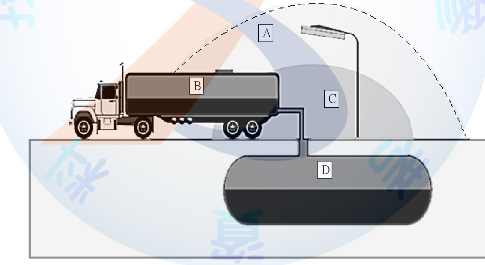
(一) CNS 3376-10（爆炸性氣體環境用電氣設備危險場所分類）對三種危險場所之定義如下： 一、0區（Zone 0）：爆炸性氣體環境連續發生，或長時間存在之場所。例如可燃性液體儲槽內部液面上方之蒸氣空間，屬爆炸性氣體混合物幾乎持續存在之區域。 二、1區（Zone 1）：正常運轉狀況下，爆炸性氣體環境有可能發生之場所。例如設備之填料函、法蘭接合處、灌裝口、卸料閥等於正常操作（如開啟人孔、進行灌裝）時周期性或偶爾會逸出可燃性氣體或蒸氣之區域。 三、2區（Zone 2）：正常運轉狀況下，爆炸性氣體環境不太可能發生，若發生亦僅存在極短時間之場所。例如1區外圍、通風良好、僅於設備異常洩漏時才可能短暫出現可燃性氣體之區域。
三區之劃分原則依可燃性氣體或蒸氣「出現之頻率」與「持續之時間」由高至低區分（0區>1區>2區），據以決定該區域防爆電氣設備應具備之防爆等級（0區要求最嚴格）。
(二) 依原圖所示各點位置（B為槽車槽體、D為地下儲油槽，二者均為盛裝汽油之容器本體；C為卸收軟管與地下儲油槽連接處之管線周圍空間；A為遠離管線連接處、鄰近路燈之上方開放空間），對照(一)所述三區定義，劃分如下： 一、B（槽車槽體）－0區：槽車槽體內部液面上方之蒸氣空間，爆炸性氣體環境連續發生、長時間存在。 二、D（地下儲油槽）－0區：地下儲油槽內部液面上方之蒸氣空間，理由同B，屬爆炸性氣體環境長時間存在之場所。 三、C（卸收軟管與地下儲油槽連接處周圍）－1區：為卸收作業時軟管接頭、卸油閥等連接點周圍，正常灌裝／卸收操作時可燃蒸氣有可能周期性或偶爾逸出之範圍。 四、A（遠離連接處之上方開放空間，鄰近路燈處）－2區：位於1區外圍、通風良好之周邊區域，正常運轉狀況下不太可能發生爆炸性氣體環境，僅於卸收設備異常洩漏時才可能短暫出現可燃氣體，故該路燈之照明設備仍應留意其位置是否已離開管制之危險區域範圍。
本題考CNS 3376防爆電氣設備危險區域分類之定義及實務判讀能力，常見失分為0區、1區、2區定義互換（尤以「連續存在」與「正常運轉偶爾發生」易混淆），或圖示判讀時忽略「愈接近逸散源、愈封閉之空間，區分等級愈高（數字愈小）」之基本原則。本題B（槽車槽體）、D（地下儲油槽）為容器本體、內部液面上方蒸氣空間長期存在可燃氣體，屬0區；C為卸收軟管連接處，正常作業時偶有蒸氣逸散，屬1區；A則位於連接處外圍之開放空間，僅異常時短暫出現可燃氣體，屬2區，作答時應把握「容器內部＞連接開口＞周邊外圍」由高至低之分區邏輯。
某可燃性氣體之組成百分比與其爆炸界限如下表所示，請回下列問題： (一) 計算表中乙烷、丙烷與丁烷之爆炸危險性(指數)，並依計算結果將前述三種可燃性氣體之爆炸危險性，由低至高排列。(10分) (二) 依勒沙特列(Le Chatelier)定律計算混合可燃性氣體之爆炸上限(UEL)與爆炸下限(LEL)。(10分)
組成物質：乙烷(C2H6) 爆炸界限3.0-12.4%，組成30%／丙烷(C3H8) 爆炸界限2.1-10.1%，組成30%／丁烷(C4H10) 爆炸界限1.6-8.4%，組成40%
(一) 爆炸危險性（危險度）H＝(UEL－LEL)÷LEL，計算如下：
乙烷：H＝(12.4－3.0)÷3.0＝9.4÷3.0＝3.13 丙烷：H＝(10.1－2.1)÷2.1＝8.0÷2.1＝3.81 丁烷：H＝(8.4－1.6)÷1.6＝6.8÷1.6＝4.25
由低至高排列：乙烷（3.13）＜丙烷（3.81）＜丁烷（4.25）。 危險度數值愈大，代表該氣體之爆炸範圍相對其下限愈寬廣，愈易形成爆炸性混合物，故丁烷之爆炸危險性最高，乙烷最低。
(二) 依勒沙特列定律，混合可燃性氣體之爆炸下限與上限計算公式為： 1／LEL(mix) ＝ Σ(yi ÷ LELi) ； 1／UEL(mix) ＝ Σ(yi ÷ UELi) 其中yi為各成分之體積百分比（本題三成分合計30%＋30%＋40%＝100%，可直接代入）。
【爆炸下限LEL(mix)】 1／LEL(mix) ＝ 30/3.0 ＋ 30/2.1 ＋ 40/1.6 ＝ 0.1000 ＋ 0.1429 ＋ 0.2500 ＝ 0.4929 LEL(mix) ＝ 1 ÷ 0.4929 ≈ 2.03%
【爆炸上限UEL(mix)】 1／UEL(mix) ＝ 30/12.4 ＋ 30/10.1 ＋ 40/8.4 ＝ 0.02419 ＋ 0.02970 ＋ 0.04762 ＝ 0.10152 UEL(mix) ＝ 1 ÷ 0.10152 ≈ 9.85%
故此混合可燃性氣體之爆炸範圍約為2.03%～9.85%。
本題考爆炸危險度公式（H＝(UEL－LEL)/LEL）及勒沙特列定律混合氣體爆炸界限計算，均須列出完整計算式並驗算。常見失分點為公式代入錯誤（如將UEL、LEL相除而非相減後除LEL）、勒沙特列公式代入時LEL與UEL互換，以及計算結果未取倒數（僅算出Σ(yi/LELi)之值即誤作LEL(mix)本身）。
⚠️ 本詳解為 AI 彙整之參考擬答，非官方標準答案；法規內容以最新公告版本為準。
某營造工地實施自動檢查，依職業安全衛生管理辦法規定，試回答下列問題： (一) 雇主對移動式起重機，除每年就該機械之整體定期實施檢查1次外，請敘明4項每月應定期實施檢查之規定事項。(8分) (二) 雇主對前項每月所實施之定期檢查，應記錄那6項事項，並保存3年。(6分) (三) 雇主使勞工從事營造作業時，應就那些事項，使該勞工就其作業有關事項實施檢點？請列舉6項。(6分)
(一) 雇主對移動式起重機，除每年應就整體定期實施檢查1次外，應每月依下列4項規定辦理定期檢查： 一、過捲預防裝置、警報裝置、制動器、離合器及其他安全裝置有無異常。 二、鋼索及吊鏈有無損傷。 三、吊鉤、抓斗等吊具有無損傷。 四、配線、集電裝置、配電盤、開關及控制裝置有無異常。
(二) 雇主對前項定期檢查、重點檢查，應就下列6項事項記錄，並保存3年： 一、檢查年月日。 二、檢查方法。 三、檢查部分。 四、檢查結果。 五、實施檢查者之姓名。 六、依檢查結果應採取改善措施之內容。
(三) 雇主使勞工從事營造作業時，應就下列事項使該勞工就其作業有關事項實施檢點（列舉6項）： 一、打樁設備之組立及操作作業。 二、擋土支撐之組立及拆除作業。 三、露天開挖之作業。 四、混凝土作業。 五、鋼架施工作業。 六、施工架之組立及拆除作業。 （另有隧道坑道開挖作業、施工構臺組拆、建築物拆除作業、模板支撐組拆及其他營建作業等項目，可視題意擇一併列。）
上述規定分屬起重機具「法定週期性自動檢查」與營造勞工「作業前自動檢點」二種不同層級之自動檢查制度：前者為雇主對機具本身依週期（年度、月度）實施之定期檢查並留存紀錄備查；後者則為使勞工於各高風險營造作業項目開始作業前，就其自身作業有關事項自行檢點確認，二者相輔相成，構成營造工地自動檢查體系之基礎。
本題考起重機自動檢查週期（年度整體檢查／每月定期檢查）內容之區分及檢查紀錄應載事項，常見失分為將「每年整體檢查4款」（伸臂、迴轉裝置、過捲預防裝置、配線等）與「每月定期檢查4款」內容張冠李戴；營造作業檢點項目則常漏列「混凝土作業」、「鋼架施工作業」等非屬「開挖、拆除」直覺聯想之項目。
近年來使用人、機共同作業之協同作業機器人為產業智慧化趨勢，並廣泛應用於半導體、面板、印刷電路板、電子組裝、工具機及汽車等產業，請依工業用機器人危害預防標準之規定，回答下列問題： (一) 請敘明何謂協同作業？(3分) (二) 雇主於機器人可動範圍之外側，應依那些規定設置圍柵或護圍？(10分) (三) 雇主使用協同作業之機器人時，除應符合相關國家標準或國際標準之規定，並應就那些事項實施評估，製作安全評估報告留存後，得不受前項(二)規定之限制？(7分)
(一) 協同作業係指工業用機器人與作業勞工於同一作業空間內，未以圍柵、護圍等實體防護設施完全區隔，而使勞工得於機器人可動範圍內或其鄰近範圍，與機器人共同、同時進行作業之型態；此種作業型態須仰賴機器人本體具備之安全防護功能（如接觸感測、限速、限力等）取代傳統圍柵，以確保勞工人身安全。
(二) 雇主於工業用機器人可動範圍之外側，原則上應設置具有適當強度、高度足以防止勞工任意跨越或進入之圍柵或護圍，其出入口應設置連鎖（互鎖）安全裝置，於防護門開啟時機器人即自動停止運轉或無法啟動運轉，以防止勞工於機器人運轉中誤入可動範圍而遭夾捲、撞擊等傷害；圍柵、護圍之構造、材質、間隙尺寸等，應足以防止人員肢體伸入而觸及機器人運轉部位。
(三) 雇主使用協同作業機器人，除應符合相關國家標準（如工業用機器人安全通用要求）或國際標準之規定外，應就下列事項實施安全評估，製作安全評估報告留存備查後，始得不受前項圍柵、護圍設置規定之限制： 一、機器人本體及其安全防護功能（如動力與力量限制、速度與間距監控、手動導引、安全額定監控停止等）是否符合協同作業之安全要求。 二、作業空間配置、勞工作業動線與機器人可動範圍之風險評估結果。 三、可預見之危害（如夾捲、撞擊、擠壓等）辨識及其對應之風險控制措施。 四、緊急停止裝置之設置及其有效性。
（因語料庫未收錄本法規全文，前述條文內容為依題目所述之通用架構彙整說明，確切條號及評估報告應載事項之完整款次，仍應以最新公告之《工業用機器人危害預防標準》原文為準。）
本題考智慧製造趨勢下協同作業機器人之安全管理新規定，屬近年新修法規重點。常見失分為將「協同作業」誤答為傳統機器人以圍柵完全隔離之作業型態，或未能區分「原則應設圍柵護圍」與「經安全評估合格得不設圍柵」二種管理模式之適用條件。
(一) 電路封閉路徑或迴路之定義係電路中之任意選定之節點開始，然後沿著通過基本電路元件，再回到原來開始的節點。對於下圖中所示的電路模型，列出可形成之迴路？(10分)(如節點AB(經過R1))
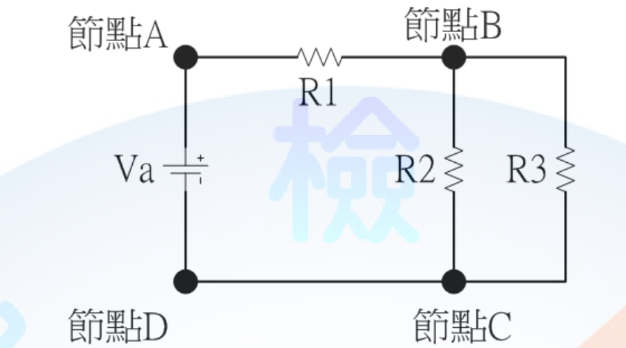
(二) 請就雇主對防止電能引起之危害，應有符合規定必要安全衛生設備及措施，試問下圖引起感電災害，若電焊機發生漏電情形，則可能造成感電迴路經過如下，則正確之感電迴路順序為何？(10分) 1.置板機接地線，2.置板機之活塞軸心，3.罹災者心臟，4.罹災者左手，5.罹災者左大腿，6.帶電之電焊機。 圖片說明：模擬罹災者當時身體潮溼，左大腿緊靠電焊機，穿著雨鞋，手戴潮溼棉紗手套握住置板機之鐵質活塞軸心時遭感電示意圖。
(一) 〔原卷附有電路模型圖，惟本文字化試題僅保留「如節點AB(經過R1)」之範例格式，電路實際節點配置、元件連接關係及完整拓樸無法自文字辨識，故無法列出具體迴路組合，以下說明迴路判讀之一般方法，實際節點與元件配對仍應以原卷圖形為準〕： 迴路判讀之標準作法為：先標示電路中所有節點（電流分支交會點）與各節點間之基本元件（電阻、電源等支路）；自任一節點出發，沿支路前進，途中不重複經過同一節點，最終回到起始節點，即構成一封閉迴路（如題示範例「節點AB(經過R1)」，代表由節點A經電阻R1到達節點B之支路屬於某迴路之一段）；再依電路之獨立迴路數（迴路數＝支路數－節點數＋1，即由基爾荷夫定律決定之獨立方程式數）逐一列出所有可能之封閉路徑，即可完整列出電路中可形成之迴路組合。
(二) 依題示情境，罹災者身體潮濕、左大腿緊靠帶電之電焊機（漏電），左手戴潮濕棉紗手套握住置板機之鐵質活塞軸心，電流由電焊機經人體流向已接地之置板機，正確之感電迴路順序為：
6.帶電之電焊機 → 5.罹災者左大腿 → 3.罹災者心臟 → 4.罹災者左手 → 2.置板機之活塞軸心 → 1.置板機接地線
即電流自漏電之電焊機經緊靠之左大腿進入人體，通過軀幹（經心臟，此為電流通過人體最危險之路徑，可能導致心室顫動），再經左手（因手部潮濕、握持良導體之活塞軸心，接觸電阻低）流出人體，經置板機之金屬活塞軸心，最終經置板機之接地線導入大地，形成完整之感電迴路。本案例凸顯「身體潮濕」與「一手一腳分別接觸不同電位之導體」係造成電流貫穿軀幹（含心臟）之高風險情境，為感電死亡案例之典型致命路徑。
本題(一)小題為電路學基礎（節點、支路、迴路）之應用，需依實際電路圖逐一列出，作答時務必先標示所有節點與支路再窮舉迴路，避免遺漏或重複；(二)小題考感電迴路判讀，關鍵在於掌握「電流入口（帶電體接觸點）→人體內部路徑（尤忌經心臟）→電流出口（低電阻接地路徑）」之判斷邏輯，常見失分為忽略「身體潮濕、手套潮濕」等降低接觸電阻之情境描述，導致迴路路徑判斷錯誤。
某化學公司儲槽區，進行連接儲槽之金屬管線切割作業後，管內液態丙二醇甲醚就不斷流出，並隨即發生火災，造成附近一座有機溶劑儲槽受火災影響，槽內溫度及壓力急遽上升，進而發生爆炸事故，該儲槽爆炸後並炸飛、移位到遠處。試回答下列問題： (一) 該有機溶劑儲槽之爆炸事故，屬何種爆炸類型？(4分) (二) 前述(一)之爆炸類型的發生機制(現象)為何？(4分) (三) 為確保管線切割、焊接等之動火作業安全，請簡述3項「火源的管制」之安全注意事項。(6分) (四) 同前述(三)進行動火作業時，請簡述3項「易燃物的管制」之安全注意事項。(6分)
(一) 該有機溶劑儲槽之爆炸事故，屬於沸騰液體膨脹蒸氣爆炸（BLEVE, Boiling Liquid Expanding Vapor Explosion）。
(二) BLEVE之發生機制：儲槽外部因鄰近火災遭受火焰直接加熱，其中液面以上、僅與蒸氣相接觸而未受液體冷卻保護之槽壁鋼板，因持續受熱使金屬強度大幅降低；同時槽內液體因吸熱不斷氣化，使槽內壓力持續上升，超過該弱化槽壁部位當下所能承受之極限壓力時，槽體即於該處發生破裂。破裂瞬間，槽內原處於過熱狀態（溫度已超過其常壓沸點，僅因槽內壓力較高而維持液態）之液體，因壓力驟然釋放而發生瞬間閃火蒸發（flash vaporization），體積在極短時間內劇烈膨脹，產生強烈之爆炸衝擊波，並將槽體殘骸、碎片猛烈炸飛、移位；若該液體屬可燃性物質，更可能於爆炸瞬間形成大型火球（fireball），造成二次災害。
(三) 動火作業「火源的管制」安全注意事項（列舉3項）： 一、動火作業前應申請動火許可，並指定專人確認作業範圍及周邊無易燃、可燃物存在，簽署動火許可後始得作業。 二、動火作業前應以可燃性氣體偵測器測定作業區域及管線內可燃氣體、蒸氣濃度，濃度達爆炸下限值30%以上時，應即刻停止動火並使勞工退避至安全場所，加強通風後再行確認。 三、動火作業（電銲、氣銲、切割等）使用之設備、器具應事前檢點其電線、接頭、開關、火嘴等有無異常，並於作業區域備置滅火器材，指派監火人員全程監視，作業後持續觀察一段時間，確認無殘火復燃之虞。
(四) 動火作業「易燃物的管制」安全注意事項（列舉3項）： 一、動火作業前應將作業區域及周邊路徑之易燃、可燃物（含殘留於管線、儲槽內之丙二醇甲醚等有機溶劑）清除或移至安全距離外，無法移開者應以濕布、防火毯覆蓋或持續以水噴灑降溫隔絕。 二、切割前之管線、儲槽應先確實隔離（關閉並上鎖相關閥件）、排空、清洗，並以惰性氣體（如氮氣）置換管內殘留可燃液體、氣體，經濃度測定確認安全後，始得動火。 三、動火地點應與其他易燃液體、氣體之儲存或使用場所保持足夠安全距離；距離不足者，應設置防火簾、擋板等阻隔設施，並於作業周邊設置預防火災所需之滅火設備。
本案例呈現典型之「動火作業未落實可燃液體管線隔離、清洗程序，導致洩漏起火，進而引燃鄰近儲槽釀成BLEVE」之連鎖式重大工業災害模式，凸顯動火許可制度與易燃物隔離管制缺一不可。
本題考爆炸類型判讀（BLEVE之關鍵特徵：外部火災加熱儲槽、槽體破裂、槽體炸飛移位、可能伴隨火球）及動火作業安全管理實務。常見失分為將BLEVE誤答為粉塵爆炸或氣雲爆炸（UVCE），未能掌握「外部受熱致槽壁弱化破裂、內容物閃火蒸發膨脹」之機制描述；動火管制與易燃物管制答案重複（如將「動火許可」與「清除易燃物」兩類措施互相誤植於對方類別）亦為常見失分點。
下圖為某一反應槽壓力過高之失誤樹，回答與計算下列問題： (一) 以直接消去法或矩陣法並應用布林代數簡化此失誤樹，求該失誤樹頂端事件之最小切集合。(10分) (二) 計算此失誤樹頂端事件之機率，列出計算式並計算至小數點後第三位。(10分)
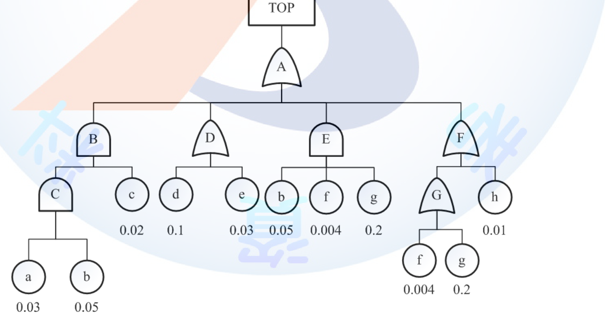
〔原卷附有反應槽壓力過高之失誤樹圖形，包含各基本事件代號、其發生機率及各邏輯閘（AND閘、OR閘）之連接關係，惟本文字化試題未能取得該圖形內容，各基本事件之機率數值、邏輯閘型式與連接架構均無法自文字辨識，故無法據以求出具體最小切集合及計算頂端事件之精確機率值。以下僅說明失誤樹分析（FTA）求解最小切集合與頂端事件機率之標準方法，實際數值仍應以原卷圖形所示之基本事件機率及邏輯閘架構計算為準〕：
(一) 最小切集合之求解方法（直接消去法／矩陣法）： 一、依失誤樹圖形，由頂端事件（TOP）依邏輯閘（AND閘以「‧」布林乘法表示、OR閘以「＋」布林加法表示）逐層向下展開，將頂端事件以基本事件之布林代數式表示。 二、應用布林代數簡化律（如吸收律 A＋AB＝A、冪等律 A＋A＝A、A‧A＝A）消去展開式中之重複項與冗餘項，得出無法再簡化之各項聯集，每一項即為一組最小切集合（Minimal Cut Set）。 三、若採矩陣法，則以矩陣列表方式表列各AND閘展開後之基本事件組合，逐步比對各列（行）是否存在包含關係，凡某一切集合為另一切集合之子集合者，刪除該較大之切集合（依吸收律），最終保留之各列即為最小切集合。
(二) 頂端事件機率之計算方法： 一、於求出最小切集合後，假設各基本事件彼此獨立，先計算各最小切集合本身發生之機率：若該切集合由n個基本事件以AND關係組成，其機率為各基本事件機率之連乘積（P＝P1×P2×…×Pn）。 二、頂端事件係各最小切集合以OR關係聯集而成，其發生機率依機率加法定理（含排容原理，扣除重複計算之交集項）計算： P(TOP) ＝ P(C1∪C2∪…∪Ck) ＝ ΣP(Ci) － ΣP(Ci∩Cj) ＋ ΣP(Ci∩Cj∩Ck) － … 三、當各切集合發生機率甚小（如基本事件機率均為10⁻²至10⁻⁴等級）時，實務上常以「稀有事件近似法」，即以各最小切集合機率之總和近似頂端事件機率：P(TOP)≈ΣP(Ci)，因高階交集項數值極小，可忽略不計，惟仍應列出完整計算式並將最終結果計算至小數點後第三位。
本題為失誤樹分析計算題，作答時務必依原卷圖形逐層展開邏輯閘關係式，先求出正確之最小切集合，再代入各基本事件機率計算頂端事件機率；常見失分點包括：化簡布林代數式時漏用吸收律導致切集合未達最小化、誤將AND閘以機率相加（應為相乘）或OR閘以機率相乘（應為相加或排容計算）、以及最終機率數值未依題目要求精確至小數點後第三位。
⚠️ 本詳解為 AI 彙整之參考擬答，非官方標準答案；法規內容以最新公告版本為準。
某營造工地屬丁類工作場所，依危險性工作場所審查及檢查辦法規定，試回答下列問題： (一) 事業單位向勞動檢查機構申請審查丁類工作場所時，對於那3種特殊狀況之營造工程，得報經勞動檢查機構同意後，分段申請審查。(3分) (二) 事業單位應於事前由那5類人員組成施工安全評估小組實施評估？(10分) (三) 對於丁類工作場所審查結果，除可歸責於事業單位外，勞動檢查機構應於受理申請後幾日內，以書面通知事業單位。(1分) (四) 對於施工安全評估報告書之內容，請列舉6項。(6分)
(一) 對於下列3種特殊狀況之營造工程，事業單位得報經檢查機構同意後，分段申請審查： 1. 工程內容較複雜者。 2. 工期較長者。 3. 施工條件變動性較大者。
(二) 事業單位應於事前由下列5類人員組成施工安全評估小組實施評估： 1. 工作場所負責人。 2. 施工安全評估人員（曾受國內外施工安全評估專業訓練或具有施工安全評估專業能力，持有證明文件，且經中央主管機關認可者；未置者得以完成訓練之工業安全技師併同建築師、土木工程技師、結構工程技師、大地工程技師或水利工程技師之一任之）。 3. 專任工程人員。 4. 依職業安全衛生管理辦法設置之職業安全衛生人員。 5. 工作場所作業主管（含承攬人之人員）。
(三) 檢查機構應於受理申請後30日內，以書面通知事業單位。
(四) 施工安全評估報告書之內容，可列舉如下6項（依附件十五及製程／施工安全評估通用架構）： 1. 工程概要（含施工計畫書內容摘要、施工範圍、期程）。 2. 施工方法及程序說明。 3. 潛在危害因素之辨識及評估結果。 4. 危害預防對策及安全衛生設施配置。 5. 專任工程人員、相關執業技師或開業建築師之簽章文件。 6. 緊急應變處置措施及相關管理計畫。
本題考危險性工作場所四分類中丁類（營造工程）的審查程序，重點在於分段審查的3種特殊情形、施工安全評估小組的5類組成人員（尤其是「施工安全評估人員」的資格認定與替代方式）、法定30日書面通知期限，以及施工安全評估報告書的內容架構。常見失分點：把丁類分段申請的條件與丙類、乙類的規定混淆；漏答施工安全評估小組中「工作場所作業主管（含承攬人之人員）」；誤把30日答成45日（45日為乙、丙類工作場所之期限）。
依職業安全衛生設施規則規定，試回答下列問題： (一) 請說明「氣體集合熔接裝置」及「氣體集合裝置」。(8分) (二) 為避免漏電而發生感電危害，雇主應在那3種狀況下於各該電動機具設備之連接電路上設置適合其規格，具有高敏感度、高速型，能確實動作之防止感電用漏電斷路器？(6分) (三) 對於作業場所有易燃液體之蒸氣、可燃性氣體或爆燃性粉塵以外之可燃性粉塵滯留，而有爆炸、火災之虞者，雇主除應依危險特性採取通風、換氣、除塵等措施外，應再依那3項規定辦理？(6分)
(一) - 氣體集合熔接裝置：指由氣體集合裝置、安全器、壓力調整器、導管、吹管等所構成，使用可燃性氣體供金屬之熔接、熔斷或加熱之設備。 - 氣體集合裝置：指由導管連接10個以上之可燃性氣體容器之裝置；或由導管連結9個以下之可燃性氣體容器之裝置中，其容器容積合計，氫氣或溶解性乙炔之容器在400公升以上，其他可燃性氣體容器在1,000公升以上者。
(二) 雇主應於下列3種狀況，於電動機具設備之連接電路上設置具高敏感度、高速型、能確實動作之防止感電用漏電斷路器： 1. 使用對地電壓在150伏特以上之移動式或攜帶式電動機具。 2. 於含水或被其他導電度高之液體濕潤之潮濕場所、金屬板上或鋼架上等導電性良好場所，使用移動式或攜帶式電動機具。 3. 於建築或工程作業使用之臨時用電設備。
(三) 除通風、換氣、除塵等措施外，應再依下列3項規定辦理： 1. 指定專人對於蒸氣、氣體之濃度，於作業前測定之。 2. 蒸氣或氣體之濃度達爆炸下限值之30%以上時，應即刻使勞工退避至安全場所，並停止使用煙火及其他為點火源之虞之機具，並應加強通風。 3. 使用之電氣機械、器具或設備，應具有適合於其設置場所危險區域劃分使用之防爆性能構造。
本題考職安設施規則中電氣安全與火災爆炸預防兩大主題。(一)重點在區分「氣體集合裝置」本身（容器數量與容積門檻）與「氣體集合熔接裝置」（含安全器、壓力調整器等周邊構件的完整系統）；作答需寫出400公升（氫氣、溶解性乙炔）與1,000公升（其他可燃性氣體）兩個容積門檻，這是常見漏答處。(二)注意150伏特係「對地電壓」而非線間電壓。(三)容易與可燃性氣體、易燃液體蒸氣（第177條前段）混淆，須留意本條係規範「易燃液體之蒸氣、可燃性氣體或爆燃性粉塵以外之可燃性粉塵」，且30%為常考數字。
依職業安全衛生管理辦法規定，試回答下列問題： (一) 請說明那4種事業單位應參照中央主管機關所定之職業安全衛生管理系統指引，建置適合該事業單位之職業安全衛生管理系統？(8分) (二) 前述管理系統應包括那5項安全衛生事項？(10分) (三) 前述安全衛生管理之執行應作成紀錄，並保存幾年？(2分)
(一) 下列4種事業單位，雇主應依國家標準同等以上規定，建置適合該事業單位之職業安全衛生管理系統： 1. 第一類事業勞工人數在200人以上者。 2. 第二類事業勞工人數在500人以上者。 3. 有從事石油裂解之石化工業工作場所者。 4. 有從事製造、處置或使用危害性之化學品，數量達中央主管機關規定量以上之工作場所者。
(二) 前述管理系統應包括下列5項安全衛生事項： 1. 風險評估：於引進或修改製程、作業程序、材料及設備前，評估其職業災害之風險，並採取適當之預防措施。 2. 採購與發包管理：機械、設備、器具、物料、原料及個人防護具等之採購、租賃契約，及營繕工程規劃、設計、施工、監造之發包契約，均應納入符合法令之職業安全衛生具體規範。 3. 承攬管理：以事業之全部或一部分交付承攬，或與承攬人分別僱用勞工於同一期間、同一工作場所共同作業時，應就承攬人之安全衛生管理能力、危害通報、教育訓練等事項訂定承攬管理計畫。 4. 緊急應變：依潛在風險訂定緊急狀況預防、準備及應變之計畫，並定期實施演練。 5. 管理績效之審查及表揚：管理績效良好並經中央主管機關認可者，得予分級公開表揚，以持續精進管理系統。
(三) 應作成紀錄，並保存3年。
本題核心在職業安全衛生管理辦法第12條之2至第12條之7所建構的「管理系統」專章，(一)須留意人數門檻（第一類200人、第二類500人）與另外兩種「不論人數」即應建置的特殊工作場所（石化裂解、危害性化學品達規定量）。(二)為條文結構性考點，5項事項依序對應12-3至12-7條，答題時建議依條文順序條列以避免遺漏。(三)保存年限3年是本辦法多處重複出現的一致規定，亦是職安衛管理辦法的高頻考點數字。
依起重升降機具安全規則規定，移動式起重機之使用，以吊物為限，不得乘載或吊升勞工從事作業。但從事貨櫃裝卸、船舶維修、高煙囪施工等尚無其他安全作業替代方法，或臨時性、小規模、短時間、作業性質特殊，經採取防止墜落等措施者，不在此限。 試回答下列問題： (一) 前述但書所定防止墜落措施，應辦理那4種規定事項？(8分) (二) 移動式起重機從事垂直高度多少公尺以下之高處作業，不適用前述但書規定。(2分) (三) 承上題，那些作業者，不在此限？(2分) (四) 以搭乘設備乘載或吊升勞工時，該搭乘設備應依那4項規定辦理？(8分)
(一) 防止墜落措施應辦理之核心事項如下： 1. 以搭乘設備乘載或吊升勞工，並防止其翻轉及脫落。 2. 搭乘設備應設置安全母索或防墜設施，並使勞工佩戴安全帽及符合國家標準CNS 14253-1同等以上規定之全身背負式安全帶。 3. 搭乘設備之使用不得超過限載員額。 4. 搭乘設備自重加上搭乘者、積載物等之最大荷重，不得超過該起重機作業半徑所對應之額定荷重之50%。
（註：現行《起重升降機具安全規則》第35條第2項對防止墜落措施實際已列有6款規定，除上列4項外，另增訂「搭乘設備下降時應採動力下降之方法」及「垂直高度超過20公尺之高處作業，禁止使用直結式搭乘設備（設有無線電通訊聯絡及作業監視或預防碰撞警報裝置者不在此限）」2款，作答時建議依現行條文完整列出6款以符合最新規定。）
(二) 20公尺以下。
(三) 使用道路或鄰接道路作業者，不在此限（仍應適用但書防止墜落措施之規定）。
(四) 搭乘設備應依下列4項規定辦理： 1. 搭乘設備應有足夠強度，其使用之材料不得有影響構造強度之損傷、變形或腐蝕等瑕疵。 2. 搭乘設備周圍應設置高度90公分以上之扶手，並設中欄杆及腳趾板。 3. 搭乘設備之懸吊用鋼索或鋼線之安全係數應在10以上；吊鏈、吊帶及其支點之安全係數應在5以上。 4. 應依搭乘設備之構造及材質，計算積載之最大荷重，並於搭乘設備之明顯易見處，標示自重及最大荷重。
本題整組考的是移動式起重機「以人代物」吊升作業的特別安全管理，重點在防止墜落措施與搭乘設備規格兩組規定不可混淆：前者規範「作業方式」（限載員額、荷重上限、安全母索與個人防護具），後者規範「設備本體」（強度、扶手、鋼索安全係數、標示）。20公尺與「使用道路或鄰接道路作業」的除外規定，是與第四題(一)相互呼應的追加規範，答題時要留意題目已將此獨立列為(二)(三)小題，代表出題當時的條文架構把此列為單獨規定，作答時仍應忠實回答current條文之數字結論。安全係數「懸吊用鋼索10以上、吊鏈5以上」為常考數字，勿與吊掛用鋼索（安全係數6以上，見第65條）搞混。
依Jone's理論得知可燃性物質之爆炸下限(LEL)為理論混合比例值(Cst)之0.55倍(LEL=0.55Cst)，假設空氣中氧氣之體積百分比為21%，試回答下列問題： (一) 計算乙烷(C2H6)之理論混合比例值(Cst)(10分)與其爆炸下限(5分)。 (二) 若乙烷之爆炸上限為12.4%，計算乙烷之相對危險指數。(5分)
(一) 理論混合比例值 Cst 與爆炸下限 LEL
乙烷完全燃燒反應式： C₂H₆ + 3.5 O₂ → 2CO₂ + 3H₂O
即完全燃燒1莫耳乙烷需要3.5莫耳氧氣（n = 3.5）。
依Jone's理論，理論混合比例值計算公式為： Cst = 100 / [(1/0.21) × n + 1]
代入 n = 3.5、氧氣體積百分比21%： Cst = 100 / [(1/0.21) × 3.5 + 1] = 100 / [4.7619 × 3.5 + 1] = 100 / [16.667 + 1] = 100 / 17.667 ≈ 5.66 %
爆炸下限： LEL = 0.55 × Cst = 0.55 × 5.66% ≈ 3.11 %
（驗算：乙烷之實測LEL約為3.0%左右，與計算值3.11%相符，數量級合理。）
(二) 相對危險指數
相對危險指數之定義為： 相對危險指數 = (UEL − LEL) / LEL
已知 UEL = 12.4%，LEL ≈ 3.11%： 相對危險指數 = (12.4 − 3.11) / 3.11 = 9.29 / 3.11 ≈ 2.99（約3）
本題屬工業安全工程之爆炸特性計算題，Jone's理論（理論混合比例值與爆炸下限之經驗關係式）及相對危險指數（火災爆炸危險度指標）屬工業安全工程學理範疇，非法規條文規定事項，故不列法規條號，作答時應以計算過程之正確性與合理性為評分核心。
本題是職業安全管理甲級術科的典型計算題，核心在於：(1)正確寫出乙烷完全燃燒之化學反應式以求出n值（完全燃燒1莫耳燃料所需氧氣莫耳數），(2)正確代入Jone's公式（切勿把21%誤用為4.773或誤將公式分子分母顛倒），(3)LEL=0.55Cst為题目已給定之關係式，直接代入即可，(4)相對危險指数公式(UEL-LEL)/LEL值愈大代表爆炸範圍愈廣、危險性愈高。常見失分點：反應式配平錯誤（誤將O2係數寫成2或3而非3.5）、忘記列出完整計算過程（本類計算題通常「應列出計算過程，否則不予計分」）、以及未對照乙烷之實際物性數據檢驗計算結果合理性。
⚠️ 本詳解為 AI 彙整之參考擬答，非官方標準答案；法規內容以最新公告版本為準。
某營造工地進行鋼構組配作業，請依營造安全衛生設施標準規定，回答下列問題： (一) 雇主對於鋼構之組立、架設、爬升、拆除、解體或變更等作業，應指派鋼構組配作業主管辦理相關事項，請列舉5項前述所稱鋼構之範圍？(10分) (二) 雇主進行鋼構組配作業前，應擬訂包括那4種事項之作業計畫，並使勞工遵循？(8分) (三) 雇主於鋼構組配作業進行組合時，應逐次構築永久性之樓板，除設計上已考慮構造物之整體安全性者，最高永久性樓板上組合之骨架，不得超過幾層？(2分)
(一) 所稱鋼構之範圍，可列舉如下5項： 1. 高度在5公尺以上之鋼構建築物。 2. 高度在5公尺以上之鐵塔、金屬製煙囪或類似柱狀金屬構造物。 3. 高度在5公尺以上或橋梁跨距在30公尺以上，以金屬構材組成之橋梁上部結構。 4. 塔式起重機或升高伸臂起重機。 5. 以金屬構材組成之室外升降機升降路塔或導軌支持塔（或：以金屬構材組成之施工構臺、人字臂起重桿，兩者任選其一亦屬鋼構範圍）。
(二) 鋼構組配作業前，應擬訂包括下列4種事項之作業計畫，並使勞工遵循： 1. 安全作業方法及標準作業程序。 2. 防止構材及其組配件飛落或倒塌之方法。 3. 設置能防止作業勞工發生墜落之設備及其設置方法。 4. 人員進出作業區之管制。
(三) 不得超過8層（但設計上已考慮構造物之整體安全性者，不在此限）。
本題考營造安全衛生設施標準「鋼構組配」專節，(一)鋼構範圍實際條文共列7款（含人字臂起重桿、施工構臺），題目僅要求列舉5項，作答時任選5款寫滿即可，不必強求列出全部7款。(二)作業計畫的4項內容為第149-1條特有規定（安全作業方法及標準作業程序、防止構材飛落倒塌之方法、防止墜落設備之設置方法、人員進出管制），容易與第149條鋼構組配作業主管應辦理之6項現場事項混淆，兩者條號、對象皆不同，作答時應區分清楚。(三)「8層」是明確數字題，且但書「設計上已考慮構造物之整體安全性者不在此限」務必寫出，否則易被視為答案不完整。
請依職業安全衛生法及其施行細則規定，就機械設備源頭管理制度，試回答下列問題： (一) 製造者或輸入者對於中央主管機關公告列入型式驗證之機械、設備或器具，非經中央主管機關認可之驗證機構實施型式驗證合格及張貼合格標章，不得產製運出廠場或輸入，但在何種特殊情形下，得免驗證，請列舉4種得免驗證之情形。(12分) (二) 因產品構造規格特殊致驗證有困難者，報驗義務人得檢附何種報告，向中央主管機關申請核准採用適當檢驗方式為之。(2分) (三) 那二個機關（構）得對公告列入應實施型式驗證之產品，進行抽驗及市場查驗，業者不得規避、妨礙或拒絕。(2分) (四) 請敘明「型式驗證」之涵義。(4分)
(一) 有下列4種情形之一者，得免驗證： 1. 依第16條（危險性機械、設備之檢查）或其他法律規定實施檢查、檢驗、驗證或認可者。 2. 供國防軍事用途使用，並有國防部或其直屬機關出具證明者。 3. 限量製造或輸入僅供科技研發、測試用途之專用機型，並經中央主管機關核准者。 4. 非供實際使用或作業用途之商業樣品或展覽品，並經中央主管機關核准者。 （法規另有第5款「其他特殊情形，有免驗證之必要，並經中央主管機關核准」之概括規定，合計共5款，本題僅需列舉4種。）
(二) 得檢附產品安全評估報告，向中央主管機關申請核准採用適當檢驗方式為之。
(三) 中央主管機關及勞動檢查機構，得對公告列入應實施型式驗證之產品進行抽驗及市場查驗。
(四) 「型式驗證」係指由中央主管機關認可之驗證機構，對某一型式之機械、設備或器具等產品，審驗其是否符合安全標準之程序；經型式驗證合格者，應張貼合格標章後始得產製運出廠場或輸入。
本題考機械設備器具源頭管理制度中「型式驗證」與「一般安全標示登錄」的區別（第7條為一般登錄標示制度，第8、9條為型式驗證制度，兩者常被考生混淆）。(一)免驗證情形共5款，題目僅要求列舉4種，注意「其他特殊情形」屬概括條款，作答時建議優先列舉前4款明確列舉之情形。(三)易誤寫為僅「勞動檢查機構」，正確應是「中央主管機關」與「勞動檢查機構」兩者皆有權限。(四)型式驗證涵義須完整寫出「審驗」「安全標準」「驗證機構」三個關鍵要素。
如果你是一家金屬容器製造廠的職業安全衛生人員，該金屬容器之製造程序，係先使用水柱壓力達每平方公分380公斤之高壓水切割裝置（水刀）作為材料表面除鏽後，在容器內使用交流電焊機進行熔接作業，並以手提式照明燈作為容器內部照明，依職業安全衛生設施規則規定，回答下列問題： (一) 於那2種場所作業時，所使用之交流電焊機應有自動電擊防止裝置？(4分) (二) 對於良導體機器設備內之檢修工作所用之手提式照明燈，除了導線須為耐磨損及有良好絕緣外，尚需符合那2種安全規定？(4分) (三) 以上述高壓水切割裝置（水刀），從事沖蝕、剝離、切除、疏通及沖擊等作業，應依那6項事項辦理？(12分)
(一) 勞工於下列2種場所作業，所使用之交流電焊機應有自動電擊防止裝置（採自動式焊接者不在此限）： 1. 良導體機器設備內之狹小空間。 2. 於鋼架等致有觸及高導電性接地物之虞之場所。
(二) 除導線須耐磨損及有良好絕緣外，尚須符合下列2種安全規定： 1. 使用電壓不得超過24伏特。 2. 不得有接頭。
(三) 使用水柱壓力達每平方公分350公斤以上（本題380公斤已符合適用門檻）之高壓水切割裝置，從事沖蝕、剝離、切除、疏通及沖擊等作業，應依下列6項事項辦理： 1. 事前依作業場所之狀況、高壓水切割裝置種類、容量等訂定安全衛生作業標準，使作業勞工周知，並指定專人指揮監督勞工依安全衛生作業標準從事作業。 2. 為防止高壓水柱危害勞工，作業前應確認其停止操作時，具有立刻停止高壓水柱施放之功能。 3. 禁止與作業無關人員進入作業場所。 4. 於適當位置設置壓力表及能於緊急時立即遮斷動力之動力遮斷裝置。 5. 作業時應緩慢升高系統操作壓力，停止作業時應將壓力洩除。 6. 提供防止高壓水柱危害之個人防護具，並使作業勞工確實使用。
本題以金屬容器製造情境整合3項職安設施規則規定，是典型的情境整合題。(一)須留意「狹小空間」與「觸及高導電性接地物之虞之場所」兩者缺一不可，且但書「採自動式焊接者不在此限」宜一併提及以示完整。(二)容易遺漏24伏特之電壓上限規定，或誤把電壓值記成110伏特、380伏特（後者恰為題幹中水刀壓力數字，考生易混淆）。(三)水刀作業6項規定是本規則於較晚期增訂之條文（第63-1條），近年考題出現率提高，作答時應留意水柱壓力門檻「每平方公分350公斤以上」與題目所給380公斤之關係——因380>350，故本題情境屬本條適用範圍。
依起重升降機具安全規則規定，回答下列問題： (一) 雇主於起重機具作業時，為防止吊舉物落下造成人員傷亡，應採取那2項設施？但於吊舉物下方設有安全支撐設施、其他安全設施或使吊舉物不致掉落，而無危害勞工之虞者，不在此限。(4分) (二) 雇主對於使用起重機具從事吊掛作業之勞工，請列舉6項應使其辦理之規定事項。(12分) (三) 若起重機具所使用吊掛構件之吊鉤所承受最大荷重為5公噸，其斷裂荷重為20公噸，請問此吊鉤安全係數為何？是否符合法規要求？(4分)
(一) 雇主於起重機具（固定式起重機、移動式起重機、人字臂起重桿）作業時，應採取下列2項設施： 1. 防止人員進入吊舉物下方之設備或措施。 2. 防止吊舉物通過人員上方之設備或措施。
（但吊舉物下方已有安全支撐設施、其他安全設施或使吊舉物不致掉落，而無危害勞工之虞者，不在此限。）
(二) 雇主對於使用起重機具從事吊掛作業之勞工，應使其辦理下列規定事項（現行條文共列10項，摘列具代表性之6項如下）： 1. 確認起重機具之額定荷重，使所吊荷物之重量在額定荷重值以下。 2. 檢視荷物之形狀、大小及材質等特性，以估算荷物重量，或查明其實際重量，並選用適當吊掛用具及採取正確吊掛方法。 3. 估測荷物重心位置，以決定吊具懸掛荷物之適當位置。 4. 起吊作業前，先行確認其使用之鋼索、吊鏈等吊掛用具之強度、規格、安全率等之符合性；並檢點吊掛用具，汰換不良品。 5. 起吊作業時，以鋼索、吊鏈等穩妥固定荷物，懸掛於吊具後，再通知起重機具操作者開始進行起吊作業。 6. 當荷物起吊離地後，不得以手碰觸荷物，並於荷物剛離地面時，引導起重機具暫停動作，以確認荷物之懸掛有無傾斜、鬆脫等異狀。
（現行條文另增訂「確認吊運路線並警示、清空無關人員」「與操作者確認指揮手勢」「確認放置場所排列堆疊方法」「引導荷物下降並卸離吊具」共4項，合計10項，作答時可視配分彈性補列。）
(三) 安全係數 = 斷裂荷重 ÷ 最大使用荷重 = 20公噸 ÷ 5公噸 = 4
依規定，起重機具之吊鉤安全係數應在4以上；本題計算所得安全係數恰為4，已達法定最低要求，符合法規要求。
本題(一)之「2項設施」實為同一條文中「防止人員進入下方」與「防止吊舉物通過上方」兩個並列動作，答題時應拆開分項列出以符合配分結構。(二)吊掛作業辦理事項現行條文已擴充至10項（較早期版本增列不少），本題僅要求6項，可依配分彈性擇要作答，惟需注意所列各項應具體、不可空泛帶過。(三)為標準安全係數計算題，公式簡單但須留意「安全係數應在4以上」是「大於等於」而非「大於」，故本題斷裂荷重20噸／最大荷重5噸＝4，恰為臨界值，仍判定為符合法規要求，這是容易誤判的細節。
依機械設備器具安全標準之規定，回答與計算下列問題： (一) 列出四種動力衝剪機械之安全裝置。(8分) (二) 簡要說明光電式安全裝置之連續遮光幅測試方法(2分)，該光電式安全裝置連續遮光幅之直徑應為多少毫米以下？(2分)，具啟動控制功能之光電式安全裝置，其連續遮光幅之直徑應為多少毫米以下？(2分) (三) 若手指介入光電式安全裝置之感應域至快速停止機構開始動作之時間為100毫秒，快速停止機構開始動作至滑塊等停止之時間為120毫秒，該裝置之連續遮光幅為30毫米以下，請計算最小安全距離並以毫米表示之。(6分，應列出計算過程，否則不予計分)
(一) 動力衝剪機械之安全裝置應具有下列4種機能之一： 1. 連鎖防護式安全裝置：滑塊等在閉合動作中，能使身體之一部無介入危險界限之虞。 2. 雙手操作式安全裝置：以雙手操作使手在滑塊動作中無法達到危險界限（含安全一行程式、雙手起動式）。 3. 感應式安全裝置（如光電式安全裝置）：滑塊在閉合動作中，遇身體之一部接近危險界限時，能使滑塊停止動作。 4. 拉開式或掃除式安全裝置：滑塊在閉合動作中，遇身體之一部介入危險界限時，能隨滑塊之動作使其脫離危險界限。
(二) - 連續遮光幅測試方法：以圓柱形之標準檢知棒，置於投光器與受光器之光軸間（防護高度範圍內）之任意位置，測試檢出機構所能確實檢出之遮光棒最小直徑，該最小直徑即為連續遮光幅。 - 光電式安全裝置之連續遮光幅，直徑應為50毫米以下。 - 具啟動控制功能之光電式安全裝置，其連續遮光幅之直徑應為30毫米以下。
(三) 最小安全距離計算：
依光電式安全裝置安全距離公式： D = 1.6 × (Tl + Ts) + C
其中： - Tl（手指介入感應域至快速停止機構開始動作之時間）= 100毫秒 - Ts（快速停止機構開始動作至滑塊等停止之時間）= 120毫秒 - C（追加距離）：依連續遮光幅30毫米以下，查表對應之C值 = 0毫米
代入計算： D = 1.6 × (100 + 120) + 0 = 1.6 × 220 = 352毫米
故本裝置之最小安全距離為352毫米。
本題考機械設備器具安全標準中衝剪機械安全裝置的分類與光電式安全裝置的技術規格計算，是歷屆常考的固定題型。(一)4種安全裝置機能務必依條文用語精確作答，不可只寫「感應式」而漏答「連鎖防護式」「拉開式或掃除式」。(二)50毫米與30毫米兩個數字經常被交換記憶，須留意「具啟動控制功能」者門檻較嚴（30毫米），一般光電式則為50毫米。(三)計算時最容易出錯之處在於：查表判斷連續遮光幅30毫米以下時C＝0（並非直接代入30），以及不可遺漏1.6之係數；本題答案352毫米，可與題目已提供連續遮光幅30毫米之對照表數值互相驗證公式代入正確性。
⚠️ 本詳解為 AI 彙整之參考擬答，非官方標準答案；法規內容以最新公告版本為準。
依製程安全評估定期實施辦法規定，從事石油裂解之石化工業與製造、處置或使用危害性之化學品數量達規定數量以上之工作場所，應實施製程安全評估及製作評估報告。試回答下列問題： (一) 列舉5項安全評估方法，以評估及確認製程危害。(10分) (二) 評估報告中「機械完整性」，應針對那些製程設備確保其完整性，請列舉5項。(10分)
(一) 製程安全評估應使用下列1種以上之安全評估方法，以評估及確認製程危害，任選5項如下： 1. 如果－結果分析（What-If）。 2. 檢核表（Checklist）。 3. 如果－結果分析／檢核表（What-If/Checklist）。 4. 危害及可操作性分析（HazOp）。 5. 失誤模式及影響分析（FMEA）。 （法規另列「故障樹分析（FTA）」及「其他經中央主管機關認可具有同等功能之安全評估方法」，合計7款，本題任選5款作答即可。）
(二) 「機械完整性」旨在確保下列製程相關設備之完整性，可列舉5項如下： 1. 壓力容器及儲槽。 2. 配管系統（含管線元件、閥件）。 3. 釋放（洩壓）及排放系統。 4. 緊急停車系統。 5. 幫浦（含壓縮機等旋轉機械）以及控制系統（含監視裝置、感測器、警報器及連鎖系統）。
本題考製程安全評估（PSM）的兩個核心工具：評估方法與評估報告內容架構。(一)7種方法為固定考點，需留意「如果－結果分析」與「如果－結果分析／檢核表」是兩種不同方法，不可合併為一項；「危害及可操作性分析（HazOp）」是實務上最常用者，答題時應優先列出。(二)「機械完整性」概念源自美國OSHA PSM標準，泛指維持製程關鍵設備（壓力容器、配管、釋壓系統、緊急停車系統、幫浦與控制連鎖系統）在使用年限內保持設計功能不劣化，是石化業職安管理的重要概念，惟法規本身僅以附表方式規定明細，作答時應以製程安全管理實務認知輔助作答，並誠實標註此部分非逐條可查證之條文內容。
依營造安全衛生設施標準規定，雇主僱用勞工從事露天開挖作業時，試回答下列問題： (一) 垂直開挖最大深度在多少公尺以上應設擋土支撐？(2分) (二) 列舉3項擋土支撐作業主管於作業現場應辦理事項。(6分) (三) 列舉4項擋土支撐之構築應辦理事項。(8分) (四) 該開挖作業現場如圖所示，其開挖深度為2.5公尺。請就圖示列舉2項該開挖作業現場之不安全狀況。(4分)
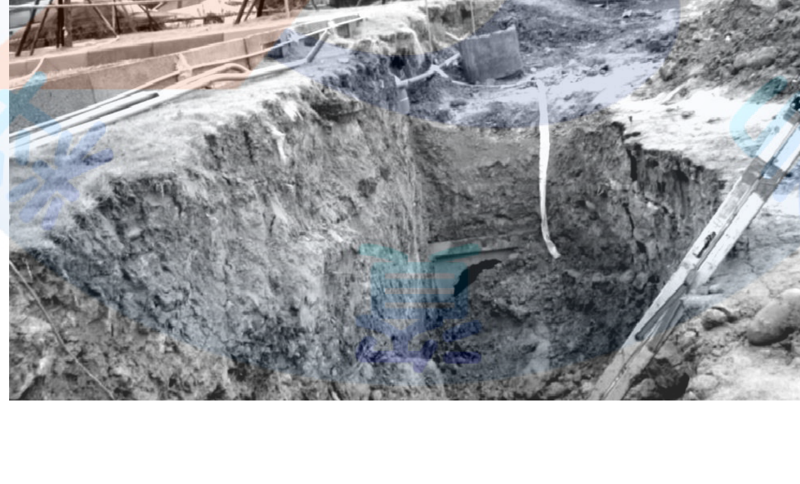
(一) 垂直開挖最大深度在1.5公尺以上，使勞工進入開挖面作業者，應設擋土支撐（地質特殊或採取替代方法，經專任工程人員或相關執業技師簽認其安全性者，不在此限）。
(二) 擋土支撐作業主管於作業現場應辦理下列事項（任列3項）： 1. 決定作業方法，指揮勞工作業。 2. 實施檢點，檢查材料、工具、器具等，並汰換其不良品。 3. 監督勞工確實使用個人防護具。
(三) 擋土支撐之構築，應辦理下列事項（任列4項）： 1. 依擋土支撐構築處所之地質鑽探資料，研判土壤性質、地下水位、埋設物及地面荷載現況，妥為設計，並繪製詳細構築圖樣及擬訂施工計畫，據以構築。 2. 構築圖樣及施工計畫應包括樁或擋土壁體及其他襯板、橫檔、支撐及支柱等構材之材質、尺寸配置、安裝時期、順序、降低水位之方法及土壓觀測系統等。 3. 擋土支撐之設置，應於未開挖前依計畫之設計位置先行打樁，或於擋土壁體達預定擋土深度後再行開挖。 4. 為防止支撐、橫檔及牽條等之脫落，應確實安裝固定於樁或擋土壁體上。
(四) 依原卷所附開挖作業現場照片，該開挖面呈近垂直陡峭之邊坡，列舉2項不安全狀況： 1. 開挖面深度已達2.5公尺（逾1.5公尺應設擋土支撐之門檻），惟現場並未設置任何擋土支撐設施，邊坡呈近垂直陡直狀態，有崩塌、土石飛落之虞。 2. 開挖出之土石方直接堆置於開挖面上方坡緣（緊鄰開挖口邊緣），未依規定清運至安全距離外，增加邊坡崩塌風險；另現場以簡易梯子供人員上下，亦未見周邊設置護欄或警示圍籬，防墜與警戒措施均有不足。
本題(一)「1.5公尺」是露天開挖作業的關鍵法定門檻數字，同時也是判斷是否須指派「露天開挖作業主管」的門檻（第66條），兩者數字相同、條文不同，容易混淆但不衝突。(二)(三)須注意「擋土支撐作業主管」（第74條，於現場辦理管理性事項）與「擋土支撐之構築」（第73條，屬技術性設計施工規範）是兩個不同條文、不同性質的規定，切勿張冠李戴。(四)依原圖判讀重點在於「陡直邊坡未設擋土支撐」與「開挖土方堆置過於接近開挖面上方」兩項最直觀之違規態樣，答題時應具體描述圖中可見之缺失（而非泛稱「不安全」），並可視圖面細節延伸提及上下設備、護欄警戒等防墜配套措施之不足。
某工廠在一鍋爐房內設置2座煙管式蒸汽鍋爐，傳熱面積各為200、400平方公尺，試回答下列問題： (一) 該工廠僱用鍋爐操作人員及指派鍋爐作業主管（不依規定減列計算傳熱面積），各應經何種等級以上之鍋爐操作人員訓練或鍋爐操作技能檢定合格者始可擔任？(6分) (二) 依危險性工作場所審查及檢查辦法規定，上述場所是否為危險性工作場所？(2分) (三) 雇主使鍋爐操作人員實施鍋爐之操作、管理及異常處置等事項，請依鍋爐及壓力容器安全規則規定列舉6項。(12分)
(一) - 鍋爐作業主管：本案2座鍋爐傳熱面積合計為200＋400＝600平方公尺，已達500平方公尺以上，依規定應指派具有甲級鍋爐操作人員資格者擔任鍋爐作業主管（僅各鍋爐均屬貫流式者，方得由乙級以上者擔任；本題為煙管式，非貫流式，故不適用此例外）。 - 鍋爐操作人員：個別鍋爐操作人員應經與其所操作鍋爐傳熱面積相當等級以上之鍋爐操作人員訓練合格或技能檢定合格。本案200平方公尺及400平方公尺2座鍋爐，均落於「50平方公尺以上未滿500平方公尺」之區間，故2座鍋爐之操作人員均應經乙級以上鍋爐操作人員訓練合格或鍋爐操作技能檢定合格。
(二) 是，屬危險性工作場所（丙類）。因蒸汽鍋爐傳熱面積合計600平方公尺，已達「蒸汽鍋爐之傳熱面積在500平方公尺以上」之丙類工作場所門檻。
(三) 雇主應使鍋爐操作人員實施下列事項（任列6項）： 1. 監視壓力、水位、燃燒狀態等運轉動態。 2. 避免發生急劇負荷變動之現象。 3. 防止壓力上升超過最高使用壓力。 4. 保持壓力表、安全閥及其他安全裝置之機能正常。 5. 每日檢點水位測定裝置之機能一次以上。 6. 確保鍋爐水質，適時化驗鍋爐用水，並適當實施沖放鍋爐水，防止鍋爐水之濃縮。 （法規另列「保持給水裝置機能正常」「檢點及調整低水位燃燒遮斷裝置、火焰檢出裝置及其他自動控制裝置」「發現鍋爐異狀應即採取必要措施」共3項，合計9項，本題任列6項即可。）
本題(一)的關鍵是區分「鍋爐作業主管」（依「合計」傳熱面積600平方公尺判斷，屬甲級）與「個別鍋爐操作人員」（依「單座」鍋爐傳熱面積判斷，本題200及400平方公尺均屬乙級以上區間），兩者判斷基準不同、容易混淆；題幹刻意加註「不依規定減列計算傳熱面積」，是提醒作答者不得依貫流式或自動控制裝置等規定折減面積後再判斷等級。(二)呼應丙類工作場所之定義（傳熱面積合計500平方公尺以上），與第一題的「合計」概念一致，須留意本題傳熱面積600平方公尺剛好跨過門檻，是典型的臨界值判斷題。(三)鍋爐操作管理事項現行條文共9項，本題僅需列舉6項，作答時建議優先列出監視運轉動態、防止超壓、保持安全裝置機能等較核心之管理事項。
依職業安全衛生設施規則規定，試回答下列問題： (一) 使用高空工作車作業時，請列舉6項雇主應辦理之事項。(12分) (二) 高空工作車之駕駛於離開駕駛座時，除有勞工在工作台從事作業或將從事作業外，請列舉2項應使駕駛採取之措施。(4分) (三) 高空工作車行駛時，雇主不得使勞工搭載於該高空工作車之工作台上。但使高空工作車行駛於平坦堅固之場所，並採取那些措施時，不在此限。(4分)
(一) 使用高空工作車之作業，雇主應依下列事項辦理（任列6項，法規共列7項）： 1. 除行駛於道路上外，應於事前依作業場所之狀況、高空工作車種類、容量等訂定包括作業方法之作業計畫，使作業勞工周知，並指定專人指揮監督勞工依計畫從事作業。 2. 除行駛於道路上外，為防止高空工作車翻倒或翻落，應將外伸撐座完全伸出，並採取防止地盤不均勻沉陷、路肩崩塌等必要措施。 3. 在工作台以外之處所操作工作台時，應規定統一之指揮信號，並指定人員依該信號從事指揮作業等必要措施。 4. 不得搭載勞工。但設有乘坐席位及工作台者，不在此限。 5. 不得超過高空工作車之積載荷重及能力。 6. 使用高空工作車從事作業時，應使該高空工作車工作台上之勞工佩戴安全帽及符合國家標準CNS 14253-1同等以上規定之全身背負式安全帶。
(二) 高空工作車駕駛於離開駕駛座時（無勞工在工作台從事作業或將從事作業者），應採取下列2項措施： 1. 將工作台下降至最低位置。 2. 採取預防高空工作車逸走之措施，如停止原動機並確實使用制動裝置制動等，以保持於穩定狀態。
(三) 高空工作車行駛於平坦堅固之場所，並採取下列措施時，得使勞工搭載於工作台上： 1. 規定一定之信號，並指定引導人員，依該信號引導高空工作車。 2. 於作業前，事先視作業時該高空工作車工作台之高度及伸臂長度等，規定適當之速率，並使駕駛人員依該規定速率行駛。
本題整組聚焦於「高空工作車」專節（民國103年修正新增），是近年考題常出現的主題。(一)7項事項中，「不得搭載勞工，但設有乘坐席位及工作台者不在此限」與「工作台上勞工應佩戴安全帽及全身背負式安全帶（CNS 14253-1）」是與其他機具規定共通的重點，答題時不可遺漏防護具之國家標準字號。(二)須留意但書「有勞工在工作台從事作業或將從事作業時，不在此限」，這種情況下駕駛仍應「確實使用制動裝置制動等，以保持穩定狀態」而非完全免除義務，作答時宜一併說明差異。(三)行駛時搭載勞工原則禁止，例外情形須「平坦堅固場所」加上「信號引導」與「適當速率行駛」兩項配套措施缺一不可。
某一工廠於一年內發生之職業災害紀錄如下： 輕傷害事件(非失能傷害事件)：25件，50人次。 暫時全失能事件：1件，2人次，損失日數共4日。 永久部分失能事件：1件，1人次，兩耳在一次事故中全部失聽，損失日數共3000日。 死亡事件：1件，1人。 若該工廠員工總數為150人，一年工作46週，每週上班5日，每日工時為8小時，請計算該工廠之總經歷工時(4分)、失能傷害人次數(4分)、失能傷害損失日數(4分)、失能傷害頻率(F.R.)(4分)與失能傷害嚴重率(S.R.)(4分)。
1. 總經歷工時
總經歷工時 = 員工總數 × 週數 × 每週上班日數 × 每日工時 = 150人 × 46週 × 5日 × 8小時 = 150 × 46 × 5 × 8 = 276,000 工時
2. 失能傷害人次數
依失能傷害統計定義，輕傷害事件（非失能傷害事件）不計入失能傷害人次數；失能傷害人次數僅計入暫時全失能、永久部分失能、永久全失能及死亡事件之人次：
失能傷害人次數 = 暫時全失能2人次 ＋ 永久部分失能1人次 ＋ 死亡1人次 = 2 ＋ 1 ＋ 1 = 4人次
3. 失能傷害損失日數
依國際慣例，死亡事件按6,000日計算損失日數：
失能傷害損失日數 = 暫時全失能損失日數4日 ＋ 永久部分失能損失日數3,000日 ＋ 死亡換算損失日數6,000日 = 4 ＋ 3,000 ＋ 6,000 = 9,004日
4. 失能傷害頻率（F.R.）
F.R. = 失能傷害人次數 × 1,000,000 ÷ 總經歷工時 = 4 × 1,000,000 ÷ 276,000 = 4,000,000 ÷ 276,000 ≈ 14.49
5. 失能傷害嚴重率（S.R.）
S.R. = 失能傷害損失日數 × 1,000,000 ÷ 總經歷工時 = 9,004 × 1,000,000 ÷ 276,000 = 9,004,000,000 ÷ 276,000 ≈ 32,623.19
（驗算：F.R.約14.5、S.R.約32,623，數量級與一般工廠職災統計案例中「因1件死亡事件大幅推升嚴重率」之現象相符，屬合理結果。）
本題屬工業安全工程之職業災害統計計算題（失能傷害頻率與嚴重率為國際通用之CNS國家標準暨ANSI Z16.1安全統計指標），非法規條文規定事項，故不列法規條號，作答時應以計算過程之正確性與統計定義之正確適用為評分核心。
本題是職業安全管理甲級術科的經典職災統計計算題，關鍵在於：(1)「輕傷害事件（非失能傷害事件）」不列入失能傷害人次數與損失日數計算，這是最常見的失分陷阱；(2)死亡事件之損失日數應依國際慣例換算為6,000日計入，而非以實際天數計算；(3)永久全失能或永久部分失能（如兩耳全部失聽）之損失日數，題目已直接給定（3,000日），不需自行查表換算；(4)F.R.與S.R.公式之基數均為1,000,000工時，公式結構相同僅分子（人次數／損失日數）不同，計算時務必列出完整算式與單位，否則依題型慣例可能不予計分。
⚠️ 本詳解為 AI 彙整之參考擬答，非官方標準答案；法規內容以最新公告版本為準。
依職業安全衛生設施規則規定，勞工使用攜帶式電鑽從事廠內作業，試說明下列供電情況，那些場所環境之構成要件，於110伏特或220伏特電鑽之連接電路上，皆須設置防止感電用漏電斷路器。（原卷附電路示意圖1「單相三線110/220伏特」、圖2「單相二線220伏特」，圖形本身無法轉錄，以下依圖說文字作答） (一) 圖1供電電路，使用110伏特電鑽。(10分) (二) 圖2供電電路，使用220伏特電鑽。(10分)
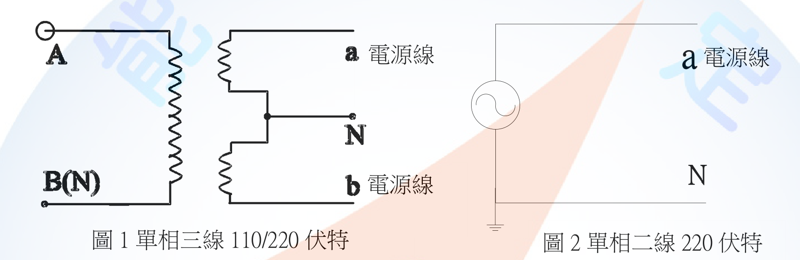
依《職業安全衛生設施規則》第243條規定，雇主為避免漏電而發生感電危害，應依下列3款狀況之一，於電動機具設備之連接電路上設置防止感電用漏電斷路器： 一、使用對地電壓在150伏特以上之移動式或攜帶式電動機具。 二、於含水或被其他導電度高之液體濕潤之潮濕場所、金屬板上或鋼架上等導電性良好場所使用移動式或攜帶式電動機具。 三、於建築或工程作業使用之臨時用電設備。
(一) 圖1單相三線110/220伏特供電，使用110伏特電鑽：此系統之中性線通常接地，電鑽所接相線對中性線（地）之電壓為110伏特，未達第一款「對地電壓150伏特以上」之門檻，故不因電壓本身即強制設置漏電斷路器。惟於下列場所環境仍應設置： 1. 於潮濕、含水、金屬板上或鋼架上等導電性良好場所使用該110伏特電鑽者（構成第二款要件）。 2. 於建築或工程作業（即營繕工程之臨時用電）使用該110伏特電鑽者（構成第三款要件）。 換言之，圖1情況下設置義務之構成要件在於「作業場所環境」而非電壓本身：只要具備潮濕導電場所，或屬建築工程臨時用電之一者，即應設置漏電斷路器。
(二) 圖2單相二線220伏特供電，使用220伏特電鑽：此系統無中性點接地之第三線，兩線間之220伏特全部呈現為對地電壓，已逾第一款所定「對地電壓150伏特以上」之門檻，故不論作業環境是否潮濕、是否為建築工程，凡使用對地電壓150伏特以上之移動式或攜帶式電動機具，其連接電路上即皆須設置防止感電用漏電斷路器，此為第一款要件之直接適用情形。 若該220伏特電鑽同時用於潮濕場所、金屬板或鋼架上，或屬建築工程臨時用電，仍分別構成第二、三款要件，惟因已符合第一款，設置義務已然成立，無待其他要件補強。
本題考漏電斷路器設置義務之3款構成要件，重點在於分辨「電壓門檻（對地電壓150伏特以上）」與「場所環境（潮濕導電場所／建築工程臨時用電）」是兩類彼此獨立、可分別成立之觸發條件；常見失分點是誤以為110伏特一律不須設置漏電斷路器（忽略第二、三款仍可能單獨適用），或未能指出220伏特單相二線系統對地電壓已達150伏特以上而應逕行適用第一款。
某營造工地進行構造物之拆除工作，請依營造安全衛生設施標準規定，試回答下列問題： (一) 雇主對於使用機具拆除構造物時，應依那6項規定辦理？(12分) (二) 雇主受環境限制，未能依上題所列規定設置作業區時，應於預定拆除構造物之外牆邊緣，設置符合那4項規定之承受臺？(8分)
(一) 雇主對於使用機具拆除構造物時，應依下列6項規定辦理： 一、使用動力系鏟斗機、推土機等拆除機具時，應配合構造物之結構、空間大小等特性妥慎選用機具。 二、使用重力錘時，應以撞擊點為中心，構造物高度1.5倍以上之距離為半徑設置作業區，除操作人員外，禁止無關人員進入。 三、使用夾斗或具曲臂之機具時，應設置作業區，其周圍應大於夾斗或曲臂之運行線8公尺以上，作業區內除操作人員外，禁止無關人員進入。 四、機具拆除，應在作業區內操作。 五、使用起重機具拆除鋼構造物時，其裝置及使用，應依起重機具有關規定辦理。 六、使用施工架時，應注意其穩定，並不得緊靠被拆除之構造物。
(二) 雇主受環境限制，未能依前款第二目、第三目規定設置作業區時，應於預定拆除構造物之外牆邊緣，設置符合下列4項規定之承受臺： 一、承受臺寬應在1.5公尺以上。 二、承受臺面應由外向內傾斜，且密舖板料。 三、承受臺應能承受每平方公尺600公斤以上之活載重。 四、承受臺應維持臺面距拆除層位之高度，不超過二層以上。但拆除層位距地面三層高度以下者，不在此限。
拆除工程屬逆向施工，風險特性與新建工程不同，其安全設計核心在於「以作業區隔離未參與人員」與「以承受臺攔阻拆除物飛落、掉落」雙重手段：前者針對機具運行範圍設置管制界線，後者則於受環境限制無法設置作業區之情形下作為替代性防護設施，兩者性質不同、不可互相取代。
本題考拆除機具作業區設置規定與承受臺構造規定之逐項記憶，常見失分點為將「重力錘」與「夾斗或曲臂機具」之作業區半徑／距離數值（構造物高度1.5倍 vs. 運行線外8公尺以上）互相混淆，或承受臺「不超過二層」高度限制漏答但書（拆除層位距地面三層以下者不在此限）。
某工廠設置機器人從事組裝及移動組件等作業，試依工業用機器人危害預防標準規定，回答下列問題： (一) 請說明下列用詞之定義：（每小題3分，共12分） 1. 工業用機器人。 2. 可動範圍。 3. 教導相關作業。 4. 協同作業空間。 (二) 雇主對機器人之配置，除「確保能安全實施作業之必要空間」外，請再列舉4項規定事項。（8分）
（本題所涉《工業用機器人危害預防標準》非本詳解法規語料庫目前收錄範圍，以下依職業安全衛生專業知識與該標準一般通用定義之精神作答，實際條文用語請以中央主管機關最新公告版本為準。）
(一) 用詞定義： 1. 工業用機器人：指具有可自動控制、可重複程式化，對三軸以上具有可程式動作性能，並可固定於某一位置或可移動，用於工業自動化生產應用之操作機。 2. 可動範圍：指工業用機器人各部位結構（含所安裝之末端效果器、夾治具等附屬裝置）依教導或設定之動作程式運轉時，所能到達之最大空間範圍。 3. 教導相關作業：指對工業用機器人實施操作程式之編寫、教導、變更，或於教導後、投入自動運轉前確認該動作程式（含以低速試運轉方式確認）之相關作業。 4. 協同作業空間：指工業用機器人與作業人員於製造或組裝過程中，經風險評估並採取適當安全設計（如限速、限力或感應停止）後，可同時進行協同作業之特定空間範圍。
(二) 雇主對機器人之配置，除「確保能安全實施作業之必要空間」外，另應辦理下列4項規定事項： 1. 機器人本體、配管、配線等之配置，不得妨礙作業人員之正常通行動線與操作視野。 2. 操作盤、操作用開關等之配置，應使操作人員能清楚辨識機器人之動作狀態，並可迅速操作緊急停止裝置。 3. 設置2台以上機器人共同作業，其可動範圍有相互重疊之虞者，應有防止各機器人間動作干涉致生危害之設施或管制措施。 4. 機器人因誤動作、失控或所夾持工具、工件飛落、彈出者，應有適當防護設施（如安全圍籬、護網、光柵）防止波及作業人員。
本題考工業用機器人專用術語定義之精確度，考生常混淆「可動範圍」（機械結構物理上能到達之空間）與「協同作業空間」（人機可同時作業之管理性空間）；機器人配置規定則常漏答「多台機器人動作干涉防止」一項，或誤將一般機械護圍規定套用於機器人本題。
某家營造廠承建一高度2公尺以上鋼構鐵皮板屋頂工廠新建工程，營造廠主管請職業安全衛生人員訂定墜落災害防止計畫，如果你是該職業安全衛生人員，請依營造安全衛生設施標準之規定回答下列問題： (一) 墜落災害防止計畫應依那些風險控制之先後順序規劃，並採取適當墜落災害防止設施？(請依先後順序列舉5項)(10分) (二) 針對易踏穿材料構築之屋頂作業，應指派屋頂作業主管於現場辦理那些事項？(請列舉5項)(10分)
(一) 依《營造安全衛生設施標準》第17條規定，雇主對於高度2公尺以上之工作場所，勞工作業有墜落之虞者，應訂定墜落災害防止計畫，並依下列風險控制先後順序規劃，採取適當墜落災害防止設施： 1. 經由設計或工法之選擇，儘量使勞工於地面完成作業，減少高處作業項目。 2. 經由施工程序之變更，優先施作永久構造物之上下設備或防墜設施。 3. 設置護欄、護蓋。 4. 張掛安全網。 5. 使勞工佩掛安全帶。 （原條文尚有「設置警示線系統」「限制作業人員進入管制區」等後續順序，惟依題意僅需依先後順序列舉前5項。）此順序本於「消除風險優於工程控制、工程控制優於個人防護具」之階層式管理原則，先考量能否於地面完成作業以徹底消除高處作業，其次為永久性防墜設備，再依序為護欄／護蓋等工程控制設施，最後始以安全帶等個人防護具作為防護。
(二) 依《營造安全衛生設施標準》第18條規定，於易踏穿材料構築屋頂作業時，雇主應指派屋頂作業主管於現場辦理下列5項事項： 1. 決定作業方法，指揮勞工作業。 2. 實施檢點，檢查材料、工具、器具等，並汰換其不良品。 3. 監督勞工確實使用個人防護具。 4. 確認安全衛生設備及措施之有效狀況。 5. 前二款（檢點汰換、確認設備有效）未確認前，應管制勞工或其他人員不得進入作業。 （法條原尚有「其他為維持作業勞工安全衛生所必要之設備及措施」之概括規定，惟依題意僅需列舉5項具體事項。）
本題考墜落災害防止計畫之階層式風險控制順序（消除→取代→工程控制→個人防護具之具體化條文），常見失分點為順序顛倒（如將「安全帶」排在「護欄」之前），或未緊扣題目要求之「先後順序」而僅條列未依序；屋頂作業主管辦理事項則易與擋土支撐作業主管、模板支撐作業主管等其他營造作業主管之通用職責混答。
請回答下列故障樹分析(fault tree analysis)之相關問題： (一) 若故障樹之基本事件為A、B、C、D，中間事件為E、F、G，頂端事件為H，若E=AB、F=BC、G=CD，頂端事件之布林代數為H=AB+BC+CD，請依上述條件，繪製故障樹圖。(10分) (二) 試求該故障樹之最小切集合。(5分) (三) 若上述各基本事件均為獨立事件，其或然率A為0.2、B為0.3、C為0.4、D為0.5，計算頂端事件H之或然率。(5分)
(一) 故障樹圖（因無法繪製圖形，以樹狀文字結構表示邏輯閘關係）：
頂端事件 H
└─ OR 閘
├─ 中間事件 E ── AND 閘：基本事件 A、基本事件 B
├─ 中間事件 F ── AND 閘：基本事件 B、基本事件 C
└─ 中間事件 G ── AND 閘：基本事件 C、基本事件 D
即頂端事件H由中間事件E、F、G經OR閘（或關係）連接而成；E由基本事件A、B經AND閘連接（E=AB）、F由B、C經AND閘連接（F=BC）、G由C、D經AND閘連接（G=CD），三者符合布林代數H=AB+BC+CD之邏輯結構。
(二) 最小切集合： H=AB+BC+CD已為布林代數之最簡形式，三個乘積項AB、BC、CD彼此互不為對方之子集合，亦無共同項可再提出化簡（吸收律不適用於此三項），故本故障樹之最小切集合共3組： {A,B}、{B,C}、{C,D} 意即：A與B同時發生，或B與C同時發生，或C與D同時發生，均足以導致頂端事件H發生；其中B同時存在於{A,B}與{B,C}兩組切集合、C同時存在於{B,C}與{C,D}兩組切集合，B、C可視為本系統中相對關鍵之基本事件。
(三) 頂端事件H之或然率計算： 已知H=AB+BC+CD，A=0.2、B=0.3、C=0.4、D=0.5，各基本事件為獨立事件。 依容斥原理（inclusion-exclusion principle）： P(H) = P(AB)+P(BC)+P(CD) − P(AB∩BC) − P(AB∩CD) − P(BC∩CD) + P(AB∩BC∩CD)
其中： P(AB) = A×B = 0.2×0.3 = 0.06 P(BC) = B×C = 0.3×0.4 = 0.12 P(CD) = C×D = 0.4×0.5 = 0.20 P(AB∩BC) = P(ABC) = A×B×C = 0.2×0.3×0.4 = 0.024 P(AB∩CD) = P(ABCD) = A×B×C×D = 0.2×0.3×0.4×0.5 = 0.012 P(BC∩CD) = P(BCD) = B×C×D = 0.3×0.4×0.5 = 0.06 P(AB∩BC∩CD) = P(ABCD) = 0.012
代入計算： P(H) = 0.06+0.12+0.20 − 0.024−0.012−0.06 + 0.012 = 0.38 − 0.096 + 0.012 = 0.296
驗算（以條件機率分解法交叉驗證）： - B=1,C=1（機率0.3×0.4=0.12）：BC恆成立，此部分機率全數計入H，貢獻0.12。 - B=1,C=0（機率0.3×0.6=0.18）：H化簡為A，貢獻0.18×0.2=0.036。 - B=0,C=1（機率0.7×0.4=0.28）：H化簡為D，貢獻0.28×0.5=0.14。 - B=0,C=0（機率0.7×0.6=0.42）：H恆為0，貢獻0。 合計＝0.12+0.036+0.14+0=0.296，與容斥原理結果一致，故P(H)=0.296。
本題考故障樹圖形邏輯閘（AND／OR）之正確轉譯、最小切集合之判斷（是否可再化簡）與或然率計算（獨立事件聯集機率之求法）；常見失分點為誤用「機率直接相加不扣除交集」之簡化算法（0.06+0.12+0.20=0.38），忽略B、C同時存在於相鄰兩集合中所造成的機率重疊，導致計算結果偏高而非正確值0.296。
⚠️ 本詳解為 AI 彙整之參考擬答，非官方標準答案；法規內容以最新公告版本為準。
某金屬加工廠設有衝剪機械，試依機械設備器具安全標準規定，回答下列問題： (一) 請說明下列用詞之定義：1.快速停止機構、2.緊急停止裝置。(每小題3分，共6分) (二) 雙手操作式安全裝置應符合之規定事項中，除「按鈕採用按鈕盒安裝者，該按鈕不得凸出按鈕盒表面」外，請再列舉4項規定事項。(12分) (三) 衝剪機械所設各種安全裝置中，那一種安全裝置的機能為滑塊等在閉合動作中，能使身體之一部無介入危險界限之虞？(2分)
(一) 用詞定義： 1. 快速停止機構：指衝剪機械檢出危險或異常時，能自動停止滑塊、刀具或撞錘（以下簡稱滑塊等）動作之機構。 2. 緊急停止裝置：指衝剪機械發生危險或異常時，以人為操作而使滑塊等動作緊急停止之裝置。
(二) 雙手操作式安全裝置除「按鈕採用按鈕盒安裝者，該按鈕不得凸出按鈕盒表面」外，應另符合下列4項規定（任列4項即符合題意）： 1. 具有安全一行程式安全裝置。但具有一行程一停止機構之衝剪機械，使用雙手起動式安全裝置者，不在此限。 2. 安全一行程式安全裝置在滑塊等閉合動作中，當手離開操作部，有達到危險界限之虞時，具有使滑塊等停止動作之構造。 3. 雙手起動式安全裝置在手指自離開該安全裝置之操作部時至該手抵達危險界限前，具有該滑塊等可達下死點之構造。 4. 以雙手操控作動滑塊等之操作部，具有其左右手之動作時間差非在0.5秒以內，滑塊等即無法動作之構造。 （另尚有「具有雙手未離開一行程操作部時，備有無法再起動操作之構造」「其一按鈕之外側與其他按鈕之外側，至少距離300毫米以上」及「按鈕內建於衝剪機械本體者，該按鈕不得凸出衝剪機械表面」等規定，任列4項均可。）
(三) 連鎖防護式安全裝置：其機能為滑塊等在閉合動作中，能使身體之一部無介入危險界限之虞。
本題考衝剪機械4類安全裝置（連鎖防護式、雙手操作式、感應式、拉開式／掃除式）機能之精確辨識，常見失分點為將「連鎖防護式」與「感應式」（滑塊在閉合動作中遇身體接近危險界限即停止）或「拉開式／掃除式」（使身體脫離危險界限）之機能敘述混淆；雙手操作式安全裝置之8款規定則易漏答「左右手動作時間差」與「一行程操作部未離手不得再起動」等構造要求，僅答按鈕距離、外觀等外顯規定。
如果你是某家營造廠之職業安全衛生管理人員，如營造廠承攬某一道路及露天開挖工程，請回答下列問題： (一) 對於使用道路作業之工作場所，為防止車輛突入等引起之危害，應依職業安全衛生設施規則那些規定辦理？(請列舉5項)(10分) (二) 使勞工於露天開挖工程中使用挖溝機進行道路旁露天開挖作業及載土卡車搬運土石，應依營造安全衛生設施標準那5項規定辦理？(10分)
(一) 依《職業安全衛生設施規則》第21-2條規定，雇主對於使用道路作業之工作場所，為防止車輛突入等引起之危害，應依下列規定辦理（原條文共7款，任列5項即符合題意）： 1. 從事公路施工作業，應依所在地直轄市、縣（市）政府審查同意之交通維持計畫或公路主管機關所核定圖說，設置交通管制設施。 2. 作業人員應戴有反光帶之安全帽，及穿著顏色鮮明有反光帶之施工背心，以利辨識。 3. 與作業無關之車輛禁止停入作業場所。但作業中必須使用之待用車輛，其駕駛常駐作業場所者，不在此限。 4. 使用道路作業之工作場所，應於車流方向後面設置車輛出入口；依周遭狀況設置有困難者，得於平行車流處設置車輛出入口，並置交通引導人員，使一般車輛優先通行。 5. 於勞工從事道路挖掘、施工、工程材料吊運作業、道路或路樹養護等作業時，應於適當處所設置交通安全防護設施或交通引導人員。
(二) 依《營造安全衛生設施標準》第69條規定，使勞工以機械（含挖溝機）從事露天開挖作業，並涉及卡車搬運土石者，應依下列5項規定辦理： 1. 使用之機械有損壞地下電線、電纜、危險或有害物管線、水管等地下埋設物，而有危害勞工之虞者，應妥為規劃該機械之施工方法。 2. 事前決定開挖機械、搬運機械等之運行路線及此等機械進出土石裝卸場所之方法，並告知勞工。 3. 於搬運機械作業或開挖作業時，應指派專人指揮，以防止機械翻覆或勞工自機械後側接近作業場所。 4. 嚴禁操作人員以外之勞工進入營建用機械之操作半徑範圍內。 5. 車輛機械應裝設倒車或旋轉之警示燈及蜂鳴器，以警示周遭其他工作人員。
道路作業與露天開挖作業之交叉風險在於「車流」與「營建機械運行」兩套動線同時存在於同一工地，前者藉由交通管制設施、反光防護具與交通引導人員管理外部車流，後者則藉由運行路線事前規劃、專人指揮與操作半徑管制降低機具本身對勞工之危害，兩者須同步落實方能有效防止車輛（含道路車輛與工程機械）突入引起之危害。
本題考道路作業（對外部車流之管制）與露天開挖機械作業（對工地內部機具之管制）兩套規定之區辨與熟記，常見失分點為將兩題規定互相張冠李戴作答，或漏答「地下埋設物損壞風險規劃」「操作半徑範圍管制」等易被忽略之項目。
依職業安全衛生設施規則規定，試回答下列問題： (一) 對於雇主為金屬之熔接、熔斷或加熱等作業所須使用可燃性氣體及氧氣之容器，為防止勞工發生相關危害，除保持容器溫度、護蓋外，請再列舉6項應辦理事項。(12分) (二) 如於通風或換氣不充分之工作場所，使用可燃性氣體及氧氣從事熔接、熔斷或金屬之加熱作業時，為防止該等氣體之洩漏或排出引起爆炸、火災，請列舉4項應辦理事項。(8分)
(一) 對於金屬之熔接、熔斷或加熱等作業所須使用可燃性氣體及氧氣之容器，除「保持容器之溫度於攝氏40度以下」與「搬運容器時應裝妥護蓋」外，應再依下列規定辦理（原條文共12款，任列6項即符合題意）： 1. 容器不得設置、使用、儲藏或放置於通風或換氣不充分之場所、使用煙火之場所或其附近，或製造、處置火藥類、爆炸性物質、著火性物質或多量易燃性物質之場所或其附近。 2. 容器應直立穩妥放置，防止傾倒危險，並不得撞擊。 3. 容器使用時，應留置專用板手於容器閥柄上，以備緊急時遮斷氣源。 4. 容器閥、接頭、調整器、配管口應清除油類及塵埃。 5. 應輕緩開閉容器閥，並應清楚分開使用中與非使用中之容器。 6. 容器、閥及管線等不得接觸電焊器、電路、電源、火源；搬運容器時，應禁止在地面滾動或撞擊，自車上卸下時應有防止衝擊之裝置。
(二) 於通風或換氣不充分之工作場所，使用可燃性氣體及氧氣從事熔接、熔斷或金屬之加熱作業時，為防止該等氣體洩漏或排出引起爆炸、火災，應依下列4項規定辦理： 1. 氣體軟管或吹管，應使用不因其損傷、摩擦導致漏氣者。 2. 氣體軟管或吹管相互連接處，應以軟管帶、軟管套及其他適當設備等固定確實套牢、連接。 3. 擬供氣於氣體軟管時，應事先確定在該軟管裝置之吹管在關閉狀態或將軟管確實止栓後，始得作業。 4. 作業中斷或完工離開作業場所時，氣體供氣口之閥或旋塞應予關閉後，將氣體軟管自氣體供氣口拆下，或將氣體軟管移放於自然通風、換氣良好之場所。
本題考容器保管規定（第190條，著重容器本身之放置、搬運與隔離）與通風不充分場所作業規定（第189條，著重軟管、吹管等供氣系統之洩漏防止）兩者之區辨，常見失分點為混淆兩條規定的適用情境，或將容器保管之12款事項與供氣系統之6款事項交錯作答。
請依起重升降機具安全規則規定，回答下列問題： (一) 起重機具之吊掛用鋼索安全係數定義為何？(4分) (二) 如起重機具之吊掛用鋼索，其斷裂荷重為10,000牛頓，現要吊起重5,000牛頓的物品，如果鋼索安全係數為6，請問至少要用多少條鋼索方可安全吊起？(請列出計算過程，4分) (三) 接續上題，如果安全係數提高為12，請問至少要用多少條鋼索方可安全吊起？(4分) (四) 請列舉4種鋼索發生異常情形時，不得供起重吊掛作業使用。(4分) (五) 移動式起重機於鬆軟的地面進行起重吊升作業時，請列舉3種防止發生翻倒危害之補強作法。(4分)
(一) 依《起重升降機具安全規則》第65條規定，雇主對於起重機具之吊掛用鋼索，其安全係數應在6以上；安全係數之定義為：鋼索之斷裂荷重值除以鋼索所受最大荷重值所得之值。即： 安全係數＝鋼索斷裂荷重／鋼索所受最大荷重
(二) 計算過程： 設需使用n條鋼索（均分負荷），每條鋼索斷裂荷重10,000牛頓，n條鋼索之總斷裂荷重＝10,000n牛頓，吊掛總荷重為5,000牛頓。 依安全係數定義：安全係數＝總斷裂荷重／所受荷重 ≥ 6 10,000n／5,000 ≥ 6 2n ≥ 6 n ≥ 3 故至少須使用3條鋼索方可安全吊起（驗算：3條鋼索總斷裂荷重30,000牛頓，安全係數＝30,000／5,000＝6，恰符合安全係數6之要求）。
(三) 計算過程： 安全係數提高為12時： 10,000n／5,000 ≥ 12 2n ≥ 12 n ≥ 6 故至少須使用6條鋼索方可安全吊起（驗算：6條鋼索總斷裂荷重60,000牛頓，安全係數＝60,000／5,000＝12，恰符合要求）。
(四) 依《起重升降機具安全規則》第68條規定，鋼索有下列情形之一者，不得供起重吊掛作業使用： 1. 鋼索一撚間有10%以上素線截斷者。 2. 直徑減少達公稱直徑7%以上者。 3. 有顯著變形或腐蝕者。 4. 已扭結者。
(五) 依《起重升降機具安全規則》第29條規定，移動式起重機於軟弱地盤等承載力不足之鬆軟地面從事起重吊升作業，為防止翻倒危害，應採取下列補強作法： 1. 於地面舖設具充分強度之鐵板。 2. 舖設墊料，增加接地面積、分散荷重。 3. 使用外伸撐座，並確認撐座已置放於鐵板或墊料之中央範圍。
本題考安全係數公式之正確套用（斷裂荷重／所受荷重）及依安全係數要求反推最少鋼索條數之計算能力，常見失分點為誤將單條鋼索斷裂荷重直接除以吊掛總荷重（未乘以條數n）即判定安全係數是否足夠；鋼索異常情形則常漏答「素線截斷10%」與「直徑減少7%」之精確門檻數值，僅籠統答「鋼索損壞」。
請依高壓氣體勞工安全規則之規定，回答與計算下列問題： (一) 請列出4項儲存設備(含儲存能力)應於其四周設置可防止液化氣體漏洩時流竄至他處之防液堤或其他同等設施。(8分) (二) 某一液化槽車容器之內容積為20立方公尺，灌裝比重為0.67(公斤/公升)之液氨5000公斤，計算該儲存容器之儲存能力為多少公斤(請列出計算過程，6分)？另此儲存容器需再灌裝多少公斤以上，才屬灌氣容器？(請列出計算過程，6分)
(一) 依《高壓氣體勞工安全規則》第37條規定，下列設備應於其四周設置可防止液化氣體漏洩時流竄至他處之防液堤或其他同等設施： 1. 儲存能力在1,000公噸以上之液化可燃性氣體儲槽。 2. 儲存能力在1,000公噸以上之液化氧氣儲槽。 3. 儲存能力在5公噸以上之液化毒性氣體儲槽。 4. 以毒性氣體為冷媒氣體之冷媒設備，其承液器內容積在10,000公升以上者。
(二) 儲存能力計算： 依《高壓氣體勞工安全規則》第18條規定，液化氣體儲存設備之儲存能力計算式為： W＝0.9×w×V2 （W：儲存能力，單位公斤；w：常用溫度時液化氣體之比重，單位每公升公斤數；V2：儲存設備內容積，單位公升）
代入數值：內容積20立方公尺＝20,000公升，比重w＝0.67公斤/公升 W＝0.9×0.67×20,000＝0.603×20,000＝12,060公斤
灌氣容器判定： 依《高壓氣體勞工安全規則》第8條規定，灌氣容器係指灌裝有高壓氣體之容器，而該氣體之質量在「灌裝時質量」（即前述儲存能力W）之1/2以上者。 灌氣容器門檻＝W／2＝12,060／2＝6,030公斤 現已灌裝5,000公斤，尚須再灌裝： 6,030－5,000＝1,030公斤以上，此容器所裝氣體質量方達灌裝時質量之1/2以上，始屬灌氣容器（若低於6,030公斤，依第9條規定應屬殘氣容器）。
本題考液化氣體儲存能力公式W＝0.9wV2之套用（須留意V2單位為公升，內容積若以立方公尺給定須先換算為公升）及灌氣容器／殘氣容器以「儲存能力之1/2」為分界之判定邏輯，常見失分點為單位換算錯誤（誤用立方公尺代入公式而未乘以1,000），或誤以為「灌氣容器」門檻即等於儲存能力全額，而非其半數。
⚠️ 本詳解為 AI 彙整之參考擬答，非官方標準答案；法規內容以最新公告版本為準。
根據勞工職業災害相關之統計分析，機械切割夾捲為目前受傷案比例最高之災害類型，為了防止切割夾捲災害，請回答下列問題： (一) 依職業安全衛生設施規則規定，對於具有捲入點危險之捲胴作業機械、磨床或龍門刨床之刨盤之衝程部分、電腦數值控制或其他自動化機械具有危險之部分…等機械部分，其作業有危害勞工之虞者，應設置護罩、護圍或具有連鎖性能之安全門等設備，其中「連鎖性能」(即安全連鎖Safety Interlock)，應具備那3項性能要點？(6分) (二) 一般常見之機械安全防護，除設置雙手操作式安全裝置外，請再列舉4項。(4分) (三) 有關(二)所述之雙手操作式安全裝置如運用於動力衝剪機械時，依機械設備器具安全標準規定，請列舉該裝置5項安全構造或性能。(10分)
(一) 安全連鎖（Safety Interlock）之核心設計原則，應具備下列3項性能要點： 1. 起動連鎖：防護裝置（護罩、護圍、安全門等）未確實閉合或定位前，機械之危險部分無法啟動運轉。 2. 運轉中連鎖：機械於運轉（危險動作）進行中，防護裝置無法被開啟或移除；若強制開啟，機械應能立即偵知並停止危險動作。 3. 失效安全（fail-safe）構造：連鎖裝置本身之元件（如極限開關、感測器）發生故障、斷線或失效時，機械應趨向安全狀態（無法起動或立即停止），不得因連鎖裝置本身失效而使機械仍可正常運轉，亦不得使連鎖功能可被輕易繞道、破壞。
(二) 除雙手操作式安全裝置外，常見之機械安全防護尚包括下列4項（任列4項即符合題意）： 1. 護罩、護圍（本體防護、安全護圍）：以物理性隔離方式，使身體之一部無法通過護圍或自外側觸及危險界限。 2. 感應式（光電式）安全裝置：以光電、雷射等感應方式偵測身體之一部接近危險界限，即使機械停止動作。 3. 拉開式或掃除式安全裝置：於滑塊等閉合動作中，遇身體之一部介入危險界限時，隨滑塊動作使其脫離危險界限。 4. 連鎖防護式安全裝置（安全門）：防護裝置未閉合前機械無法動作，閉合動作中防護裝置無法開啟。
(三) 依《機械設備器具安全標準》第10條規定，雙手操作式安全裝置運用於動力衝剪機械時，應具備下列安全構造或性能（任列5項即符合題意）： 1. 具有安全一行程式安全裝置。但具有一行程一停止機構之衝剪機械，使用雙手起動式安全裝置者，不在此限。 2. 安全一行程式安全裝置在滑塊等閉合動作中，當手離開操作部，有達到危險界限之虞時，具有使滑塊等停止動作之構造。 3. 雙手起動式安全裝置在手指自離開該安全裝置之操作部時至該手抵達危險界限前，具有該滑塊等可達下死點之構造。 4. 以雙手操控作動滑塊等之操作部，具有其左右手之動作時間差非在0.5秒以內，滑塊等無法動作之構造。 5. 具有雙手未離開一行程操作部時，備有無法再起動操作之構造。
本題考安全連鎖（Interlock）之工程設計原則、機械防護裝置之分類，以及雙手操作式安全裝置於動力衝剪機械之具體構造規定；常見失分點為將「連鎖性能」答成護罩、護圍等硬體防護物之名稱，而非其應具備之動作邏輯（起動連鎖、運轉中連鎖、失效安全）；雙手操作式安全裝置部分則易與第一題所詢之一般機械安全防護（護罩、感應式等）內容重複作答，未扣緊「運用於動力衝剪機械」之構造性能要求。
依營造安全衛生設施標準規定，試回答下列問題： (一) 雇主對於車輛機械，為避免於作業時發生該機械翻落或表土崩塌等情事，應事先進行調查那些事項？(8分) (二) 雇主對於新建、增建、改建或修建工廠之鋼構屋頂，勞工有遭受墜落危險之虞者，應依那些規定辦理？(4分) (三) 雇主使勞工鄰近溝渠、水道、埤池、水庫、河川、湖潭、港灣、堤堰、海岸或其他水域場所作業，致勞工有落水之虞者，應依那些規定辦理？(8分)
(一) 依《營造安全衛生設施標準》第8-1條規定，雇主對於車輛機械，為避免作業時發生機械翻落或表土崩塌等情事，應就下列事項事先進行調查： 1. 該作業場所之天候、地質及地形狀況等。 2. 所使用車輛機械之種類及性能。 3. 車輛機械之行經路線。 4. 車輛機械之作業方法。 依前項調查結果，有危害勞工之虞者，應整理工作場所；其中行經路線與作業方法2項事項，應於作業前告知勞工。
(二) 依《營造安全衛生設施標準》第18-1條規定，雇主對於新建、增建、改建或修建工廠之鋼構屋頂，勞工有遭受墜落危險之虞者，應依下列規定辦理： 1. 於邊緣及屋頂突出物頂板周圍，設置高度90公分以上之女兒牆或適當強度欄杆。 2. 於易踏穿材料構築之屋頂，應於屋頂頂面設置適當強度且寬度在30公分以上通道，並於屋頂採光範圍下方裝設堅固格柵。
(三) 依《營造安全衛生設施標準》第14條規定，雇主使勞工鄰近水域場所作業，致勞工有落水之虞者，應依下列規定辦理： 1. 設置防止勞工落水之設施，或使勞工著用救生衣。 2. 於作業場所或其附近設置救生設備：依水域危險性及勞工人數，備置足敷使用之動力救生船、救生艇、輕艇或救生筏（並配備救生圈、船鈎、救生衣及規格化之聚丙烯纖維繩索）；有湍流、潮流之情況，應預先架設延伸過水面之繩索並掛繫救生圈；並應設置可通知相關人員參與救援之警報系統或電訊連絡設備。但水深、水流及水域範圍等甚小，備置船筏有困難，且已使勞工著用救生衣、提供易於攀握之救生索、救生圈或救生浮具等足以防止溺水者，不在此限。
上開3項規定分屬營造工地不同高風險作業型態之防護要求：車輛機械之事先調查著重「地形地質＋機具特性＋行經路線＋作業方法」之綜合評估，鋼構屋頂規定聚焦於邊緣墜落與易踏穿材料踏穿墜落之雙重防護，水域作業則以「防止落水」與「落水後之救援設備」雙軌並行為核心。
本題考3類不同營造作業場景（車輛機械、鋼構屋頂、水域場所）之個別規定，常見失分點為車輛機械調查事項僅答出部分項目（漏答「作業方法」）、鋼構屋頂規定與一般屋頂作業規定（第18條，指派屋頂作業主管）混淆，以及水域場所救生設備規定僅籠統答「準備救生設備」而未列出但書排除情形（水域範圍甚小得以救生衣、救生索替代船筏）。
試回答下列人因工程問題： (一) 造成肌肉骨骼傷害的5大成因為何？(5分) (二) 下列圖A~圖D四種作業中，請辨識其造成人因工程危害之主要不良姿勢為何？(4分)（圖A油漆作業、圖B鑽孔作業、圖C電焊作業、圖D配料作業。原卷附4張作業照片，圖形本身無法轉錄，以下依各該作業類型之典型姿勢特徵合理推論作答，實際仍應以原圖所示姿勢為準） (三) 續前題，圖A~圖D四種作業，請簡述其人因工程改善方案？(8分)
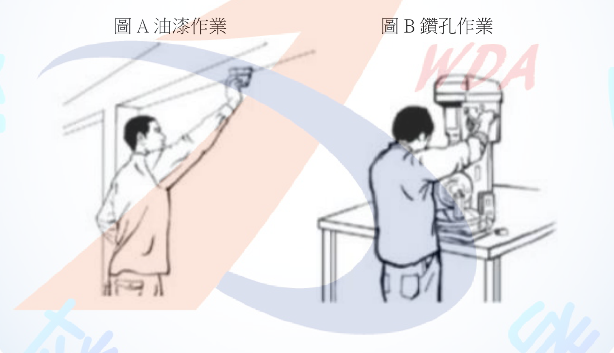
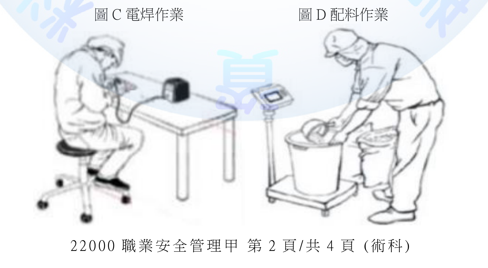
(四) 某勞工的作業是將放置在地面棧板上重15公斤的工作物，搬上100公分高的機台研磨，研磨後再搬回棧板。該勞工每天必須重複這個作業150次，總共重複300次彎腰抬舉。這是一個在作業現場相當常見、典型的作業，勞工長久這樣工作極易造成肌肉骨骼傷害。如您是職業安全（衛生）管理師，在不變更其搬運次數及重量下，試簡述提出一個簡易、可行之改善方案。(3分)
(一) 造成肌肉骨骼傷害之5大成因： 1. 重複性動作：同一動作反覆執行，肌肉、肌腱缺乏足夠恢復時間。 2. 不當（不良）作業姿勢：如彎腰、扭轉、過度伸展、長時間維持固定姿勢。 3. 過度施力：搬運、抓握或操作時施力超過肌肉負荷能力。 4. 振動：手臂或全身長期暴露於機具振動環境。 5. 壓迫與環境因素：局部身體部位長期受硬物壓迫接觸，或合併低溫等環境因素加劇肌肉緊繃。
(二) 各作業主要不良姿勢（依作業性質之典型特徵推論）： - 圖A油漆作業：上肢過度伸展、長時間高舉過肩（肩關節外展、頸部後仰）。 - 圖B鑽孔作業：手臂懸空無支撐、肩部長時間靜態負荷，並伴隨手部振動。 - 圖C電焊作業：蹲姿或半蹲姿、頸部前傾低頭、軀幹長時間彎曲固定。 - 圖D配料作業：彎腰、扭轉軀幹並負重搬運，屬典型不當抬舉姿勢。
(三) 各作業之人因工程改善方案： - 圖A油漆作業：提供可調整高度之作業平台或升降梯，避免長時間高舉過肩；改用加長桿工具，使作業維持在肩部以下之舒適高度範圍內。 - 圖B鑽孔作業：加裝工具平衡吊具或支撐架，減輕手臂懸空負荷；調整工作檯高度與角度，使手臂能有依靠支撐點。 - 圖C電焊作業：提供可調整高度之工作椅或站立式工作台，避免長時間蹲姿或彎腰；必要時改變工件擺放角度或高度，使銲接部位貼近視線與手部自然操作範圍。 - 圖D配料作業：改採機械輔助（如輸送帶、升降台車）取代人工彎腰搬運；將配料容器墊高或以斜面滑道設計，減少彎腰、扭轉次數。
(四) 在不變更搬運次數及重量之前提下，簡易可行之改善方案為：將地面棧板墊高（或改置於可調式升降台/滾輪台車上），使棧板面高度盡量貼近機台工作面（100公分）之高度，縮小垂直抬舉高度差，使勞工搬運時毋須深彎腰即可完成取放，藉以降低腰椎前彎角度與瞬間施力，減少每次彎腰抬舉對下背部造成之累積負荷。
本題考肌肉骨骼傷害成因之辨識及對應改善方案之提出能力，屬應用型考題而非單純法規背誦；常見失分點為(一)成因僅答出2-3項（漏答振動、壓迫等較不直覺之因子），(二)(三)未能扣緊各該作業之典型人因工程特徵作答，(四)則常誤答為「增加休息時間」或「更換人力」等變更搬運次數之方案，未緊扣題目「不變更搬運次數及重量」之限制條件，正確方向應著重於降低垂直抬舉高度差、提供機械輔助或改變工作站配置。
試回答下列問題： (一) 依職業安全衛生設施規則規定，低壓係指多少伏特(V)以下之電壓？(4分) (二) 當電氣迴路之電壓源100伏特，電流10安培(A)，則負載電阻為多少歐姆(Ω)？(4分) (三) 許多的電氣設備與共通的接地線相連接並與接地電極共用。如下圖所示，設備接地電阻為2歐姆，過電流斷路器之額定電流為125安培，C設備發生接地故障電流無法斷電。因各負載電氣設備共用同一機座，則A、B設備外殼帶電電壓a、b為多少伏特？(各4分)；短路電流c為多少安培?(4分) （原卷附接地電路示意圖，圖示A、B、C三設備共用同一接地電極與共同接地電阻2Ω，C設備發生接地故障、過電流斷路器額定電流125安培未跳脫。因原圖細部電路走線與各設備間之連接關係無法轉錄，以下依此類考題常見之典型電路配置條件，說明計算原理並列出對應之典型解，惟數值屬依常見參數之合理推估，實際應以原圖標示為準）
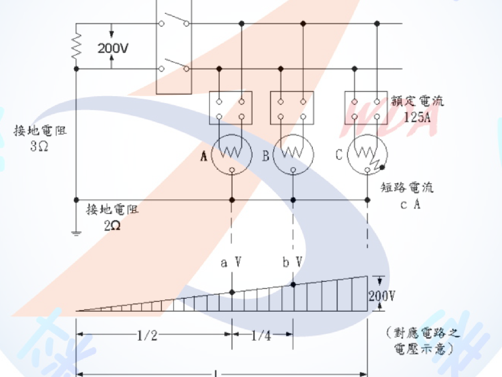
(一) 依《職業安全衛生設施規則》第3條規定，低壓係指600伏特以下之電壓（高壓為超過600伏特至22,800伏特；特高壓為超過22,800伏特）。
(二) 依歐姆定律 V＝I×R： R＝V／I＝100／10＝10歐姆(Ω)
(三) 計算原理： 依原卷附圖，本電路除A、B、C三設備共用之「設備接地電阻2Ω」外，變壓器（電源）側另設有一組「接地電阻3Ω」，兩接地電極於接地端彼此連通，構成同一共同接地系統；電源電壓為200V。
本題屬「共同接地系統故障電壓上升」之典型情境：當C設備發生接地故障（視為對外殼之零阻抗短路）時，故障電流之迴路為：電源（200V）→C設備內部故障點→C外殼→A、B、C共用之接地匯流排→設備接地電阻2Ω→大地→變壓器側接地電阻3Ω→返回電源，形成以200V為驅動電壓、由變壓器側3Ω與設備側2Ω串聯構成之單一故障迴路（迴路中其餘導線阻抗忽略不計）。
短路電流c： 依歐姆定律 I＝V／R： c＝200／(3＋2)＝200／5＝40安培(A) 因40安培小於過電流斷路器額定電流125安培，故斷路器不會跳脫，此即題示「C設備發生接地故障電流無法斷電」之原因，也是本題刻意設計3Ω＋2Ω兩組接地電阻、而非僅取斷路器額定電流做為故障電流之關鍵考點所在。
A、B設備外殼帶電電壓a、b： A、B、C三設備外殼透過同一共同接地匯流排相連而等電位；此接地匯流排相對大地之電位上升量＝故障電流c×設備接地電阻＝40×2＝80V。由於A、B外殼與C外殼同接於此一等電位之共同接地排，故非故障之A、B設備外殼亦被拉升至與C設備相同之電壓： a＝b＝c×R設備接地＝40×2＝80伏特(V) （即發生「非故障設備外殼亦因共用接地而帶電」之連鎖感電危害，此正是共同接地系統設計上之潛在風險，也是本題欲考核之安全觀念所在；原圖下方之電壓漸增示意圖，係以大地電位隨距接地電極遠近呈梯度分布之概念，輔助說明接地電位上升之物理意義，惟A、B、C三設備外殼因直接共用同一接地排，故三者電位仍視為相等。）
本題(一)(二)為基礎電學定義與歐姆定律計算，屬送分題型，常見失分點僅在於低壓門檻值背錯（易與高壓600伏特之下限混淆）；(三)為共同接地系統故障電壓上升之進階觀念題，核心考點有二：其一，須留意迴路中同時存在變壓器側3Ω與設備側2Ω兩組接地電阻（而非僅有設備接地電阻2Ω），故障電流須以200V除以「兩電阻之和5Ω」求得（c＝40A），若誤將斷路器額定電流125安培直接當作故障電流代入，將導致答案錯誤且無法解釋「電流未達額定何以不跳脫」；其二，須理解「共用同一接地電極之非故障設備外殼，會因故障電流流經共同接地電阻而同步帶電（a＝b＝40×2＝80V）」此一重要職業安全觀念，本身即為設計上應避免各設備共用同一過小接地電阻、或應加裝獨立漏電斷路器之理由。
正己烷(C6H14)與氧氣完全燃燒之完全燃燒反應式為mC6H14+nO2→pCO2+qH2O，上列反應式中m、n、p、q均為正整數。若正己烷10小時共消費86Kg，空氣相關條件為25°C、1大氣壓、氧氣濃度21%、每莫耳體積24.5公升，試回答下列問題： (一) 平衡上列完全燃燒反應式後，m、n、p、q之值為何（最簡單整數）？(4分) (二) 正己烷完全燃燒所須每小時之空氣流量為多少(m3/h)？(6分) (三) 若正己烷之爆炸下限為0.55倍理論混合比例值(LEL=0.55Cst)，正己烷之爆炸下限為多少？(5分) (四) 若正己烷之爆炸上限為7.5%，正己烷之危險度為何？(5分)
(一) 反應式配平： C6H14 + O2 → CO2 + H2O 以碳原子平衡：1莫耳C6H14含6個碳，需6莫耳CO2。 以氫原子平衡：1莫耳C6H14含14個氫，需7莫耳H2O。 以氧原子平衡：右式氧原子數＝6×2＋7×1＝19，故需19/2莫耳O2。 為使各係數均為最簡正整數，兩邊乘以2： 2C6H14 + 19O2 → 12CO2 + 14H2O 即 m＝2、n＝19、p＝12、q＝14。 驗算：左式C原子＝2×6＝12＝右式p＝12 ✓；左式H原子＝2×14＝28＝右式q×2＝14×2＝28 ✓；左式O原子＝2×19＝38＝右式2p＋q＝24＋14＝38 ✓，配平無誤。
(二) 空氣流量計算： 正己烷分子量＝6×12＋14×1＝72＋14＝86 g/mol。 10小時消耗86kg＝86,000g，故每小時消耗8,600g／86(g/mol)＝100 mol/hr。 依配平反應式，每2莫耳正己烷需19莫耳O2，故每莫耳正己烷需9.5莫耳O2。 每小時所需O2莫耳數＝100×9.5＝950 mol/hr。 O2體積＝950 mol × 24.5 L/mol＝23,275 L＝23.275 m³/hr。 因氧氣濃度佔空氣21%，故所需空氣流量： 空氣流量＝23.275／0.21≈110.83 m³/hr
(三) 爆炸下限計算： 理論混合比例值（化學計量濃度）Cst定義為：燃料莫耳數／（燃料莫耳數＋空氣莫耳數）×100%。 1莫耳正己烷完全燃燒理論需9.5莫耳O2，對應所需空氣＝9.5／0.21≈45.238莫耳。 混合氣總莫耳數＝1＋45.238＝46.238莫耳。 Cst＝1／46.238×100%≈2.163% 爆炸下限 LEL＝0.55×Cst＝0.55×2.163%≈1.19%
(四) 危險度計算： 危險度公式：H＝(UEL－LEL)／LEL 已知UEL（爆炸上限）＝7.5%，LEL（爆炸下限，由(三)所得）≈1.19%。 H＝(7.5－1.19)／1.19＝6.31／1.19≈5.30 （危險度為無因次比值，數值愈大表示該氣體之爆炸範圍相對其下限愈寬，危險性愈高。）
本題考燃燒反應式配平、空氣需求量計算（須留意氧氣佔空氣體積僅21%，須將O2體積換算為空氣體積）、化學計量濃度Cst之定義與爆炸下限、危險度之公式套用；常見失分點包括：反應式配平係數未化為最簡整數、計算空氣流量時忘記除以0.21（誤以O2體積直接當作空氣體積）、計算Cst時混淆「燃料莫耳數對空氣莫耳數之比」與「燃料莫耳數對混合氣總莫耳數之比」，以及危險度公式分子分母顛倒（誤算為LEL/(UEL-LEL)）。
⚠️ 本詳解為 AI 彙整之參考擬答，非官方標準答案；法規內容以最新公告版本為準。
(一) 依職業安全衛生設施規則及用戶用電設備裝置規則規定，對於使用之電氣設備之非帶電金屬部分應施行接地，接地種類為第三種接地者，其適用處所有那些？當對地電壓改變之第三種接地相對接地電阻大小有何規定？(10分) (二) 從用戶配電箱把設備接地線接到電動機插座，如下圖示意，包括有設備接地插孔、系統接地、系統兼設備接地、設備接地、中性線插孔、火線插孔等設置，其中、、、、正確名稱為何？(10分) 〔圖：用戶配電箱接地插座示意圖，原文圖形內容無法轉錄為文字，僅保留圖說文字〕
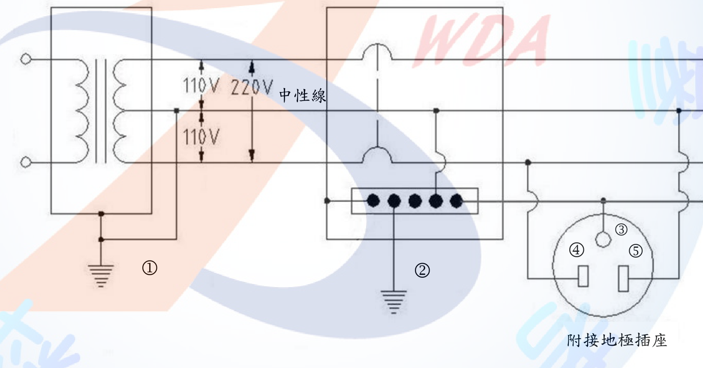
(一) 第三種接地之適用處所與接地電阻規定
第三種接地為用戶用電設備裝置規則所定接地種類之一，主要適用於一般低壓用電設備及計量設備之非帶電金屬部分接地，常見適用處所包括： 1. 高壓變比器（比壓器、比流器）之二次側接地。 2. 電度表用變比器（比壓器、比流器）之接地。 3. 隧道、礦坑等場所金屬導線管及電纜金屬被覆之接地。 4. 一般低壓用電設備（如對地電壓未達特高規定者）之非帶電金屬部分，於未採第一種、第二種或特種接地之場所，依規定施行第三種接地。
第三種接地之接地電阻值，依用戶用電設備裝置規則第92條規定，應符合附表九二所訂之接地電阻值；其原則為接地電阻值依用電設備對地電壓之高低分級訂定容許上限，對地電壓愈高者，容許之接地電阻值愈低，以確保故障電流能經接地路徑有效導入大地、降低接觸電壓對人體之危害。〔實際各電壓級距對應之精確歐姆數值，因原始附表數值未能自本機法規全文語料中完整取得，請以法規附表九二原文為準，不逕行引用未經查證之數字。〕
(二) 配電箱接地插座名稱
依用戶用電設備裝置規則第90條規定，接地及搭接之相關名詞定義如下： - 系統接地：內線系統接地（用戶用電線路屬於被接地導線之再行接地）或低壓電源系統接地（配電變壓器二次側低壓線或中性線之接地），目的在抑制雷擊、突波或異常電壓，並穩定正常運轉時之對地電壓。 - 設備接地：將用電設備或器具之非帶電金屬部分加以接地。 - 系統兼設備接地：內線系統接地與設備接地共用一條接地電極導線或同一接地電極。
對照圖示配電箱接線，附接地極插座之四個插孔由左至右（或依圖示位置）依序應為：中性線插孔、火線插孔、設備接地插孔（連接設備接地）；而配電箱內部引至插座接地極之接地系統，依其功能分別對應系統接地、系統兼設備接地、設備接地三種接地方式之匯接點。因原圖形之具體標號位置無法由文字檔忠實還原，作答時應依實際考場圖示位置，將「設備接地插孔」「系統接地」「系統兼設備接地」「設備接地」「中性線插孔」「火線插孔」六個名詞，依其於配電箱至插座之電路歸屬正確填入。
本題考核接地種類（特種、第一種、第二種、第三種）之適用場所辨識能力，以及配電箱接地系統各節點名詞之正確理解。常見失分點為將第三種接地之適用處所與第一種、第二種接地（多用於高壓設備外殼、避雷器等）混淆，以及對「系統接地」「設備接地」「系統兼設備接地」三者定義區辨不清；作答時應扣緊「非帶電金屬部分接地＝設備接地、抑制異常電壓之接地＝系統接地」之基本邏輯。
某營造工地因工作需求，須使勞工於高處作業，雇主應設置安全衛生設備及措施，依營造安全衛生設施標準，試回答下列問題： (一) 安全母索其最小斷裂強度應在多少公斤以上？(2分) (二) 安全帶或安全母索繫固之錨錠，至少應能承受每人多少公斤之拉力？(2分) (三) 水平安全母索之設置高度應大於多少公尺？(2分) (四) 當垂直淨空高度為5公尺，水平安全母索之設置相鄰二錨錠點間之最大間距為多少公尺？(2分) (五) 垂直安全母索之下端應有什麼設施？(2分) (六) 勞工作業或爬昇位置之水平間距在多少公尺以下，得二人共用一條垂直安全母索？(2分) (七) 除鋼構組配作業得依相關規定辦理外，工作面至安全網架設平面之攔截高度，不得超過多少公尺？(2分) (八) 除結構物外緣牆面設置垂直式安全網者，使用於結構物四周之安全網時，攔截高度超過三公尺者，至少應延伸多少公尺？(2分) (九) 雇主應規定勞工遵守那些事項？(4分)
(一) 安全母索得由鋼索、尼龍繩索或合成纖維之材質構成，其最小斷裂強度應在2,300公斤以上。
(二) 安全帶或安全母索繫固之錨錠，至少應能承受每人2,300公斤之拉力。
(三) 水平安全母索之設置高度應大於3.8公尺。
(四) 相鄰二錨錠點間之最大間距依公式 L＝4（H－3）計算，H≧3.8，且L≦10（單位：公尺）。當垂直淨空高度H＝5公尺時： L＝4×（5－3）＝4×2＝8公尺。
(五) 垂直安全母索之下端應有防止安全帶鎖扣自尾端脫落之設施。
(六) 每條垂直安全母索應僅提供一名勞工使用，但勞工作業或爬昇位置之水平間距在1公尺以下者，得二人共用一條垂直安全母索。
(七) 工作面至安全網架設平面之攔截高度，不得超過7公尺（鋼構組配作業得依第151條另定規定辦理）。
(八) 使用於結構物四周之安全網，依攔截高度分級延伸適當距離：攔截高度1.5公尺以下者延伸2.5公尺，超過1.5公尺且在3公尺以下者延伸3公尺，攔截高度超過3公尺者，至少應延伸4公尺。
(九) 依營造安全衛生設施標準規定，雇主應規定勞工遵守下列事項，以維護本標準所定應設置之安全衛生設備： 1. 不得任意拆卸或使其失效，以保持其應有效能。 2. 發現安全衛生設備被拆卸或失效時，應即停止作業，並應報告雇主或直屬主管人員，經補修回復原狀後始得繼續作業。
本題屬純法規數值背誦題，考點集中於營造安全衛生設施標準第22、23條之高處作業防墜具體數值。作答時務必留意單位（公斤／公尺）與條件式（L＝4（H－3）之上下限），計算間距時勿忘檢核 L≦10 之上限規定；第(九)小題常被考生忽略，應扣緊「不得任意拆卸失效」與「發現異常應報告並停工」兩項核心義務作答，避免答非所問或漏答。
請依危險性工作場所審查及檢查辦法規定，回答下列問題： (一) 有一營造廠承造建築物高度在100公尺之建築工程，須向檢查機構申請丁類工作場所審查合格方得使勞工在該場所作業，其送審資料除申請書外，需檢附那些人員之簽章文件？(3分) (二) 承上題之營造工程，事業單位於事前對其製訂之施工計畫書實施安全評估，其工程概要、職業安全衛生管理計畫及分項工程計畫內容為何？(14分) (三) 勞工如於地下室使用含甲苯成分之環氧樹酯從事地坪塗敷作業，其施工安全評估報告書中特有災害相對應之職業安全衛生計畫應具內容為何，請簡述之。(3分)
(一) 丁類工作場所送審應檢附之簽章文件
依危險性工作場所審查及檢查辦法第17條規定，事業單位向檢查機構申請審查丁類工作場所，應填具申請書，並檢附施工安全評估人員及其所僱之專任工程人員、相關執業技師或開業建築師之簽章文件，及施工計畫書、施工安全評估報告書各三份。前述專任工程人員、相關執業技師或開業建築師之簽章，以職業安全衛生設施涉及專業技術部分之事項為限。
(二) 施工計畫書之工程概要、職業安全衛生管理計畫、分項工程計畫內容
施工計畫書之內容格式，依同辦法第17條規定應依附件十四辦理，其主要內容架構如下： 1. 工程概要：說明工程名稱、地點、範圍、規模、工期、發包方式、施工順序、主要施工方法及工地環境（含鄰近建築物、地下管線、地質、氣候等）概況，作為後續分項工程施工方法與危害評估之基礎。 2. 職業安全衛生管理計畫：包括工地組織及權責劃分（含承攬管理、工地負責人、專責及專任工程人員配置）、安全衛生教育訓練、自動檢查計畫、協議組織運作、緊急應變體系、職業災害通報及個人防護具管理等，用以落實整體工地職業安全衛生管理制度。 3. 分項工程計畫：針對開挖、擋土支撐、施工架、模板支撐、鋼構組配、高處作業等各項具危險性之分項工程，分別說明其施工方法、順序、機具設備、人員配置，並就各分項工程可能之危害擬定對應之安全衛生設施與防護對策。
(三) 特有災害相對應之職業安全衛生計畫
依題示作業於地下室（局限空間）從事含甲苯成分環氧樹脂地坪塗敷（有機溶劑作業），其特有災害應包含「缺氧、中毒」及「火災、爆炸」二大類，施工安全評估報告書中對應之職業安全衛生計畫應具備下列內容： 1. 局限空間作業危害防止計畫：含作業前氧氣及甲苯濃度測定、通風換氣（設置換氣裝置維持充分新鮮空氣）、進入許可簽署及監視人員配置等。 2. 有機溶劑作業之防護措施：指定有機溶劑作業主管、勞工佩戴適當呼吸防護具、實施特殊健康檢查、作業環境監測及標示注意事項。 3. 防火防爆對策：因甲苯屬易燃性有機溶劑，作業區域應嚴禁煙火、使用防爆型電氣設備、備置滅火器材。
本題屬危險性工作場所審查制度之綜合題型，(一)、(二)考核對丁類工作場所（高度100公尺以上建築物屬營造法規所定丁類工作場所之一）送審程序及施工計畫書格式架構之熟悉度；(三)則考核局限空間＋有機溶劑複合危害之特有災害辨識能力，答題時應扣緊「缺氧、中毒、火災爆炸」三大危害類型，並分別對應具體防護對策，避免僅泛泛而談一般職業安全衛生管理事項。
針對移動式起重機作業，依起重升降機具安全規則規定，試回答下列問題： (一) 為防止起重機過負荷傾倒翻覆，使用具有外伸撐座之移動式起重機，或擴寬式履帶起重機作業時，應將其外伸撐座或履帶伸至最大極限位置。但因作業場所狹窄或有障礙物等限制，致其外伸撐座或履帶無法伸至最大極限位置時，如能確認其吊掛之荷重較作業半徑所對應之額定荷重為輕者，在那三種狀況之一時，不在此限？(9分) (二) 下圖為移動式起重機以搭乘設備乘載或吊升勞工作業，如果搭乘設備自重400公斤、所能承載之最大荷重為200公斤，搭乘設備係使用4條相同材質及規格尺寸之懸吊用鋼索進行吊掛，考量規定之安全係數，試問每條懸吊用鋼索應至少可承受多少公斤？(6分，未列計算式不給分，鋼索與搭乘設備之水平夾角θ為45°，提示：sin45°＝0.707，計算結果取整數值) (三) 承上題，如果搭乘設備自重400公斤、搭乘者體重100公斤、積載物50公斤，該起重機作業半徑所對應之額定荷重應至少為多少公斤？方符合規定。(5分，不考慮其他環境或操作造成之荷重，另未列計算式不給分)
(一) 外伸撐座或履帶無法伸至最大極限位置之三種例外狀況
依起重升降機具安全規則第32條規定，具有下列各款情形之一，且能確認其吊掛之荷重較作業半徑所對應之額定荷重為輕者，得不受應伸至最大極限位置之限制： 1. 過負荷預防裝置具有因應外伸撐座之外伸寬度，自動降低設定額定荷重之機能者。 2. 過負荷預防裝置具有可輸入外伸撐座之外伸寬度演算要素，以降低設定額定荷重狀態之機能者。 3. 移動式起重機之明細表或使用說明書等已明確記載外伸撐座無法最大外伸時，具有額定荷重表或性能曲線表提供外伸撐座未全伸時之對應外伸寬度之較低額定荷重者。
(二) 懸吊用鋼索每條至少應承受之荷重計算
搭乘設備總荷重＝自重400公斤＋最大承載荷重200公斤＝600公斤。 由4條鋼索均分垂直荷重，故每條鋼索所受垂直分力： 600 ÷ 4 ＝150公斤
鋼索與水平夾角θ＝45°，鋼索實際張力T與垂直分力關係為：T×sinθ＝垂直分力，故 T＝150 ÷ sin45° ＝150 ÷ 0.707 ≒212.16公斤
依起重升降機具安全規則第36條規定，搭乘設備之懸吊用鋼索安全係數應在10以上，故每條鋼索應具備之最小容許荷重（斷裂荷重）為： 212.16 × 10 ≒2,122公斤（取整數值）
即每條懸吊用鋼索應至少可承受約2,122公斤，方符合安全係數10倍以上之規定。
(三) 額定荷重計算
依題意，僅計入搭乘設備自重、搭乘者體重及積載物重量，不考慮其他環境或操作荷重： 額定荷重≧400公斤（自重）＋100公斤（體重）＋50公斤（積載物）＝550公斤
即該起重機作業半徑所對應之額定荷重應至少為550公斤，方符合規定。
(一)為條文列舉題，須完整列出三款且不可混淆一般吊掛鋼索安全係數（6以上，第65條）與搭乘設備懸吊鋼索安全係數（10以上，第36條）之差異，此為(二)計算能否得分之關鍵；(二)、(三)為力學與法規結合之計算題，常見失分點為忘記將荷重除以夾角正弦值換算實際鋼索張力，或誤用一般吊掛鋼索安全係數6倍計算，兩者皆屬涉及「載人」之搭乘設備，安全係數應提高至10倍以上。
某壓縮氣體遵循理想氣體狀態方程式，且該設備之運轉溫度為零下30℃，若該壓縮氣體（非為乙炔氣體）之表壓力為8.5 kg/cm²，請回答下列相關問題： (一) 判斷該壓縮氣體是否屬高壓氣體勞工安全規則所稱之高壓氣體？請列出計算結果並簡要說明判斷依據。(10分) (二) 為防止該壓縮氣體發生洩漏而發生火災爆炸危害，試列舉5種可應用於儲存該壓縮氣體容器之安全裝置及其作用方式，以降低其爆炸危害。(10分)
(一) 高壓氣體判定
依高壓氣體勞工安全規則第2條規定，非乙炔氣之壓縮氣體，凡於常用溫度下表壓力達每平方公分10公斤以上，或於溫度攝氏35度時之壓力可達每平方公分10公斤以上者，即屬本規則所稱之高壓氣體。本題常用溫度（運轉溫度）為攝氏零下30度，表壓力未達10 kg/cm²，故須依理想氣體狀態方程式，推算換算至攝氏35度時之壓力是否達每平方公分10公斤以上。
設題示狀態為狀態1： - 絕對溫度 T₁＝－30＋273＝243K - 絕對壓力 P₁＝表壓力＋大氣壓＝8.5＋1.033＝9.533 kgf/cm²(abs)
換算至攝氏35度（狀態2）： - 絕對溫度 T₂＝35＋273＝308K
依理想氣體狀態方程式（定容過程）P₁/T₁＝P₂/T₂： P₂＝P₁×（T₂／T₁）＝9.533×（308／243）＝9.533×1.2675≒12.08 kgf/cm²(abs)
換算為表壓力： P₂（表壓）＝12.08－1.033≒11.05 kg/cm²
由於11.05 kg/cm²已超過每平方公分10公斤之判定門檻，故該壓縮氣體於溫度攝氏35度時之壓力已達每平方公分10公斤以上，依高壓氣體勞工安全規則第2條規定，屬於該規則所稱之高壓氣體。
(二) 儲存容器可應用之安全裝置（列舉5種）
本題(一)為理想氣體狀態方程式應用計算題，考點在於「常用溫度下之壓力未達門檻時，仍須換算至35℃判斷」之判定邏輯，考生常忽略換算步驟，逕以現況表壓力8.5 kg/cm²誤判為非高壓氣體，此為本題最大陷阱；另計算時務必以絕對壓力（表壓＋大氣壓）代入方程式，計算完畢後再換算回表壓力比較門檻值。(二)列舉安全裝置時，應扣緊「降低爆炸危害」之作用機制說明，不可僅羅列裝置名稱而未說明其作用方式。
⚠️ 本詳解為 AI 彙整之參考擬答，非官方標準答案；法規內容以最新公告版本為準。
有鑑於近來發生多起營造工程拆除作業事故，某一營造廠承攬某一廢棄磚窯工廠之拆除及新建工程，依據營造安全衛生設施標準的規定，請回答下列問題： (一) 於拆除結構物之牆、柱或其他類似構造物時，應依那些規定辦理？(請列舉4項，8分) (二) 於拆除高煙囪時，應依那些規定辦理？(請列舉4項，8分) (三) 如果新建之工廠廠房為鋼構建築，對於鋼構屋頂，勞工有遭受墜落危險之虞者，應依那二項規定辦理？(4分)
(一) 拆除牆、柱或其他類似構造物（列舉4項）
依營造安全衛生設施標準第161條規定，雇主於拆除結構物之牆、柱或其他類似構造物時，應依下列規定辦理（任列4項）： 1. 自上至下，逐次拆除。 2. 拆除無支撐之牆、柱或其他類似構造物時，應以適當支撐或控制，避免其任意倒塌。 3. 以拉倒方式進行拆除時，應使勞工站立於作業區外，並防範破片之飛擊。 4. 無法設置作業區時，應設置承受臺、施工架或採取適當防範措施。 5.（備選）以人工方式切割牆、柱或其他類似構造物時，應採取防止粉塵之適當措施。
(二) 拆除高煙囪（列舉4項）
依營造安全衛生設施標準第164條規定，雇主對於高煙囪、高塔等之拆除，應依下列規定辦理（任列4項）： 1. 指派專人負責監督施工。 2. 不得以爆破或整體翻倒方式拆除高煙囪。但四週有足夠地面，煙囪能安全倒置者，不在此限。 3. 以人工拆除高煙囪時，應設置適當之施工架，該施工架並應隨拆除工作之進行隨時改變其高度，不得使工作臺高出煙囪頂25公分及低於1.5公尺。 4. 不得使勞工站立於煙囪壁頂。 5.（備選）拆除物料自煙囪內卸落時，煙囪底部應有適當開孔，以防物料過度積集。 6.（備選）不得於上方拆除作業中，搬運拆下之物料。
(三) 鋼構屋頂墜落危險防護（二項）
依營造安全衛生設施標準第18-1條規定，雇主對於新建、增建、改建或修建工廠之鋼構屋頂，勞工有遭受墜落危險之虞者，應依下列規定辦理： 1. 於邊緣及屋頂突出物頂板周圍，設置高度90公分以上之女兒牆或適當強度欄杆。 2. 於易踏穿材料構築之屋頂，應於屋頂頂面設置適當強度且寬度在30公分以上通道，並於屋頂採光範圍下方裝設堅固格柵。
本題屬營造安全衛生設施標準第十一章「構造物之拆除」及第二章「工作場所」之綜合列舉題，考點在於區辨不同拆除對象（牆柱類 vs. 高煙囪類）之個別規定，避免混寫；第(三)小題鋼構屋頂為新建、增建、改建、修建工廠之特別規定（第18-1條），與一般屋頂作業（第18條）不同，作答時應扣緊「女兒牆／欄杆」與「易踏穿材料通道及格柵」兩項核心設施。
請依職業安全衛生設施規則規定，回答下列有關局限空間作業安全問題。 (一) 何謂局限空間。(3分) (二) 雇主使勞工於有危害勞工之虞之局限空間從事作業時，應依作業可能引起之危害，訂定危害防止計畫。請列舉6項局限空間作業危害防止計畫應訂定事項。(6分) (三) 承上題，勞工進入許可應由那些人簽署後，始得使勞工進入局限空間作業？(3分) (四) 續前題，請列舉6項局限空間進入許可應載明事項。(6分) (五) 雇主使勞工從事局限空間作業，有致其缺氧或中毒之虞者，如作業區域超出監視人員目視範圍時，雇主應採取那些措施？(2分)
(一) 局限空間之定義
依職業安全衛生設施規則第19-1條規定，局限空間指非供勞工在其內部從事經常性作業，勞工進出方法受限制，且無法以自然通風來維持充分、清淨空氣之空間。
(二) 局限空間作業危害防止計畫應訂定事項（列舉6項）
依同規則第29-1條規定，雇主使勞工於局限空間從事作業前，應先確認有無缺氧、中毒、感電、塌陷、被夾、被捲及火災、爆炸等危害，有危害之虞者，應依作業可能引起之危害訂定下列事項（任列6項）： 1. 局限空間內危害之確認。 2. 局限空間內氧氣、危險物、有害物濃度之測定。 3. 通風換氣實施方式。 4. 電能、高溫、低溫與危害物質之隔離措施及缺氧、中毒、感電、塌陷、被夾、被捲等危害防止措施。 5. 作業方法及安全管制作法。 6. 進入作業許可程序。 7.（備選）提供之測定儀器、通風換氣、防護與救援設備之檢點及維護方法。 8.（備選）作業控制設施及作業安全檢點方法。 9.（備選）緊急應變處置措施。
(三) 進入許可簽署人員
依同規則第29-6條規定，雇主使勞工於有危害勞工之虞之局限空間從事作業時，其進入許可應由雇主、工作場所負責人或現場作業主管簽署後，始得使勞工進入作業。
(四) 局限空間進入許可應載明事項（列舉6項）
依同規則第29-6條規定，進入許可應載明下列事項（任列6項）： 1. 作業場所。 2. 作業種類。 3. 作業時間及期限。 4. 作業場所氧氣、危害物質濃度測定結果及測定人員簽名。 5. 作業場所可能之危害。 6. 作業場所之能源或危害隔離措施。 7.（備選）作業人員與外部連繫之設備及方法。 8.（備選）準備之防護設備、救援設備及使用方法。 9.（備選）其他維護作業人員之安全措施。 10.（備選）許可進入之人員及其簽名。 11.（備選）現場監視人員及其簽名。
(五) 監視人員目視範圍以外之措施
依同規則第29-7條規定，雇主使勞工從事局限空間作業，有致其缺氧或中毒之虞者，作業區域超出監視人員目視範圍者，應使勞工佩戴符合國家標準CNS 14253-1同等以上規定之全身背負式安全帶及可偵測人員活動情形之裝置。
本題為職業安全衛生設施規則第19-1條、第29-1條至第29-7條局限空間專節之整合題型，屬歷屆常考重點，應熟記各條列舉事項之數量與內容，並注意第(三)、(四)小題之「進入許可」與第(二)小題之「危害防止計畫」為不同層級之文件，內容不可互相混用；第(五)小題常與「動火許可」（第29-6條第3項）混淆，需特別區辨監視人員目視範圍外之情境為佩戴全身背負式安全帶及活動監測裝置。
有一工廠僱用勞工請其更換廠房屋頂（約3公尺高）之鐵皮板，不慎踏穿採光罩墜落至地面受傷，送醫住院治療20日後回廠上班，其最近1個月之月領工資為新臺幣3萬6仟元（含加班費6仟元），請回答下列問題： (一) 依職業安全衛生法規定，工作場所發生職業災害，事業單位有那些義務與限制？(6分) (二) 承上，發生職業災害雇主應即採取必要之急救、搶救等措施，其措施尚須包含那些事項？(4分) (三) 依勞動檢查法規定，請列舉4項勞工有立即發生墜落危險之虞之情事。(8分) (四) 依勞動基準法規定，該名受傷勞工之補償除醫療費用外，在醫療中不能工作應給與多少金額（新臺幣）之補償。(2分)
(一) 事業單位之義務與限制
依職業安全衛生法第37條規定，事業單位工作場所發生職業災害，雇主應： 1. 即採取必要之急救、搶救等措施，並會同勞工代表實施調查、分析及作成紀錄（義務）。 2. 發生死亡災害、罹災人數3人以上、或罹災人數1人以上且需住院治療等法定情形之一者，應於8小時內通報勞動檢查機構（義務）。本案勞工住院治療20日，符合「罹災人數1人以上且需住院治療」之通報門檻。 3. 除必要之急救、搶救外，雇主非經司法機關或勞動檢查機構許可，不得移動或破壞現場（限制）。
(二) 急救、搶救措施應包含事項
依職業安全衛生法施行細則第46-1條規定，雇主應即採取之必要急救、搶救等措施，包括下列事項： 1. 使有立即發生危險之虞之工作者，退避至安全場所。 2. 對發生職業災害之工作場所進行人員清點，及管制現場，禁止其他工作者進入。 3. 提供緊急應變作業人員必要之個人防護具與設備，並規劃緊急撤離機制。 4. 其他為確保工作場所所有工作者安全之必要緊急應變措施。
(三) 勞工有立即發生墜落危險之虞之情事（列舉4項）
依勞動檢查法第28條規定，勞動檢查機構於實施安全衛生檢查時，發現勞工有立即發生危險之虞者，得通知事業單位先行部分或全部停工；其立即發生危險之虞情事之具體認定基準，由中央主管機關另行公告訂定。依實務常見情形，屬於「墜落」類立即發生危險之虞情事者，包括（依現行公告之認定標準精神，任列4項）： 1. 於高度2公尺以上工作場所邊緣、開口部分作業，未設置護欄、護蓋、安全網等防墜設施，且未使勞工使用安全帶等防止墜落之替代措施者。 2. 於高度2公尺以上使用施工架從事作業，未設置符合規定之工作臺，或工作臺未採取防止倾斜、脫落措施者。 3. 於易踏穿材料（如採光罩、石綿板等）構築之屋頂作業，未設置踏板、堅固格柵或安全網等防止踏穿墜落設施者（與本案案情相符）。 4. 於開挖作業之邊坡、擋土支撐作業場所未採取適當安全防護設施，致勞工有墜落之虞者。
〔本題所引之具體項目屬中央主管機關另行公告之「勞工有立即發生危險之虞認定標準」內容，該公告非屬本次法規全文語料庫收錄範圍，上列各項係依領域專業知識及本案情境整理之常見情形，正式作答請以最新公告條文為準。〕
(四) 醫療中不能工作之補償金額計算
依勞動基準法第59條第2款規定，勞工在醫療中不能工作時，雇主應按其原領工資數額予以補償；依勞動基準法施行細則第31條規定，所稱原領工資，指該勞工遭遇職業災害前一日正常工作時間所得之工資，其為計月者，以遭遇職業災害前最近一個月正常工作時間所得之工資除以30，計得一日之工資。
本案月領工資3萬6仟元中，加班費6仟元非屬「正常工作時間所得之工資」，應予扣除： 正常工時月工資＝36,000－6,000＝30,000元 原領工資（日額）＝30,000÷30＝1,000元／日
住院治療計20日不能工作，補償金額： 1,000元 × 20日 ＝新臺幣20,000元
本題為職業災害案例整合題，橫跨職業安全衛生法、勞動檢查法及勞動基準法三部法規。(四)為計算題核心陷阱在於「原領工資」不含加班費（僅計正常工時工資），考生若未扣除加班費6,000元逕以36,000元計算，將產生錯誤結果（1,200元/日×20日=24,000元），應特別留意題目刻意標示「含加班費6仟元」之提示用意；(三)因涉及未收錄於本機語料庫之行政公告內容，作答時仍應掌握「墜落類危險情事」之判斷邏輯（未設護欄護蓋安全網、未使用安全帶、易踏穿材料未防護等），並誠實標註參考來源之限制。
111年4月1日某水泥公司高塔拆除工程，承包商擅自變更工法致水泥高塔倒向非預期方向，並壓毀電塔，造成雙鐵停駛事故。 (一) 依營造安全衛生設施標準規定，雇主使勞工於營造工程工作場所作業前，為防止職業災害之發生，應指派所僱之那些專業人員，實施危害調查、評估，並採適當防護設施。(6分) (二) 前述高塔拆除工程，承包商變更施工方法應實施變更管理，就各該變更部分，施工方法順序、主要機具設備、安全衛生設施等變更狀況（含因應現地情況差異之變更），實施變更施工風險評估，據以修正施工計畫。變更施工風險評估，應就變更施工計畫進行作業拆解，逐一辨識潛在危害、分析可能出現之風險情境，評估現有措施之防護效果，以評量其風險。對不可接受之風險，擬定風險對策，據以修正變更施工計畫之內容，並應採行那些因應措施（請列出7種）。(14分)
(一) 應指派之專業人員
依營造安全衛生設施標準第6條規定，雇主使勞工於營造工程工作場所作業前，應指派所僱之職業安全衛生人員、工作場所負責人或專任工程人員等專業人員，實施危害調查、評估，並採適當防護設施，以防止職業災害之發生；依營建法規等規定應有施工計畫者，均應將前項防護設施列入施工計畫執行。
(二) 變更施工風險評估後應採行之因應措施（列舉7種）
變更施工風險評估完成危害辨識、風險評量後，對不可接受之風險，應就修正後之變更施工計畫內容，採行下列因應措施（依風險管理與營造工程實務常見作法，任列7種）： 1. 修正變更施工計畫書，明確記載變更後之施工方法、順序及所需機具設備。 2. 重新檢討並調整安全衛生防護設施（如護欄、安全網、擋土支撐等），使其符合變更後之作業條件。 3. 對相關作業人員實施變更內容之教育訓練及工前教育，使其充分了解變更後之施工方法與風險。 4. 指派或加強專業人員（工作場所負責人、專任工程人員、各分項作業主管等）之現場監督與確認機制。 5. 修訂緊急應變計畫，並針對變更後可能新增之危害情境（如鄰近結構物、管線、公共設施）強化應變演練。 6. 對於變更部分涉及鄰近第三人設施（如本案鄰近電塔、鐵路）者，應加強與相關單位協調聯繫，並採取必要之隔離、警戒或監測措施。 7. 將變更施工風險評估結果及修正後之施工計畫，依規定陳報工地負責人或事業單位權責主管核准後，始得據以施工，並保存相關紀錄備查。
本題(一)為條文背誦題，考點在於精確列出「職業安全衛生人員、工作場所負責人、專任工程人員」三類專業人員，不可任意增減或改稱其他人員名稱；(二)屬變更管理／風險評估流程之應用題，因所涉之「變更施工風險評估技術指引」性質上為行政指導文件而非法規條文，作答應著重於風險評估後之具體因應邏輯（修正計畫、強化防護、教育訓練、監督確認、應變整備、跨單位協調、核准存查），並緊扣本案「承包商擅自變更工法」凸顯之變更管理失控核心問題。
試回答下列問題： (一) 依職業安全衛生設施規則規定，雇主對於600伏特以下之電氣設備前方，至少應有多少公分以上距離之水平工作空間？(4分) (二) 依職業安全衛生設施規則規定，雇主對於裝有電力設備之工廠，屬低壓以下供電，其契約容量達多少瓩以上，應置初級電氣技術人員？(4分) (三) 當感電電氣迴路之電壓源220伏特，接觸之人體感電電阻440歐姆，則感電電流為多少安培？(5分) (四) 以下示意圖罹災者於鋼架上從事電焊作業引起感電災害，罹災者右手臂腋下夾住電焊機二次側電線（絕緣破損），下半身接觸鋼架，發生電擊情形，則可能造成感電迴路路徑為何？(7分) 〔圖：罹災者於鋼架上從事電焊作業引起感電災害示意圖，原文圖形內容無法轉錄為文字，僅保留圖說文字〕
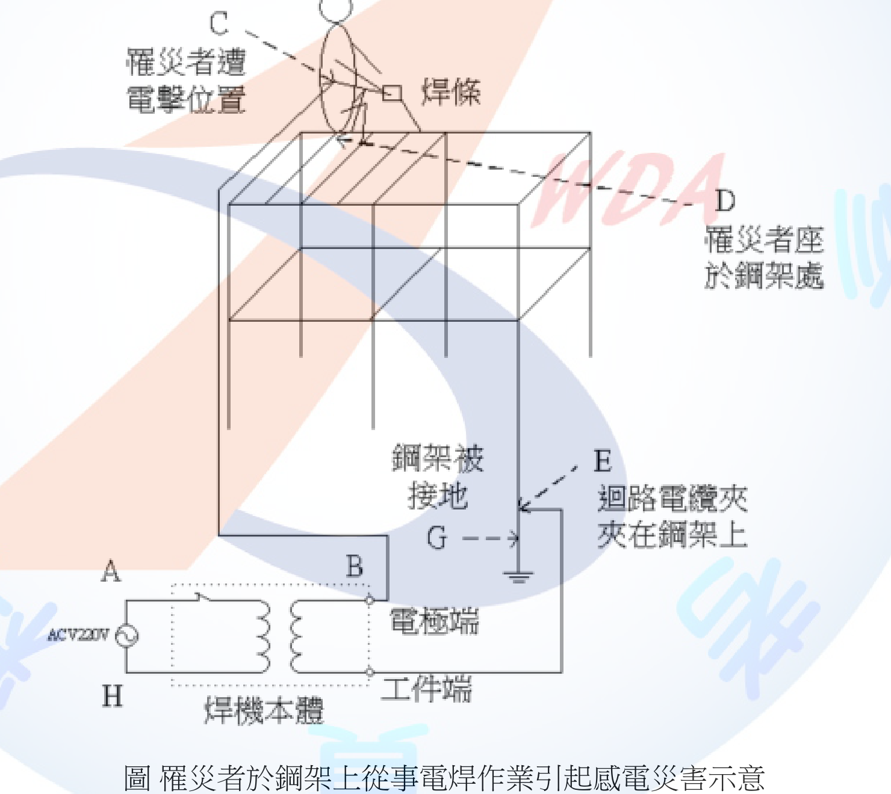
(一) 水平工作空間距離
依職業安全衛生設施規則第268條規定，雇主對於600伏特以下之電氣設備前方，至少應有80公分以上之水平工作空間；若於低壓帶電體前方可能有檢修、調整、維護之活線作業時，應依規定表另定不得低於之數值。
(二) 初級電氣技術人員設置門檻
依同規則第264條規定，低壓（600伏特以下供電）之工廠或供公眾使用之建築物，其契約容量達50瓩以上者，應置初級電氣技術人員。
(三) 感電電流計算
依歐姆定律 I＝V／R： I＝220伏特 ÷ 440歐姆＝0.5安培
(四) 感電迴路路徑判斷
依題示情境，罹災者於鋼架上從事電焊作業，電焊機二次側電線絕緣破損而使其外皮帶電，罹災者右手臂腋下夾住該破損電線，形成人體與電源之第一接觸點；下半身則直接接觸已接地之鋼構（鋼架），形成人體與大地（或設備接地端）之第二接觸點。由於人體同時構成「破損電線帶電部分→人體→鋼架（接地路徑）」之通路，故可能造成之感電迴路路徑為：
電焊機二次側電源 → 破損電線帶電部分 → 罹災者右手臂（腋下夾持接觸點）→ 經人體軀幹、下半身 → 接觸之鋼架（接地體）→ 大地 → 回到電焊機二次側電路或系統接地端，形成完整迴路。
此一路徑因電流貫穿人體軀幹（可能經過心臟區域），屬高危險性之感電路徑，為電焊作業感電死亡事故之典型態樣。
(一)(二)為法規數值背誦題，應留意「600伏特以下」與「50瓩以上」兩項門檻數字，避免與高壓、特高壓相關條文之其他數值混淆；(三)為歐姆定律基本計算，作答須列出算式I=V/R及單位；(四)為感電迴路示意圖判讀題，考點在於清楚描述電流「入口（右手臂接觸破損電線）」與「出口（下半身接觸鋼架接地）」，並指出電流路徑貫穿人體軀幹之高危險性，此類經軀幹（尤其橫跨心臟）之感電路徑，較單純肢體局部感電更易導致心室顫動而死亡，為電焊作業安全衛生教育訓練之重要考點。
⚠️ 本詳解為 AI 彙整之參考擬答，非官方標準答案；法規內容以最新公告版本為準。
依職業安全衛生管理辦法第12條之5（承攬管理）之規定，建置適合該事業單位之職業安全衛生管理系統之事業單位，以其事業之全部或一部分交付承攬或與承攬人分別僱用勞工於同一期間、同一工作場所共同作業時，除應依職業安全衛生法第26條或第27條規定辦理外，應就承攬人之安全衛生管理能力、職業災害通報、危險作業管制、教育訓練、緊急應變及安全衛生績效評估等事項，訂定承攬管理計畫，並促使承攬人及其勞工，遵守職業安全衛生法令及原事業單位所定之職業安全衛生管理事項。如參考職業安全衛生署「承攬管理技術指引」，請繪製說明承攬管理之作業流程。(20分)
依職業安全衛生管理辦法第12-5條規定，已建置職業安全衛生管理系統之事業單位，於交付承攬或與承攬人共同作業時，應訂定承攬管理計畫，並促使承攬人及其勞工遵守相關規定。承攬管理之作業流程可依「承攬前評估、承攬中管理、承攬後檢討」三階段，並扣緊條文所定六大構面，以流程圖文字化方式說明如下（因輸出格式無法繪製圖形，以條列步驟呈現作業流程節點及其銜接關係）：
【承攬前】 步驟1．承攬人資格評估 → 依承攬人之安全衛生管理能力（如職業安全衛生管理制度、過往職業災害紀錄、相關證照及人員資格等）進行評選及資格審查，作為決定是否納入合格承攬商名冊之依據。 ↓ 步驟2．訂定承攬管理計畫 → 事業單位就安全衛生管理能力、職業災害通報、危險作業管制、教育訓練、緊急應變及安全衛生績效評估等六項事項，訂定書面承攬管理計畫，並納入契約條款。 ↓ 步驟3．簽訂承攬契約並告知risk資訊 → 依職業安全衛生法第26條規定，於事前告知承攬人有關其事業工作環境、危害因素暨本法及有關安全衛生規定應採取之措施；如有再承攬情形，並依第27條規定辦理共同作業之連帶安全衛生管理責任。
【承攬中】 步驟4．危險作業管制 → 對承攬人從事之高風險作業（如動火、高處、局限空間、電氣等）實施許可、聯繫會議及現場稽核管制。 ↓ 步驟5．教育訓練與工前教育 → 確認承攬人勞工完成一般安全衛生教育訓練及該作業特殊訓練，並實施工前教育告知作業危害及應變方式。 ↓ 步驟6．現場督導與績效評估 → 原事業單位定期（如每月／每季）對承攬人之安全衛生績效進行評估、稽核，並將結果回饋於後續承攬評選。 ↓ 步驟7．職業災害通報與緊急應變 → 一旦發生職業災害或緊急事故，承攬人應依承攬管理計畫所定通報程序，即時通報原事業單位並啟動聯合緊急應變機制。
【承攬後】 步驟8．績效檢討與名冊更新 → 承攬工程完工後，統整該次承攬人之安全衛生績效評估紀錄，作為未來是否續列合格承攬商名冊及承攬管理計畫檢討修正之依據，形成持續改善（PDCA）之閉環。
上述流程各步驟環環相扣，形成「評估→計畫→告知→管制→訓練→督導→應變→檢討」之循環管理機制，以落實原事業單位對承攬人之安全衛生管理責任。
本題為單一大題20分之流程繪製題，因輸出媒介限制無法真正繪圖，作答時應以清楚之步驟編號、箭頭關係文字化呈現流程，並務必將條文明定之六項承攬管理計畫內容（安全衛生管理能力、職業災害通報、危險作業管制、教育訓練、緊急應變、安全衛生績效評估）逐一置入流程對應階段，避免僅泛談「承攬管理很重要」而未扣緊條文六大構面；「承攬管理技術指引」為職業安全衛生署發布之技術性指導文件，非法規本身，其詳細流程圖版本以官方最新公告為準。
試回答下列問題： (一) 請依營造安全衛生設施標準規定，列出5種需於四級以上地震後確認其安全狀況之作業或裝置。(5分) (二) 承上題，就該5種作業或裝置各列舉其3項須確認或檢查事項。(15分)
依營造安全衛生設施標準規定，須於四級以上地震後確認其安全狀況之作業或裝置及其確認事項如下：
1. 施工構臺（第62-2條） 雇主於施工構臺遭遇強風、大雨等惡劣氣候或四級以上地震後，使勞工於施工構臺上作業前，應確認下列事項（任列3項）： ① 支柱滑動或下沉狀況。 ② 支柱、構臺之梁等之損傷情形。 ③ 構臺覆工板之損壞或舖設狀況。
2. 露天開挖作業（第65條） 雇主僱用勞工從事露天開挖作業，於作業前、大雨或四級以上地震後，應指定專人確認作業地點及其附近地面之下列狀況： ① 地面有無龜裂。 ② 有無湧水、土壤含水狀況。 ③ 地層凍結狀況及其地層變化等情形，並採取必要之安全措施。
3. 擋土支撐（第75條） 雇主於擋土支撐設置後開挖進行中，於每週或四級以上地震後，應依下列規定實施檢查： ① 構材有否損傷、變形、腐蝕、移位及脫落。 ② 支撐桿之鬆緊狀況。 ③ 構材之連接部分、固定部分及交叉部分之狀況。
4. 隧道、坑道開挖作業（第82條） 雇主對於隧道、坑道開挖作業，於每日或四級以上地震後，應指派專人確認下列事項： ① 隧道、坑道等內部無浮石。 ② 岩磐無嚴重龜裂。 ③ 無含水、湧水不正常之變化等情形。
5. 隧道、坑道支撐（第96條） 雇主對於隧道、坑道設置之支撐，於每日或四級以上地震後，應就下列事項予以確認（任列3項）： ① 構材有無損傷、變形、腐蝕、移位及脫落。 ② 構材緊接是否良好、連接及交叉部分之狀況是否良好。 ③ 腳部有無滑動或下沉、頂磐及側壁有無鬆動。
以上各項如有異狀，均應即採取補強或整補措施，非經改善不得使勞工繼續作業。
本題考核範圍橫跨營造安全衛生設施標準第四章施工構臺、第五章露天開挖、第六章隧道坑道等多個章節，五種作業／裝置分散於不同條文，考生須具備全條文架構之整體記憶，作答時應注意各條文列舉項目數量不一（第62-2條有7項、第65條有5項、第75條恰為3項、第82條4項、第96條5項），依題目要求各僅列3項即可，切勿將不同作業之確認事項張冠李戴（例如將擋土支撐之檢查事項誤植於隧道坑道支撐）。
某化學工廠因含有可燃性及毒性氣體之高壓氣體設備（常用壓力每平方公分12公斤）故障需進入該設備內進行修理，該設備具有自動進出料之功能，並設有進出料管線之開關閥及旋塞。依據高壓氣體勞工安全規則規定，請回答下列問題： (一) 從事氣體設備之修理、清掃等作業，應依那些規定辦理？(請列舉5項，10分) (二) 因該設備之安全閥釋放管損壞亦需更新，依規定該釋放管開口部之位置應如何設置？(請依可燃性及毒性氣體分別論述，6分) (三) 如果該設備修復後，欲進行耐壓及氣密試驗，依一般規定其試驗壓力各應為多少以上？(4分)
(一) 氣體設備修理、清掃作業應依規定（列舉5項）
依高壓氣體勞工安全規則第75條規定，從事氣體設備之修理、清掃等相關作業，應依下列規定辦理（任列5項）： 1. 應於事前訂定作業計畫，並指定作業負責人，且應於該作業負責人監督下依作業計畫實施作業。 2. 從事可燃性氣體、毒性氣體或氧氣之氣體設備之修理等相關作業時，應於事前以不易與其內部氣體反應之氣體或液體置換其內部原有之氣體。 3. 從事修理等相關作業而認有必要使勞工進入氣體設備內部時，前款置換用氣體或液體應另以空氣再度置換。 4. 開放氣體設備從事修理等相關作業時，為防範來自其他部分之氣體流入該開放部分，應將該開放部分前後之閥及旋塞予以關閉，且設置盲板等加以阻隔（此項與本案設有「進出料管線之開關閥及旋塞」之情境相符）。 5. 依前款規定關閉之閥或旋塞（以操作按鈕等控制該閥或旋塞之開閉者，為該操作按鈕等）或盲板，應懸掛「禁止操作」之標示牌並予以加鎖。 （備選第6項：於修理等相關作業終了後，非經確認該氣體設備已可安全正常動作前，不得供製造作業使用。）
(二) 安全閥釋放管開口部之位置
依同規則第49條規定，安全閥或破裂板應置釋放管，其開口部之位置依氣體種類分別規定： - 可燃性氣體：設於可燃性氣體儲槽者，釋放管開口部應置於距地面5公尺或距槽頂2公尺高度之任一較高之位置以上，且其四周應無著火源等之安全位置。 - 毒性氣體：設於毒性氣體高壓氣體設備者，釋放管開口部應置於該氣體之除毒設備內，以避免毒性氣體直接排放至大氣中危害人員及環境。
(三) 耐壓及氣密試驗壓力
依同規則第41條規定，高壓氣體設備應以常用壓力1.5倍以上之壓力實施耐壓試驗，並以常用壓力以上之壓力實施氣密試驗測試合格。
本案常用壓力為每平方公分12公斤，故： - 耐壓試驗壓力應達：12 × 1.5＝18 kg/cm²以上 - 氣密試驗壓力應達：12 kg/cm²以上
(一)為條文列舉題，本案情境特別提及「設有進出料管線之開關閥及旋塞」，即在提示考生應扣緊第75條第4款「關閉開放部分前後之閥及旋塞並設置盲板」之規定作答，屬命題文字之明顯線索；(二)須嚴格區分可燃性氣體（距地面5公尺或距槽頂2公尺之較高者）與毒性氣體（除毒設備內）兩種完全不同之處置方式，不可混用；(三)為簡單倍數計算題，需留意「耐壓試驗」與「氣密試驗」為兩種不同試驗、门槛不同（1.5倍 vs. 1倍以上），計算時應分別列出。
試回答下列問題： (一) 依職業安全衛生設施規則規定，為避免勞工誤操作，雇主對於啟斷馬達或其他電氣機具之裝置，應於該裝置做那些明顯標示？(6分) (二) 依職業安全衛生設施規則規定，對於電氣設備及線路之敷設、建造、掃除、檢查、修理或調整等有導致感電之虞者，應停止送電，並為防止他人誤送電，應採那些措施？(6分) (三) 單相220伏特電路，負載電流為10安培，則負載消耗多少瓦特？(4分) (四) 以下電氣位置圖包括有電氣箱MP、MI、MP-1、MP-2、MP-3，若於○A點從事電焊作業引起電氣火災，緊急應變處理應將火災能量來源切斷，則關斷電源應以操作何電氣箱為最優先？(4分) 〔圖：某營造工地電氣箱、配線路徑示意圖，原文圖形內容無法轉錄為文字，僅保留圖說文字〕
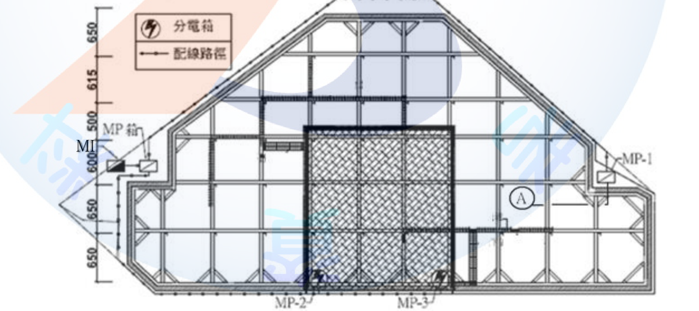
(一) 啟斷馬達裝置之明顯標示
依職業安全衛生設施規則第248條規定，雇主對於啟斷馬達或其他電氣機具之裝置，應明顯標示其啟斷操作及用途，使勞工得以清楚辨識該裝置之啟斷（開／關）操作方式與所控制之對象，以避免誤操作；但如其配置方式或配置位置已足顯示其操作及用途者，不在此限。
(二) 停電作業防止他人誤送電之措施
依同規則第254條規定，雇主對於電路開路後從事該電路之敷設、建造、檢查、修理或調整等有導致感電之虞者，應於確認電路開路後，就該電路採取下列設施： 1. 開路之開關於作業中，應上鎖或標示「禁止送電」、「停電作業中」，或設置監視人員監視之。 2. 開路後之電路如含有電力電纜、電力電容器等致有殘留電荷引起危害之虞，應以安全方法確實放電。 3. 放電後應以檢電器具檢查確認已停電，並使用短路接地器具確實短路並加接地，以防止該停電電路與其他電路混觸、感應或逆送電引起感電危害。 4. 停電作業範圍如為發電或變電設備、開關場之一部分，應以藍帶或網加圍並懸掛「停電作業區」標誌；有電部分則以紅帶或網加圍並懸掛「有電危險區」標誌，以資警示。
(三) 負載消耗瓦特數計算
依電功率公式 P＝V×I（單相電路）： P＝220伏特 × 10安培＝2,200瓦特（W）
(四) 電氣火災緊急應變關斷電源優先順序
依電氣安全「就近優先、先分路後總開關」之基本原則，電焊作業引起電氣火災時，緊急應變切斷能源應優先操作距離○A點（起火點）最近之下游分路電氣箱（即最接近電焊作業現場之MP-1、MP-2或MP-3其中之一，依實際配線路徑圖所示與A點直接連接者為準），而非逕行操作最上游之總配電箱MP或MI，其原因為： 1. 優先切斷最近下游分路，可迅速阻斷該點之能量來源，降低搶救應變時間，避免火災延燒擴大。 2. 若逕行切斷最上游之總開關（MP或MI），將導致其他非涉及本次火災之分路一併停電，影響其他區域作業及可能干擾之緊急照明、通風等安全設備運作，造成不必要之連帶影響。
〔本小題答案須對照實際考卷電氣位置圖中MP、MI、MP-1、MP-2、MP-3與A點之實際連接關係作答，本詳解僅提供判斷原則；原圖形內容無法由本次文字檔案完整轉錄，正式作答請依考卷原圖配線路徑，指出與A點直接相連之最近分路電氣箱名稱。〕
(一)(二)為條文列舉題，(二)之四項規定環環相扣，應依「上鎖標示→確實放電→檢電並短路接地→警示圍籬」之作業順序完整作答，不可僅答其中一、二項；(三)為基本電功率計算，公式簡單但務必寫出單位；(四)為電氣配線圖判讀應用題，核心觀念為「電氣火災搶救應就近切斷最接近起火點之分路開關，而非逕切總開關」，此為職業安全衛生管理甲級術科歷屆常考之電氣圖判讀類型，作答時應扣緊此一安全管理原則說明理由，而非僅憑圖形猜測答案。
請計算與回答下列問題： (一) 如下圖所示，某一固定式起重機以兩條相同規格鋼索，吊掛一支質量為2000公斤之均勻鋼管，兩鋼索與水平之夾角均為30度，請計算於平衡條件下，每條鋼索之受力負荷為多少牛頓(N)？(5分，重力加速度為9.8 m/s²) (二) 依起重升降機具安全規則之規定，吊掛用鋼索之安全係數應在多少以上？(2分)，承上題(一)每一條鋼索受力之計算結果，應選用至少能承受多少牛頓(N)之鋼索？(3分) (三) 依起重升降機具安全規則之規定，除其他有關起重吊掛作業安全事項外，雇主對於使用起重機具從事吊掛作業之勞工應使其辦理事項。(請列舉5項，10分)
(一) 每條鋼索受力計算
鋼管總重量（重力）： W＝m×g＝2,000公斤 × 9.8 m/s² ＝19,600牛頓(N)
因兩條鋼索對稱懸掛均勻鋼管，依垂直方向力平衡，兩鋼索垂直分力之和等於總重量，且兩者相等，故每條鋼索垂直分力： Fv＝19,600 ÷ 2＝9,800N
鋼索與水平夾角30度，鋼索張力T之垂直分量＝T×sin30°，依力平衡： T×sin30°＝9,800N T＝9,800 ÷ 0.5＝19,600N
即每條鋼索之受力負荷約為19,600牛頓(N)。
(二) 鋼索安全係數及應選用之最小容許荷重
依起重升降機具安全規則第65條規定，雇主對於起重機具之吊掛用鋼索，其安全係數應在6以上（安全係數為鋼索斷裂荷重值除以鋼索所受最大荷重值所得之值）。
依(一)每條鋼索實際受力19,600N，換算應選用鋼索之最小斷裂荷重： 19,600N × 6＝117,600N以上
即應選用至少能承受117,600牛頓(N)斷裂荷重之鋼索，方符合安全係數6倍以上之規定。
(三) 起重吊掛作業勞工應辦理事項（列舉5項）
依同規則第63條規定，雇主對於使用起重機具從事吊掛作業之勞工，應使其辦理下列事項（任列5項）： 1. 確認起重機具之額定荷重，使所吊荷物之重量在額定荷重值以下。 2. 檢視荷物之形狀、大小及材質等特性，以估算荷物重量，或查明其實際重量，並選用適當吊掛用具及採取正確吊掛方法。 3. 估測荷物重心位置，以決定吊具懸掛荷物之適當位置。 4. 起吊作業前，先行確認其使用之鋼索、吊鏈等吊掛用具之強度、規格、安全率等之符合性，並檢點吊掛用具，汰換不良品，將堪用品與廢棄品隔離放置，避免混用。 5. 起吊作業時，以鋼索、吊鏈等穩妥固定荷物，懸掛於吊具後，再通知起重機具操作者開始進行起吊作業。 （備選項目：荷物起吊離地後不得以手碰觸荷物，並於離地瞬間引導暫停確認有無傾斜鬆脫異狀；確認吊運路線並警示清空無關人員；與操作者確認指揮手勢；確認放置場所排列堆疊方法；引導荷物下降並確認放置安定後卸離吊具。）
(一)為力學平衡計算題，考點在於正確拆解鋼索張力之垂直分量（T×sinθ）並與總重量之一半相等，計算過程須完整列出重量換算（W=mg）及三角函數運算；(二)易與「搭乘設備懸吊鋼索安全係數10以上（第20條）」混淆，本題為一般吊掛作業用鋼索，應適用第65條之安全係數6以上；(三)為條文列舉題，第63條原文共11款，作答只需列滿5項並清楚描述吊掛作業各階段（吊掛前確認、吊掛中操作、吊掛後放置）之具體行為即可，不宜僅籠統寫「安全吊掛」等空泛答案。
⚠️ 本詳解為 AI 彙整之參考擬答，非官方標準答案；法規內容以最新公告版本為準。
依高壓氣體勞工安全規則第191條之1規定： 消費事業單位將液化石油氣容器串接供廠場使用，依下列規定辦理： 一、使用及備用容器串接總容量不得超過1000公斤，並應訂定容器串接供應使用管理計畫。 二、容器及氣化器應設置於室外。 三、容器及配管應採取防止液封措施。 四、連接容器與配管之軟管或可撓性管（以下簡稱撓管），連結容器處應加裝防止氣體噴洩裝置。 五、接用撓管之液化石油氣配管應設逆止閥。 六、撓管及配管之選用及安裝，應符合對應流體性質使用環境之CNS國家標準或ISO國際標準。 七、應設置漏洩及地震偵測自動緊急遮斷裝置。 八、應於明顯易見處標示緊急聯絡人姓名及電話。 前項消費事業單位將液化石油氣容器串接供廠場使用，依消防法有關規定設置必要之消防設備。 請就上述條文規定，簡答下列各子題： (一) 本條文適用於消費事業單位，請針對法令用語，何謂「消費」？釋明「高壓氣體消費」之涵義(3分) (二) 本條文所稱「液化石油氣」，請說明其主成分與主要用途？(3分) (三) 本條文第1項第1款規定消費事業單位串接液化石油氣容器使用者，應訂定容器串接供應使用管理計畫，查中央主管機關曾提供某行政命令供訂定該計畫有所遵循，請說明該行政命令之名稱？(2分) (四) 同項第2款規定，容器及氣化器應設置於室外，請說明其應設置於室外之立法目的？(2分) (五) 承上，所稱「室外」之設置場所，除應搭蓋防止陽光直射液化石油氣容器及氣化器之頂棚外，請說明其他遮蔽物有何條件限制，始不致有構成適法性疑慮之虞？(3分) (六) 請說明同項第3款所稱容器及配管之「液封」現象發生原因為何？(3分) (七) 同項第4款所稱「防止氣體噴洩裝置」，請說明其設置目的？並任舉一例提出前揭裝置之常見產品類型？(4分)
(一)「消費」之涵義 高壓氣體勞工安全規則將高壓氣體之流通區分為「製造」（以壓縮、液化等方法產生高壓氣體）與「消費」兩大階段。所稱「消費」，係指高壓氣體製造完成後，由消費事業單位將高壓氣體（含以容器灌裝、儲槽儲存或以導管導入方式取得者）供作燃料、原料或動力來源等最終使用之行為，包含其儲存、氣化、配管輸送至用氣設備等相關過程。「高壓氣體消費」即指此一使用端之行為態樣，與「高壓氣體製造」相對應，為本規則規範消費事業單位安全管理義務之核心概念。
(二)「液化石油氣」之主成分與用途 液化石油氣（LPG）主成分為丙烷（C3H8）及丁烷（C4H10），或兩者之混合物，於常溫下加壓即可液化，便於灌裝儲運。主要用途為家庭與營業場所之炊事、熱水加熱等燃料使用，亦廣泛作為工廠窯爐、乾燥、鍋爐等工業用燃料，以及部分作為車用燃料（LPG計程車）。依高壓氣體勞工安全規則第3條，液化石油氣屬「特定高壓氣體」之一。
(三) 應遵循之行政命令名稱 中央主管機關（勞動部職業安全衛生署）就此訂有「液化石油氣容器串接氣體供應裝置使用作業指引」，作為消費事業單位訂定容器串接供應使用管理計畫及容器放置場設計之遵循依據。
(四) 容器及氣化器設置於室外之立法目的 容器及氣化器如設置於室內密閉空間，一旦發生洩漏，氣體將滯留蓄積於室內，遇火源即有引發火災爆炸之虞；設置於室外通風良好處所，可使洩漏氣體迅速擴散稀釋，降低積滯達爆炸界限之風險，並利於緊急應變及消防搶救。
(五)「室外」之遮蔽物條件限制 依該款立法意旨，所稱室外，係指不被柱、壁及窗等所包圍之直接對外開口，其總面積應逾該場所總牆面面積，且無其他物品阻礙氣流流通者，始得認定為室外。換言之，容器放置場縱設有防止日曬之頂棚（並應以不燃性或難燃性材料構築輕質屋頂），仍應確保牆面開口比例達逾半之通風採光要求，不得以三面以上實牆包圍或堆置雜物阻礙氣流，否則將構成室內密閉空間，喪失「室外」之適法性。
(六)「液封」現象發生原因 液封係指液化氣體之容器與配管間，因閥件關閉或管路兩端封閉，形成一段充滿液相氣體之密閉區間；由於液體幾乎不可壓縮，當外界溫度上升（如日照曝曬）致管內殘留液體受熱膨脹時，密閉段內壓力將遽增，可能超過管件或閥件之耐壓限度，造成破裂、洩漏甚或爆炸。
(七) 防止氣體噴洩裝置之設置目的與常見產品 其設置目的在於當撓管因外力拉扯、老化破損或於容器連結處脫落時，能自動偵測異常流量並立即阻斷氣體繼續噴出，防止大量可燃性氣體外洩積滯，引發火災爆炸並確保作業人員安全。常見產品類型如「過流式緊急遮斷閥（excess flow valve）」，或具自動關閉機構之快拆式撓管接頭。
本題考核考生對高壓氣體勞工安全規則新增條文（111年9月修正、112年9月14日施行）之熟悉度，重點在於「消費」與「製造」之對應概念、室外設置之通風開口比例判準，以及液封、噴洩裝置等實務性安全機制的理解，屬近年新修條文考點，考生易因未關注新修正條文而失分。
營造工地使用施工架（鷹架）、合梯及模板支撐等假設工程作業時常發生墜落及倒塌、崩塌等災害，請依營造安全衛生設施標準及職業安全衛生設施規則規定回答下列問題： (一) 請列出施工架（含組立及拆除）作業時，防止發生墜落及倒崩塌之設備或措施（各5項）。(10分) (二) 請列出防止使用合梯作業時發生墜落之設備或措施（5項）。(5分) (三) 請列出防止使用模板支撐作業（可調鋼管支柱）時發生倒崩塌之設備或措施（5項）。(5分)
(一) 施工架防止墜落之設備或措施（5項） 1. 高度2公尺以上施工架作業處所，應設置護欄、護蓋或安全網等防護設備，護欄高度應在90公分以上並具中欄杆、腳趾板。 2. 高度2公尺以上施工架上作業，應供給足夠強度之工作臺，寬度40公分以上並鋪滿密接踏板，支撐點2處以上且綁結固定，踏板間縫隙不得大於3公分。 3. 不得使勞工在施工架上使用梯子、合梯或踏凳等從事作業。 4. 於紮緊、拆卸及傳遞施工架構材時，應設寬度20公分以上之施工架踏板，並使勞工使用安全帶等防止墜落之設備與措施。 5. 於施工架上設置人員上下設備時，應確實檢查各部分穩固性並將上下設備立柱與建築物堅實部分牢固連接，且任一處步行至最近上下設備之距離應在30公尺以下。
施工架防止倒崩塌之設備或措施（5項） 1. 構築施工架之材料不得有顯著之損壞、變形或腐蝕，並符合國家標準CNS4750鋼管施工架同等以上抗拉強度。 2. 未能與結構體連接之施工架，應以斜撐材或其他相關設施作充分支撐；並在垂直不超過5.5公尺、水平不超過7.5公尺之間隔與構造物妥實連接（繫牆桿、壁連座）。 3. 懸吊式施工架、懸臂式施工架及高度5公尺以上施工架之組配拆除作業，應指派施工架組配作業主管於現場指揮並實施材料檢點、汰換不良品。 4. 高度7公尺以上且立面面積達330平方公尺以上之施工架或施工構臺，應由專任工程人員或相關執業技師妥為設計，置備施工圖說及強度計算書並簽章確認。 5. 施工架及施工構臺之基礎地面應平整並夯實緊密，並襯以適當材質之墊材，以防止滑動或不均勻沉陷。
(二) 合梯防止墜落之設備或措施（5項） 1. 合梯應具有堅固之構造。 2. 合梯材質不得有顯著之損傷、腐蝕等現象。 3. 梯腳與地面之角度應在75度以內，且兩梯腳間有金屬等硬質繫材扣牢。 4. 梯腳部應設有防滑絕緣腳座套。 5. 應有安全防滑之梯面；並不得使勞工以合梯當作二工作面之上下設備使用，禁止勞工站立於頂板作業。
(三) 模板支撐（可調鋼管支柱）防止倒崩塌之設備或措施（5項） 1. 可調鋼管支柱不得連接使用。 2. 支柱高度超過3.5公尺者，應每隔2公尺內設置足夠強度之縱向、橫向水平繫條，並與牆、柱、橋墩等構造物或穩固之牆模、柱模妥實連結，以防止支柱移位。 3. 可調鋼管支撐於調整高度時，應以制式金屬附屬配件為之，不得以鋼筋等替代使用。 4. 支柱上端支以梁或軌枕等貫材時，應置鋼製頂板或托架，並將貫材固定其上。 5. 支柱應視土質狀況，襯以墊板、座板或敷設水泥等方式防止沉陷，支柱腳部應予固定防止移動，支柱之接頭應以對接或搭接方式妥為連結。
本題屬假設工程（施工架、合梯、模板支撐）墜落與倒崩塌雙重災害類型之綜合列舉題，考生須注意題目要求「墜落」與「倒崩塌」須分開列舉、各滿5項，且合梯之規範依據在職業安全衛生設施規則（非營造安全衛生設施標準），常見失分點為條文混淆或列舉重複、未達5項。
「某煉油廠於系統建壓查漏程序中，氫氣持續排放至廢氣燃燒(Flare)系統，疑似通往廢氣燃燒塔管線洩漏，造成氣爆著火；操作人員依緊急停爐標準作業程序(SOP)由緊急排放閥釋壓，氣體往廢氣燃燒塔管線排放，造成火勢持續延燒。操作人員依標準作業程序(SOP)緊急停爐，製程系統隔離。」 (一) 請說明廢氣燃燒塔（屬化學設備及其附屬設備）依職業安全衛生管理辦法規定應進行的自動檢查項目及其內容？(10分) (二) 假若該廠是適用「製程安全評估定期實施辦法」，請說明於製作製程安全評估報告及採取必要之預防措施中「機械完整性」之事項？(10分)
(一) 化學設備及其附屬設備之定期自動檢查項目 依職業安全衛生管理辦法第39條，雇主對化學設備及其附屬設備（廢氣燃燒塔屬其附屬設備），應就下列事項每2年定期實施檢查一次： 1. 內部是否有造成爆炸或火災之虞（如殘留可燃性氣體、氧化性物質蓄積情形）。 2. 內部與外部是否有顯著之損傷、變形及腐蝕（塔體、管線本體檢視）。 3. 蓋板、凸緣、閥、旋塞等之狀態（含法蘭墊片、閥件洩漏情形）。 4. 安全閥或其他安全裝置、壓縮裝置、計測裝置之性能（含緊急排放閥動作性能）。 5. 冷卻裝置、攪拌裝置、壓縮裝置、計測裝置及控制裝置之性能。 6. 預備電源或其代用裝置之性能（確保停電時緊急遮斷、點火系統仍可運作）。 7. 其他防止爆炸或火災之必要事項（如長明燈點火系統、氣體偵測警報系統運作情形）。 上述檢查結果應予記錄並保存3年，發現有異常者應即採取必要之改善措施，於改善前不得使勞工在該設備從事作業。
(二) 製程安全評估報告中「機械完整性」之事項 依製程安全評估定期實施辦法第4條第2項第7款，事業單位實施製程安全評估後，應製作製程安全評估報告，其內容應包括「機械完整性」乙項（如附表八）。其核心精神在確保製程相關設備（含壓力容器、儲槽、配管系統、釋壓與洩放裝置〈如本案廢氣燃燒塔及緊急排放閥〉、緊急遮斷系統、幫浦、控制與連鎖系統、警報與偵測裝置等）於使用期間均能維持設計功能，避免因設備劣化、失效而導致洩漏、火災或爆炸。其主要事項包括： 1. 訂定書面之機械完整性管理程序，明確界定納入管理之關鍵設備範圍。 2. 對操作及維修人員實施設備特性、操作程序及潛在危害之教育訓練。 3. 依據製造商建議及業界公認之工程實務，訂定設備檢查、測試之項目及頻率（如本案廢氣燃燒塔本體、管線及緊急排放閥應納入定期檢查測試）。 4. 檢查測試結果應予記錄，並對照設備允收基準（Acceptance Criteria）判定是否合格。 5. 發現設備缺陷應即採取改善措施，於缺陷未改善完成前，應採取必要之因應措施以確保安全運轉。 6. 於設備建造及安裝階段，即應確認材質、施工品質符合設計規範，並建立品質保證制度。
本題以煉油廠氫氣洩漏氣爆案例出題，第(一)小題須緊扣「化學設備及其附屬設備」自動檢查之法定7款內容，避免與特定化學設備檢查（第38條）混淆；第(二)小題「機械完整性」為製程安全管理（PSM）之核心要素，考生除背誦法條款次外，應能結合關鍵設備範圍、書面程序、教育訓練、檢查測試、缺陷改善、品質保證等實務內涵完整說明，方符合10分之作答深度期待。
試回答下列火災爆炸問題： (一) 某混合可燃性氣體由丙烷(C3H8, LEL=2.2%, UEL=9.5%)、丁烷(C4H10, LEL=1.8%, UEL=8.4%)、以及丙酮(C3H6O, LEL=2.1%, UEL=13%)3種可燃性氣體組成，請問： 1. 丁烷及丙酮的危險度為何？(四捨五入至小數點後第2位，4分) 2. 該混合可燃性氣體由10%丙烷、5%丁烷及85%丙酮組成，依勒沙特列定律，該混合可燃性氣體LEL為何？(四捨五入至小數點後第2位，2分) 3. 續上題，該混合可燃性氣體UEL為何？(四捨五入至小數點後第2位，2分) 4. 依據上述計算結果，該混合可燃性氣體是否屬於高壓氣體勞工安全規則所稱之可燃性氣體？(2分) (二) 某鑄鐵工廠勞工於操作滑輪式熔鐵鐵桶時，因鐵桶內熔融鐵傾覆，碰及積水發生水蒸汽爆炸，致使正在操作鑄鐵容器的另一名勞工被炸到5公尺外罹災，且造成工廠屋頂炸開、廠區玻璃被震碎。試簡述回答前述熔融高熱物相關作業時，應採取防止與水接觸之5項預防措施，以確保高熱熔融金屬相關作業之安全性。(10分)
(一)-1 丁烷及丙酮之危險度 危險度 H = (UEL－LEL) / LEL
丁烷：H = (8.4－1.8) / 1.8 = 6.6 / 1.8 = 3.6667 ≈ 3.67 丙酮：H = (13－2.1) / 2.1 = 10.9 / 2.1 = 5.1905 ≈ 5.19
(一)-2 混合氣體LEL（勒沙特列定律） LEL_mix = 100 / (V1/L1 + V2/L2 + V3/L3) = 100 / (10/2.2 + 5/1.8 + 85/2.1) = 100 / (4.5455 + 2.7778 + 40.4762) = 100 / 47.7994 = 2.09%
(一)-3 混合氣體UEL（勒沙特列定律） UEL_mix = 100 / (V1/U1 + V2/U2 + V3/U3) = 100 / (10/9.5 + 5/8.4 + 85/13) = 100 / (1.0526 + 0.5952 + 6.5385) = 100 / 8.1863 = 12.22%
(一)-4 是否屬於高壓氣體勞工安全規則所稱之可燃性氣體 依高壓氣體勞工安全規則第4條，可燃性氣體係指爆炸下限在10%以下，或爆炸上限與下限之差在20%以上之氣體。本混合氣體LEL_mix＝2.09%，已低於10%，符合「爆炸下限在百分之十以下」之要件（UEL－LEL＝12.22－2.09＝10.13%，雖未達20%，惟已符合前一要件），故屬於高壓氣體勞工安全規則所稱之可燃性氣體。
(二) 熔融高熱金屬作業防止與水接觸之5項預防措施 1. 建築物中熔融高熱物之處理設備，其地板面應維持不積水之構造，並應能防止雨水由屋頂、牆壁、窗戶等滲入，以避免引起水蒸汽爆炸。 2. 以水處理高熱礦渣或廢棄高熱礦渣之場所，應設置良好之排水設備及其他足以防止水蒸汽爆炸之必要措施，並於廢棄高熱礦渣場所標示高熱危險。 3. 從事金屬之加熱熔融、熔鑄作業，冷卻系統應配置進出口溫度、壓力、流量監測及警報裝置，於停電或緊急狀況時應設置緊急排放高熱熔融物之裝置及應急冷卻設施。 4. 將金屬碎屑或碎片投入金屬熔爐前，應事前確認其中未雜含水分、火藥類等危險物或密閉容器，以防止爆炸。 5. 對鼓風爐、鑄鐵爐或處置大量高熱物之作業場所，應採取適當之防範措施（如設置阻隔設施、控制熔融物傾倒動線遠離積水區域）防止高熱物飛散、溢出引起灼傷或水蒸汽爆炸，並使作業勞工佩戴適當防護具。
本題(一)為勒沙特列定律（Le Chatelier's Law）與危險度標準計算題，考生應熟記H=(UEL-LEL)/LEL及LEL_mix=100/Σ(Vi/Li)公式並注意四捨五入位數要求；(一)-4常見失分點在於誤以為須同時滿足LEL≤10%「且」UEL-LEL≥20%兩要件，實則法條為「或」之關係，僅需符合其一即屬可燃性氣體。(二)則考核職業安全衛生設施規則熔融高熱物專節（第180條至第183條）之熟悉度，答題應扣緊「防止與水接觸」之題旨，避免泛答一般高溫作業防護。
依機械設備器具安全標準之規定，請回答與計算下列問題： (一) 除雙手操作式安全裝置外，請列出動力衝剪機械所需之安全裝置，並簡要說明該安全裝置需具備之機能。(12分) (二) 若手指離開安全一行程雙手操作式安全裝置的操作部至快速停止機構開始動作之時間為60毫秒，快速停止機構開始動作至滑塊等停止之時間為40毫秒，計算該安全裝置所需之安全距離為多少毫米？(8分)
(一) 動力衝剪機械所需之安全裝置（除雙手操作式外） 1. 安全護圍等：衝剪機械應具有安全護圍、安全模、特定用途之專用衝剪機械或自動衝剪機械。安全護圍須具使手指不致通過該護圍或自外側觸及危險界限之構造；安全模之上模與下模等構件間隙應在8毫米以下；專用衝剪機械須具不致使身體介入危險界限之構造；自動衝剪機械須具可自動輸送材料、加工及排出成品之構造。 2. 連鎖防護式安全裝置：機能為滑塊等在閉合動作中，能使身體之一部無介入危險界限之虞，即防護裝置未閉合前滑塊無法動作，且滑塊閉合動作中防護裝置無法開啟。 3. 感應式安全裝置（含光電式）：機能為滑塊等在閉合動作中，遇身體之一部接近危險界限時，能使滑塊等停止動作；其中光電式安全裝置須於身體一部遮斷光線時即檢出並停止滑塊動作。 4. 拉開式或掃除式安全裝置：機能為滑塊等在閉合動作中，遇身體之一部介入危險界限時，能隨滑塊等之動作使其脫離危險界限，將手部強制拉離或掃離危險界限。 5. 快速停止機構：衝壓機械應具有於檢出危險或異常時，能自動停止滑塊、刀具或撞錘動作之機構，且於作動後未再起動操作時，無法使滑塊等動作。 6. 緊急停止裝置：具有快速停止機構之衝壓機械，應備有緊急情況發生時，能由人為操作使滑塊等立即停止動作之裝置，其操作部為紅色凸出型按鈕，設置於各操作區。 7. 寸動機構：具有快速停止機構之衝壓機械，應備有寸動機構，用以限制滑塊移動速度（每秒10毫米以下）或每段移動行程（不得超過6毫米），供試模、調整等低速動作使用。
(二) 安全距離計算 依機械設備器具安全標準第8條第1款，安全一行程雙手操作式安全裝置之安全距離公式為： D = 1.6 × (Tl + Ts) 其中： D：安全距離（毫米） Tl：手指離開操作部至快速停止機構開始動作之時間（毫秒）＝60毫秒 Ts：快速停止機構開始動作至滑塊等停止之時間（毫秒）＝40毫秒
代入計算： D = 1.6 × (60 + 40) = 1.6 × 100 = 160毫米
驗算：Tl+Ts=100毫秒，1.6×100=160，單位為毫米，計算無誤。故該安全一行程雙手操作式安全裝置所需之安全距離為160毫米，即操作部（或危險界限）與危險界限間之距離須大於160毫米，方能確保手指於快速停止機構動作完畢前無法觸及危險界限。
第(一)小題考核動力衝剪機械安全裝置體系之完整性，題目明確排除雙手操作式，考生應留意連鎖防護式、感應式、拉開式／掃除式之機能區分，並可延伸列出快速停止機構、緊急停止裝置、寸動機構等配套安全機構以求分數完整；第(二)小題為公式代入計算題，須留意「安全一行程雙手操作式」與「雙手起動式」(D=1.6Tm)、「光電式」(D=1.6(Tl+Ts)+C) 三種公式不同，選錯公式為常見失分點。
⚠️ 本詳解為 AI 彙整之參考擬答，非官方標準答案；法規內容以最新公告版本為準。
在工作場所面臨迫在眉睫和嚴重危險的情況下退避的權利在防止工作場所死亡和嚴重傷害方面非常重要。現今許多勞工並不知道如國際勞工組織第155號職業安全衛生公約第13條「如果勞工已離開其有合理理由認為對其生命或健康構成迫在眉睫的嚴重危險的工作環境，則應根據國家條件和慣例保護其免受不當後果。」規定的這項權利，如果他們選擇將自己從迫在眉睫的嚴重危險中解脫出來，可能會擔心負面後果。此類後果可能包括解僱、減薪或取消其他工作場所福利和權利。重要的是，國家法律應反映這一權利，並明確規定行使這一權利的勞工不會因此受到不利行動。如同我國職業安全衛生法第18條「工作場所有立即發生危險之虞時，雇主或工作場所負責人應即令停止作業，並使勞工退避至安全場所。」。此外，在遏止或消除迫在眉睫的嚴重危害之前，雇主不得要求員工返回工作場所。請說明於職業安全衛生法第18條所稱有立即發生危險之虞時，指勞工處於何種需採取緊急應變或立即避難之情形？（得僅列舉5項，20分）
依職業安全衛生法施行細則第25條規定，本法第18條第1項及第2項所稱有立即發生危險之虞，指勞工處於需採取緊急應變或立即避難之下列情形之一（原條文列有9款，本題僅列舉5項）：
（其餘尚有：從事缺氧危險作業致有發生缺氧危險之虞；於高度二公尺以上作業未設防墜設施及未使勞工使用適當個人防護具致有墜落危險之虞；於道路或鄰接道路作業未採管制措施及未設安全防護設施致有危險之虞；及其他經中央主管機關指定公告之情形，作答時任選5項並具體描述情境即可得分。）
本題題幹援引ILO第155號公約第13條退避權精神，考點在於將抽象之「立即發生危險之虞」對應到施行細則第25條之具體法定情形，而非泛泛描述危險概念。作答須逐項具體描述情境（洩漏化學品、河川工程惡劣天候、隧道開挖落磐出水、可燃氣體滯留達爆炸下限30%、密閉空間中毒窒息、缺氧作業、高處未設防墜設施、道路作業未管制等），常見失分點為僅寫「有危險」等空泛敘述而未扣合法定情形文字。
請回答下列施工架相關問題： (一) 就下列圖A至圖E，依據施工架拆除安全步驟（扶手先行工法），請依序寫出拆除之作業順序（只要依序寫出英文字母即可）。(2分) (二) 就圖F，簡述該施工架不安全狀況2項。(2分) (三) 就圖G，簡述該施工架不安全狀況2項。(2分) (四) 依照營造安全衛生設施標準規定，為維持施工架及施工構臺之穩定，請列舉7項應辦理或注意事項。(14分)
圖A 附工作板橫架拆除 圖B 立架拆除 圖C 組立設置之施工架 圖D 先行扶手框拆除 圖E 交叉拉桿及下拉桿拆除
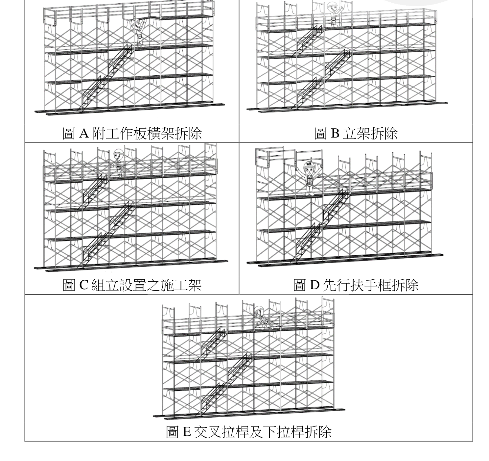
圖F
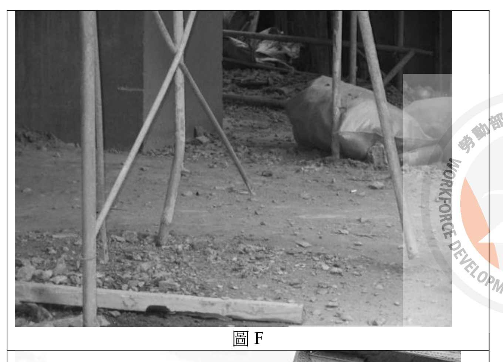
圖G
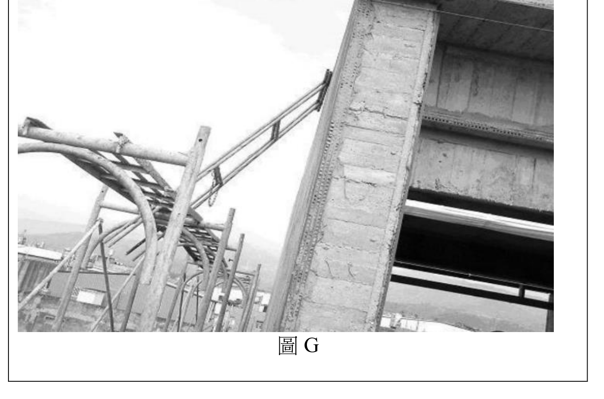
(一) 拆除作業順序
扶手先行工法之核心原則為：組立時「先設扶手、後上人、後鋪板」，由下而上進行，使勞工在任一樓層作業時上方均已有護欄防護；拆除則反其道而行，由上而下依「先拆非結構附屬構件、次拆斜撐與拉桿、再拆主結構立架、扶手最後拆除」之順序辦理，使勞工在拆除過程中隨時處於扶手保護範圍內，避免產生無防護之墜落空隙。依此原則，拆除順序為：C（組立設置之施工架，即拆除前原始狀態）→A（附工作板橫架拆除）→E（交叉拉桿及下拉桿拆除）→B（立架拆除）→D（先行扶手框拆除，最後拆除）。
(二) 圖F不安全狀況（列舉2項） 依原卷圖F所示，施工架（或支撐）基腳直接以細桿件插入未夯實之鬆軟土石地面： 1. 基礎未設置底座金屬板（墊座）或未襯墊足夠面積之墊材，直接將構材插入未夯實整平之土石地面，地盤承載力不足，易生不均勻沉陷致施工架傾倒。 2. 支撐構材疑似以細竹竿或圓木桿等非合格規格之金屬管材充當，構材強度恐不足以承受應有荷重，且未見與其他構件以合格扣件確實連結固定。
(三) 圖G不安全狀況（列舉2項） 依原卷圖G所示，施工架管材與混凝土結構柱之連結處： 1. 施工架與結構體（混凝土柱）之連接（壁連座/繫牆桿）疑似以鐵絲或鏈條等非合規構件綑綁連結，未使用具足夠強度之合格壁連座金屬扣件，連結強度恐不足以抵抗施工架傾倒外力。 2. 施工架立管管材明顯彎曲變形仍繼續使用，未依規定汰換已生顯著變形、損傷之不良管材，構件強度已受影響，有安全疑慮。
(四) 維持施工架及施工構臺穩定應辦理事項（7項） 1. 施工架及施工構臺不得與混凝土模板支撐或其他臨時構造連接。 2. 對於未能與結構體連接之施工架，應以斜撐材或其他相關設施作適當而充分之支撐。 3. 施工架應在適當之垂直、水平距離處與構造物妥實連接，垂直方向間隔不超過5.5公尺，水平方向不超過7.5公尺為限（獨立而無傾倒之虞或已依規定辦理者不在此限）。 4. 因作業需要局部拆除繫牆桿、壁連座等連接設施時，應採取補強或其他適當安全設施，以維持穩定。 5. 獨立之施工架在該架最後拆除前，至少應有三分之一之踏腳桁不得移動，並使之與橫檔或立柱紮牢。 6. 鬆動之磚、排水管、煙囪或其他不當材料，不得用以建造或支撐施工架及施工構臺。 7. 施工架及施工構臺之基礎地面應平整，且夯實緊密，並襯以適當材質之墊材，以防止滑動或不均勻沉陷。
第(一)小題應熟記扶手先行工法「先拆配件、後拆結構、扶手最後拆」之原則，逐一比對圖A至圖E所示構架完整度差異排出正確順序；第(二)(三)小題屬圖面判讀題，作答時應具體指出圖中可見之缺失部位（如圖F基礎未襯墊材、圖G壁連座以非合格構件連結），避免僅籠統描述「不安全」。第(四)小題屬條文列舉題，應完整寫滿7項並包含數字門檻（5.5公尺、7.5公尺），此為第45條之核心考點，常見失分為漏列基礎地面處理或最後拆除踏腳桁保留規定。
依職業安全衛生法第7條第1項規定：「製造者、輸入者、供應者或雇主，對於中央主管機關指定之機械、設備或器具，其構造、性能及防護非符合安全標準者，不得產製運出廠場、輸入、租賃、供應或設置。」，請依據上述條文規定，簡答下列各小題： (一) 本條明定列管產品之製造者，其產製品受法定安全規格之限制，若A廠是國內製造商，B廠是設廠外國之台商，C廠是廠址在他國之外商，各廠均為製造本條列管產品者，請問：1. 各廠中何者受本條所定「製造者責任」強制拘束之法效力？(2分) 2. 請說明上述認定所採之法理見解。(2分) (二) 某產品前經勞動部依法公告指定屬本條新增列管產品且自公告日生效在案，若A、B、C、D各廠均為國內合法立案工廠，現A廠因故委託B廠OEM代工製造該產品，B廠再發包交C廠承攬其鋼料凹槽鉋製加工與供應部分零組件，B廠另交D廠承攬同產品之熱處理與防蝕塗裝工程，產品最終組裝由B廠完成履約交貨予A廠，並以A廠品牌名義上市行銷該產品。請問：1. 本條所定「製造者」之法定義務，應由何廠負責？(2分) 2. 請說明上述認定所採之法理見解。(2分) (三) 本條規範輸入者之法定義務，若某列管產品自國外進口台灣事宜，由A公司委託B公司代辦輸入。請問何者應負本條所定「輸入者」之責任？(2分) (四) 本條某列管產品，若由A向B採購並約定依A開列之採購規格交貨，B自行委託在國外設廠之台商C代工產製完成，由B辦理輸入後交付A履約驗收，產品標示以A之品牌商標上市。請問：1. A是否屬委託輸入者？(2分) 2. 何者應負本條所定「輸入者」之法定義務？(2分) (五) 本條所定「…構造、性能及防護非符合安全標準…」，請說明所稱「安全標準」之全名。(2分) (六) 請說明本條所稱「運出廠場」之涵義與實際樣態。(2分) (七) 於本條生效日後，若某廠購置未符安全標準之列管產品，安裝於生產線竣事擬使用，然因經濟不景氣，該產品迄未運轉使用，請問本案有無構成違反雇主不得設置之法定禁止義務？(2分)
(一) 1. 僅A廠（國內製造商）受本條「製造者責任」強制拘束之法效力；B廠雖具台商身分惟廠址設於境外，C廠廠址亦在他國，均非我國法域效力所及。 2. 法理見解：本條規範對象為在我國境內「產製運出廠場」之行為，依法律屬地主義，我國公法上強制義務之效力範圍以我國領域內之行為為限；B、C廠之產製行為發生於他國主權管轄領域，我國不能逾越國境行使公權力課予「製造者」義務，其產品僅於實際「輸入」我國時，始轉換適用本條「輸入者」責任規範，而非製造者責任。
(二) 1. 應由B廠負本條「製造者」之法定義務。 2. 法理見解：本條所稱製造者，採「實質完成產製並將產品運出廠場」之認定標準，而非以商標品牌名義為斷。B廠受託OEM代工、統籌各分包廠商加工項目、完成最終組裝並履約交貨，為實際完成產品產製及運出廠場之行為人；A廠僅提供品牌與規格，未實際從事產製行為，不因掛牌行銷而成為製造者；C、D廠僅承攬部分零組件加工及表面處理，非完成產品最終構造之人，亦非製造者。此一「實質產製行為人原則」旨在避免藉由品牌代工或分包安排規避法定安全義務。
(三) 應由委託之A公司負本條所定「輸入者」之責任；B公司僅為受託代辦通關等事務性行為之代理人（委任關係），實際決定輸入與否、負擔產品安全義務者為委任人A公司，故輸入者責任歸屬A公司。
(四) 1. A非委託輸入者。因A與B間為採購（買賣）關係而非委任關係，B係基於自己之營業行為，委託國外C廠代工後，以自己名義辦理輸入，再依買賣契約交付A，其輸入行為並非受A委託而為，乃B自身之商業行為，故A不屬本條所稱之委託輸入者。 2. 應由B負本條所定「輸入者」之法定義務，因B為實際辦理貨物通關輸入之行為人，其輸入行為係基於自身買賣交易目的而為；A雖為採購規格開列者及最終品牌上市者，惟並未親自或委託辦理輸入行為，法定輸入者義務仍歸屬實際輸入之B廠。
（本題(三)與(四)之對比，凸顯「委任代辦」與「採購買賣」二種法律關係下輸入者責任歸屬之差異：委任關係下責任歸屬本人〔委託人〕，買賣關係下責任歸屬實際辦理輸入之出賣人。）
(五) 「安全標準」之全名為《機械設備器具安全標準》。依機械設備器具安全標準第1條規定，該標準即依職業安全衛生法第6條第3項、第7條第2項及第8條第5項規定訂定，為本條所稱安全標準之具體規範依據。
(六) 「運出廠場」係指列管機械、設備或器具於產製廠場完成產製後，實際遷出該廠場，交付流通進入市場、經銷通路或使用場所之行為，包括出貨交運、交付買受人或經銷商、委託物流業者發送等樣態；反之，產品若仍留置於原產製廠場內（如尚屬庫存或未完成品），因尚未離廠對外流通，則不屬本條所稱之「運出廠場」。
(七) 本案已構成違反雇主不得設置之法定禁止義務。本條所稱「設置」，係指將產品安裝定著於工作場所以供使用之行為，其違法性於「設置」行為完成時即已成立，不以嗣後是否實際啟用運轉為構成要件。該廠已將未符安全標準之列管產品安裝於生產線竣工完成，設置行為業已完成，縱因景氣因素迄未運轉使用，仍已構成違反本條雇主不得設置之法定禁止義務。
本題為法律解釋（法理分析）題型，非計算題，核心考點在於「製造者」、「輸入者」、「設置」等法律用語之實質認定標準：製造者責任採屬地主義（境內產製行為）與實質產製行為人原則（非商標名義原則）；輸入者責任則須區辨「委任代辦」（責任歸本人）與「採購買賣」（責任歸實際進口之出賣人）兩種不同法律關係；「設置」義務為行為犯性質，一經安裝完成即該當，不以啟用為要件。作答應扣合法理論述（屬地主義、實質行為人原則、委任與買賣之區辨、行為既遂概念），避免僅作結論而未說明理由。
(一) 有一事業單位從事玻璃及玻璃製品製造僱用勞工人數250人，另其他受工作場所負責人指揮或監督從事勞動之勞工人數60人，且兩者之勞工在同期間、工作場所作業，因製程所需設置液氧儲槽（未設加壓蒸發器）、送氣蒸發器（1座）出口常用壓力每平方公分10公斤，且其處理能力達1000立方公尺。請回答下列問題： 1. 依職業安全衛生管理辦法規定，該事業單位職業安全衛生管理單位及管理人員如何設置及其理由何在？(4分) 2. 依勞動檢查法及其施行細則規定，該工作場所是否屬丙類工作場所？說明其理由及依據？(4分) (二) 依高壓氣體勞工安全規則規定，請回答下列問題： 1. 那些設備應於其四周設置可防止液化氣體漏洩時流竄至他處之防液堤或其他同等設施？(8分) 2. 承上，其防液堤內側及堤外L公尺範圍內，除規定之設備及儲槽之附屬設備外，不得設置其他設備。L值為何？(2分)但何種氣體儲槽防液堤外之距離範圍不受L公尺規定限制？(2分)
(一) 1. 管理單位及管理人員設置 依職業安全衛生管理辦法第3條之2規定，事業單位勞工人數之計算，應包含原事業單位及其承攬人、再承攬人之勞工，及其他受工作場所負責人指揮或監督從事勞動之人員，於同一期間、同一工作場所作業時之總人數。本案250人與60人於同期間、同工作場所共同作業，應合併計算為310人。
玻璃及玻璃製品製造業依本辦法附表一（第2條）屬第一類事業（具顯著風險者）。勞工人數310人已達100人以上，依第2條之1第1項第1款規定，應設直接隸屬雇主之專責一級管理單位；依第3條第2項，所置管理人員應為專職。又依第3條之1規定，第一類事業之事業單位對於所屬從事製造之一級單位，勞工人數在300人以上者，應再至少增置專職職業安全衛生管理員一人；本案310人已逾300人門檻，故除設專責一級管理單位外，尚須再增置專職職業安全衛生管理員一人。
理由：因承攬人及其他受工作場所負責人指揮監督之人員與原事業單位勞工同時於同一場所暴露於相同作業風險，依第3條之2應合併計算以求管理規模與實際風險相符；又本業屬第一類顯著風險事業，達一定規模者應有更嚴謹之專責組織與專職人力配置，以落實職業災害預防功能。
(二) 1. 應設防液堤設備（4項） 依高壓氣體勞工安全規則第37條規定，下列設備應於四周設置防止液化氣體漏洩流竄他處之防液堤或其他同等設施： 一、儲存能力在一千公噸以上之液化可燃性氣體儲槽。 二、儲存能力在一千公噸以上之液化氧氣儲槽。 三、儲存能力在五公噸以上之液化毒性氣體儲槽。 四、以毒性氣體為冷媒氣體之冷媒設備，其承液器內容積在一萬公升以上者。
第(一)1小題核心在於勞工人數合併計算（第3條之2）及跨越300人門檻觸發第3條之1增置專職管理員之規定，考生易忽略承攬人及受指揮監督人員應併入計算。第(一)2小題須將題目給定之壓力、處理能力數值與勞動檢查法施行細則第28條之量化門檻對應，方能準確判斷是否該當丙類工作場所，不能僅憑「設有高壓氣體設備」即認定。第(二)小題屬條文列舉與數值記憶題，L值10公尺及液化毒性氣體儲槽之例外規定為常見考點。
依機械設備器具安全標準之規定回答下列問題： (一) 解釋名詞：1. 快速停止機構(2分) 2. 緊急停止裝置(2分) 3. 可動式接觸預防裝置(2分) (二) 請列出衝剪機械之安全裝置，並簡要說明應具之機能。(8分) (三) 某衝剪機械設置光電式安全裝置，當手指介入光電式安全裝置之感應域至快速停止機構開始動作之時間為50毫秒，快速停止機構開始動作至滑塊等停止之時間為80毫秒，連續遮光幅為32毫米，其追加距離請參閱下表，計算該光電式安全裝置所需之安全距離（以毫米表示）。(6分)
連續遮光幅（毫米）｜追加距離（毫米） 30以下｜0 超過30，35以下｜200 超過35，45以下｜300 超過45，50以下｜400
(一) 解釋名詞（依機械設備器具安全標準第3條） 1. 快速停止機構：指衝剪機械檢出危險或異常時，能自動停止滑塊、刀具或撞錘（以下簡稱滑塊等）動作之機構。 2. 緊急停止裝置：指衝剪機械發生危險或異常時，以人為操作而使滑塊等動作緊急停止之裝置。 3. 可動式接觸預防裝置：指手推刨床之覆蓋可隨加工材之進給而自動開閉之刃部接觸預防裝置。
(二) 衝剪機械安全裝置及應具機能（依機械設備器具安全標準第6條） 一、連鎖防護式安全裝置：滑塊等在閉合動作中，能使身體之一部無介入危險界限之虞。 二、雙手操作式安全裝置：(1)安全一行程式安全裝置──手指按下操作部後脫手，至該手達到危險界限前，能使滑塊等停止動作；(2)雙手起動式安全裝置──以雙手作動操作部，於滑塊等閉合動作中，手離開操作部時使手無法達到危險界限。 三、感應式安全裝置（如光電式安全裝置）：滑塊等在閉合動作中，遇身體之一部接近危險界限時，能使滑塊等停止動作。 四、拉開式或掃除式安全裝置：滑塊等在閉合動作中，遇身體之一部介入危險界限時，能隨滑塊等之動作使其脫離危險界限。 以上各類安全裝置，均應具有安全機能不易減損及變更之構造。
(三) 光電式安全裝置安全距離計算（依機械設備器具安全標準第8條第3款） 計算公式：D＝1.6×(Tl＋Ts)＋C 其中： - Tl（手指介入光電式安全裝置感應域至快速停止機構開始動作之時間）＝50毫秒 - Ts（快速停止機構開始動作至滑塊等停止之時間）＝80毫秒 - 連續遮光幅＝32毫米，落於題目對照表「超過30，35以下」區間，故追加距離C＝200毫米
代入計算： D＝1.6×(50＋80)＋200 ＝1.6×130＋200 ＝208＋200 ＝408（毫米）
驗算：1.6×130＝208，208＋200＝408，計算無誤。
故該光電式安全裝置所需之安全距離為408毫米。
第(一)小題為條文定義背誦題，須注意快速停止機構為「自動」停止、緊急停止裝置為「人為操作」停止之區別，可動式接觸預防裝置專指手推刨床刃部護蓋。第(二)小題應完整列出4類安全裝置並各附機能說明，僅列名稱未說明機能將酌情扣分。第(三)小題計算須注意：追加距離C係依連續遮光幅（32毫米）查表取得（非任意假設），且D值公式為「1.6×(Tl+Ts)+C」，切勿漏加C值或誤用其他公式（如安全一行程雙手操作式公式D=1.6(Tl+Ts)不含C），常見失分點為公式選用錯誤或查表區間判讀錯誤。
⚠️ 本詳解為 AI 彙整之參考擬答，非官方標準答案；法規內容以最新公告版本為準。
A 公司為一家自行車零組件製造廠，B 公司為一家建築設計顧問商，C 公司為一家廠房營造商，D 公司為一家模板組拆商，E 公司為一家混凝土澆置商。A 公司為擴增產能新建一廠房，交由 B 公司設計，C 公司建造；C 公司再將該廠房建造所需之模板組拆工程發包給 D 公司，混凝土澆置工程發包給 E 公司。請依職業安全衛生法規定，回答下列問題： (一) C 公司、D 公司、E 公司之勞工共同作業時，為防止職業災害，所須之協議組織由那一家公司設置？(2分) (二) 續前題，請列述該公司應採取之必要措施。(10分) (三) 該廠房進行混凝土灌漿時，不幸發生 E 公司一位勞工墜落死亡職業災害。請問那一家公司雇主須負補償、賠償責任？(2分) (四) 續前題，那一家公司雇主須負連帶補償、賠償責任？(2分) (五) C 公司交付 D 公司及 E 公司承攬時，請列述應於事前告知之事項。(3分) (六) B 公司、C 公司在該廠房設計、施工規劃階段，請問應實施何項工作，以致力防止工程施工時，發生職業災害？(1分)
(一) C 公司為原事業單位（本身承攬 A 公司廠房興建，並將模板、混凝土澆置部分再發包給 D、E 公司，與 D、E 公司之勞工於同一期間、同一工作場所共同作業），依法應由 C 公司設置協議組織，並指定工作場所負責人擔任指揮、監督及協調工作。
(二) C 公司身為原事業單位，應採取下列必要措施： 1. 設置協議組織，並指定工作場所負責人，擔任指揮、監督及協調之工作。 2. 工作之連繫及調整。 3. 工作場所之巡視。 4. 相關承攬人（D、E 公司）安全衛生教育訓練之指導及協助。 5. 機械、設備、器具及人員之進場管制。 6. 其他為防止職業災害之必要事項。
(三) E 公司為死亡勞工之直接雇主，就其承攬（混凝土澆置）部分負本法所定雇主之責任，故 E 公司雇主須負職業災害補償責任（無過失責任）；若經查明其對職業災害之發生有過失，另須依民法負損害賠償責任。
(四) C 公司為原事業單位，依法就職業災害補償仍應與承攬人（E 公司）負連帶補償責任；又若 C 公司有違反職業安全衛生法或有關安全衛生規定之情事，致 E 公司所僱勞工發生本件職業災害，C 公司並應與 E 公司負連帶賠償責任。故答案為 C 公司。
(五) C 公司交付 D 公司、E 公司承攬時，應於事前就交付承攬之事業實施風險評估，將下列事項之評估結果告知承攬人： 1. 有關工作環境（廠房營造現場）之相關資訊。 2. 危害因素（如模板組拆倒塌、混凝土澆置墜落等）。 3. 應採取之安全衛生設備及措施。 並應於承攬期間使承攬人依評估結果確實執行；告知方式得以書面、電子文件提供，或召開協商會議並作成紀錄。
(六) B 公司（設計者）、C 公司（施工者）在廠房設計、施工規劃階段，應實施風險評估，致力防止該等物件於使用或工程施工時發生職業災害（即所謂「源頭管理」／設計階段風險評估）。
本題核心在於區分「原事業單位」與「承攬人」之角色（C 公司為原事業單位，D、E 為承攬人），並精確掌握第25條「補償」（無過失連帶）與「賠償」（過失連帶）責任之差異——考生常見失分點是誤將 D 公司也納入死亡職災之責任主體，或混淆補償與賠償之連帶要件。
某大學化學系操作實驗時，不慎讓禁水性物質（氫化鋰鋁）碰觸水分，造成其物質產生反應而引發小型爆炸之實驗意外。 (一) 請問氫化鋰鋁在職業安全衛生設施規則所稱為何種危險物？(3分) (二) 禁水性物質之定義為何？(3分) (三) 在危害性化學品標示及通識規則禁水性物質分級及標示要項為何？(10分) (四) 其雇主依職業安全衛生設施規則對於該氫化鋰鋁處置之工作場所，為防止爆炸、火災，應如何辦理？(4分)
(一) 依職業安全衛生設施規則規定，氫化鋰鋁屬於「其他易燃固體、自燃物質、禁水性物質」，歸類為該規則所稱之著火性物質（危險物之一種）。
(二) 禁水性物質係指與水接觸或受潮時，即發生分解反應而放出易燃氣體（甚至自燃、爆炸）之物質，此類物質對水分甚為敏感，儲存、處置時須嚴格隔絕水氣與濕氣。
(三) 依危害性化學品標示及通識規則，危害性化學品之分類（含物理性危害之「禁水性物質／遇水放出易燃氣體物質」）應符合國家標準 CNS15030 分類。依 GHS 分級原則，遇水放出易燃氣體物質依其產氣速率及危險程度區分為三個級別（Category 1～3，危害性依序遞減），分級愈高者危險性愈大：第1級應標示「危險」警示語及易燃氣體、腐蝕危害圖式；第2、3級則依其危害程度標示「警告」警示語及相應危害圖式與危害警告訊息、防範措施。雇主對裝有該等危害性化學品之容器，應依規定之危害圖式（直立45度角正方形、黑色符號、白色背景、紅框）、名稱、危害成分、警示語、危害警告訊息、危害防範措施及製造者/輸入者/供應者名稱地址電話等事項明顯標示。 〔說明：附表一分級與標示要項之詳細級距內容因語料未收錄該規則附表原文，僅依 GHS 通則與國家標準 CNS15030 架構作答，實際級距與圖式應以現行附表一為準。〕
(四) 依職業安全衛生設施規則第184條規定，雇主對於危險物（含著火性物質之禁水性物質）製造、處置之工作場所，為防止爆炸、火災，應辦理： 1. 著火性物質（如氫化鋰鋁），應遠離煙火或有發火源之虞之物。 2. 不得使其加熱、摩擦或衝擊。 3. 不得使其接觸促進氧化之物質或水。 4. 除製造、處置必需之用料外，不得任意放置危險物。
本題考驗對「危險物」四大分類（爆炸性、著火性、氧化性、易燃液體）之熟悉度，氫化鋰鋁屬著火性物質項下禁水性物質；第三小題屬 GHS 分級標示細節，若無法精確覆誦附表級距，仍應掌握「遇水放出易燃氣體」之核心危害特性與標示五要素（圖式、名稱、成分、警示語、警告訊息、防範措施）；第四小題易失分處在於忽略「不得接觸水」此一禁水性物質之關鍵禁制事項。
某化工廠設置一座丙烷儲槽（儲存能力為3000公斤，儲槽直徑2公尺，槽頂距地面高度為4公尺）及一座氧氣儲槽（直徑4公尺），請依高壓氣體勞工安全規則、危險性工作場所審查及檢查辦法規定，回答下列問題： (一) 請問儲槽區內丙烷儲槽外面至氧氣儲槽應至少保持多少公尺以上之距離？（未設有水噴霧裝置或具有同等以上有效防火及滅火能力之設施的情況下）(3分) (二) 丙烷儲槽之安全閥釋放管開口部之位置應至少距地面多少公尺以上？且其四周應無著火源等之安全位置。(3分) (三) 為保持該丙烷儲槽一定之低溫，設置一座使用離心式壓縮機之冷凍機（高壓氣體類壓力容器），該壓縮機之原動機額定輸出為240瓩，請問其一日冷凍能力為多少公噸？(2分)屬於那一類危險性工作場所？(2分) (四) 請問該危險性工作場所申請審查及檢查時，應準備那5大項應審查資料？(10分)
(一) 丙烷儲槽儲存能力為3000公斤，已達「儲存能力在三百立方公尺或三千公斤以上之可燃性氣體儲槽」之門檻，其外面至氧氣儲槽間，應保持「一公尺」或「該儲槽與氧氣儲槽最大直徑和之四分之一」兩者較大者之距離：丙烷儲槽直徑2公尺＋氧氣儲槽直徑4公尺＝6公尺，6公尺×1/4＝1.5公尺＞1公尺，故應至少保持1.5公尺以上之距離。
(二) 丙烷屬可燃性氣體，其安全閥釋放管開口部之位置，應置於「距地面5公尺」或「距槽頂2公尺高度」二者之任一較高位置以上。本題槽頂距地面4公尺，故距槽頂2公尺之位置為地面上6公尺（4＋2＝6公尺），與距地面5公尺相比，6公尺較高，故釋放管開口部位置應至少距地面6公尺以上，且其四周應無著火源等之安全位置。
(三) 依高壓氣體勞工安全規則，使用離心式壓縮機之製造設備，以該壓縮機之原動機額定輸出1.2瓩為一日冷凍能力1公噸計算： R ＝ 原動機額定輸出（瓩）／1.2 ＝ 240／1.2 ＝ 200公噸/日。 該一日冷凍能力200公噸，已達「高壓氣體類壓力容器一日之冷凍能力在一百五十公噸以上」之門檻，故屬於丙類危險性工作場所。
(四) 依危險性工作場所審查及檢查辦法，丙類工作場所申請審查及檢查應準備之5大項應審查資料為： 1. 安全衛生管理基本資料。 2. 製程安全評估報告書。 3. 製程修改安全計畫。 4. 緊急應變計畫。 5. 稽核管理計畫。 以上資料各應檢附三份，並依作業實際需要於事前組成評估小組實施評估。
本題屬計算＋法規查對之綜合題型，關鍵在於：（1）間距計算須比較「1公尺」與「直徑和1/4」取較大值；（2）安全閥釋放管高度須比較「距地面5公尺」與「距槽頂2公尺」取較高之絕對高度，槽頂高度為已知條件不可忽略；（3）冷凍能力公式為「除以1.2」而非「乘以」，此為最常見計算錯誤點；（4）5大項審查資料為丙類「準用」乙類規定，考生易誤以為丙類有獨立資料清單。
依職業安全衛生法第8條第1項規定：「製造者或輸入者對於中央主管機關公告列入型式驗證之機械、設備或器具，非經中央主管機關認可之驗證機構實施型式驗證合格及張貼合格標章，不得產製運出廠場或輸入」。請依上開規定，據以簡答下列各小題。 (一) 某雇主日前因設置未經型式驗證合格之列管產品，遭查處罰鍰在案，致當事人查閱職業安全衛生法第8條第1項及同法第44條第2項規定：「違反…第8條第1項…規定者，處新臺幣20萬元以上200萬元以下罰鍰…」，竟然發現該法第8條第1項規定僅針對「製造者或輸入者」之限制事項規範，並未明文涉及「雇主不得設置」之禁止義務，乃對雇主受罰衍生其法律責任主體疑義，心生不服處分之民怨，若台端擔任該公司職業安全管理師，本於職責對檢查機構裁罰「雇主」之執法依據與援引法條是否妥適，有將此一法理分析見解提供雇主審酌釐清之必要，爰請說明下列事項： 1. 處分之適法性有否疑義，繫於雇主援引上述法條之規定是否正確，否則滋生誤解，是以若能就雇主援引法條之文義內容不當之處予以導正，即可使本案裁罰處分於法有據，法理規範殆無疑義，請台端就本案爭點之處置，提供法制見解。(3分) 2. 承上，「交流電焊機自動電擊防止裝置」屬本法第8條第1項之列管產品，若雇主現今仍設置未經型式驗證合格之該產品者，實務上依法裁罰殆無疑義。對於依法裁罰處分「雇主」有否合宜性，請簡述本案中央主管機關已對法制面採取何項行政作為，方使本案裁罰具有正當性與適法性？(4分) (二) 依本法第8條所定驗證機構，須經中央主管機關認可，若有A、B、C等單位對外招攬客戶，宣稱具備資格條件如下表，並自稱將據以申請認可云云，請就表列A、B、C所述事項，分別依法定資格條件，列舉其各該於法不合之處。 （A：財團法人，宣稱1.檢測試驗室外包 2.具有從事型式驗證業務部門，可出具驗證合格證明書。／B：某檢驗公證股份有限公司，宣稱1.接受委託檢驗，出具檢驗證明文件 2.提供準確樣品檢測服務。／C：某產業廠商聯誼會，宣稱1.會員多為製造商與進口商，會務人員均具廠商身份 2.與民代及業界高層關係密切，執行面易於連絡配合。） (三) 某公司採購本法第8條所定列管產品一批，因得標廠商交貨驗收之產品本體上未張貼驗證合格標章，經採購單位拒收後，得標廠商乃補付影印之驗證合格標章紙本若干及膠水數瓶供客戶自行張貼，若台端為驗收人員之一，能否接受此一改正措施予以驗收？請說明立場與上開標章製作之法定規格要件。(3分) (四) 對於未經型式驗證合格之產品或型式驗證逾期者，不得使用驗證合格標章或易生混淆之類似標章揭示於產品，請說明下列事項： 1. 若對揭示於產品之驗證標章相關事項需了解更多資訊，且擬確認其是否屬已完成驗證合格之產品型式者，請說明目前具有方便與快速且能對外公開提供全年24小時免費瀏覽驗證合格產品清單等相關資訊之查詢管道？(2分) 2. 承上，驗證合格標章，其格式由圖式及識別號碼組成；識別號碼應緊鄰圖式之右方或下方，且由字軌TC、指定代碼及發證機構代號組成，若擬查悉張貼驗證合格標章之某產品之製造者名稱、廠址、系列型式或驗證有效期限等，請說明須查閱何種文件？(2分)
(一)1. 雇主援引之法條確有誤植：職業安全衛生法第44條第2項裁罰之行為主體並非僅限「製造者或輸入者」。查職業安全衛生法第6條第1項及其授權訂定之職業安全衛生設施規則，明文課予「雇主」對於機械、設備、器具應有符合規定之安全衛生設備及措施之義務；而第8條第1項係規範製造者、輸入者產製運出廠場或輸入前之型式驗證義務，二者規範對象與規範階段不同，並非互斥。雇主設置未經型式驗證合格之列管產品，本質上是違反第6條第1項（安全衛生設備措施義務，其具體標準即以第8條型式驗證合格為判準）而非直接違反第8條第1項本身之義務主體規定，檢查機構裁罰依據應予以精確化，並非本案裁罰於法無據，僅係雇主對法條文義解讀有誤。
(二) A（財團法人）：財團法人組織型態原則上符合資格；惟其「檢測試驗室外包」不符合「應設有與型式驗證業務相關之專業檢測試驗室，並取得國際標準 ISO/IEC17025 相關領域認證」之自建試驗室要求，於法不合。
B（某檢驗公證股份有限公司）：股份有限公司非屬「行政機關、學術機構或公益法人」之法定組織型態，其組織型態本身即不符合申請認可為驗證機構之資格要件，於法不合。
C（某產業廠商聯誼會）：其會員多為製造商與進口商、會務人員具廠商身份，且與業界關係密切，欠缺「從事型式驗證業務之公正性」要求；且該聯誼會亦非行政機關、學術機構或公益法人，組織型態與公正性均不符資格條件，於法不合。
(三) 不應接受此驗收方式。驗證合格標章應由驗證機構依法製作、核發，張貼於產品本體，具備防偽識別功能（圖式＋緊鄰之識別號碼，識別號碼並由字軌TC、指定代碼及發證機構代號組成），不得由廠商自行影印紙本並以膠水黏貼於產品，此舉已使標章喪失其識別號碼與產品對應之真確性及防偽效果，形同易生混淆之類似標章，仍應認定產品本體「未依規定張貼合格標章」，驗收人員應堅持拒收，要求廠商提供正式驗證機構核發、合於法定規格之標章。
(四)1. 可至中央主管機關（勞動部職業安全衛生署）建置之機械類產品驗證資訊申報網站查詢，該網站係驗證機構依法傳送各項型式驗證相關資料、執行情形及結果電子檔之備查平台，對外提供全年24小時免費查詢型式驗證合格產品清單等資訊之管道。
本大題屬法理分析型申論，(一)之難點在於釐清「製造者/輸入者之產製義務」與「雇主之安全衛生設備措施義務」規範層次不同，不能望文生義認定雇主不受罰；(二)則須逐一比對第23條資格要件（組織型態、自建試驗室、公正性）與 A、B、C 案例逐項對應扣分；(三)(四)側重標章與證明書之防偽、查證機制，凸顯型式驗證制度「產品—標章—證明書—資訊網站」四位一體之查驗邏輯。
回答與計算職業災害統計之相關問題： (一) 依職業安全衛生法規定，中央主管機關指定之事業，雇主應依規定填載職業災害內容及統計，按月報請勞動檢查機構備查，並公布於工作場所。試問中央主管機關指定之事業為何？(4分) (二) 請列出四種失能傷害類型，並簡要說明之。(8分) (三) 某一事業於111年之總工時為750000小時，失能傷害頻率與失能傷害嚴重率分別為4.00、120，試問該年之失能傷害人次數與失能傷害損失日數各為多少？(請列出計算式，8分)
(一) 依職業安全衛生法第38條授權之施行細則規定，中央主管機關指定之事業為： 1. 勞工人數在30人以上之事業。 2. 勞工人數未滿30人之事業，經中央主管機關指定者。
(二) 失能傷害依其嚴重程度可分為四種類型： 1. 死亡：罹災勞工因職業災害於一定期間內死亡者（不論罹災至死亡經歷多久時間，均計為死亡）。 2. 永久全失能：罹災者身體遭受傷害，全部喪失工作能力，且無法恢復（如喪失雙眼視力等）。 3. 永久部分失能：罹災者身體任何一部分機能永久喪失或某肢體之全部或一部分永久喪失（未達永久全失能程度）。 4. 暫時全失能：罹災者因傷害不能繼續工作，需休班離開工作場所，經過一段時間治療後可恢復原有工作能力者。
(三) 依失能傷害統計公式： 失能傷害頻率 FR ＝ 失能傷害人次數 × 10⁶ ／ 總經歷工時 失能傷害嚴重率 SR ＝ 失能傷害損失日數 × 10⁶ ／ 總經歷工時
已知總工時＝750,000小時，FR＝4.00，SR＝120，代入反推：
失能傷害人次數 ＝ FR × 總工時 ／ 10⁶ ＝ 4.00 × 750,000 ／ 1,000,000 ＝ 3,000,000 ／ 1,000,000 ＝ 3 人次
失能傷害損失日數 ＝ SR × 總工時 ／ 10⁶ ＝ 120 × 750,000 ／ 1,000,000 ＝ 90,000,000 ／ 1,000,000 ＝ 90 日
【驗算】以求得結果代回公式：FR＝3×10⁶／750,000＝4.00（符合）；SR＝90×10⁶／750,000＝120（符合），驗算無誤。
(一)(二)為法規記憶題，須注意「30人」門檻為指定事業之基本判準；(二)常見失分點是漏列「死亡」（誤以為僅有失能三類）或說明不精確（永久全失能與永久部分失能界定不清）；(三)計算題須熟記 FR、SR 公式之分子分母關係（人次數／損失日數 對 總經歷工時，乘以10⁶换算基數），並務必完整列出反推算式與驗算過程，僅寫答案未列式者依閱卷標準通常無法獲得完整配分。
⚠️ 本詳解為 AI 彙整之參考擬答，非官方標準答案；法規內容以最新公告版本為準。
某公司取得供應商之安全資料表，於「三、成分辨識資料」中某成分化學品名稱載為「商業機密」且化學文摘社登記號碼欄為空白、含量為重量百分比1.1%。請回答下列問題： (一) 該雇主欲依危害性化學品標示及通識規則辦理： 1.其供應商應如何辦理保留揭示？（10分） 2.前小題勞動部職業安全衛生署訂定之行政指導名稱為何？（2分） (二)另其危害警告訊息所載「遇熱可能起火」，該物質為混合物，應依其混合後之危害性予以標示，其危害性之認定方式為何？（8分）
(一)1. 保留揭示辦理方式： 依規定，製造者、輸入者或供應者為維護國家安全或商品營業秘密之必要，而欲保留揭示安全資料表中之危害性化學品成分名稱、化學文摘社登記號碼、含量或製造者、輸入者、供應者名稱時，應檢附下列文件，向中央主管機關（勞動部職業安全衛生署）申請核定： 1. 認定為國家安全或商品營業秘密之證明。 2. 為保護國家安全或商品營業秘密所採取之對策。 3. 對申請者及其競爭者之經濟利益評估。 4. 該商品中危害性化學品成分之危害性分類說明及證明。 申請文件不齊全者，應於收受補正通知後30日內補正，補正以2次為限，逾期未補正者不予受理；經核定保留揭示者，若經查核有資料不實或未依核定事項辦理，中央主管機關得撤銷或廢止其核定。 另須注意，若該成分屬勞工作業場所容許暴露標準所列化學物質，或屬CNS15030分類之急毒性物質1–3級、腐蝕刺激皮膚物質第一級、嚴重損傷或刺激眼睛物質第一級、呼吸道或皮膚過敏物質、生殖細胞致突變性物質、致癌物質、生殖毒性物質、特定標的器官系統毒性物質（單一暴露第一級、重複暴露第一級）等高健康危害性者，不得申請保留揭示。
(一)2. 行政指導名稱： 《危害性化學品標示及通識規則第18條 安全資料表資訊保留揭示 申請填報說明》。
(二) 混合物危害性之認定方式： 雇主對混合物應依其混合後之危害性予以標示，其認定方式如下： 1. 混合物已作整體測試者，依整體測試結果認定。 2. 混合物未作整體測試者，其健康危害性除有科學資料佐證外，應依國家標準CNS15030分類之混合物分類標準判定；對於燃燒、爆炸及反應性等物理性危害（如本題「遇熱可能起火」之易燃性），應使用有科學根據之資料加以評估。
本題考核安全資料表商業機密保留揭示制度之申請要件與限制條件，以及混合物危害性標示認定方法。常見失分點：漏答申請應檢附之4項文件、誤以為所有成分皆可申請保留（忽略第18條之1排除情形）、未區分「整體測試」與「未整體測試」兩種認定路徑。
某公司欲在營造工地設置1座自有之塔式起重機(吊升荷重6.384公噸)，請依營造安全衛生設施標準、危險性機械及設備安全檢查規則等規定回答下列問題： (一)雇主應事先擬定之作業計畫內容應包含那4項？（8分） (二)在組拆起重機作業時，應指派具何種資格之作業主管於作業現場指揮監督？（2分） (三)於設置完成或變更設置位置時，除填具固定式起重機竣工檢查申請書外，應檢附那些文件資料，向所在地檢查機構申請竣工檢查？（8分） (四)設置完成後，為避免伸臂起伏及吊掛物移動造成重心偏移翻覆災害，依規定應實施何種性能檢查？（2分）
(一) 作業計畫應包含之4項內容： 依營造安全衛生設施標準，塔式起重機或升高伸臂起重機之組立、架設、爬升、拆除、解體或變更等屬「鋼構組配」作業範圍，雇主進行前應擬訂包括下列事項之作業計畫，並使勞工遵循： 1. 安全作業方法及標準作業程序。 2. 防止構材及其組配件飛落或倒塌之方法。 3. 設置能防止作業勞工發生墜落之設備及其設置方法。 4. 人員進出作業區之管制。 雇主並應於勞工作業前，將前項作業計畫內容使勞工確實知悉。
(二) 作業主管資格： 應指派「鋼構組配作業主管」於作業現場辦理決定作業方法、指揮勞工作業、實施檢點材料工具器具並汰換不良品、監督勞工使用個人防護具、確認安全衛生設備措施有效狀況、未確認前管制人員不得進入作業等事項。
(三) 竣工檢查應檢附之文件： 除固定式起重機竣工檢查申請書外，應檢附下列文件資料： 1. 製造設施型式檢查合格證明（外國進口者，檢附品管等相關文件）。 2. 設置場所平面圖、基礎概要及其走行範圍。 3. 固定式起重機明細表。 4. 強度計算基準及組配圖。
(四) 應實施之性能檢查： 應實施「安定性試驗」，即將相當於額定荷重1.27倍之荷重置於吊具上，且使該起重機於前方操作之最不利安定之條件下實施，並停止其逸走防止裝置及軌夾裝置等之使用，以驗證起重機於伸臂起伏、吊掛物移動造成重心偏移時仍不致翻覆。
本題易混淆「鋼構組配作業主管」與「起重機操作人員」資格，須注意塔式起重機之組拆本身即屬營造安全衛生設施標準所稱鋼構組配範圍，故應依第149條、第149條之1辦理；竣工檢查文件與安定性試驗則屬危險性機械及設備安全檢查規則規範，答題時需清楚區分兩部法規的適用時機。
某化學工廠屬於勞動檢查法所稱之甲類危險性工作場所，想要對其中一條化學品產線進行製程修改，因該製程有高溫高壓之高壓氣體流通，如果製程設計及運轉部門詢問你下列問題，請依高壓氣體勞工安全規則、製程安全評估定期實施辦法規定，回答之： (一)因台灣位處地震帶，製程設計部門詢問產線中因有塔（供進行反應、分離、精煉、蒸餾等製程之高壓氣體設備）、儲槽、冷凝器（豎式圓胴型）及承液器及支撐各該設備之支持構築物與基礎之結構，法規規定各該等設備尺寸或容量多少以上應有能承受地震影響之耐震構造？（8分） (二)承上題，高壓氣體設備，除配管、泵、壓縮機之部分外，其基礎不得有不均勻沈陷致使該設備發生有害之變形；儲存能力在多少容量以上之儲槽之支柱（未置支柱之儲槽者為其底座。）應置於同一基礎，並緊密結合？（1分） (三)承上題，設置於內容積在五千公升以上之那三類液化氣體儲槽之配管，應於距離該儲槽外側五公尺以上之安全處所設置可操作之緊急遮斷裝置？（3分） (四)當該製程設計建造完竣後，運轉部門詢問對新建設備及製程單元重大修改，於製程引入危害性化學品前，須執行啟動前安全檢查，包含那些事項？（8分）
(一) 應有耐震構造之設備規格： 1. 塔：以其最高位正切線至最低位正切線間之長度在5公尺以上者。 2. 儲槽：以儲存能力在300立方公尺或3公噸以上者。 3. 冷凝器（豎式圓胴型）：以胴部長度在5公尺以上者為限。 4. 承液器：以內容積在5,000公升以上者為限。 上述設備及支撐各該設備之支持構築物與基礎之結構，均應有能承受地震影響之耐震構造。
(二) 應置於同一基礎之儲存能力門檻： 儲存能力在100立方公尺或1公噸以上之儲槽，其支柱（未置支柱者為其底座）應置於同一基礎，並緊密結合。
(三) 應設緊急遮斷裝置之三類液化氣體： 設置於內容積5,000公升以上之「可燃性氣體」「毒性氣體」及「氧氣」等液化氣體儲槽之配管，應於距離該儲槽外側5公尺以上之安全處所設置可操作之緊急遮斷裝置。但僅用於接受該液態氣體之配管者，得以逆止閥代替。
(四) 啟動前安全檢查應包含事項： 依製程安全評估定期實施辦法，事業單位實施製程安全評估應含「啟動前安全檢查」項目，其內容應包括： 1. 施工及設備安裝應與設計規範相符。 2. 安全、操作、維護及緊急應變等程序應已備妥且屬適當、充分。 3. 對於新設施，應完成製程安全評估，且其建議事項於試車前已解決或已採取適當改善措施；對於重大修改之設施，應確認已完成變更管理程序之相關要求。 4. 各級相關操作、維護及承攬人員應已接受適當之教育訓練，方得於製程引入危害性化學品前啟動運轉。
本題數字門檻多，作答時務必逐項對應設備名稱與門檻值，避免混淆「塔、儲槽、冷凝器、承液器」各自不同之耐震構造門檻（5公尺／300立方公尺或3公噸／5公尺／5,000公升）。啟動前安全檢查（Pre-Startup Safety Review）為製程安全管理十三大要素之一，答題時應扣緊「施工符合設計」「程序備妥」「PHA建議已解決」「人員已受訓」四大面向。
墜落是營造業常見之災害類型，請回答下列問題： (一)依據營造安全衛生設施標準規定，高度2公尺以上之工作場所，勞工作業有墜落之虞者，應訂定墜落災害防止計畫，請列述該計畫之8項管理作為或設施。（16分） (二)為使工廠鋼構屋頂設置永久性防墜設備，依據營造安全衛生設施標準第18條之1規定，對於新建、增建、改建或修建工廠之鋼構屋頂，勞工有遭受墜落危險之虞者，雇主應辦理事項為何？（4分）
(一) 墜落災害防止計畫8項風險控制先後順序： 1. 經由設計或工法之選擇，儘量使勞工於地面完成作業，減少高處作業項目。 2. 經由施工程序之變更，優先施作永久構造物之上下設備或防墜設施。 3. 設置護欄、護蓋。 4. 張掛安全網。 5. 使勞工佩掛安全帶。 6. 設置警示線系統。 7. 限制作業人員進入管制區。 8. 對於因開放邊線、組模作業、收尾作業等及採取前5款規定之設施致增加其作業危險者，應訂定保護計畫並實施。
(二) 鋼構屋頂永久性防墜設備辦理事項： 1. 於邊緣及屋頂突出物頂板周圍，設置高度90公分以上之女兒牆或適當強度欄杆。 2. 於易踏穿材料構築之屋頂，應於屋頂頂面設置適當強度且寬度在30公分以上之通道，並於屋頂採光範圍下方裝設堅固格柵。 （前項所稱工廠，指事業單位從事物品製造或加工之固定場所。）
本題屬營造安衛必考核心條文，須留意第17條8項係依「風險控制先後順序」排列（優先消除、次之工程控制、再次管理控制），非任意排序；作答時建議依序列出以呈現層級式風險控制概念，較能對應閱卷期待。第18條之1係113年營造業墜落打擊年重點宣導條文，兩題同卷出現屬常見組合。
請依起重升降機具安全規則之規定，回答與計算下列問題： (一)雇主對於起重機具之吊掛用鋼索，其安全係數應在多少以上？若某一鋼索吊掛作業之負荷為12000牛頓（N），選用鋼索之斷裂負荷至少應為多少牛頓（N）？（6分） (二)請列舉鋼索不得供起重吊掛作業使用之4種缺陷情形。（8分） (三)若某一鋼索之公稱直徑為20毫米（mm），經使用一段時間後，其直徑為18毫米（mm），試問該鋼索可否繼續使用？請列出計算與敘明原因。（6分）
(一) 安全係數與斷裂負荷計算： 依規定，起重機具之吊掛用鋼索，其安全係數應在6以上（安全係數＝鋼索斷裂荷重值÷鋼索所受最大荷重值）。 本題負荷12,000 N，故斷裂負荷至少應為： 12,000 N × 6 ＝ 72,000 N。
(二) 鋼索不得供起重吊掛作業使用之4種缺陷情形： 1. 鋼索一撚間有10%以上素線截斷者。 2. 直徑減少達公稱直徑7%以上者。 3. 有顯著變形或腐蝕者。 4. 已扭結者。
(三) 鋼索直徑減損判斷： 直徑減少比例＝(20 mm－18 mm)÷20 mm×100% ＝ 2÷20×100% ＝ 10%。 因10% ＞ 規定之7%上限，已達公稱直徑減少7%以上之淘汰基準，故該鋼索不得繼續使用，應予汰換。
安全係數計算為必考計算題型，公式「斷裂荷重＝安全係數×最大荷重」須熟記；直徑減損判斷題常見陷阱為誤用「減少量／使用後直徑」而非「減少量／公稱直徑」計算比例，本題若誤用18mm為分母將得11.1%，答案方向雖同（仍超過7%不得使用）但計算式不符規定基準定義，作答時務必以「公稱直徑」為分母。
⚠️ 本詳解為 AI 彙整之參考擬答，非官方標準答案；法規內容以最新公告版本為準。
某機械設備製造及販賣公司，其營業項目包括機械設備製造及進口買賣，如果你是該公司的職業安全衛生管理人員，試回答下列機械設備器具安全及管理問題： 一、依據職業安全衛生法施行細則規定，公司所製造之下列表1產品中，那些屬其構造、性能及防護非符合安全標準，不得產製運出廠場、輸入、租賃、供應或設置者（含截至中華民國112年底以前中央主管機關指定公告者）？（4分，請回答產品代號且需全部答對才給分，多答即不給分） 表1 某公司所製造之產品清單：A牛頭刨床（金屬加工用）、B數值控制車床（金屬加工用）、C銑床（木材加工用）、D鑽孔機、E研磨機（使用鋁氧質系研磨輪）、F動力堆高機、G木材加工用圓盤鋸、H動力衝剪機械之光電式安全裝置、I拋光用研磨布輪、J捲揚機 二、近來發生多起因研磨輪破裂造成之職業災害，生產製造機械設備時，依據職業安全衛生設施規則規定，對於研磨機之使用，應依那4項規定辦理，以降低研磨輪破裂風險？（8分，每項2分） 三、依據職業安全衛生法第7條規定，製造者或輸入者對於中央主管機關指定之機械、設備或器具，符合安全標準者，應於中央主管機關指定之資訊申報網站登錄，並於其產製或輸入之產品明顯處張貼安全標示，以供識別。請依機械設備器具安全資訊申報登錄辦法規定，列出4種得免申報登錄之情形？（8分，每項2分）
一、屬指定安全標準機械設備器具之產品代號：E、F、G、H 依職業安全衛生法施行細則第12條，本法第7條第1項所稱中央主管機關指定之機械、設備或器具計11款：動力衝剪機械、手推刨床、木材加工用圓盤鋸、動力堆高機、研磨機、研磨輪、防爆電氣設備、動力衝剪機械之光電式安全裝置、手推刨床之刃部接觸預防裝置、木材加工用圓盤鋸之反撥預防裝置及鋸齒接觸預防裝置、及其他經中央主管機關指定公告者。對照表1： - E研磨機（使用鋁氧質系研磨輪）→屬「研磨機」，列管。 - F動力堆高機→屬「動力堆高機」，列管。 - G木材加工用圓盤鋸→屬「木材加工用圓盤鋸」，列管。 - H動力衝剪機械之光電式安全裝置→屬「動力衝剪機械之光電式安全裝置」，列管。 其餘A牛頭刨床（金屬加工用非手推刨床）、B數值控制車床、C銑床、D鑽孔機、I拋光用研磨布輪（非研磨輪本體）、J捲揚機均非該條所列項目，不屬應符合安全標準之指定機械、設備或器具（惟仍應符合機械類產品共通性安全衛生規範等一般性規定）。
二、研磨機降低研磨輪破裂風險之4項規定： 1. 研磨輪應採用經速率試驗合格且有明確記載最高使用周速度者。 2. 研磨機之使用不得超過規定最高使用周速度。 3. 研磨輪之使用，除該研磨輪為側用外，不得使用側面。 4. 研磨機使用應於每日作業開始前試轉1分鐘以上，研磨輪更換時應先檢驗有無裂痕，並在防護罩下試轉3分鐘以上。 （速率試驗應按最高使用周速度增加50%為之；直徑不滿10公分之研磨輪得免予速率試驗。）
三、得免申報登錄之4種情形： 1. 依其他法律有實施檢查、檢驗、驗證、認可或管理之規定。 2. 供國防軍事用途使用，並有國防部或其直屬機關出具證明。 3. 限量製造或輸入僅供科技研發、測試用途之專用機型，並經中央主管機關核准。 4. 非供實際使用或作業用途之商業樣品或展覽品，並經中央主管機關核准。 （另有「輸入供加工、組裝後輸出或原件再輸出」及「其他特殊情形，經中央主管機關核准」2種情形，共計6款任列4項即符合作答要求。）
第一小題屬「全對才給分」型配對題，最易失分處在於混淆「牛頭刨床」與「手推刨床」（前者為金屬加工用刨床，非列管項目）、以及「拋光用研磨布輪」與「研磨輪」的差異（研磨輪屬列管項目，但拋光用研磨布輪非屬砂輪類研磨輪，實務上不列入）；作答前應先默寫施行細則第12條11款清單再逐一比對，避免憑印象作答。
某電廠近千名勞工，導入混燒氫氣與天然氣的技術，將成為台灣近年來持續導入的燃氣機組的示範作為，後續燃氣電廠的排碳量應可持續降低，同時又可在再生能源佈建的過程中持續扮演基載電力的角色。如該電廠係屬有從事製造、處置或使用氫及氨，數量達勞動檢查法第26條及勞動檢查法施行細則附表一或二規定量以上之工作場所者。試回答下列問題： 一、請依勞動檢查法施行細則第24條說明所指工作場所之定義為何？（4分） 二、依職業安全衛生管理辦法規定，該工作場所之雇主應該根據何種標準建置職業安全衛生管理？（4分） 三、承上題，依職業安全衛生管理辦法簡要說明其中4項。（8分） 四、該電廠依前述辦法欲另訂定職業安全衛生管理規章，請說明職業安全衛生管理規章之定義。（4分）
一、工作場所之定義： 依勞動檢查法施行細則第24條，該法第26條至第28條所稱工作場所，指於勞動契約存續中，勞工履行契約提供勞務時，由雇主或代理雇主指示處理有關勞工事務之人所能支配、管理之場所。
二、應建置之標準： 該電廠屬「從事製造、處置或使用危害性之化學品，數量達中央主管機關規定量以上之工作場所」，依職業安全衛生管理辦法規定，雇主應依國家標準CNS 45001同等以上規定，建置適合該事業單位之職業安全衛生管理系統，並據以執行；其執行紀錄應保存3年。
三、其中4項管理措施： 依職業安全衛生管理辦法，適用CNS 45001同等以上管理系統之事業單位，另應辦理下列事項（任舉4項）： 1. 風險評估及變更管理：於引進或修改製程、作業程序、材料及設備前，應評估其職業災害之風險，並採取適當之預防措施；變更時應使勞工充分知悉並接受相關教育訓練。 2. 採購及承攬契約安衛規範：關於機械、設備、器具、物料、原料及個人防護具等之採購、租賃，其契約內容應有符合法令及實際需要之職業安全衛生具體規範，並於驗收、使用前確認符合規定；營繕工程規劃、設計、施工及監造等交付承攬或委託者，契約內容應有防止職業災害之具體規範，並列為履約要件。 3. 承攬管理計畫：與承攬人分別僱用勞工於同一期間、同一工作場所共同作業時，應就承攬人之安全衛生管理能力、職業災害通報、危險作業管制、教育訓練、緊急應變及安全衛生績效評估等事項，訂定承攬管理計畫。 4. 緊急應變計畫：應依事業單位之潛在風險，訂定緊急狀況預防、準備及應變之計畫，並定期實施演練。 （上述執行紀錄均應保存3年。）
四、職業安全衛生管理規章之定義： 職業安全衛生管理規章，指事業單位為使安全衛生管理事項有所依循，將安全衛生政策、目標、組織、權責分工及相關管理制度等，以規章形式訂定，作為勞工及各級主管執行安全衛生業務遵循之依據；依職業安全衛生管理辦法規定，勞工人數在100人以上之事業單位，應另訂定職業安全衛生管理規章。
本題環環相扣，須先正確判斷電廠因使用氫、氨（危害性化學品）達規定量而落入職業安全衛生管理辦法第12條之2規範對象，才能對應後續CNS 45001管理系統及第12條之3～12條之6四項管理措施；第四小題「管理規章之定義」法條並無明文逐字定義，答題時以其功能性描述（規範依循、權責分工）作答即可，不宜杜撰條號。
某工廠若所設鍋爐不具完整機能之自動控制裝置，試依鍋爐及壓力容器安全規則回答問題： 一、廠內原設置一座傳熱面積500平方公尺之貫流式鍋爐，因應地震爐管破裂檢查及搶修，須使其勞工進入鍋爐內部，從事修繕等作業，依規定辦理事項為何？（10分） 二、承上題，因所使用之蒸氣容量不足及場所用地之限制，研擬再增設2座鍋爐，經安全衛生室研擬以下方案： (一)如增設1座傳熱面積200平方公尺之爐筒式煙管鍋爐及1座傳熱面積300平方公尺之廢熱鍋爐，則在同一設置場所中，依規定應指派何種資格以上之鍋爐作業主管？（5分，需列出傳熱面積計算式說明始完整得分） (二)增設2座貫流式鍋爐，其傳熱面積2,500平方公尺，則在同一設置場所中，依規定應指派何種資格以上之鍋爐作業主管？（5分，需列出傳熱面積計算式說明始完整得分）
一、勞工進入鍋爐內部修繕之辦理事項： 依鍋爐及壓力容器安全規則第23條，雇主對於勞工進入鍋爐或其燃燒室、煙道之內部，從事清掃、修繕、保養等作業時，應依下列規定辦理： 1. 將鍋爐、燃燒室或煙道適當冷卻。 2. 實施鍋爐、燃燒室或煙道內部之通風換氣。 3. 內部使用之移動電線，應為可撓性雙重絕緣電纜或具同等以上絕緣效力及強度者；移動電燈應裝設適當護罩。 4. 與其他使用中之鍋爐或壓力容器有管連通者，應確實隔斷或阻斷。 5. 置監視人員隨時保持連絡，如有災害發生之虞時，立即採取危害防止、通報、緊急應變及搶救等必要措施。
二、(一) 增設爐筒式煙管鍋爐及廢熱鍋爐後之作業主管資格： 依第15條，同一鍋爐房或同一鍋爐設置場所中，設有2座以上鍋爐者，其傳熱面積合計方式：貫流鍋爐以傳熱面積乘1/10計算，廢熱鍋爐（以火焰以外之高溫氣體為熱源者）以傳熱面積乘1/2計算，其餘鍋爐以實際傳熱面積計算。 計算式：原有貫流式鍋爐500㎡×1/10＝50㎡；新增爐筒式煙管鍋爐200㎡×1＝200㎡；新增廢熱鍋爐300㎡×1/2＝150㎡。 合計＝50＋200＋150＝400平方公尺。 400㎡介於50㎡（含）以上、未滿500㎡之區間，且非全數鍋爐皆屬貫流式，應指派具乙級以上鍋爐操作人員資格者擔任鍋爐作業主管。
二、(二) 增設2座貫流式鍋爐後之作業主管資格： 計算式：原有貫流式鍋爐500㎡＋新增貫流式鍋爐2,500㎡＝合計貫流式鍋爐3,000㎡；貫流鍋爐傳熱面積合計以乘1/10計算：3,000㎡×1/10＝300平方公尺。 300㎡介於50㎡（含）以上、未滿500㎡之區間，原應指派乙級以上鍋爐操作人員資格者；惟因該場所「各鍋爐均屬貫流式」，符合但書規定，得由具丙級以上鍋爐操作人員資格者擔任鍋爐作業主管。
本題計算須留意「同一設置場所」應含原有鍋爐與新增鍋爐合計，而非僅計算新增部分；貫流鍋爐與廢熱鍋爐有各自的折減係數（1/10、1/2），且「各鍋爐均屬貫流式」為降低資格門檻之關鍵但書要件，(一)因混有非貫流式之爐筒式煙管鍋爐，不適用該但書，仍須乙級以上，此為本題最大陷阱。
勞動部職業安全衛生署將113年定為營造業墜落打擊年。根據統計，最易發生墜落之4大媒介物為屋頂、開口、施工架及梯子。 一、請分別就圖1屋頂、圖2電梯開口、圖3施工架及圖4梯子之作業現場狀況，簡述其不合規定事項（與墜落危害相關者）。（16分） 二、營造工地依法令規定，各於何種條件下需設置屋頂作業主管及施工架組配作業主管？（4分）
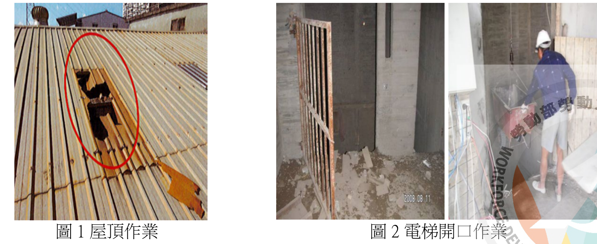
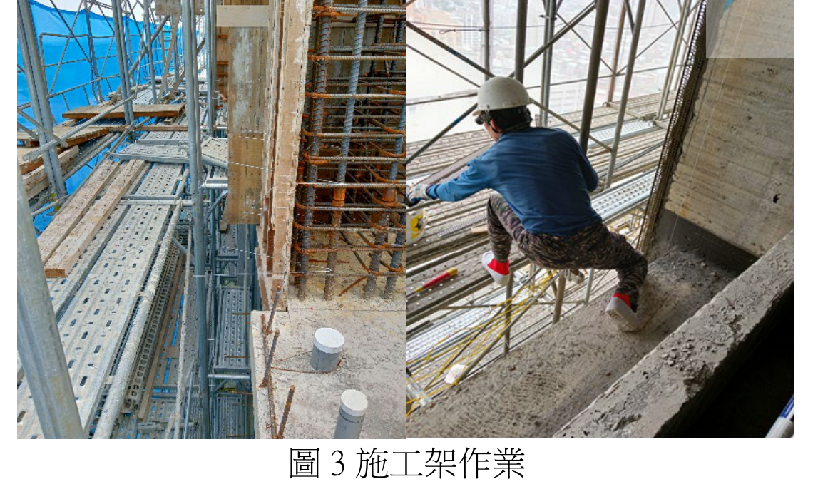
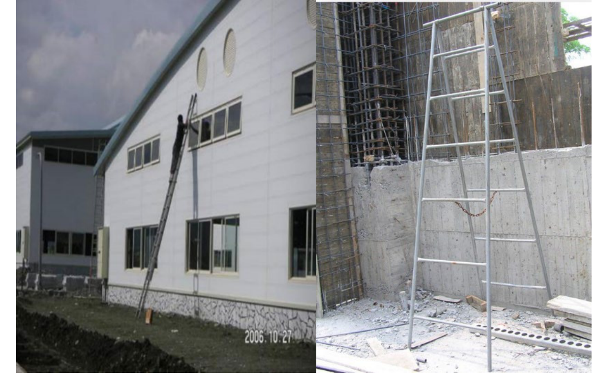
一、各圖常見不合規定事項： 〔說明：本詳解為文字轉錄，原卷所附圖1～圖4現場照片無法於本文字檔中呈現，故依營造安全衛生設施標準相關墜落防止規定，列舉各媒介物常見之不符規定情形供備考，實際作答仍應以試卷所附照片之具體缺失逐項指出。〕 1. 屋頂作業（圖1）：常見不合規定情形包括未於斜度大於34度（高底比2比3以上）或滑溜屋頂設置護欄、工作臺及適當梯子；易踏穿材料屋頂未設置寬度30公分以上踏板及下方堅固格柵或安全網；未指派屋頂作業主管於現場督導；勞工未佩掛符合規定之安全帶並掛置於堅固錨錠。 2. 電梯開口作業（圖2）：開口部分未設置護欄、護蓋或安全網等防墜設備；護蓋未能承受可能承載之重量或未防止滑脫；開口邊緣未張貼警示標誌，人員可能誤踏開口墜落。 3. 施工架作業（圖3）：施工架未設置扶手（護欄）、中欄杆及腳趾板；工作台未舖滿密接之踏板或踏板間隙過大；未設置適當之上下設備（如梯子）；架設未經施工架組配作業主管指揮監督。 4. 梯子作業（圖4）：梯子未具有堅固之構造、有腐蝕或損傷；未確實固定防止滑動或倒塌；梯子頂端未突出立足點60公分以上；使用移動梯從事作業，未有人扶持或未固定。
二、屋頂作業主管與施工架組配作業主管之設置條件： 1. 屋頂作業主管：於易踏穿材料構築之屋頂作業時，雇主應指派屋頂作業主管於現場辦理決定作業方法、實施檢點、監督個人防護具使用等事項。 2. 施工架組配作業主管：雇主對於懸吊式施工架、懸臂式施工架及高度5公尺以上施工架之組配及拆除（施工架組配）作業，應指派施工架組配作業主管於作業現場辦理相關事項。
本大題第一小題屬圖片判讀題，因原始考卷附圖無法轉錄為文字，實際應試或核對答案時務必以官方試卷所附照片為準，逐一比對護欄高度、踏板密接、開口防護、梯子固定等具體缺失作答，不宜僅套用制式條文；第二小題則為明確法條記憶題，「易踏穿材料屋頂」與「高度5公尺以上或懸吊、懸臂式施工架」為設置門檻的關鍵字。
某一混合氣體種類、爆炸上下限與體積百分比如表2，請回答與計算下列問題： 一、計算表列三種氣體之危險性指標，並由大至小排列三種氣體之危險性。（6分，需列出計算式，否則不予計分） 二、以勒沙特列定律估算混合氣體之爆炸上限與爆炸下限。（10分，需列出計算式，否則不予計分） 三、承上題，作業場所之可燃性混合氣體滯留，測得其爆炸下限為1.2%，試問依職業安全衛生法之規定，該作業場所勞工是否需採取緊急應變或立即避難？（4分，需列出計算式，否則不予計分） 表2：甲烷（爆炸下限4.7%、爆炸上限14%、混合體積百分比30%）；乙烷（爆炸下限3.0%、爆炸上限12.4%、混合體積百分比25%）；丙烷（爆炸下限2.1%、爆炸上限9.5%、混合體積百分比45%）
一、各氣體危險性指標計算與排序： 危險性指標（H）＝該氣體混合體積百分比 ÷ 該氣體爆炸下限： - 甲烷：H＝30／4.7＝6.38 - 乙烷：H＝25／3.0＝8.33 - 丙烷：H＝45／2.1＝21.43 危險性由大至小排列：丙烷（21.43）＞乙烷（8.33）＞甲烷（6.38）。 丙烷之混合比例高、爆炸下限最低，故危險性指標最高，為本混合氣體中風險最高的成分。
二、勒沙特列定律估算混合氣體爆炸上下限： 勒沙特列公式：混合氣體爆炸下限（或上限）＝100 ÷ Σ(Ci／Li)，其中Ci為各成分體積百分比、Li為該成分之爆炸下限（或上限）。
爆炸下限計算： Σ(Ci/LEL_i) ＝ 30/4.7 ＋ 25/3.0 ＋ 45/2.1 ＝ 6.383 ＋ 8.333 ＋ 21.429 ＝ 36.145 混合氣體爆炸下限 ＝ 100 ／ 36.145 ≈ 2.77%
爆炸上限計算： Σ(Ci/UEL_i) ＝ 30/14 ＋ 25/12.4 ＋ 45/9.5 ＝ 2.143 ＋ 2.016 ＋ 4.737 ＝ 8.896 混合氣體爆炸上限 ＝ 100 ／ 8.896 ≈ 11.24%
三、是否應採取緊急應變或立即避難之判斷： 依職業安全衛生設施規則規定，作業場所有易燃液體之蒸氣、可燃性氣體滯留而有爆炸、火災之虞者，蒸氣或氣體之濃度達爆炸下限值之30%以上時，應即刻使勞工退避至安全場所，並停止使用煙火及其他為點火源之虞之機具，並應加強通風。 判斷基準值＝混合氣體爆炸下限（第二小題已求得2.77%）×30% ＝ 2.77% × 0.3 ≈ 0.83%。 本題作業場所實測滯留濃度為1.2%，1.2% ＞ 0.83%，已超過爆炸下限值之30%，故該作業場所勞工應即刻退避至安全場所，並停止使用煙火等點火源、加強通風，屬應採取緊急應變、立即避難之情形。
本題為典型計算大題，危險性指標（H＝Ci/LELi）與勒沙特列混合氣體爆炸界限公式（100/Σ(Ci/Li)）為必背公式；第三小題判斷基準是「達爆炸下限值之30%以上」而非「達30%濃度」，作答時應先求出混合氣體實際爆炸下限（2.77%）之30%作為門檻值（約0.83%），再與現場實測濃度（1.2%）比較，不可直接以30%作為絕對濃度門檻，此為常見誤解。
⚠️ 本詳解為 AI 彙整之參考擬答，非官方標準答案；法規內容以最新公告版本為準。
如果你是事業單位的職業安全衛生管理人員，回答下列問題： 一、依據職業安全衛生法規定，事業單位有那兩種工作場所之一，應依中央主管機關規定之期限，定期實施製程安全評估，並製作製程安全評估報告及採取必要之預防措施；製程修改時，亦同？（4分） 二、依據製程安全評估定期實施辦法規定，何謂「製程安全評估」？何謂「製程修改」？（各2分，共4分） 三、承上，對製程化學品、技術、設備、操作程序及影響製程之設施之變更，須執行變更管理，有關變更管理其內容包含那些事項？（12分）
一、應定期實施製程安全評估之兩種工作場所： 依職業安全衛生法第15條，有下列情事之一之工作場所，事業單位應依中央主管機關規定之期限，定期實施製程安全評估，並製作製程安全評估報告及採取必要之預防措施；製程修改時，亦同： 1. 從事石油裂解之石化工業。 2. 從事製造、處置或使用危害性之化學品，數量達中央主管機關規定量以上。
二、名詞定義： - 製程安全評估：指利用結構化、系統化方式，辨識、分析工作場所潛在危害，而採取必要預防措施之評估。 - 製程修改：指前述工作場所既有安全防護措施未能控制新潛在危害之製程化學品、技術、設備、操作程序或規模之變更。
三、變更管理內容應包含事項： 依製程安全評估定期實施辦法，事業單位實施製程安全評估（含製程修改時）應就變更管理項目記錄，其內容應包含： 1. 變更之技術依據（如變更之化學品、技術、設備、操作程序或規模等具體內容）。 2. 變更對安全衛生之影響評估（如是否產生新的潛在危害、對既有防護措施是否足以控制）。 3. 因應變更所需採行之作業程序、操作程序或標準作業程序之修正。 4. 變更所需之施工或執行期間、暫時性安全措施。 5. 變更之核准程序及權責人員（含實施前之審查、核准）。 6. 相關人員之教育訓練（使受影響之勞工充分知悉變更內容並完成必要訓練）。 7. 圖說、操作手冊、安全資料表等文件之同步更新。 8. 變更完成後之確認及紀錄留存。
本題第一、二小題屬法規定義背誦題，第三小題「變更管理」之具體項目在辦法附表中以表格呈現，答題時應掌握變更管理（Management of Change, MOC）的核心精神——任何偏離原設計或操作基準之變更，均須經評估、核准、教育訓練及文件更新程序，避免僅列出片段項目而遺漏「核准程序」與「文件更新」等管理面向。
為防止感電災害，請依職業安全衛生設施規則規定，回答下列問題： 一、為避免漏電而發生感電危害，應依那3項狀況，於各該電動機具設備之連接電路上設置適合其規格，具有高敏感度、高速型，能確實動作之防止感電用漏電斷路器？（各2分，共6分） 二、對於電路開路後從事該電路、該電路支持物、或接近該電路工作物之敷設、建造、檢查、修理、油漆等作業時，應於確認電路開路後，就該電路採取那4項設施？（各2分，共8分） 三、使勞工從事高壓電路之檢查、修理等活線作業時，應有那些設施？（需寫出3項）（各2分，共6分）
一、應設置漏電斷路器之3項狀況： 1. 使用對地電壓在150伏特以上移動式或攜帶式電動機具。 2. 於含水或被其他導電度高之液體濕潤之潮濕場所、金屬板上或鋼架上等導電性良好場所使用移動式或攜帶式電動機具。 3. 於建築或工程作業使用之臨時用電設備。
二、電路開路後應採取之4項設施： 1. 開路之開關於作業中，應上鎖或標示「禁止送電」、「停電作業中」或設置監視人員監視之。 2. 開路後之電路如含有電力電纜、電力電容器等致電路有殘留電荷引起危害之虞，應以安全方法確實放電。 3. 開路後之電路藉放電消除殘留電荷後，應以檢電器具檢查，確認其已停電，且為防止該停電電路與其他電路之混觸、或因其他電路之感應、或其他電源之逆送電引起感電之危害，應使用短路接地器具確實短路，並加接地。 4. 前款停電作業範圍如為發電或變電設備或開關場之一部分時，應將該停電作業範圍以藍帶或網加圍，並懸掛「停電作業區」標誌；有電部分則以紅帶或網加圍，並懸掛「有電危險區」標誌，以資警示。 （作業終了送電時，應事先確認從事作業勞工無感電之虞，並於拆除短路接地器具與紅藍帶或網及標誌後為之。）
三、高壓電路活線作業應有之設施（任舉3項之一）： 雇主使勞工從事高壓電路之檢查、修理等活線作業時，應有下列設施之一： 1. 使作業勞工戴用絕緣用防護具，並於有接觸或接近該電路部分設置絕緣用防護裝備。 2. 使作業勞工使用活線作業用器具。 3. 使作業勞工使用活線作業用絕緣工作臺及其他裝備，並不得使勞工之身體或其使用中之工具、材料等導電體接觸或接近有使勞工感電之虞之電路或帶電體。
本題為職業安全衛生設施規則「感電防止」章節之連貫考題，須注意第三小題法條原文為「應有下列設施之一」，代表雇主僅須擇一辦理，考題要求列出3項供選擇而非同時全部履行，作答時應完整列出3個選項供閱卷比對，而非誤解為須同時具備3項設施。
請依起重升降機具安全規則規定，回答下列有關以移動式起重機吊掛搭乘設備搭載或吊升人員作業之安全防護問題： 一、雇主對於移動式起重機之使用，以吊物為限，不得乘載或吊升勞工從事作業。但從事貨櫃裝卸、船舶維修、高煙囪施工等尚無其他安全作業替代方法，或臨時性、小規模、短時間、作業性質特殊，經採取防止墜落等措施者，不在此限。請簡要列示5項前述防止墜落措施應辦理事項。（每答對1項給2分，共10分） 二、雇主對於移動式起重機吊掛搭乘設備搭載或吊升人員作業，應依據作業風險因素，事前擬訂作業方法、作業程序、安全作業標準及作業安全檢核表，使作業勞工遵行；並應指派適當人員實施作業前檢點、作業中查核及自動檢查等措施，隨時注意作業安全，相關表單紀錄於作業完成前，並應妥存備查。請簡要列示5項使用移動式起重機吊掛搭乘設備搭載或吊升人員作業時應辦理事項。（每答對1項給2分，共10分）
一、防止墜落措施應辦理事項（任舉5項）： 1. 以搭乘設備乘載或吊升勞工，並防止其翻轉及脫落。 2. 搭乘設備需設置安全母索或防墜設施，並使勞工佩戴安全帽及符合國家標準CNS 14253-1同等以上規定之全身背負式安全帶。 3. 搭乘設備之使用不得超過限載員額。 4. 搭乘設備自重加上搭乘者、積載物等之最大荷重，不得超過該起重機作業半徑所對應之額定荷重之50%。 5. 搭乘設備下降時，採動力下降之方法。 6. 垂直高度超過20公尺之高處作業，禁止使用直結式搭乘設備。但設有無線電通訊聯絡及作業監視或預防碰撞警報裝置者，不在此限。 （以上6項任列5項即符合作答要求。）
二、載人作業應辦理事項（任舉5項）： 1. 搭乘設備及懸掛裝置（含熔接、鉚接、鉸鏈等部分之施工），應妥予安全設計，並事前將其構造設計圖、強度計算書及施工圖說等，委託中央主管機關認可之專業機構簽認，其簽認效期最長2年；效期屆滿或構造有變更者，應重新簽認。 2. 起重機載人作業前，應先以預期最大荷重之荷物進行試吊測試，將測試荷物置於搭乘設備上，吊升至最大作業高度，保持5分鐘以上，確認其平衡性及安全性無異常；該起重機移動設置位置者，應重新辦理試吊測試。 3. 確認起重機所有之操作裝置、防脫裝置、安全裝置及制動裝置等，均保持功能正常；搭乘設備之本體、連接處及配件等，均無構成有害結構安全之損傷；吊索等無變形、損傷及扭結情形。 4. 起重機作業時，應置於水平堅硬之地盤面；具有外伸撐座者，應全部伸出。 5. 起重機載人作業進行期間，不得走行；進行升降動作時，勞工位於搭乘設備內者，身體不得伸出箱外。 （另有「應採低速及穩定方式運轉」「應指派指揮人員負責指揮」2項，共計7項任列5項即符合作答要求。）
本題兩小題法條項目相近但層次不同，第一小題屬「例外許可載人作業前提下之防墜措施」（第35條），第二小題屬「載人作業實際執行時之作業管理事項」（第38條），兩者常被考生混答，作答時應區分「防墜落設備要求」與「作業程序管理要求」兩個層次分別列點。
113年為營造業墜落打擊年，請依營造安全衛生設施標準規定，回答下列問題： 一、對於高度二公尺以上之工作場所，勞工作業有墜落之虞者，應訂定墜落災害防止計畫，依風險控制之先後順序規劃，並採取適當墜落災害防止設施。請依序列出8項前述風險控制之設備或措施。（各2分，共16分） 二、對於新建、增建、改建或修建工廠之鋼構屋頂，勞工有遭受墜落危險之虞者，應依那2項規定辦理？（各2分，共4分）
一、墜落災害防止計畫8項風險控制先後順序： 1. 經由設計或工法之選擇，儘量使勞工於地面完成作業，減少高處作業項目。 2. 經由施工程序之變更，優先施作永久構造物之上下設備或防墜設施。 3. 設置護欄、護蓋。 4. 張掛安全網。 5. 使勞工佩掛安全帶。 6. 設置警示線系統。 7. 限制作業人員進入管制區。 8. 對於因開放邊線、組模作業、收尾作業等及採取前5款規定之設施致增加其作業危險者，應訂定保護計畫並實施。
二、鋼構屋頂應辦理之2項規定： 1. 於邊緣及屋頂突出物頂板周圍，設置高度90公分以上之女兒牆或適當強度欄杆。 2. 於易踏穿材料構築之屋頂，應於屋頂頂面設置適當強度且寬度在30公分以上通道，並於屋頂採光範圍下方裝設堅固格柵。
本題與第2梯次考題重複度高，屬113年營造業墜落打擊年之重點宣導條文，第17條8項務必依風險控制之優先順序（消除、工程控制、防墜設備、行政管制）依序作答，切勿顛倒順序或漏列第8款「保護計畫」（易被忽略之收尾項目）。
某工廠使用氨作為原料，回答下列問題： 一、依職業安全衛生設施規則規定，對於毒性高壓氣體之使用，除一般高壓氣體、可燃性高壓氣體等之使用應注意事項外，應再注意那些事項或有那些使用規定？（8分） 二、依據氨氣之安全資料表，其8小時日時量平均容許濃度（TWA）為50ppm，短時間時量平均容許濃度（STEL）為75ppm，立即致生命或健康危害濃度（IDLH）為300ppm，爆炸界限為15.4%~30%，依高壓氣體勞工安全規則相關基準，請問欲設置之氣體洩漏檢知警報設備，其設置於室內警報設定值應為多少ppm以下？（2分） 三、廠內液化氣體儲存設備，其內容積為10立方公尺，若液氨常用溫度之比重為0.7，請計算該儲存設備儲存能力為多少公斤？（4分） 四、若該場所使用泵浦輸送壓力4kg/cm2之液氨，其輸液量為10公升/分鐘，假設0℃時液氨比重為0.638，標準狀態下之體積為22.4m3/kg-mole，氨分子量為17，請計算每日氣體處理能力並說明是否符合「危險性工作場所審查及檢查辦法」規定之丙類危險性工作場所（未說明理由者不予計分）？（各3分，共6分）
一、毒性高壓氣體使用應注意事項： 依職業安全衛生設施規則規定，雇主對於毒性高壓氣體之使用，應依下列規定辦理： 1. 非對該氣體有實地瞭解之人員，不准進入。 2. 工作場所空氣中之毒性氣體濃度不得超過容許濃度。 3. 工作場所置備充分及適用之防護具。 4. 使用毒性氣體場所，應保持通風良好。
二、室內警報設定值： 氣體洩漏檢知警報設備之警報設定值，實務上應以不超過該氣體之容許濃度（8小時日時量平均容許濃度TWA）為原則，本題氨氣TWA為50ppm，故室內警報設定值應設為50ppm以下，以確保於濃度尚未達勞工可容許暴露上限前即發出警報，使勞工得以及早採取應變措施。
三、儲存能力計算： 依高壓氣體勞工安全規則第18條，液化氣體儲存設備之儲存能力計算式為：W＝0.9×w×V2 （W：儲存能力，單位公斤；w：常用溫度時液化氣體之比重，單位公斤/公升；V2：儲存設備內容積，單位公升） 內容積10立方公尺＝10,000公升，比重0.7 kg/L： W ＝ 0.9 × 0.7 × 10,000 ＝ 6,300公斤
四、每日氣體處理能力計算與丙類危險性工作場所判定： 依高壓氣體勞工安全規則第19條，處理能力係指處理設備一日可處理之氣體容積，換算於溫度攝氏零度、壓力為每平方公分零公斤狀態時之容積值。 計算步驟： 1. 每分鐘輸液質量：10公升/分鐘 × 0.638公斤/公升 ＝ 6.38公斤/分鐘 2. 換算莫耳數：6.38公斤/分鐘 ÷ 17公斤/kg-mole ＝ 0.3753 kg-mole/分鐘 3. 換算標準狀態氣體體積：0.3753 kg-mole/分鐘 × 22.4立方公尺/kg-mole ＝ 8.406立方公尺/分鐘 4. 每日處理能力：8.406立方公尺/分鐘 × 1,440分鐘/日 ＝ 約12,105立方公尺/日
丙類危險性工作場所判定：依危險性工作場所審查及檢查辦法第2條，丙類工作場所之高壓氣體類壓力容器處理能力門檻為：（一）氧氣、有毒性及可燃性高壓氣體達1,000立方公尺以上者；（二）前款以外之高壓氣體達5,000立方公尺以上者。氨氣屬毒性且具可燃性之高壓氣體，適用第（一）款1,000立方公尺門檻。本場所每日處理能力約12,105立方公尺，遠超過1,000立方公尺，故本工作場所符合丙類危險性工作場所之規定，依同辦法第4條，事業單位應於使勞工作業45日前向檢查機構申請審查及檢查。
第二小題「室內警報設定值」法規未有逐字明文之數值公式，係依容許濃度（TWA）為設定基準之實務判斷，非直接查得法條數字，作答時宜以「不超過容許濃度」之原則說明並代入題目TWA值即可，避免臆造不存在的條文依據。第四小題計算之關鍵在於處理能力定義為「換算於0℃、錶壓0kg/cm²狀態之容積」，故題目所給之輸送壓力4kg/cm²於本公式中不直接代入運算（僅為情境敘述、非計算變數），常見失分為誤將壓力值套入公式進行加壓修正。
⚠️ 本詳解為 AI 彙整之參考擬答，非官方標準答案；法規內容以最新公告版本為準。
請就職業安全衛生管理辦法規定及職業安全衛生管理系統，回答下列問題： 一、職業安全衛生管理辦法規定雇主應訂定職業安全衛生管理計畫，並據以執行；但事業單位具何種規模、性質或具何種工作場所者，應另依國家標準CNS 45001同等以上規定，建置適合該事業單位之職業安全衛生管理系統。（4分） 二、承第一小題，如有一事業單位已取得ISO 45001之驗證合格證書，是否一定符合法令規定？若否，請說明原因。（1分） 三、在規劃建置職業安全衛生管理系統時需進行風險辨識及風險評估，請列舉5種定性風險分析方法。（5分） 四、承第三小題，針對上述評估結果如有不可接受之風險事項，應採行降低風險的控制措施，請依優先順序列舉5項控制措施，並以墜落危害為例，分別舉例相對應措施各1項。（10分）
一、依職業安全衛生管理辦法第12條之2規定，下列事業單位應另依CNS 45001同等以上規定建置職業安全衛生管理系統：（一）第一類事業勞工人數在200人以上者。（二）第二類事業勞工人數在500人以上者。（三）有從事石油裂解之石化工業工作場所者。（四）有從事製造、處置或使用危害性化學品，數量達中央主管機關規定量以上之工作場所者。
二、否。ISO 45001為國際自願性驗證標準，驗證機構依國際稽核準則審查管理系統之建置與運作是否符合ISO 45001條文架構，其審查範圍未必涵蓋我國職業安全衛生法令之全部強制性規定（如在地特別法規、危害性化學品分級管理、承攬管理等本國法定義務）。故取得ISO 45001證書僅代表管理系統符合國際標準精神，不當然等同於完全符合國內法令要求，雇主仍應逐項檢視、落實國內法規義務。
三、定性風險分析方法可列舉5種：（一）檢核表法（Checklist）。（二）如果－結果分析法（What-If Analysis）。（三）初步危害分析法（PHA）。（四）危害及可操作性分析法（HAZOP）。（五）工作安全分析法（JSA）。
四、依風險控制之階層原則，由高至低5項控制措施，並各舉墜落危害對應措施： （一）消除：經由設計或工法選擇，儘量使勞工於地面完成作業，減少高處作業項目（如地面預組裝、預鑄工法後整體吊裝）。 （二）取代：以較低風險之施工程序或工法取代原高風險作業方式（如優先施作永久構造物之上下設備或防墜設施，取代臨時性高處作業）。 （三）工程控制：設置護欄、護蓋、安全網等物理性防護設施。 （四）管理控制：建立高處作業許可與人力調整制度、限制作業人員資格、實施作業前教育訓練與檢點。 （五）個人防護具：使勞工佩掛安全帶並確實掛勾於安全母索或錨錠點。
本題核心在於管理系統建置門檻的4項條件是否記熟、ISO驗證與法令符合性的區辨，以及風險控制5階層（消除－取代－工程－管理－PPE）與墜落危害實例的對應，是歷屆常考的框架整合題，考生常見失分在漏列第3、4項門檻條件與控制措施優先順序顛倒。
某一化工廠，規劃設置鍋爐及壓力容器等設備，請依「鍋爐及壓力容器安全規則」、「危險性機械及設備安全檢查規則」等規定，回答下列問題： 一、第一種壓力容器係指合於那4種規定者？（各2分，共8分） 二、某一壓力容器其內容積為0.1 m³、常用壓力為2 kg/cm²、最高使用壓力（設計壓力）為4 kg/cm²，如果該壓力容器設置2具安全閥，請說明2具安全閥各應調整最高在多少吹洩壓力以下？（4分） 三、承第二小題壓力容器，如屬第一種壓力容器，是否屬職業安全衛生法第16條所稱具有危險性之設備？（4分，未說明理由不給分） 四、承第二小題壓力容器，如內容物改灌裝在常用溫度下，壓力2 kg/cm²液化高壓氣體之製造（含與製造相關之儲存）設備，是否屬職業安全衛生法第16條所稱具有危險性之設備？（4分，未說明理由不給分）
一、第一種壓力容器係指合於下列4種規定之一者：（一）接受外來蒸汽或其他熱媒，或使容器內產生蒸氣以加熱固體或液體之容器，且容器內壓力超過大氣壓者。（二）因容器內化學反應、核子反應或其他反應而產生蒸氣之容器，且壓力超過大氣壓者。（三）為分離容器內液體成分而加熱該液體使產生蒸氣之容器，且壓力超過大氣壓者。（四）除前三目外，保存溫度超過其在大氣壓下沸點之液體之容器。
二、依鍋爐及壓力容器安全規則第30條規定，安全閥應調整於最高使用壓力以下吹洩；設2具以上安全閥者，其中至少1具應調整於最高使用壓力（4 kg/cm²）以下吹洩，另1具可調整於超過最高使用壓力至最高使用壓力之1.03倍（4×1.03＝4.12 kg/cm²）以下吹洩。經檢查後，應予固定設定壓力，不得變動。
三、屬於。該壓力容器內容積0.1 m³＞0.04 m³，且最高使用壓力4 kg/cm²＞1 kg/cm²，不符合鍋爐及壓力容器安全規則第5條所定小型壓力容器之排除條件，故屬應實施型式檢查、竣工檢查、定期檢查等之第一種壓力容器，為職業安全衛生法第16條所稱經中央主管機關指定具有危險性之設備，非經檢查合格不得使用。
四、屬於。常用溫度下、壓力2 kg/cm²液化高壓氣體之製造（含相關儲存）設備，其屬性已非鍋爐及壓力容器安全規則所規範之壓力容器，而歸屬高壓氣體類特定設備／高壓氣體設備範疇，依危險性機械及設備安全檢查規則規範，仍為中央主管機關指定之危險性設備，故同屬職業安全衛生法第16條所稱應經檢查合格始得使用之設備，惟其檢查應依循高壓氣體相關法規（高壓氣體勞工安全規則）辦理，而非依鍋爐及壓力容器安全規則辦理。
需精確背誦第一種壓力容器4款定義文字、安全閥吹洩壓力計算（含1.03倍安全係數換算）、並清楚辨別第16條「危險性設備」同時涵蓋鍋爐、壓力容器與高壓氣體設備等不同類別，常見失分為誤將液化高壓氣體設備排除在危險性設備之外，或漏算1.03倍係數。
勞工於職場上遭受主管或同事利用職務或地位上的優勢予以不當之對待，或遭受顧客、服務對象、其他相關人士之肢體攻擊、言語侮辱、恐嚇、威脅等霸凌或暴力事件，致發生精神或身體上的傷害，甚而危及性命等。此等不當行為，對於受害之勞工不僅涉及安全健康、人權問題，也涉及組織效率問題，進而影響國家整體經濟發展，此類受國際關注之職場暴力危害被歸類為「社會環境因子引起之心理危害（Psychosocial Factors）」（以下簡稱社會心理危害）。在國際間，職場暴力被視為社會心理危害之主要因子，多數國家於雇主之一般責任（General Duty）規定下，將職場暴力之預防以指引、原則或行動方案推動，並鼓勵企業發展相關預防措施。請回答下列問題： 一、依職業安全衛生設施規則第324條之3規定，雇主為預防勞工於執行職務，因他人行為致遭受身體或精神上不法侵害，應採取那些預防措施？（16分） 二、承第一小題，建構行為規範，於組織層次上可以如何進行，並簡述其內容。（4分）
一、依職業安全衛生設施規則第324條之3規定，雇主為預防勞工於執行職務，因他人行為致遭受身體或精神上不法侵害，應採取下列暴力預防措施，作成執行紀錄並留存3年：（一）辨識及評估危害。（二）適當配置作業場所。（三）依工作適性適當調整人力。（四）建構行為規範。（五）辦理危害預防及溝通技巧訓練。（六）建立事件之處理程序。（七）執行成效之評估及改善。（八）其他有關安全衛生事項。事業單位勞工人數達100人以上者，雇主應依勞工執行職務之風險特性，參照中央主管機關公告之相關指引，訂定執行職務遭受不法侵害預防計畫，並據以執行；於勞工人數未達100人者，得以執行紀錄或文件代替。
二、建構行為規範，於組織層次上可訂定書面之職場不法侵害防治政策與行為守則，明確宣示雇主禁止職場暴力、霸凌及性騷擾之立場，內容應包括：（一）可容忍與不可容忍行為之具體界定（如何謂肢體攻擊、言語侮辱、恐嚇威脅）。（二）違反規範者之懲處機制。（三）事件申訴、通報與處理管道。（四）對受害勞工之保護、保密及協助措施。並透過教育訓練、公告等方式使全體員工周知遵循，落實由上而下之組織文化承諾。
本題為近年熱門考點，須完整列滿8項預防措施（含第八款「其他有關安全衛生事項」概括規定）及100人門檻之差別處理方式，行為規範之組織層次作法則需結合政策宣示、申訴機制、懲處與保護措施等實務內容作答，避免僅重複條文文字而未展開說明。
營造工地欲採用安全網或覆網以防止墜落、物體飛落災害發生，請依據營造安全衛生設施標準，回答以下問題： 一、安全網之材料、強度、檢驗及張掛方式，應符合的國家標準有那些？（4分） 二、勞工工作面至安全網架設平面之攔截高度，鋼構組配作業高度不得超過多少層樓或多少公尺？其餘作業，不得超過多少公尺？（各2分，共4分） 三、高處位能超過多少公斤‧公尺之物件有飛落之虞者應予固定？（2分） 四、採設置覆網者，方形、菱形之網目任一邊長不得大於多少公分？其餘形狀之網目，每一網目不得大於多少平方公分？（各2分，共4分） 五、覆網下之最低點應離作業勞工工作平面多少公尺以上？（2分） 六、覆網強度應能承受直徑45公分、重量多少公斤之物體？自高度多少公尺處落下之衝擊力？（各2分，共4分）
一、依營造安全衛生設施標準第22條規定，安全網之材料、強度、檢驗及張掛方式，應符合下列國家標準規定之一：（一）CNS 14252。（二）CNS 16079-1及CNS 16079-2。
二、依同標準第22條規定，工作面至安全網架設平面之攔截高度，不得超過7公尺，但鋼構組配作業得依第151條規定辦理；依第151條規定，未使用施工架而落距差超過2層樓或7.5公尺以上者，應張設安全網。故鋼構組配作業攔截高度不得超過2層樓或7.5公尺；其餘作業，攔截高度不得超過7公尺。
三、依同標準第26條規定，雇主對於置放於高處，位能超過12公斤‧公尺之物件有飛落之虞者，應予以固定之。
四、依同標準第27條規定，覆網之方形、菱形網目任一邊長不得大於2公分，其餘形狀之網目，每一網目不得大於4平方公尺（原文為4平方公分）。
五、依同標準第27條規定，覆網下之最低點應離作業勞工工作平面3公尺以上，如其距離不足3公尺，應改以其他設施防護。
六、依同標準第27條規定，覆網強度應能承受直徑45公分、重75公斤之物體，自高度1公尺處落下之衝擊力。
本題數字規定密集（7公尺／2層樓或7.5公尺／12公斤‧公尺／2公分／4平方公分／3公尺／45公分75公斤1公尺），須逐項精準記憶不可混淆，是術科計分題型常見送分題，也是最容易因數字誤植而失分之處，尤其安全網一般攔截高度（7公尺）與鋼構組配特別規定（2層樓或7.5公尺）易被混淆。
計算與回答下列問題： 一、若乙醇（C2H5OH）完全燃燒之化學式為a C2H5OH+b O2 → c CO2+d H2O，該化學式中a，b，c，d為簡單之整數比，求a，b，c，d之最簡單整數。（4分） 二、乙醇（C2H5OH）經完全燃燒後之產物為二氧化碳（CO2）與水（H2O），若空氣中氧含量為21%，求乙醇（C2H5OH）之理論混合比值（Cst）。（8分） 三、依Jone's理論，可燃性物質之爆炸下限為理論混合比值（Cst）之0.55倍，試求乙醇之爆炸下限（%）。（4分） 四、若乙醇（C2H5OH）之爆炸上限為19%，求其危險性指數（答案採計至小數點以後取兩位，第三位以後四捨五入）。（4分）
一、依碳、氫、氧原子數平衡：C：2a＝c；H：6a＝2d，故d＝3a；O：a＋2b＝2c＋d＝4a＋3a＝7a，故b＝3a。取a＝1之最簡單整數比：a＝1，b＝3，c＝2，d＝3，即C2H5OH＋3O2→2CO2＋3H2O。
二、完全燃燒1莫耳乙醇需3莫耳O2（即n＝3）；空氣中氧含量21%，故所需空氣莫耳數＝3／0.21＝14.286莫耳。理論混合比值Cst＝燃料莫耳數／（燃料莫耳數＋空氣莫耳數）×100%＝1／（1＋14.286）×100%＝1／15.286×100%≈6.54%。
三、依Jones理論，爆炸下限（LEL）＝0.55×Cst＝0.55×6.54%≈3.60%。
四、危險性指數H＝（UEL－LEL）／LEL＝（19%－3.60%）／3.60%＝15.40／3.60≈4.28。
本題屬連鎖計算題，前一小題結果為後續小題之計算基礎，任一步驟計算錯誤將導致後續全錯。考生應先配平化學反應式確認係數，再依序代入Cst、LEL、危險性指數公式，並依題目指定精度（取至小數點後兩位、第三位四捨五入）計算，避免提前四捨五入累積誤差。
⚠️ 本詳解為 AI 彙整之參考擬答，非官方標準答案；法規內容以最新公告版本為準。
請依製程安全評估定期實施辦法規定回答下列問題： 一、製程安全資訊是執行製程安全評估之基本資料，依製程安全評估定期實施辦法規定，在執行製程安全評估之前，應先建立書面的製程安全資訊，其內容應包括製程化學物質危害性、製程技術及製程設備之相關資料。請分別各列舉3項相關資料。（9分） 二、某煉油廠之熱交換器焊接處，因受到嚴重高溫氫攻擊（High Temperature Hydrogen Attack）而破裂致發生洩漏。 (一)何謂高溫氫攻擊？（1分） (二)依製程安全評估定期實施辦法第4條規定之製程安全評估事項，前述事故請就其中有關製程安全資訊、製程危害控制措施、標準作業程序、機械完整性及符合性稽核等5個面向，分別各舉例1項可能的缺失。（10分）
一、製程安全資訊應包括製程化學物質危害性、製程技術及製程設備等相關資料，各列舉3項： 製程化學物質危害性資料：（1）危害性化學品清單及安全資料表（SDS）。（2）物質之毒性、可燃性、反應性等物化危害特性資料。（3）容許暴露標準等健康危害限值資料。 製程技術資料：（1）製程流程圖（PFD）。（2）製程化學反應原理及製程說明。（3）最大存量及安全操作界限（如溫度、壓力、流量上下限）。 製程設備資料：（1）設備規格及材質資料。（2）配管及儀器圖（P&ID）。（3）電氣分類、危險區域劃分及通風系統設計資料。
二、(一) 高溫氫攻擊係指在高溫高壓環境下，氫原子滲入碳鋼或低合金鋼材質內部，與鋼中之碳化物反應生成甲烷氣體，聚積於晶界形成微裂紋，造成材料脫碳、內部裂紋擴展及強度劣化，長期作用可能導致設備破裂洩漏。
(二) 5個面向各舉例1項可能缺失： 1.製程安全資訊：未建立或未即時更新設備材質於高溫氫環境下之耐蝕限度資料（如選用依據）。 2.製程危害控制措施：未針對高溫氫攻擊風險評估設備材質升級或加裝監測儀器等控制對策。 3.標準作業程序：未訂定或未落實熱交換器高溫高壓操作及異常處置之標準作業程序。 4.機械完整性：未依計畫對熱交換器焊道實施定期檢測（如超音波測厚、金相檢驗）以掌握材質劣化狀況。 5.符合性稽核：未依規定定期稽核前述製程安全資訊、控制措施及機械完整性之執行情形，致缺失未能及早發現改正。
第一小題須掌握「化學物質危害性／製程技術／製程設備」三大類製程安全資訊之典型內容；第二小題須理解高溫氫攻擊之腐蝕機制，並能將單一事故對應到製程安全資訊、危害控制措施、標準作業程序、機械完整性、符合性稽核等5個管理面向各自舉出具體缺失，考驗考生對製程安全管理13大要素之整體理解，而非單純背誦條文。
機械設備切割夾捲事故時有所聞，依據製造業職業傷害給付人次統計（依傷害類型）顯示，切割夾捲約佔7成，金屬製品製造業常使用的衝剪機械更是常見的災害媒介物，請依職業安全衛生設施規則的規定回答下列問題： 一、事業單位設置衝剪機械5台以上時，應指定作業管理人員負責執行相關職務，請列出規定的4項職務。（各2分，共8分） 二、調整衝剪機械之金屬模使滑塊等動作時，請針對有無具有寸動機構或滑塊調整裝置者，分別說明如何調整。（4分） 三、對勞工從事動力衝剪機械金屬模之安裝、拆模、調整及試模時，為防止滑塊等突降之危害應使勞工使用那些裝置？（請列舉2種）（4分） 四、另依機械設備器具安全標準規定，衝剪機械如使用雙手操作式安全裝置（安全一行程式安全裝置、雙手起動式安全裝置），請分別說明其應有之機能為何？（4分）
一、依職業安全衛生設施規則第72條規定，事業單位設置衝剪機械5台以上者，應指定作業管理人員負責執行下列4項職務：（一）檢查衝壓機械及其安全裝置。（二）發現衝剪機械及其安全裝置有異狀時，應即採取必要措施。（三）衝剪機械及其安全裝置裝設有鎖式換回開關時，應保管其鎖匙。（四）直接指揮金屬模之裝置、拆卸及調整作業。
二、依同規則第70條規定：具有寸動機構或滑塊調整裝置者，應採用寸動方式調整；未具寸動機構者，應切斷衝剪機械之動力電源，於飛輪等之旋轉停止後，用手旋動飛輪調整之。
三、依同規則第69條規定，應使勞工使用安全塊、安全插梢或安全開關鎖匙等之裝置（列舉2種即可，如安全塊、安全插梢）。
四、依機械設備器具安全標準第6條規定：（一）安全一行程式安全裝置，其機能為在手指按下起動按鈕、操作控制桿或操作其他控制裝置後，脫手後至該手達到危險界限前，能使滑塊等停止動作。（二）雙手起動式安全裝置，其機能為以雙手作動操作部，於滑塊等閉合動作中，手離開操作部時使手無法達到危險界限（即手離開後滑塊已可達下死點，但手已離開危險界限而不受夾捲）。
衝剪機械為切割夾捲職災大宗，考點集中在管理人員法定職務、金屬模調整之「寸動或切斷電源」二分法、防突降裝置種類，以及雙手操作安全裝置機能之精確定義（安全一行程式著重「動作中脫手即停」；雙手起動式著重「離手後手已離開危險界限」的機構原理不同），是實務操作導向之考點。
我國天然氣99%依賴進口，為確保國內天然氣供應穩定，臺灣現有2座液化天然氣（LNG）接收站，依目前新（擴）建接收站規劃，未來將有多座LNG接收站。液化天然氣貯藏於絕熱儲槽，為於國內依合約約定採用國外標準設計、製造之危險性設備，將採用該國外標準實施檢查。勞動部依危險性機械及設備安全檢查規則第6條第3項規定，為建立國外危險性機械及設備檢查標準（以下簡稱國外標準）之指定作業處理程序，訂定「指定國外危險性機械及設備檢查標準處理作業要點」事業單位申請國外標準之指定時，應敘明擬採用國外標準之理由，並檢附擬申請指定之現行版國外標準中文、外文全文對照或英文全文、國外標準與國內標準之相異規定或特殊規定之說明等文件資料，於申請期間向勞動部提出申請。然對於構造或安裝方式特殊之地下式液化天然氣儲槽、混凝土製外槽與鋼製內槽之液化天然氣雙重槽、覆土式儲槽等，回答下列問題： 一、事業單位依危險性機械及設備安全檢查規則第6條第4項，應於事前辦理那些事項，並將風險評估報告送勞動部職業安全衛生署審查，非經審查通過及確認檢查規範，不得申請各項檢查？（12分） 二、前述風險評估報告中如有滾動（Roll-over）現象，致短時間內沸騰產生大量氣體，自安全閥排放至大氣，出現可能因著火而引起火災爆炸之危險現象。試說明滾動現象之成因？（4分） 三、若接收站設有天然氣廠，將液化天然氣儲槽中液化天然氣經流體輸送至氣化器，利用海水換熱氣化輸送至長途管路，請問該天然氣廠為那類危險性工作場所？（4分）
一、依危險性機械及設備安全檢查規則第6條規定，構造或安裝方式特殊之地下式LNG儲槽、混凝土製外槽與鋼製內槽之LNG雙重槽、覆土式儲槽等，事業單位應於事前辦理下列事項，並將風險評估報告送中央主管機關審查，非經審查通過及確認檢查規範，不得申請各項檢查：（一）風險評估報告審查時，應提供規劃設計考量要項、實施檢查擬採規範及承諾之風險承擔文件。（二）風險評估報告及風險控制對策，應經設計者、製造者簽認。（三）風險評估報告之內容，應包括風險情境描述、量化風險評估、評估結果、風險控制對策及承諾之風險控制措施。
二、滾動（Roll-over）現象之成因：LNG儲存期間，儲槽內不同密度、不同組成之液化天然氣分層堆疊（上層密度較低、下層密度較高），底層因外界熱傳入而逐漸升溫膨脹、密度降低並趨近上層密度時，儲槽內液體會發生突發性上下翻轉混合，使原本被上層液體覆蓋、蓄積於底層之熱能瞬間釋出，造成短時間內大量蒸發氣體產生，導致槽內壓力驟升，經安全閥大量排放至大氣。
三、屬丙類危險性工作場所。該天然氣廠將LNG經流體輸送至氣化器，並以海水換熱氣化後輸送至長途管路，其氣化流程涉及高壓氣體類壓力容器（可燃性高壓氣體）之處理，其處理能力通常達危險性工作場所審查及檢查辦法第2條所定1,000立方公尺以上可燃性高壓氣體之規模，故屬丙類危險性工作場所。
本題結合LNG接收站國外標準指定制度、滾動現象工程原理及危險性工作場所分類三個面向。滾動現象非法規條文而屬工程機制說明，作答應掌握「密度分層→底層增溫→密度趨近→瞬間翻轉→蒸氣驟增」之因果鏈；丙類工作場所判斷則須熟記甲／乙／丙／丁各類工作場所之量化門檻，避免與甲類（石油裂解石化工業）混淆。
依據勞動檢查法第26條規定，危險性工作場所，非經勞動檢查機構審查或檢查合格，事業單位不得使勞工在該場所作業，再據危險性工作場所審查及檢查辦法規範之「丁類」工作場所，除「採用壓氣施工作業之工程」外，還有那5種類型工程？（每項4分，共20分）
依勞動檢查法第26條規定，危險性工作場所非經勞動檢查機構審查或檢查合格，事業單位不得使勞工在該場所作業；依危險性工作場所審查及檢查辦法第2條第4款規定，丁類工作場所除「採用壓氣施工作業之工程」外，尚包括下列5種營造工程： （一）建築物高度在80公尺以上之建築工程。 （二）單跨橋梁之橋墩跨距在75公尺以上，或多跨橋梁之橋墩跨距在50公尺以上之橋梁工程。 （三）長度1,000公尺以上，或需開挖15公尺以上豎坑之隧道工程。 （四）開挖深度達18公尺以上，且開挖面積達500平方公尺以上之工程。 （五）工程中模板支撐高度7公尺以上，且面積達330平方公尺以上者。
丁類工作場所之6款門檻數字（80公尺、單跨75公尺／多跨50公尺、1,000公尺或15公尺豎坑、18公尺且500平方公尺、7公尺且330平方公尺）須逐一背熟；本題已於題目排除「壓氣施工作業之工程」，作答時不可重複列出，僅需完整列出其餘5款，缺一款即扣4分。
某上市公司依職場永續健康與安全SDGs揭露實務建議指南（GRI403），揭露該公司於2024年發生之職業災害紀錄如下： 輕傷害事件（非失能傷害事件）：20件，40人次。 暫時全失能事件：1件，1人次，損失日數共4日。 永久部分失能事件：1件，1人次，兩耳在一次事故中全部失聽，損失日數共3,000日。 死亡事件：1件，2人。 若該公司員工總數為800人，一年工作50週，每週上班5日，每日工時為8小時。請計算該公司之總經歷工時、失能傷害人次數、失能傷害損失日數、失能傷害頻率（F.R.）與失能傷害嚴重率（S.R.）。（各4分，共20分）
總經歷工時＝800人×50週×5日／週×8小時／日＝1,600,000工時。
失能傷害人次數：僅計入暫時全失能、永久部分失能、永久全失能及死亡人次，輕傷害（非失能傷害事件）不計入失能傷害統計。故失能傷害人次數＝暫時全失能1人次＋永久部分失能1人次＋死亡2人次＝4人次。
失能傷害損失日數：暫時全失能4日＋永久部分失能（兩耳全部失聽，依標準表列為3,000日）＋死亡（每人以6,000日計，2人共12,000日）＝4＋3,000＋12,000＝15,004日。
失能傷害頻率F.R.＝失能傷害人次數×1,000,000／總經歷工時＝4×1,000,000／1,600,000＝2.5。
失能傷害嚴重率S.R.＝失能傷害損失日數×1,000,000／總經歷工時＝15,004×1,000,000／1,600,000＝9,377.5。
本題須清楚區分「輕傷害（非失能傷害）不計入失能傷害統計」之基本原則，並記住死亡固定以6,000日計算損失日數；計算總經歷工時、人次數、損失日數三者須先分別正確加總，才能代入F.R.、S.R.公式，任一環節誤算將連動全部後續答案，是計算題中常見的連鎖失分陷阱。
⚠️ 本詳解為 AI 彙整之參考擬答，非官方標準答案；法規內容以最新公告版本為準。
A公司從事機械設備製造修配業，因組織擴編員工數已達100多人，依職業安全衛生管理辦法規定公司應設置職業安全衛生委員會（以下簡稱委員會）。 一、請就委員人數、委員任期、委員組成規定、開會週期及會議紀錄保存年限分別說明法令規定。（10分） 二、委員會依法辦理建議、協調、考核及審議有關職業安全衛生管理事項，請列舉5項辦理事項。（10分）
一、依職業安全衛生管理辦法規定： （一）委員人數：依第11條規定，委員會置委員7人以上。 （二）委員任期：依第11條規定，委員任期為2年，並以雇主為主任委員，綜理會務。 （三）委員組成規定：除雇主為當然委員外，由雇主視事業單位實際需要指定職業安全衛生人員、事業內各部門之主管監督指揮人員、與職業安全衛生有關之工程技術人員、從事勞工健康服務之醫護人員及勞工代表組成；其中勞工代表應佔委員人數三分之一以上，事業單位設有工會者由工會推派，無工會而有勞資會議者由勞方代表推選，無工會亦無勞資會議者由勞工共同推選。 （四）開會週期：依第12條規定，委員會應每3個月至少開會1次，必要時得召開臨時會議。 （五）會議紀錄保存年限：依第12條規定，委員會審議、協調及建議安全衛生相關事項應作成紀錄，並保存3年。
二、依同辦法第12條規定，委員會辦理事項可列舉5項：（一）對雇主擬訂之職業安全衛生政策提出建議。（二）協調、建議職業安全衛生管理計畫。（三）審議安全、衛生教育訓練實施計畫。（四）審議作業環境監測計畫、監測結果及採行措施。（五）審議健康管理、職業病預防及健康促進事項。（其餘尚有審議各項安全衛生提案、審議事業單位自動檢查及安全衛生稽核事項、審議機械設備原物料危害之預防措施、審議職業災害調查報告、考核現場安全衛生管理績效、審議承攬業務安全衛生管理事項等，共12項。）
本題五個子項（人數／任期／組成／週期／保存年限）須逐一精準對應法條數字，勞工代表「三分之一以上」及委員任期「2年」為常見混淆點；辦理事項僅需列舉5項但應優先寫出政策建議、管理計畫、教育訓練、監測、健康管理等核心審議項目，避免與安全衛生工作守則等其他制度混淆。
為防範施工架倒崩塌意外發生，請依據營造安全衛生設施標準及國家標準（CNS）之規定，回答以下問題： 一、請問高度多少公尺以上且立面面積達多少平方公尺之施工架之構築及拆除，應事先就預期施工時之最大荷重，由所僱之專任工程人員或委由相關執業技師，依結構力學原理妥為設計，置備施工圖說及強度計算書？（共8分，各4分） 二、請問高度多少公尺以上之吊料平臺、升降機直井工作臺、鋼構橋橋面板下方工作臺或其他類似工作臺等之構築及拆除，應事先就預期施工時之最大荷重，由所僱之專任工程人員或委由相關執業技師，依結構力學原理妥為設計，置備施工圖說及強度計算書？（4分） 三、除獨立而無傾倒之虞或使用壁連座與建築物連接外，請問一般施工架在適當之垂直、水平距離處與構造物妥實連接，其間隔在垂直方向以不超過多少公尺、水平方向以不超過多少公尺為限？（共4分，各2分） 四、設置何種形式之鋼管施工架，應符合CNS4750同等以上之規定規範？（共4分，各2分）
一、依營造安全衛生設施標準第40條規定，高度7公尺以上，且立面面積達330平方公尺以上之施工架，其構築及拆除應事先就預期施工時之最大荷重，由所僱之專任工程人員或委由相關執業技師，依結構力學原理妥為設計，置備施工圖說及強度計算書，經簽章確認後據以執行。
二、依同標準第40條規定，高度7公尺以上之吊料平臺、升降機直井工作臺、鋼構橋橋面板下方工作臺或其他類似工作臺等之構築及拆除，亦應依前述規定辦理。
三、依同標準第45條規定，施工架在適當之垂直、水平距離處與構造物妥實連接，其間隔在垂直方向以不超過5.5公尺、水平方向以不超過7.5公尺為限；但獨立而無傾倒之虞或已依壁連座等規定辦理者，不在此限。
四、依同標準第59條規定，屬於直柱式施工架或懸臂式施工架者，應依規定設置與建築物連接之壁連座，使用國家標準CNS 4750型式之施工架，應符合國家標準同等以上之規定；其他型式之施工架，其構材之材料抗拉強度、試驗強度及製造，亦應符合國家標準CNS 4750同等以上之規定。
「7公尺且330平方公尺」設計計算門檻，與「垂直5.5公尺、水平7.5公尺」壁連座連接間隔常被考生誤植或對調，作答時應留意兩組數字分屬不同規範目的（前者為需具施工圖說強度計算書之門檻，後者為施工架與構造物連接之間距限制），並準確指出CNS 4750適用於直柱式、懸臂式鋼管施工架。
某新建工廠經評估其製程作業場所有甲醇等易燃液體之蒸氣及液化石油氣等可燃性氣體滯留，而有爆炸、火災之虞，如果製程設計人員詢問您有關防火防爆安全問題如下，請依職業安全衛生設施規則、機械設備器具安全標準、事業單位爆炸性危險區域之防爆電氣設備設置作業指引及相關規定回答之： 一、依職業安全衛生設施規則規定，對於題目所述作業場所，應依危險特性採取通風、換氣、除塵等措施外，並依哪3項規定辦理？（6分） 二、依機械設備器具安全標準規定，用於氣體類之防爆電氣設備，其性能、構造、試驗、標示及危險區域劃分等，應符合哪2種標準之一規定？（2分） 三、為防止電氣設備造成之火災爆炸，可燃性物質滯留之作業場所，應依規定實施危險區域劃分，請列出氣體類、粉塵類其對應之危險等級（區）各為哪3種？（6分） 四、工廠正式運轉後，依職業安全衛生管理辦法規定，對於防爆電氣設備，請列出3項應每月實施定期檢查之項目。（6分）
一、依職業安全衛生設施規則第177條規定，對於作業場所有易燃液體之蒸氣、可燃性氣體滯留，而有爆炸、火災之虞者，除依危險特性採取通風、換氣、除塵等措施外，並應依下列3項規定辦理：（一）指定專人對於前述蒸氣、氣體之濃度，於作業前測定之。（二）蒸氣或氣體之濃度達爆炸下限值之30%以上時，應即刻使勞工退避至安全場所，並停止使用煙火及其他有點火源之虞之機具，並應加強通風。（三）使用之電氣機械、器具或設備，應具有適合於其設置場所危險區域劃分使用之防爆性能構造。
二、依機械設備器具安全標準第110條規定，用於氣體類之防爆電氣設備，其性能、構造、試驗、標示及危險區域劃分等，應符合國家標準CNS 3376系列或國際標準IEC 60079系列之一規定；兩者不一致時，以IEC 60079系列規定為準。
三、氣體類危險區域分為3種等級：0區（正常操作下爆炸性氣體環境連續存在或長時間存在之區域）、1區（正常操作下有可能存在爆炸性氣體環境之區域）、2區（正常操作下不太可能發生，若發生亦僅短時間存在爆炸性氣體環境之區域）；粉塵類危險區域亦分3種等級：20區、21區、22區，其定義原理分別對應可燃性粉塵雲連續、經常性及偶發性存在之區域，與氣體類0、1、2區相對應。
四、依職業安全衛生管理辦法第31條之1規定，雇主對於防爆電氣設備，應每月依下列規定定期實施檢查1次：（一）本體有無損傷、變形。（二）配管、配線等有無損傷、變形及異常狀況。（三）其他保持防爆性能之必要事項。
氣體類0／1／2區與粉塵類20／21／22區之劃分原理，源自「事業單位爆炸性危險區域之防爆電氣設備設置作業指引」（屬技術指引，非法規本身，僅列名稱不標條號），作答時應清楚說明各區存在爆炸性環境之頻率與持續時間差異；第177條之30%爆炸下限退避門檻、每月定期檢查3項目均為常考細節數字，須避免與其他條文（如第188條通風換氣去除靜電）混淆。
近年常見未落實承攬管理而發生重大工安事故的新聞，請依職業安全衛生法及其施行細則規定，回答下列問題： 一、原事業單位與承攬人、再承攬人分別僱用勞工共同作業時，除須設置協議組織外，應採取之必要措施有哪5項？（10分） 二、前開協議組織應由原事業單位召集之，並定期或不定期進行協議哪10項規定？（10分）
一、依職業安全衛生法第27條規定，原事業單位與承攬人、再承攬人分別僱用勞工共同作業時，除設置協議組織外，應採取下列必要措施：（一）工作之連繫及調整。（二）工作場所之巡視。（三）相關承攬人安全衛生教育訓練之指導及協助。（四）機械、設備、器具及人員之進場管制。（五）其他為防止職業災害之必要事項。
二、依職業安全衛生法施行細則第38條規定，協議組織應由原事業單位召集承攬人、再承攬人之工作場所負責人，就下列事項進行協議：（一）安全衛生管理之實施及配合。（二）勞工作業安全衛生及健康管理規範。（三）從事動火、高架、開挖、爆破、高壓電活線等危險作業之管制。（四）對進入局限空間、危險物及有害物作業等作業環境之作業管制。（五）對引進或修改製程、作業程序、材料及設備等事項之變更管理。（六）劃一危險性機械之操作信號、工作場所標識（示）、有害物空容器放置、警報、緊急避難方法及訓練等。（七）使用打樁機、拔樁機、電動機械、電動器具、軌道裝置、乙炔熔接裝置、氧乙炔熔接裝置、電弧熔接裝置、換氣裝置及沉箱、架設通道、上下設備、施工架、工作架台等機械、設備或構造物時，應協調使用上之安全措施。（八）於高、低氣溫或其他不利氣候條件作業所衍生風險之預防措施。（九）其他認有必要之協調事項。 〔？〕本題原題稱「哪10項規定」，惟經逐條查證，現行職業安全衛生法施行細則第38條僅列上述9款（末款「其他認有必要之協調事項」為概括條款），已忠實列出全部現行條文款項；如原題所據版本另有第10款，因無法於現行法規語料中查得對應文字，不臆造補列，請以主管機關最新公告之施行細則條文為準。
第一小題常見失分為漏列「機械、設備、器具及人員之進場管制」；第二小題法規現行條文為9款，作答時應以查證後之現行條文內容完整作答，並可加註第九款概括條款以涵蓋其餘事項，避免臆造不存在之條文內容而造成重大瑕疵。
請回答與計算下列問題： 一、依職業安全衛生設施規則之規定，雇主對於研磨機之使用，應依哪些規定？（8分） 二、若研磨機之研磨輪直徑為200公釐，其最高使用速率為每分鐘2,400公尺，研磨輪轉速為每分鐘3,000轉，計算該研磨輪之測試速率為每分鐘多少公尺（圓周率以3.14計算）（5分）？該研磨輪之速率為每分鐘多少公尺（5分）？並判斷是否合乎規定（2分）？
一、依職業安全衛生設施規則第62條規定，雇主對於研磨機之使用，應依下列規定：（一）研磨輪應採用經速率試驗合格且有明確記載最高使用周速度者。（二）規定研磨機之使用不得超過規定最高使用周速度。（三）規定研磨輪使用，除該研磨輪為側用外，不得使用側面。（四）規定研磨機使用，應於每日作業開始前試轉1分鐘以上，研磨輪更換時應先檢驗有無裂痕，並在防護罩下試轉3分鐘以上。
二、測試速率＝最高使用周速度×1.5（速率試驗應按最高使用周速度增加50%為之）＝2,400×1.5＝3,600公尺／分鐘。
研磨輪之速率（圓周速度）＝π×直徑×轉速＝3.14×0.2公尺×3,000轉／分鐘＝0.628×3,000＝1,884公尺／分鐘。
判斷：該研磨輪實際圓周速度1,884公尺／分鐘，小於其最高使用周速度2,400公尺／分鐘，故合乎規定。
「測試速率」（最高使用周速度×1.5）與研磨輪「實際使用之圓周速度」（πDN）為兩個不同計算對象，考生常混淆兩者；直徑單位須自公釐換算為公尺方可代入公式，並須依最終數值與最高使用周速度比較後明確作出「合乎規定」或「不合規定」之結論，缺結論將被扣分。
⚠️ 本詳解為 AI 彙整之參考擬答，非官方標準答案；法規內容以最新公告版本為準。
某二家公司之基本資料如下，請回答下列問題： 甲公司：業別為精密器械製造業，勞工人數492人，派遣工（受指揮）27人。 乙公司：業別為食品製造業，勞工人數788人，派遣工（受指揮）125人。 一、該二家公司依法應設職業安全衛生管理單位及置職業安全衛生管理人員各為何（並註明是否為專責、專職）？（共16分，各2分） 二、該二家公司依法應建置職業安全衛生管理系統，其管理績效如經中央主管機關認可者，所置職業安全衛生業務主管得否免專職？（共4分，各2分）
計算勞工總人數：依職業安全衛生管理辦法規定，事業單位勞工人數之計算，包含原事業單位及其承攬人、再承攬人之勞工及其他受工作場所負責人指揮或監督從事勞動之人員。派遣工屬「受指揮」性質，應計入總人數。 - 甲公司：492＋27＝519人 - 乙公司：788＋125＝913人
精密器械製造業、食品製造業均屬製造業，依附表一之行業例示，均歸屬為「第一類事業」（具顯著風險者）。
(一) 職業安全衛生管理單位 甲公司（519人，第一類事業，100人以上）：應設直接隸屬雇主之專責一級管理單位。 乙公司（913人，第一類事業，100人以上）：應設直接隸屬雇主之專責一級管理單位。
職業安全衛生管理人員（依附表二規模對照，第一類事業100人以上者所置管理人員應為專職）： 甲公司（519人，落於300人以上未滿500人之級距）：應置甲種職業安全衛生業務主管1人（專職）、職業安全（衛生）管理師1人（專職）、職業安全衛生管理員1人（專職）。 乙公司（913人，落於500人以上未滿1,000人之級距）：應置甲種職業安全衛生業務主管1人（專職）、職業安全（衛生）管理師2人以上（專職）、職業安全衛生管理員2人以上（專職）。
另因二家公司均屬第一類事業之製造業一級單位，勞工人數在一百人以上未滿三百人者應另置甲種業務主管1人，三百人以上者應再至少增置專職管理員1人；本題二公司人數均已逾300人，上述人員配置已含此增置要求。
(二) 管理系統管理績效認可與免專職 依職業安全衛生管理辦法第6條之1規定：第一類事業單位或其總機構已實施職業安全衛生管理系統相關管理制度，其管理績效並經中央主管機關審查通過者，得不受一級管理單位應為專責、職業安全衛生業務主管應為專職之限制。 甲公司：得免專職（各2分）。 乙公司：得免專職（各2分）。 即二家公司若管理系統績效經中央主管機關審查通過，其一級管理單位得不受專責限制、職業安全衛生業務主管亦得不受專職限制。
本題考「派遣工是否計入勞工人數」「事業分類（第一類/二/三類）」「管理單位／人員設置級距」及「管理系統績效認可之專責、專職豁免」四個層次的綜合運用。常見失分點：漏未將派遣工（受指揮）計入總人數、誤將二家製造業歸為第二類事業、以及誤答第6條之1僅適用管理單位而漏答業務主管專職亦可豁免。附表二確切人數級距與職稱配置以中央主管機關最新公告版本為準。
依據職業安全衛生設施規則第324條之6規定，雇主使勞工從事戶外作業，為防範環境引起之熱疾病，應視天候狀況採取哪些危害預防措施？（共20分，各2分）
雇主使勞工從事戶外作業，為防範環境引起之熱疾病，應視天候狀況採取下列危害預防措施： 1. 降低作業場所之溫度。（2分） 2. 提供陰涼之休息場所。（2分） 3. 提供適當之飲料或食鹽水。（2分） 4. 調整作業時間。（2分） 5. 增加作業場所巡視之頻率。（2分） 6. 實施健康管理及適當安排工作。（2分） 7. 採取勞工熱適應相關措施。（2分） 8. 留意勞工作業前及作業中之健康狀況。（2分） 9. 實施勞工熱疾病預防相關教育宣導。（2分） 10. 建立緊急醫療、通報及應變處理機制。（2分）
以上十項措施應依作業現場天候（如溫度、濕度、輻射熱等）狀況彈性調整，並非僅擇一施行，雇主應綜合評估後採取適當組合措施，以降低勞工熱疾病（含熱中暑、熱衰竭、熱痙攣等）發生風險。
本題為典型逐項列舉題，屬近年因氣候暖化、熱傷害職災案件增加而新增修訂之條文，是命題熱點。作答須十項全部列出方能拿滿分，常見失分點為漏列「熱適應相關措施」「巡視頻率增加」或將本條與缺氧、粉塵等其他章節條文混淆。實務上亦可搭配「高溫作業勞工作息時間標準」說明高溫作業之時間管理，但該標準適用對象與本條之戶外作業熱疾病預防措施性質不同，作答時應予以區辨。
依勞動檢查法第28條規定，勞動檢查機構實施安全衛生檢查時，發現工作場所勞工有立即發生危險之虞，得就該場所逕予停工，對於有立即發生危險之虞之類型規定有墜落，感電，倒塌、崩塌，火災、爆炸，中毒、缺氧等危害。 請對墜落危險及倒塌、崩塌危險分別列出法規規定屬有立即發生危險之虞的情境。（20分）
依勞動檢查法第28條第2項授權訂定之《勞動檢查法第二十八條所定勞工有立即發生危險之虞認定標準》，就墜落危險及倒塌、崩塌危險分別規定如下：
(一) 墜落危險（有立即發生危險之虞之情事） 1. 於高度2公尺以上作業場所之開口部分、階梯、樓梯口、升降機開口部分等未設置護欄、護蓋、安全網或未使勞工使用適當之個人防護具，致有墜落之虞。 2. 於高度2公尺以上之鋼構、施工架等場所作業，未採取防止墜落之設施，致勞工有墜落之虞。 3. 於軟弱地盤、有崩塌之虞之開挖面或未設擋土支撐之開挖作業場所邊緣作業，致勞工有墜落之虞。 4. 使用移動梯、合梯或未經妥為固定之施工架從事作業，其穩定性不足致勞工有墜落之虞。
(二) 倒塌、崩塌危險（有立即發生危險之虞之情事） 1. 露天開挖作業，其開挖深度達1.5公尺以上，且未設置適當擋土支撐、未依規定設置安全邊坡或未採取防止崩塌措施，致有崩塌之虞。 2. 隧道、坑道開挖作業，未採取支撐、噴凝土等防止崩塌措施，致有崩塌之虞。 3. 施工架、模板支撐架等假設工程，其構築未依規定設置足夠支撐、繫牆桿或未經妥善設計，致有倒塌之虞。 4. 建築物、構造物之拆除作業，未依拆除順序及安全措施施工，致有倒塌之虞。
（以上為法規認定標準所列常見類型之整理，具體條款文字以中央主管機關最新公告之認定標準原文為準。）
本題考勞動檢查機構「先行停工」制度之法源及其類型化認定標準，重點在於能否具體對應「墜落」與「倒塌、崩塌」兩類危害情境分別列舉。常見失分點為僅籠統敘述危害本身而未扣緊「有立即發生危險之虞」之法定要件（即已達可立即停工之嚴重程度，而非泛指一般違規），以及未區分兩類情境分別作答。應試時建議直接引用認定標準原文條款以求精確對應配分。
近來使用移動式起重機附掛搭乘設備搭載勞工作業，發生多起重大事故；法令規定，對於移動式起重機之使用，以吊物為限，不得乘載或吊升勞工從事作業。但從事貨櫃裝卸、船舶維修、高煙囪施工等尚無其他安全作業替代方法，或臨時性、小規模、短時間、作業性質特殊，經採取防止墜落等措施者，不在此限。如果您是某製造業工廠的職業安全衛生人員，工作場所負責人詢問您有關前述作業規定，請依起重升降機具安全規則規定，回答之： 一、使用搭乘設備，設計製造時應依哪4項規定辦理？（8分） 二、搭乘設備自重加上搭乘者、積載物等之最大荷重，不得超過該起重機作業半徑所對應之額定荷重之多少百分比？（2分） 三、雇主應要求起重機操作人員，監督搭乘人員確實辦理哪2項規定？（4分） 四、垂直高度超過二十公尺之高處作業，原則不得使用哪一種型式之搭乘設備？（2分） 五、使用移動式起重機吊掛搭乘設備搭載或吊升人員作業時，針對哪2部分應妥予安全設計？（2分）並事前將其構造設計圖、強度計算書及施工圖說等，委託中央主管機關認可之專業機構簽認，其簽認效期最長多少年？（1分）效期屆滿或構造有變更者，應重新簽認之。 六、移動式起重機從事垂直高度20公尺以下之高處作業不適用題目之但書規定，請問除哪些作業外？（1分）
一、搭乘設備設計製造時應依4項規定辦理（第36條）： 1. 搭乘設備應有足夠強度，其使用之材料不得有影響構造強度之損傷、變形或腐蝕等瑕疵。 2. 搭乘設備周圍設置高度90公分以上之扶手，並設中欄杆及腳趾板。 3. 搭乘設備之懸吊用鋼索或鋼線之安全係數應在10以上；吊鏈、吊帶及其支點之安全係數應在5以上。 4. 依搭乘設備之構造及材質，計算積載之最大荷重，並於搭乘設備之明顯易見處，標示自重及最大荷重。
二、最大荷重限制：不得超過該起重機作業半徑所對應之額定荷重之百分之五十（50%）。
三、監督搭乘人員應確實辦理之2項規定（呼應第35條第2項第2、3款）： 1. 搭乘設備需設置安全母索或防墜設施，並使勞工佩戴安全帽及符合國家標準CNS 14253-1同等以上規定之全身背負式安全帶。 2. 搭乘設備之使用不得超過限載員額。
四、垂直高度超過20公尺之高處作業：原則不得使用「直結式」搭乘設備。但設有無線電通訊聯絡及作業監視或預防碰撞警報裝置者，不在此限。
五、應妥予安全設計之2部分：搭乘設備及懸掛裝置（含熔接、鉚接、鉸鏈等部分之施工）。應事前將其構造設計圖、強度計算書及施工圖說等，委託中央主管機關認可之專業機構簽認，簽認效期最長2年；效期屆滿或構造有變更者，應重新簽認之。
六、20公尺以下高處作業不適用但書規定之除外情形：使用道路或鄰接道路作業者，不在此限（即仍應依但書所定防止墜落措施及相關規定辦理）。
本題整合第35條至第38條，考生須熟悉「搭乘設備本體設計規定（第36條）」與「作業辦理規定（第35條）」之區別，以及第38條專屬移動式起重機吊掛作業之特別規定（簽認效期、試吊測試）。常見失分點為將第20條（固定式起重機搭乘設備）與第36條（移動式起重機搭乘設備）條號混淆，或誤把50%答成其他百分比。第37條之除外規定（使用道路或鄰接道路作業）為近年修法重點，考生宜特別留意。
請回答與計算下列問題： 一、依職業安全衛生設施規則之規定，雇主為避免漏電而發生感電危害，哪些狀況下應於電動機具設備之連接電路上設置適合其規格之防止感電用漏電斷路器？（6分） 二、承第一小題，漏電斷路器之型式為何？（4分） 三、如下圖一、二所示，該員腳著絕緣鞋且兩手接觸金屬電氣箱外殼及導體，兩手間之電阻若為4,000歐姆，試問流經人體兩手間的電流各為何？（假設設備接地良好，電阻為0）（10分）
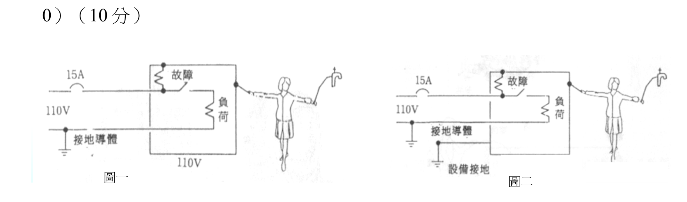
一、應設置防止感電用漏電斷路器之3種狀況（各2分）： 1. 使用對地電壓在150伏特以上之移動式或攜帶式電動機具。 2. 於含水或被其他導電度高之液體濕潤之潮濕場所、金屬板上或鋼架上等導電性良好場所使用移動式或攜帶式電動機具。 3. 於建築或工程作業使用之臨時用電設備。
二、漏電斷路器之型式：應為高敏感度、高速型，能確實動作之防止感電用漏電斷路器。
三、人體電流計算 題目條件：電源均為110V，該員腳著絕緣鞋（阻斷經足部對地之漏電迴路），兩手分別接觸金屬電氣箱外殼與帶電導體，兩手間人體電阻R=4,000歐姆；惟圖一、圖二之接地方式不同，須分別計算：
圖一（僅設「接地導體」，即僅電源側／系統中性線接地，金屬箱外殼本身並未另作設備接地）： 箱內故障使外殼與帶電導體直接短接，因外殼無獨立之低阻抗接地路徑可分流故障電流，外殼電位即上升至與帶電導體相同之對地電壓110V（原圖亦於外殼標示「110V」）。此時電流迴路為：電源（帶電導體，110V）→ 右手 → 人體電阻4,000Ω → 左手 → 金屬外殼（電位＝110V，未接地分流）→ 迴路 → 電源，人體為此故障電壓下幾乎唯一之通路，故： I₁ = V／R = 110V ÷ 4,000Ω = 0.0275A = 27.5毫安（mA）
圖二（外殼另設「設備接地」，接地電阻假設為0）： 箱體外殼經電阻為0之設備接地直接與大地等電位連接，故障電流絕大部分經此低阻抗（0Ω）路徑流入大地，外殼電位被鉗制於地電位（0V），與人體電阻4,000Ω之路徑相當於兩條並聯通路且以0Ω之設備接地為主要分流路徑。人體兩手間之電位差＝故障電流×設備接地電阻＝I×0＝0V，故： I₂ = V／R = 0V ÷ 4,000Ω ≈ 0安培（0 mA，可視為無感電電流）
驗算：I₁×R=0.0275A×4,000Ω=110V（與外殼標示110V相符）；I₂之情形因設備接地電阻為0，人體兩端電位差恆為0，符合電流分流至低阻抗路徑之原理。
比較可知：圖一之27.5毫安已達可能造成強烈肌肉收縮、呼吸困難甚至心室顫動之危險範圍（一般認為超過30mA即有致命風險，10數毫安已可能使人無法自主脫離電源），顯示僅接地系統中性線（接地導體）而未將設備外殼一併接地時，並無法保護接觸外殼之人員；圖二之設備接地（電阻趨近於0）則能有效將故障電流導入大地、大幅降低外殼對地電壓與人體通過電流，此正是本規則要求「設備接地」及裝設高敏感度、高速型漏電斷路器之立法目的與雙重防護觀念所在。
本題前二小題屬條文背誦題，第三小題屬電工安全計算題，核心為歐姆定律（I=V/R）之應用，並須理解「絕緣鞋阻斷足部至地之迴路」及「設備接地」對電流路徑之影響。本題最大陷阱在於圖一、圖二之接地方式不同：圖一僅標示「接地導體」（電源系統接地，箱殼並未接地），故障時箱殼會浮升至全部故障電壓（110V），人體幾乎承受全部電壓差（27.5mA）；圖二則標示「設備接地」（箱殼本身接地，電阻視為0），故障電流絕大部分經此低阻抗路徑導入大地，箱殼維持地電位，人體兩手間電位差趨近於0（電流≈0）。若未辨識兩圖接地對象之差異（誤以為兩圖皆為設備接地、或答案不分圖一圖二給出相同數值），即無法呈現「設備接地」防護感電之核心觀念，此為本小題配分10分之主要鑑別點。常見失分點：未列出完整算式、遺漏單位轉換（A與mA）、或誤將絕緣鞋認定為完全隔絕電流通過人體（實則電流仍會經雙手間4,000Ω電阻構成迴路，僅足部對地漏電路徑被阻斷）。
⚠️ 本詳解為 AI 彙整之參考擬答，非官方標準答案；法規內容以最新公告版本為準。
企業要建立好的安全衛生管理運作體系，相關安全衛生政策、組織、人員、制度缺一不可，依職業安全衛生管理辦法第5條之1，職業安全衛生人員職責包含擬訂、規劃及推動安全衛生管理事項，並指導有關部門實施，各級主管職責為指揮、監督所屬執行安全衛生管理事項，並協調及指導有關人員實施；同辦法第12條之2也明訂一定規模以上事業單位，雇主應依國家標準CNS 45001同等以上規定，建置適合之職業安全衛生管理系統，其中「員工參與」為重要之一環，由此可見職業安全衛生工作並非僅由職業安全衛生人員推動，而作為一位合格的職業安全管理師，最基本的必須要會擬定職業安全衛生管理計畫，充分運用規劃（Plan）、實施（Do）、查核（Check）及改進（Action）等管理手法，實現職業安全衛生管理目標，並藉由持續不斷的稽核制度發現問題，即時採取矯正及預防措施，以提昇職業安全衛生管理績效，防止職業災害，在擬定職業安全衛生管理計畫前，須先對工作環境或作業危害進行辨識、評估，收集相關資料後為之，請針對職業安全衛生管理計畫所應包括事項，至少列舉10項（各2分，共20分）
職業安全衛生管理計畫應依事業單位之規模、性質，配合PDCA管理循環擬訂，至少應包括下列事項： 1. 工作環境或作業危害之辨識、評估及控制。 2. 機械、設備或器具之管理。 3. 危害性化學品之分類、標示、通識及管理。 4. 有害作業環境之採樣策略規劃及監測。 5. 危險性工作場所之製程或施工安全評估。 6. 採購、契約管理及承攬管理。 7. 變更管理。 8. 安全衛生作業標準之訂定。 9. 定期或不定期實施安全衛生檢查、稽核。 10. 安全衛生教育訓練。 11. 個人防護具之管理。 12. 健康檢查、健康管理及促進。 13. 緊急應變措施。 14. 職業災害、虛驚事故、影響身心健康事件之調查處理及統計分析。 15. 安全衛生管理紀錄及績效評估措施。 16. 其他安全衛生管理相關事項。
（以上請依題目要求擇其中10項作答即得滿分；作答時建議依事業單位實際危害特性挑選最貼切之10項，並簡述各項執行重點，以展現管理計畫之完整性與可執行性。）
本題結合PDCA管理循環與職業安全衛生管理計畫之具體內容，重點在於能否跳脫「條列式背誦」而以管理系統思維（危害辨識→評估→控制→稽核→矯正預防）架構全部項目。常見失分點：只列出教育訓練、健康檢查等常見表面項目而遺漏「變更管理」「承攬管理」「虛驚事故調查」等進階管理系統項目；亦須留意本題已明確要求「至少10項」，各項2分，故條列項目數量與內容完整度同等重要。
A營造公司將建築大樓之施工架組拆交付B工程行施作，另將外牆泥作作業（貼磁磚）交付C工程行承攬，期間並未將施工之危害資訊告知相關承攬人，另查該施工架亦未有任何施工圖說。該工程經勞動檢查時發現工地現場如附照片所示（其中施工架與結構體之連結多數已被拆除）。請就承攬管理及施工安全設施，逐一列出有具體違反法令規定事項（18分），另請列舉2種施工架組拆的安全施工方法（2分）。
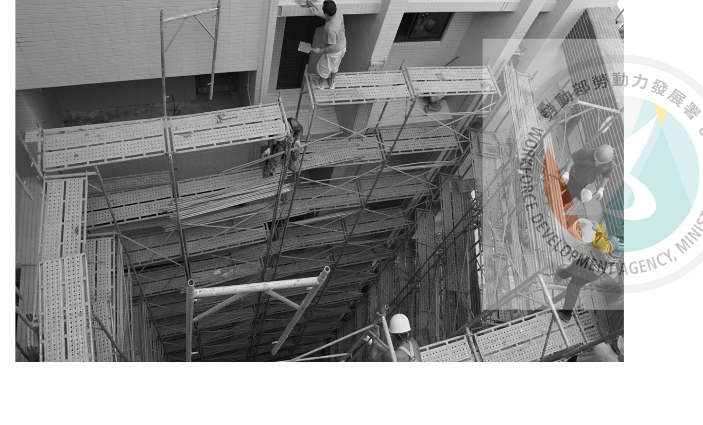
(一) 承攬管理面之違反事項 1. A公司將施工架組拆及外牆泥作分別交付B、C工程行承攬，事前未就交付承攬之工作環境、危害因素及應採取之安全衛生設備、措施等評估結果告知承攬人，違反職業安全衛生法第26條「事前告知義務」之規定。 2. A公司與B、C工程行為同一工地共同作業之關係，未依規定設置協議組織、指定工作場所負責人擔任指揮、監督及協調工作，亦未辦理工作連繫調整、工作場所巡視、相關承攬人安全衛生教育訓練之指導協助及機械設備人員進場管制等必要措施，違反職業安全衛生法第27條原事業單位應採取之共同作業必要措施規定。
(二) 施工安全設施面之違反事項 3. 該施工架屬營造工程用施工架，其構築（含拆除）未由所僱之專任工程人員或委由相關執業技師依結構力學原理妥為設計、置備施工圖說及強度計算書，違反營造安全衛生設施標準第40條規定（該條適用於高度7公尺以上且立面面積達330平方公尺以上等指定施工架，若本案施工架未達該規模門檻，仍應依同標準第42條、第45條等一般設計及穩定規定辦理，惟本案已明確查無任何施工圖說，顯屬失職）。 4. 施工架與結構體之連結多數已被拆除，未能與結構體連接部分未以斜撐材或其他相關設施作適當而充分之支撐，且未在垂直方向不超過5.5公尺、水平方向不超過7.5公尺之間隔與構造物妥實連接，致施工架有倒塌之虞，違反營造安全衛生設施標準第45條第2款、第3款規定。 5. 施工架組配（含拆除）作業未指派施工架組配作業主管於現場辦理決定作業方法、實施檢點、監督個人防護具使用及安全衛生設備確認等事項，違反營造安全衛生設施標準第41條規定。
(三) 2種施工架組拆之安全施工方法（各1分） 1. 依施工圖說及強度計算書，由專任工程人員或執業技師事先設計施工架構築與拆除順序，並建立按圖施作之查驗機制，經簽章確認後始得施作。 2. 拆除作業採「由上而下、逐層拆除」方式進行，每拆除一層即同步檢視並確保未拆除部分與結構體之繫牆桿、壁連座等連接設施仍維持充分之支撐與穩定，避免大面積同時解除結構體連結。
本題為情境式違規列舉題，須將題幹關鍵事實（未告知危害資訊、無施工圖說、結構體連結多數被拆除）精準對應到「承攬管理」與「施工安全設施」兩大類法條，是歷屆考試常見題型。常見失分點：把違規事項寫得過於籠統（如僅寫「未做好安全管理」）而未指出具體法條要件；或將承攬管理（第26、27條）與施工架設施規定（營造安全衛生設施標準）混為一談、未分類作答。第40條之適用門檻（高度7公尺以上、立面330平方公尺以上）於實務作答時應視題目是否明示規模而調整用語，避免武斷套用。
花蓮馬太鞍溪堰塞湖，於2025年9月下旬在花蓮縣馬太鞍溪沿岸區域爆發嚴重水災，洪水將台9線馬太鞍溪橋沖毀，使馬太鞍溪下游南側的堤防破損，導致大量河水夾雜土石進到光復鄉，事後為了協助災民重建家園，不少鏟子超人以人力方式協助救災，另外也有營建事業單位出動許多車輛機械前往救災，如果您是這些營建事業單位的職業安全衛生人員，請協助雇主了解相關安全衛生規定： 一、依職業安全衛生設施規則規定，車輛機械係指能以動力驅動且自行活動於非特定場所之哪些機械設備？（6分） 二、承第一小題，車輛系營建機械分哪三類？並請各列舉1種所屬機械。（6分） 三、依營造安全衛生設施標準規定，對於車輛機械，為避免於作業時發生該機械翻落或表土崩塌等情事，應就哪些事項事先進行調查？（8分）並針對有危害勞工之虞者，應整理工作場所。
一、車輛機械之定義：本規則所稱車輛機械，係指能以動力驅動且自行活動於非特定場所之車輛、車輛系營建機械、堆高機等（各2分）。
二、車輛系營建機械三分類，各舉例1種： 1. 地面搬運、裝卸用營建機械：例如推土機（或平土機、鏟土機、碎物積裝機、刮運機、鏟刮機）。 2. 掘削用營建機械：例如動力鏟（或牽引鏟、拖斗挖泥機、挖土斗、斗式掘削機、挖溝機）。 3. 基礎工程用營建機械：例如打椿機（或拔椿機、鑽土機、轉鑽機、鑽孔機、地鑽、夯實機、混凝土泵送車）。
三、事前應調查之4項事項（各2分）： 1. 該作業場所之天候、地質及地形狀況等。 2. 所使用車輛機械之種類及性能。 3. 車輛機械之行經路線。 4. 車輛機械之作業方法。 依前項調查結果，有危害勞工之虞者，應整理工作場所；其中行經路線及作業方法2項事項，應於作業前告知勞工。
本題以救災情境包裝，實則考「車輛機械」基本定義與三分類例示、及事先調查義務條文之熟悉度，屬條文記憶型題目。常見失分點：把「車輛系營建機械」之三分類名稱答錯（如誤以「大型／小型」區分而非依「搬運裝卸／掘削／基礎工程」功能區分）、或第三小題僅答出2、3項調查事項而未答滿4項。救災情境雖具時事性，惟作答仍應回歸法規本文，不宜因情境特殊而自行創設答案。
協同作業機器人（Collaborative Robot，Cobot）應用於製造業之組裝與搬運等工作，依工業用機器人危害預防標準之規定。請回答下列問題： 一、本標準所稱協同作業與協同作業空間之定義。（4分） 二、雇主使用協同作業之機器人時，除應符合國家標準CNS14490系列、國際標準ISO10218系列或與其同等標準之規定外，並實施評估後，製作安全評估報告留存。請列出安全評估事項。（14分） 三、雇主使用協同作業之機器人，於哪些狀況下，需重新評估第二小題之資料，並記錄、保存相關報告等資料五年。（2分）
一、名詞定義 - 協同作業：指經風險評估，特定人員與工業用機器人於協同作業空間內共同作業，且無須使用連鎖裝置、圍籬或其他隔離設施之作業型態。 - 協同作業空間：指工業用機器人與人員可同時執行任務之作業空間，機器人於此空間內運轉時，人員得進入且無須停止機器人運轉。
二、安全評估事項（依風險評估流程，重點包括）： 1. 工業用機器人本體及末端效應器（工具）之危害辨識（如夾持、碰撞、壓迫、切割等）。 2. 協同作業空間之範圍及其配置（含人機共同作業區域界定）。 3. 機器人運轉速度、動力及扭矩等參數之限制設定，確保於接觸人員時之衝擊力低於容許值。 4. 安全防護功能（如速度及分離監控、手動導引、動力及力量限制、安全額定監控停止等協同作業模式）之選用與驗證。 5. 人員可能之作業行為及可預見之誤用情形評估。 6. 緊急停止裝置及安全連鎖功能之設置與測試。 7. 教育訓練及作業程序（標準作業程序、緊急應變程序）之訂定。 以上評估後應製作安全評估報告，記錄評估過程、方法、結果及採行之安全防護措施，留存備查。
三、應重新評估之狀況：於機器人之協同作業模式、作業程序、末端效應器、作業空間配置或其他影響安全評估結果之條件有變更時，應重新實施評估，並將評估報告等相關資料記錄、保存5年。
本題屬新興科技（協同作業機器人）結合傳統機械危害預防之新型考題，重點在於「協同作業」與一般工業機器人（需圍籬隔離）之差異，以及安全評估報告之留存年限（5年，此為職業安全衛生法規常見之保存年限）。常見失分點：將「協同作業空間」誤解為一般安全防護空間、遺漏「速度及分離監控」等4種協同作業安全防護模式的具體內容。因語料庫未收錄本標準逐條原文，正式應試時應以最新公告之工業用機器人危害預防標準條文用語精確作答。
某加氫站設有氫氣蓄壓臥式圓筒集合容器為壓縮氫氣之儲存設備，領有高壓氣體特定設備檢查合格證，該加氫站為危險性工作場所檢查及審查辦法第2條所稱丙類工作場所，其攝氏35度時最高使用壓力為每平方公分999公斤，內容積為1.2立方公尺，請回答下列問題： 一、依高壓氣體勞工安全規則，計算該儲存設備之儲存能力值（單位：立方公尺）？（4分） 二、依高壓氣體勞工安全規則，該加氫站之製造處理能力分類為何類製造事業單位？（3分） 三、依高壓氣體勞工安全規則，該加氫站應就哪些防止災害及安全衛生應注意之必要事項，訂定災害防止規章，使勞工遵行？（6分） 四、該等設備如依危險性機械及設備安全檢查規則第133條，應檢附哪些資料申請高壓氣體特定設備延長其內部檢查期限或以其他替代方式檢查？（7分）
一、儲存能力計算 依高壓氣體勞工安全規則，壓縮氣體儲存設備之儲存能力計算式為： Ｑ＝（Ｐ＋1）×Ｖ1 其中 P：儲存設備溫度在攝氏35度時之最高灌裝壓力（每平方公分之公斤數，題目給定999 kg/cm²，以最高使用壓力代入）；V1：儲存設備之內容積（立方公尺，題目給定1.2 m³）。 代入計算：Ｑ＝（999＋1）×1.2＝1000×1.2＝1,200立方公尺。 驗算：1000×1.2=1200，計算無誤。
二、製造處理能力分類 高壓氣體勞工安全規則將製造事業單位分為甲類、乙類二類：甲類製造事業單位為一日處理氣體容積（換算為攝氏0度、每平方公分0公斤時之容積）達30立方公尺以上，或一日冷凍能力20公噸以上者；乙類為甲類以外之高壓氣體製造者。 本案加氫站儲存能力已達1,200立方公尺，遠超過甲類30立方公尺之門檻，其以壓縮方式灌裝氫氣供應車輛使用，一日處理量顯著超過30立方公尺，故應歸類為甲類製造事業單位。
三、應訂定災害防止規章之事項（各1分，共6項，題配6分）： 1. 安全衛生管理體制及該事業內各層級人員應擔負之職責。 2. 製造設備之安全運轉及操作之必要事項。 3. 安全巡視、檢點、檢查之必要事項。 4. 製造設施之新設、增設、變更之管理，與設備、管線之維護、保養、檢修、汰換及其他必要事項。 5. 製造設施遭遇緊急狀態時之應變措施及演練事項。 6. 對於承攬人、再承攬人之管理、協調事項。 （法規尚列第7項「其他防止災害及安全衛生應注意之必要事項」為概括規定，如6項已足6分可不另列。）
四、申請延長內部檢查期限或替代檢查應檢附之資料（7項）： 1. 安全衛生管理狀況。 2. 自動檢查計畫暨執行紀錄。 3. 該設備之構造檢查合格明細表影本。 4. 構造詳圖。 5. 生產流程圖。 6. 緊急應變處置計畫。 7. 自動控制系統及檢查替代方式建議。 上述資料應於內部檢查有效期限屆滿前3個月檢附，報經檢查機構核定後，始得延長內部檢查期限或以其他檢查方式替代。
本題為計算＋條文列舉之綜合題型。第一小題須留意公式為Ｑ＝（Ｐ＋1）Ｖ1，而非簡化之「10P+1」等錯誤公式，且P應代入「最高灌裝壓力」（題目以最高使用壓力近似代入為常見命題手法）；第二小題須理解高壓氣體勞工安全規則之甲乙分類與危險性工作場所審查及檢查辦法之甲乙丙丁類工作場所分類係屬「不同規範體系」，作答時不可混淆二者，本題應依儲存能力／處理能力數值判斷甲乙類，而非直接援引題幹所述之「丙類工作場所」。常見失分點：公式代錯（誤用容器儲存能力公式Ｗ＝Ｖ2／Ｃ於壓縮氣體）、以及將危險性工作場所分類與高壓氣體製造事業單位分類混為一談。
⚠️ 本詳解為 AI 彙整之參考擬答，非官方標準答案；法規內容以最新公告版本為準。
執行風險評估是事業單位規劃及執行各項安全衛生管理制度應有的基本原則及作業流程，可協助事業單位建置完整且適當的職業安全衛生管理計畫或管理系統。 一、依風險評估技術指引之建議，請列出風險評估的6個作業流程（12分）。 二、承第一小題，依法規及安全管理實務，請列舉4個應執行風險評估的時機（8分）。
一、風險評估6個作業流程（各2分）： 1. 辨識危害（含物理性、化學性、生物性、人因性及社會心理性等危害之辨識）。 2. 評估危害（暴露評估）及先前狀況（既有防護設施及管理現況之確認）。 3. 決定風險等級（依危害發生機率及嚴重度矩陣判定風險等級）。 4. 決定控制方法（依危害控制優先順序：消除、取代、工程控制、行政管理、個人防護具）。 5. 採取控制措施並確認採行成效。 6. 定期或於製程、作業內容變更時重新評估、檢討修正。
二、應執行風險評估之4個時機（各2分）： 1. 建構或導入職業安全衛生管理系統（如CNS 45001）時。 2. 新增、修改或變更製程、作業程序、材料、設備前（依職業安全衛生管理辦法第12條之3規定屬強制辦理時機）。 3. 發生職業災害或虛驚事故後，為釐清根本原因並防止再發生時。 4. 危險性工作場所依規定申請審查或檢查前，須實施製程安全評估。 （其他可列時機：定期（如每年）例行性檢討、法規新增或修正致原評估基準改變時、承攬作業開始前等，任選4項作答即得滿分。）
本題核心為風險評估之PDCA式作業流程與強制實施時機之區辨，重點在於流程須依「辨識→評估→控制→確認成效→重新評估」之邏輯順序完整列出，不可跳步驟或倒置順序。常見失分點：將「風險評估」與「安全衛生稽核」流程混淆、或第二小題僅列出教科書時機而未扣合職業安全衛生管理辦法第12條之3之法定強制時機。
對於物料之搬運，應儘量利用機械以代替人力，凡40公斤以上物品，以人力車輛或工具搬運為原則，500公斤以上物品，以機動車輛或其他機械搬運為宜；在營造工地中，為了搬運磚塊、砂石…等，捲揚機是常見的吊運機械，請回答下列安全衛生問題： 一、依職業安全衛生設施規則規定，雇主使勞工以捲揚機等吊運物料時，應依哪些規定辦理？請列舉8項。（16分） 二、又依營造安全衛生設施標準規定，對於磚、瓦、木塊、管料、鋼筋、鋼材或相同及類似營建材料之堆放，應置放於穩固、平坦之處，整齊緊靠堆置，其高度不得超過多少公尺？儲存位置鄰近開口部分時，應距離該開口部分多少公尺以上？（2分） 三、承第二小題，對於袋裝材料之儲存，堆放高度不得超過多少層？至少每幾層交錯一次方向？以保持穩定。（2分）
一、捲揚機吊運物料應辦理事項（請列舉8項，各2分）： 1. 安裝前須核對並確認設計資料及強度計算書。 2. 吊掛之重量不得超過該設備所能承受之最高負荷，並應設有防止超過負荷裝置（設置困難者得以標示代替）。 3. 不得供人員搭乘、吊升或降落（臨時或緊急處理且採防墜及專人監督措施者除外）。 4. 吊鉤或吊具應有防止吊舉中所吊物體脫落之裝置。 5. 錨錠及吊掛用之吊鏈、鋼索、掛鉤、纖維索等吊具有異狀時應即修換。 6. 吊運作業中應嚴禁人員進入吊掛物下方及吊鏈、鋼索等內側角。 7. 捲揚吊索通路有與人員碰觸之虞之場所，應加防護或有其他安全設施。 8. 操作處應有適當防護設施，以防物體飛落傷害操作人員，採坐姿操作者應設坐位。 （其餘可列項目：應設防止過捲裝置；吊運作業時應設信號指揮聯絡人員並規定統一指揮信號；應避免鄰近電力線作業；電源開關箱之設置應有防護裝置。任選8項作答即得滿分。）
二、營建材料堆放規定：高度不得超過1.8公尺；鄰近開口部分時，應距離該開口部分2公尺以上。
三、袋裝材料儲存規定：堆放高度不得超過10層；至少每2層交錯一次方向，以保持穩定（5層以上部分應向內退縮）。
本題結合物料搬運總則與捲揚機、堆放材料之細部規定，屬條文列舉＋數字背誦之綜合題型。第一小題12款規定僅需列滿8項即得滿分，惟需避免張冠李戴（如誤把移動式起重機或固定式起重機之規定寫入，捲揚機屬第155條之1之獨立規範）。第二、三小題數字題常見失分點為將1.8公尺、2公尺、10層、每2層交錯等數字互相混淆，作答時建議搭配單位與情境（如「鄰近開口部分」「以保持穩定」）一併記憶。
墜落、滾落之職業災害類型每年佔我國整體職業災害案件比例超過50%，職業安全衛生設施規則多有相關防災規範，例如要求高度在2公尺以上之工作場所邊緣及開口部分，應設有適當強度之護欄、護蓋等防護設備，及對高差超過1.5公尺以上之場所作業時，應設置能使勞工安全上下之設備等，而坊間經常使用移動梯或合梯進行修繕作業，其使用方便、容易取得，適合用於2公尺以下高度之上下移動使用，惟因此造成工作者輕忽墜落危害之風險，故請依職業安全衛生設施規則針對移動梯及合梯應符合之規定及禁止事項，列出相關規定（應符合規定事項各2分，禁止事項4分，共20分）。
(一) 移動梯應符合之規定（各2分，共8分）： 1. 具有堅固之構造。 2. 其材質不得有顯著之損傷、腐蝕等現象。 3. 寬度應在30公分以上。 4. 應採取防止滑溜或其他防止轉動之必要措施。
(二) 合梯應符合之規定（各2分，共8分）： 1. 具有堅固之構造。 2. 其材質不得有顯著之損傷、腐蝕等。 3. 梯腳與地面之角度應在75度以內，且兩梯腳間有金屬等硬質繫材扣牢，腳部有防滑絕緣腳座套。 4. 有安全之防滑梯面。
(三) 合梯禁止事項（4分）： 雇主不得使勞工以合梯當作二工作面之上下設備使用（2分），並應禁止勞工站立於頂板作業（2分）。
本題為條文精確背誦題，移動梯（第229條）與合梯（第230條）規定極易混淆，尤其「寬度30公分以上」為移動梯專屬規定、「梯腳角度75度以內」為合梯專屬規定，作答時應嚴格對應法條、勿混寫。禁止事項僅規定於合梯（第230條第2項），移動梯條文本身並無禁止事項規定，此為本題配分設計（禁止事項4分僅來自合梯2項禁止規定）之關鍵，考生應留意勿誤將移動梯也套用「不得作二工作面使用」等禁止規定。
一個半導體製造相關事業單位的職業安全管理從業人員，依其作業現場之狀況協助該單位生產部門主管於爆炸性危險區域設置防爆電氣設備。如該從業人員欲參考勞動部職業安全衛生署113年因鑑於經濟部能源署「用戶用電設備裝置規則」針對防爆電氣設備採用之NEC美國標準，與勞動部職業安全衛生署採用之IEC國際標準有對比調和之需要所訂定之行政指導，請回答下列問題： 一、依法令規定及前述行政指導，哪些物質滯留之作業場所係屬需使用之電氣機具需具防爆性能構造？（4分） 二、防爆電氣設備之性能、構造、試驗、標示及危險區域劃分應符合哪些標準規定？（3分） 三、該單位採購之防爆電氣機具之國內產製運出廠場或國外輸入時間於104年1月1日以後，依據職業安全衛生法第7條及附屬法規規定，確認符合指定之安全標準外仍須辦理之事項？（4分） 四、該爆炸性危險區域用防爆電氣機具依「用戶用電設備裝置規則」配線及安裝，有哪2種施工方法？（4分） 五、對爆炸性危險區域用防爆電氣機具依「職業安全衛生管理辦法」如何定期實施檢查？（4分） 六、請協助該從業人員對該行政指導提出改進建議？（1分）
一、需使用防爆性能構造電氣機具之場所：依職業安全衛生設施規則及相關危險區域劃分規定，凡具有爆炸性氣體、可燃性氣體或蒸氣、可燃性粉塵等物質滯留、有引火或爆炸危險之虞之作業場所（如儲槽區、製程區、加氣站、噴漆場所等經劃分為危險區域者），其使用之電氣機具應具防爆性能構造。
二、應符合之標準：防爆電氣設備之性能、構造、試驗、標示及危險區域劃分，應符合國家標準（如CNS 3376系列防爆電氣設備標準）、國際標準IEC 60079系列或與其同等之標準規定（含美規NEC/UL系列同等以上標準）。
三、104年1月1日以後產製運出或輸入者，除符合安全標準外仍須辦理事項：依職業安全衛生法第7條規定，製造者或輸入者應於中央主管機關指定之資訊申報網站辦理登錄，並於其產製或輸入之產品明顯處張貼安全標示，以供識別；屬經公告列入型式驗證之產品者，並應依同法第8條、第9條規定，經中央主管機關認可之驗證機構實施型式驗證合格及張貼合格標章後，始得產製運出廠場或輸入。
四、2種施工方法：依用戶用電設備裝置規則對爆炸性氣體危險場所（第一類場所）之配線規定，主要可採： 1. 金屬導線管配線（有螺紋之厚金屬導線管，搭配適用之管配件及線盒）。 2. 電纜配線（如MI電纜、金屬被覆電纜等，搭配適用於危險場所之終端配件）。 （第一類第二種場所另有加襯墊密封匯流排槽等變化方式，惟主要仍歸屬於上述導線管與電纜兩大配線方法。）
五、依職業安全衛生管理辦法之定期檢查：雇主對於防爆電氣設備，應每月依下列規定定期實施檢查一次： 1. 本體有無損傷、變形。 2. 配管、配線等有無損傷、變形及異常狀況。 3. 其他保持防爆性能之必要事項。
六、對行政指導之改進建議（1分，屬開放式申論）： 建議該行政指導應進一步訂定NEC（美規）與IEC（歐規）防爆等級、區域劃分（Class/Division制 vs. Zone制）之對照換算表，並明確規範已依NEC標準取得驗證之防爆設備，於國內申請安全標示登錄或型式驗證時之採認方式與銜接期限，以降低廠商因兩制併行產生之合規成本與認定爭議；並建議定期滾動檢討修正，因應國際標準調和趨勢。
本題以半導體業防爆電氣設備為情境，橫跨職業安全衛生法（產品安全標準）、用戶用電設備裝置規則（配線施工）及職業安全衛生管理辦法（定期自動檢查）三部法規，考生須清楚各法規適用階段（產品上市前合格管理→現場配線施工→使用中定期檢查）之分工。常見失分點：把「型式驗證」與「安全標示登錄」二種不同管理機制混為一談、或誤將第31條之1之防爆電氣設備檢查週期答成其他機械設備之週期（如年度檢查）。第六小題屬開放式申論分數低但仍應言之有物，扣合NEC與IEC對比調和之題幹脈絡作答。
依高壓氣體勞工安全規則之規定。請回答下列問題： 一、請列出本規則所稱特定高壓氣體名稱。（6分） 二、本規則所稱容器、超低溫容器、高壓氣體設備、處理設備之定義。（8分） 三、本規則所稱灌氣容器與殘氣容器之判斷基準為何？（1分） 四、某氣體（非乙炔）於25℃時之表壓力9.8㎏/㎝2，該氣體可視為理想氣體，請列計算式並判斷該氣體是否符合本規則所稱之高壓氣體。（5分）
一、特定高壓氣體名稱（各1分，共6分）： 壓縮氫氣、壓縮天然氣、液氧、液氨、液氯、液化石油氣。
二、名詞定義（各2分，共8分）： - 容器：純供灌裝高壓氣體之移動式壓力容器。 - 超低溫容器：可灌裝攝氏零下50度以下之液化氣體，並使用絕熱材料被覆，使容器內氣體溫度不致上升至超過常用溫度之容器。 - 高壓氣體設備：氣體設備中有高壓氣體流通之部分。 - 處理設備：以壓縮、液化及其他方法處理氣體之高壓氣體製造設備。
三、灌氣容器與殘氣容器之判斷基準：以容器內所灌裝高壓氣體之質量，與該容器灌裝時質量之比例判斷： - 灌氣容器：容器內氣體之質量在灌裝時質量之二分之一以上者。 - 殘氣容器：容器內氣體之質量未滿灌裝時質量之二分之一者。
四、高壓氣體判定計算 依高壓氣體勞工安全規則第2條，非乙炔之壓縮氣體，於常用溫度下表壓力達每平方公分10公斤以上，或溫度在攝氏35度時之壓力可達每平方公分10公斤以上者，即屬本規則所稱高壓氣體。
題目條件：25℃時表壓力P₁=9.8 kg/cm²，需換算至35℃時之表壓力，以理想氣體狀態方程式（定容條件下）P/T為定值進行換算： P₁(絕對)/T₁ ＝ P₂(絕對)/T₂
以標準大氣壓1 kg/cm²換算表壓力為絕對壓力： P₁(絕對) ＝ 9.8＋1 ＝ 10.8 kg/cm²（絕對壓力） T₁ ＝ 25＋273 ＝ 298K T₂ ＝ 35＋273 ＝ 308K
P₂(絕對) ＝ P₁(絕對) × T₂／T₁ ＝ 10.8 × 308／298 ≈ 10.8 × 1.0336 ≈ 11.16 kg/cm²（絕對壓力）
換算回表壓力： P₂(表壓力) ＝ 11.16－1 ＝ 10.16 kg/cm²
驗算：10.16＋1＝11.16，11.16×298／308＝10.8（相符）。
結論：該氣體於攝氏35度時之表壓力約10.16 kg/cm²，已達每平方公分10公斤以上，符合本規則所稱高壓氣體之定義（依第2條第1款規定）。
本題前三小題屬定義背誦，須注意「容器」「儲槽」「氣體設備」「高壓氣體設備」「處理設備」「減壓設備」等一系列相似名詞之精確區分（易混淆失分）。第四小題計算題核心為理想氣體定容變化下壓力與絕對溫度成正比之關係（P/T=常數），須注意表壓力與絕對壓力之換算（+1個大氣壓）不可遺漏，此為最常見的計算失分點；換算溫度亦須以絕對溫度（克氏溫標，＋273）代入，不可直接以攝氏溫度相除。